-
- 3.1. 实验可重复性
- 3.2. 计时器
- 3.3. numpy和pytorch计算速度比较
-
- 4.1. 安装策略
- 4.2. 首先确认内核版本和发行版本，再确认显卡型号
- 4.3. 安装驱动-CUDA Driver
- 4.3.1. 下载CUDA Driver
- 4.3.2. 禁用nouveau
- 4.3.3. 安装CUDA Driver
- 4.3.4. 查看显卡是否安装成功
- 4.3.5. 查看nvcc
- 4.4. CUDA Toolkit和CuDNN
- 4.4.1. 下载对应的CUDA Toolkit版本
- 4.4.2. 安装CUDA Toolkit
- 4.4.3. 下载对应的CuDNN
- 4.4.4. 安装CuDNN
- 4.5. 安装对应版本的Pytorch
- 4.6. 推荐A100
- 4.7. GPU测试程序
- 4.7.1. 单机单卡
- 4.7.2. 单机多卡
- 4.7.3. GPU burn压力测试
-
- 5.1. 导入模块
-
- 6.1. torchvison.datasets获得Dataset
- 6.2. 自定义数据集获得Dataset
- 6.2.1. 利用TensorDataset()封装成Dataset
- 6.2.2. 重载Dataset类
- 6.2.3. Pytoch.utils.data.Dataset类分析和总结
- 6.3. 数据加载-DataLoader()
- 6.3.1. 估计数据加载时间
- 6.3.2. collate_fn处理不等长tensor
- 6.3.3. 重载DataLoader
-
- 7.1. Tensors定义
- 7.2. Tensors属性
- 7.2.1. 张量的数据类型-dtype
- 7.2.1.1. 转化格式
- 7.2.2. 张量的设备-device
- 7.2.3. 张量的维度-size/shape
- 7.2.4. 特殊的一维张量
- 7.2.1. 张量的数据类型-dtype
- 7.3. Tensors操作
- 7.3.1. 索引和切片
- 7.3.2. 修改维度
- 7.3.2.1. reshape函数
- 7.3.2.2. view函数
- 7.3.2.3. transpose函数
- 7.3.2.4. permute函数
- 7.3.2.5. unsqueeze函数增加维度
- 7.3.2.6. squeeze函数减少维度
- 7.3.2.7. 拼接 (concat)
- 7.3.2.8. 拆分 (split)
- 7.3.2.9. 分块 (chunk)
- 7.3.2.10. 拼接 (stack)
- 7.3.2.10.1. cat和stack的比较
- 7.3.2.11. 广播 (expand)
- 7.4. 线性代数运算
- 7.5. 广播机制 (Broadcasting)
- 7.5.1. 广播规则
- 7.6. Pytorch的计算图 和 自动微分 (autograd)
- 7.6.1. 反向传播 (backward)-批量求梯度，但未进行参数更新
- 7.6.2. 仅计算梯度 (求导计算)
- 7.7. 自动微积-autograd
- 7.7.1. 自己探索
- 7.7.1.1. 标量-一阶导数（得标量）
- 7.7.1.2. 标量/向量-一阶导数（得向量）
- 7.7.1.3. 向量/向量-一阶导数（得矩阵）
- 7.7.1.4. 求高阶导数
- 7.7.2. 一个简单的例子
- 7.7.3. 计算另一个
- 7.7.4. 非标量变量的反向传播
- 7.7.5. 分离计算
- 7.7.6. Python控制流的梯度计算
- 7.7.1. 自己探索
- 7.8. 概率论
-
- 8.1. 现线性回归模型于训练过程-从零开始
- 8.2. 现线性回归模型于训练过程-简洁实现
- 8.3. 专题-模型定义（计算预测值y_hat）
- 8.3.1. 块：torch.nn模块
- 8.3.2. 块：自定义
- 8.3.3. 模型结构/组成
- 8.3.3.1. .children()
- 8.3.3.2. .named_children()
- 8.3.3.3. .modules()
- 8.3.3.4. .named_modules()
- 8.3.3.5. 删除和添加
- 8.3.3.6. 替换
- 8.3.3.7. add_module()
- 8.3.4. 模型：参数管理
- 8.3.4.1. 参数访问
- 8.3.4.1.1. state_dict
- 8.3.4.1.2. parameters
- 8.3.4.1.3. named_parameters
- 8.3.4.2. 参数初始化
- 8.3.4.1. 参数访问
- 8.3.5. 层：自定义
- 8.4. 专题-损失函数 (loss_fn)
- 8.5. 专题-反向传播（求梯度）
- 8.6. 专题-更新权重（优化算法）
- 8.6.1. 随机梯度下降（SGD）
- 8.6.2. adam
- 8.6.3. RMSprop
- 8.6.4. 学习率调度器
- 8.6.4.1. StepLR： 按照固定的步长调整学习率
- 8.6.4.2. MultiStepLR： 在指定的里程碑（milestones）上调整学习率
- 8.6.4.3. ExponentialLR： 以指数衰减的方式调整学习率
- 8.6.4.4. CosineAnnealingLR： 余弦退火调整学习率
- 8.6.4.5. ReduceLROnPlateau： 当指标停止改善时，降低学习率
- 8.6.4.6. LambdaLR： 使用自定义的函数来调整学习率
- 8.6.4.7. 自定义
- 8.7. 专题-训练
- 8.8. 可视化训练过程
-
- 9.1. 查看GPU配置
- 9.2. 单机单卡（GPU）
- 9.3. 单机多卡（GPU）
- 9.3.1. DP
- 9.3.2. DDP
- 9.3.2.1. 在colab上测试可用
- 9.4. 多机多卡（GPU）- 分布式训练
-
- 10.1. 加载和保存-张量
- 10.2. 加载和保存-模型参数
-
- 11.1. CNN
- 11.2. 序列数据
- 11.2.1. 什么是序列
- 11.2.2. 语言模型
- 11.2.3. 文本预处理
- 11.2.3.1. 下载《Time machine》并读取数据
- 11.2.3.2. 词元化（Tokenization）
- 11.2.3.3. 词表（Vocabulary）
- 11.2.3.4. 整合所有功能
- 11.2.3.5. 文本编码与向量化
- 11.2.3.5.1. word2vec
- 11.2.4. 语言模型数据集
- 11.2.4.1. 顺序采样 (Sequential Sampling)
- 11.2.4.2. 随机采样 (Random Sampling)
- 11.2.4.3. 总结
- 11.2.4.4. 包装
- 11.3. RNN
- 11.3.1. RNN-循环神经网络原理
- 11.3.2. GRU
- 11.3.3. LSTM
- 11.3.4. Encoder-Decoder框架
- 11.3.4.1. Encoder部分
- 11.3.4.2. Decoder部分
- 11.3.4.3. Encoder-Decoder（合并编码器和解码器）
- 11.4. seq2seq (Sequence to sequence learning)
- 11.5. Attention
- 11.5.1. 非参数注意力汇聚（Attention Pooling）-计算q和k相似度
- 11.5.2. 参数注意力汇聚（Attention Pooling）-计算q和k相似度
- 11.5.3. 注意力分数函数-计算q和k相似度
- 11.5.3.1. 加性注意力 (Additive Attention)-计算q、k相似度
- 11.5.3.2. 缩放点积注意力 (Scaled Dot-Product Attention)-计算q、k相似度
- 11.5.4. 自注意力机制-q、k和v相同
- 11.5.5. 多头注意力机制-h个q、k和v对
- 11.5.6. attention-seq2seq
- 11.6. Transformer
- 11.7. BERT
- 11.7.1. BERT encode block
- 11.7.2. Masked Language Modeling
- 11.7.3. Next Sentence Prediction
- 11.7.4. BERT模型
- 11.7.5. Datasets for Pre-training
- 11.7.5.1. 生成下一句预测任务的数据
- 11.7.5.2. 生成遮蔽语言模型任务的数据
- 11.7.5.3. 将文本转换为预训练数据集
- 11.7.5.4. 创建数据集
- 11.7.6. 预训练BERT
- 11.7.7. 用BERT表示文本
- 11.8. 用BERT做微调
- 11.9. GPT
- 11.10. Mamba
-
- 13.1. 关于调参
- 13.2. 模型选择
- 13.3. one-hot
- 13.4. embedding
- 13.5. BN和LN
- 13.6. 掩码 (masked)
- 13.7. MLP、FC、FNN、CNN、RNN
- 13.8. 优化显存
- 13.8.1. 删除中间暂时不用的变量
- 13.8.2. 混合精度训练(Mixed Precision Training)
- 13.8.3. 梯度检查点（Gradient Checkpointing）
- 13.8.4. 分块计算 (Chunking)
-
- 14.1. Fine-tuning
- 14.2. torchvision的应用案例
- 14.3. 迁移学习案例
-
- 15.1. 准确率、精确率、召回率和F1分数
- 15.2. 自定义计算指标
- 15.3. 于PyTorch Lightning联合使用
-
- 16.1. 训练逻辑
- 16.2. Data.py
- 16.3. Model.py
- 16.4. ModelWrapper.py
- 16.4.1. Training and vlidation
- 16.4.2. Validation
- 16.4.3. Test
- 16.4.4. Prediction
- 16.4.4.1. PyTorch lightning自身Trainer直接predict
- 16.4.4.2. PyTorch lightning加载权重后预测
- 16.4.4.3. 提取权重后加载至纯PyTorch模型
-
- 22.1. 强化学习基础概念
- 22.2. 深度强化学习的特点
- 22.3. 马尔可夫
- 22.4. 深度强化学习的主要方法
- 22.4.1. 深度 Q 网络（Deep Q-Network, DQN）
- 22.4.2. 策略梯度方法（Policy Gradient Methods）
- 22.4.3. 演员-评论家方法（Actor-Critic Methods）
- 22.4.4. 深度确定性策略梯度（Deep Deterministic Policy Gradient, DDPG）
- 22.5. 深度强化学习的应用
-
- 29.1. partial
1. 概述¶
写这个笔记主要是为了记录学习过程中知识的总结、归纳和反思。作为一个非科班出生的生物人，仅凭着热爱开始了自学深度学习这条路，前路漫漫不敢想，也不曾觉得以后能端这碗饭。只是，羡慕网上像智慧君、李沐这样的人，能够从事如此炫酷的工作，能把自己的热爱开发成一生从事的职业。仔细想想如果自己不做点什么或是不为此努力点什么，就觉得坐立不安、难以入眠。同时深知，这个过程会是无比艰辛，在百无聊赖之际，记录学习的过程或许会是一种苦中作乐的方式。
- d2l EN (及时更新): https://d2l.ai/index.html
- d2l ZH: https://zh-v2.d2l.ai/
2. 环境配置¶
PyTorch官方教程 https://pytorch.org/
PyTorch lightning官方教程 https://lightning.ai/docs/pytorch/stable/
尽量用conda配置环境，不要conda和pip混搭。
# Create environment
# and entry the environment
conda create -n pytorch -y && conda activate pytorch
# Install ipykernel and related packages via conda
conda install ipykernel matplotlib pandas seaborn -y
# Install PyTorch
conda install pytorch torchvision torchaudio pytorch-cuda=12.4 -c pytorch -c nvidia -y
# Instll PyTorch lightning
conda install lightning -c conda-forge -y
import numpy as np
import torch
# Function for setting the seed
def set_seed(seed):
np.random.seed(seed)
torch.manual_seed(seed)
if torch.cuda.is_available(): # GPU operation have separate seed
torch.cuda.manual_seed(seed)
torch.cuda.manual_seed_all(seed)
set_seed(42)
# Additionally, some operations on a GPU are implemented stochastic for efficiency
# We want to ensure that all operations are deterministic on GPU (if used) for reproducibility
torch.backends.cudnn.deterministic = True
torch.backends.cudnn.benchmark = False
# Fetching the device that will be used throughout this notebook
device = torch.device("cpu") if not torch.cuda.is_available() else torch.device("cuda:0")
print("Using device", device)
Using device cuda:0
import time
import torch
class cpuTimer():
'''一个计时器'''
def __init__(self):
'''初始化时候自动执行'''
self.start = time.time()
def __call__(self):
'''再次调用该对象时，会自动执行'''
self.stop = time.time()
seconds = self.stop - self.start
days = seconds // (24 * 3600)
hours = (seconds % (24 * 3600)) // 3600
minutes = (seconds % 3600) // 60
remaining_seconds = seconds % 60
print('='*20, '\n', f"Total：\n {days} d \n {hours} h \n {minutes} m \n {remaining_seconds} s")
# Tiemr使用
timer_on_cpu = cpuTimer()
for i in range(3):
time.sleep(0.01)
timer_on_cpu()
==================== Total： 0.0 d 0.0 h 0.0 m 0.030319690704345703 s
'''
计算GPU的时间是不同于计算CPU的的时间的
'''
import torch
class gpuTimer():
def __init__(self):
# CUDA is asynchronous, so we need to use different timing functions
self.start = torch.cuda.Event(enable_timing=True)
self.end = torch.cuda.Event(enable_timing=True)
self.start.record()
def __call__(self):
self.end.record()
torch.cuda.synchronize() # Waits for everything to finish running on the GPU
print("⚡"*20, f"\nGPU time: {0.001 * self.start.elapsed_time(self.end):6.5f}s") # Milliseconds to seconds
# Demo for Timer on GPU devices
timer_on_gpu = gpuTimer()
a = torch.arange(45).reshape(3, 3, 5)
b = torch.arange(45).reshape(3, 5, 3)
c = torch.bmm(a, b)
timer_on_gpu()
⚡⚡⚡⚡⚡⚡⚡⚡⚡⚡⚡⚡⚡⚡⚡⚡⚡⚡⚡⚡ GPU time: 0.00125s
3.3. numpy和pytorch计算速度比较¶
import numpy as np
import torch
# Datas on cpu with arrary
a = np.random.rand(1000, 1000)
b = np.random.rand(1000, 1000)
# Datas on cpu with tensor
at = torch.Tensor(a).to('cpu')
bt = torch.Tensor(b).to('cpu')
# Datas on gpu with tensor
at_gpu = torch.Tensor(a).to('cuda:0')
bt_gpu = torch.Tensor(b).to('cuda:0')
%timeit a + b # On cpu via numpy
1.5 ms ± 15.7 μs per loop (mean ± std. dev. of 7 runs, 1,000 loops each)
%timeit at + bt # On cpu via PyTorch
24.8 μs ± 332 ns per loop (mean ± std. dev. of 7 runs, 10,000 loops each)
start = torch.cuda.Event(enable_timing=True)
stop = torch.cuda.Event(enable_timing=True)
start.record()
at_gpu + bt_gpu
stop.record()
# Waits for everything to finish running
torch.cuda.synchronize()
print(f'Time: {0.001 * start.elapsed_time(stop)} s')
Time: 0.08263510131835938 s
4. 安装GPU驱动¶
以CentOS8安装NVIDIA Tesla A100为例，下载CUDA Toolkit和CuDNN，需要注意cudnn的版本必须与cuda的版本相匹配：
1.NVIDIA Driver：NVIDIA驱动是NVIDIA显卡的
驱动程序，它是CUDA和CuDNN的前提条件。显卡驱动下载地址：https://www.nvidia.com/Download/index.aspx。2.CUDA Toolkit：CUDA Toolkit是一个
开发工具包，其中包含了CUDA编译器、IDE、调试器等工具，以及CUDA程序所需的各种库文件和头文件，每个版本的CUDA Toolkit 都对应一个最低版本的显卡驱动版本（CUDA Driver）。3.NVCC：其实就是
CUDA的编译器,可以从CUDA Toolkit的/bin目录中获取,类似于gcc就是c语言的编译器。4.CUDA Deep Neural Network (cuDNN)：CuDNN是NVIDIA提供的一个
深度神经网络加速库，它包含了一系列高性能的基本函数和算法，用于加速深度学习任务的计算；CuDNN需要与CUDA Toolkit一起使用，以优化深度学习任务。
%%bash
echo 查看linux内核版本、架构
uname -a
# Linux 135.91.205.202.cau.edu.cn 4.18.0-147.el8.x86_64 #1 SMP Wed Dec 4 21:51:45 UTC 2019 x86_64 x86_64 x86_64 GNU/Linux
# x86_64
echo 发行版本
cat /etc/redhat-release
# CentOS Linux release 8.1.1911 (Core)
# CentOS
echo 显卡型号 （硬件层面）
lspci | grep -i nvidia
# 04:00.0 3D controller: NVIDIA Corporation GK208M [GeForce GT 730M] (rev a1)
echo 验证系统是否安装gcc编译器
gcc --version
# sudo yum install kernel-devel-$(uname -r) kernel-headers-$(uname -r)
查看linux内核版本、架构 Linux 135.91.205.202.cau.edu.cn 4.18.0-348.7.1.el8_5.x86_64 #1 SMP Wed Dec 22 13:25:12 UTC 2021 x86_64 x86_64 x86_64 GNU/Linux 发行版本 CentOS Linux release 8.1.1911 (Core) 显卡型号 （硬件层面） 2f:00.0 3D controller: NVIDIA Corporation Device 20b0 (rev a1) 86:00.0 3D controller: NVIDIA Corporation Device 20b0 (rev a1) 验证系统是否安装gcc编译器 gcc (GCC) 8.5.0 20210514 (Red Hat 8.5.0-4) Copyright (C) 2018 Free Software Foundation, Inc. This is free software; see the source for copying conditions. There is NO warranty; not even for MERCHANTABILITY or FITNESS FOR A PARTICULAR PURPOSE.
4.3. 安装驱动-CUDA Driver¶
4.3.1. 下载CUDA Driver¶
# 1. 从NVIDIA官网下辖
# https://www.nvidia.cn/Download/index.aspx?lang=cn
# 2. 通过dnf search nvidia*
# 貌似在centos8上默认就禁用了，我没改，直接查看了lsmod | grep nouveau命令，发现没有输出。
4.3.3. 安装CUDA Driver¶
# !chmod a+x *.run
# !sudo ./*.run
'chmod' �����ڲ����ⲿ���Ҳ���ǿ����еij��� ���������ļ��� 'sudo' �����ڲ����ⲿ���Ҳ���ǿ����еij��� ���������ļ���
4.3.4. 查看显卡是否安装成功¶
!nvidia-smi
Thu Oct 10 14:55:44 2024
+-----------------------------------------------------------------------------------------+
| NVIDIA-SMI 550.54.15 Driver Version: 550.54.15 CUDA Version: 12.4 |
|-----------------------------------------+------------------------+----------------------+
| GPU Name Persistence-M | Bus-Id Disp.A | Volatile Uncorr. ECC |
| Fan Temp Perf Pwr:Usage/Cap | Memory-Usage | GPU-Util Compute M. |
| | | MIG M. |
|=========================================+========================+======================|
| 0 NVIDIA A100-SXM4-40GB Off | 00000000:2F:00.0 Off | 0 |
| N/A 38C P0 36W / 400W | 31186MiB / 40960MiB | 0% Default |
| | | Disabled |
+-----------------------------------------+------------------------+----------------------+
| 1 NVIDIA A100-SXM4-40GB Off | 00000000:86:00.0 Off | 0 |
| N/A 38C P0 38W / 400W | 425MiB / 40960MiB | 0% Default |
| | | Disabled |
+-----------------------------------------+------------------------+----------------------+
+-----------------------------------------------------------------------------------------+
| Processes: |
| GPU GI CI PID Type Process name GPU Memory |
| ID ID Usage |
|=========================================================================================|
| 0 N/A N/A 1128336 C .../miniconda3/envs/pytorch/bin/python 510MiB |
| 0 N/A N/A 1159477 C python 30662MiB |
| 1 N/A N/A 1159477 C python 416MiB |
+-----------------------------------------------------------------------------------------+
!source /bmp/backup/zhaosy/miniconda3/etc/profile.d/conda.sh
!conda activate pytorch
!nvcc --version
4.4. CUDA Toolkit和CuDNN¶
不推荐一开始作为root为Linux全局配置CUDA Toolkit，每个用户和软件使用的CUDA Toolkit版本可能不一样。
4.4.1. 下载对应的CUDA Toolkit版本¶
%%bash
nvcc -V # 查看是否安装好CUDA Toolkit
wget https://us.download.nvidia.cn/tesla/535.129.03/NVIDIA-Linux-x86_64-535.129.03.run
4.4.2. 安装CUDA Toolkit¶
%%bash
# 卸载之前安装的cuda
sudo dnf remove nvidia*
Couldn't find program: 'bash'
%%bash
chmod +x NVIDIA-Linux-x86_64-535.129.03.run
sudo sh NVIDIA-Linux-x86_64-535.129.03.run
Couldn't find program: 'bash'
4.4.3. 下载对应的CuDNN¶
# https://link.zhihu.com/?target=https%3A//developer.nvidia.com/rdp/cudnn-download
# %%bash
# %%bash
# https://pytorch.org/
# CUDA 12.1
conda create -n pytorch-gpu -y && conda activate pytorch-gpu
conda install pytorch torchvision torchaudio pytorch-cuda=12.1 -c pytorch -c nvidia # CUDA 12.1
# enviroment and actiate environment
conda create -n pytorch-gpu && conda activate pytorch-gpu
# Install cudatoolkit via conda containing nvcc etc.
# Instead of :
# conda install cudatoolkit
# or
# conda install cuda-nvcc
conda install nvidia/label/cuda-12.6.0::cuda
import torch
import torch.nn as nn
import torch.utils.data as data
import torchvision
import time
device = torch.device("cuda:0" if torch.cuda.is_available() else "cpu")
# 数据准备
dbs = './Pytorch_datasets/'
train_dataset = torchvision.datasets.MNIST(
root=dbs,
train=True,
download=True,
transform=torchvision.transforms.Compose(
[torchvision.transforms.ToTensor(),
# torchvision.transforms.Normalize((0.1307,), (0.3081,))
]
)
)
test_dataset = torchvision.datasets.MNIST(
root=dbs,
train=False,
download=True,
transform=torchvision.transforms.Compose(
[
torchvision.transforms.ToTensor(),
# torchvision.transforms.Normalize((0.1307,), (0.3081,))
]
)
)
# 迭代型数据方式
train_iter = data.DataLoader(
dataset=train_dataset,
batch_size=128,
shuffle=True
)
# test_iter = data.DataLoader(dataset=test_dataset) # test不需要batch训练
# 网络结构
class Net(nn.Module):
def __init__(self):
super().__init__()
self.network = nn.Sequential(
nn.Flatten(),
nn.Linear(28*28, 1024), nn.ReLU(),
nn.Linear(1024, 10), nn.Softmax()
)
def forward(self, X):
return self.network(X)
# 训练过程封装
def train_steps(epochs, train_dataset, train_iter, test_dataset, net, loss_fn, opt, device):
'''
参数记录
epochs = epochs # epoch
train_dataset = train_dataset # 全部train数据集
train_iter = train_iter # batch之后的train数据集
test_dataset = test_dataset # 全部test数据集
net = net # 网络模型
loss_fn = loss_fn # 损失函数
opt = opt # 优化器
device = device # device GPU/CPU
'''
print('='*100)
print(f"Runing on {device}")
print('='*100)
train_all_data_gpu = train_dataset.data.to(device)
train_all_targets_gpu = train_dataset.targets.to(device)
test_all_data_gpu = test_dataset.data.to(device)
test_all_targets_gpu = test_dataset.targets.to(device)
net.to(device)
# 开始迭代
start = time.time()
for epoch in range(epochs):
for batch_record in train_iter:
X, y = batch_record # 分配X, y
X, y = X.to(device), y.to(device) # 复制到device（GPU/CPU）上
# print(X[0])
# print(X[0].dtype)
# break
opt.zero_grad() # 默认是累加，此处从新求导
y_hat = net(X) # 计算y_hat
loss = loss_fn(y_hat, y) # 计算loss
loss.backward() # 计算梯度
opt.step() # 更新网络参数
net.eval() # 切换至评估模式
# 模型默认是net.train()
# 但是net中含有BN、Dropout等，在test时必须固定train时学好的参数，不能被test又改变了
# 但net中没有BN、Dropout等时，加不加net.eval()都无所谓
with torch.no_grad(): # with下内容不进行grad计算，可以节省运算和内存
train_loss = loss_fn(net(train_all_data_gpu/256), train_all_targets_gpu)
# print(train_loss)
train_acc_cmp = net(train_all_data_gpu/256).argmax(axis=1) == train_all_targets_gpu
train_acc = (train_acc_cmp.sum() / len(train_acc_cmp)) * 100
# print(train_acc)
test_acc_cmp = net(test_all_data_gpu/256).argmax(axis=1) == test_all_targets_gpu
test_acc = (test_acc_cmp.sum() / len(test_acc_cmp)) * 100
# print(test_acc)
print(f"epoch {epoch+1}/{epochs}: train_loss={train_loss}, train_acc={train_acc}, test_acc={test_acc}")
stop = time.time()
seconds = stop - start
def convert_seconds(seconds):
days = seconds // (24 * 3600)
hours = (seconds % (24 * 3600)) // 3600
minutes = (seconds % 3600) // 60
remaining_seconds = seconds % 60
return days, hours, minutes, remaining_seconds
days, hours, minutes, remaining_seconds = convert_seconds(seconds)
print('='*100, '\n', f"Total：{days} d/ {hours} h/ {minutes} m/ {remaining_seconds} s")
# return (train_loss, train_acc, test_acc)
return None
# lr 0.01 -> 0.5
# 结果表明还是会快一点收敛
net = Net()
loss_fn = nn.CrossEntropyLoss()
opt = torch.optim.SGD(params=net.parameters(), lr=0.5)
train_steps(
epochs=10,
train_dataset=train_dataset,
train_iter=train_iter,
test_dataset=test_dataset,
net=net,
loss_fn=loss_fn,
opt=opt,
device=device
)
==================================================================================================== Runing on cuda:0 ==================================================================================================== epoch 1/10: train_loss=1.6274998188018799, train_acc=84.3983383178711, test_acc=84.86000061035156 epoch 2/10: train_loss=1.5564780235290527, train_acc=91.80333709716797, test_acc=92.20999145507812 epoch 3/10: train_loss=1.5359078645706177, train_acc=93.42666625976562, test_acc=93.30999755859375 epoch 4/10: train_loss=1.5250604152679443, train_acc=94.48833465576172, test_acc=94.14999389648438 epoch 5/10: train_loss=1.5173759460449219, train_acc=95.15666961669922, test_acc=94.68999481201172 epoch 6/10: train_loss=1.5116100311279297, train_acc=95.62833404541016, test_acc=94.97000122070312 epoch 7/10: train_loss=1.5059237480163574, train_acc=96.125, test_acc=95.5199966430664 epoch 8/10: train_loss=1.5021032094955444, train_acc=96.46500396728516, test_acc=95.77999877929688 epoch 9/10: train_loss=1.4987181425094604, train_acc=96.77667236328125, test_acc=96.22000122070312 epoch 10/10: train_loss=1.4955240488052368, train_acc=97.086669921875, test_acc=96.41000366210938 ==================================================================================================== Total：0.0 d/ 0.0 h/ 0.0 m/ 55.98274064064026 s
import torch
import torch.nn as nn
import torch.utils.data as data
import torchvision
import time
device = torch.device("cuda:0" if torch.cuda.is_available() else "cpu")
# 数据准备
dbs = './Pytorch_datasets/'
train_dataset = torchvision.datasets.MNIST(
root=dbs,
train=True,
download=True,
transform=torchvision.transforms.Compose(
[
torchvision.transforms.ToTensor(),
# torchvision.transforms.Normalize((0.1307,), (0.3081,))
]
)
)
test_dataset = torchvision.datasets.MNIST(
root=dbs,
train=False,
download=True,
transform=torchvision.transforms.Compose(
[
torchvision.transforms.ToTensor(),
# torchvision.transforms.Normalize((0.1307,), (0.3081,))
]
)
)
# 迭代型数据方式
train_iter = data.DataLoader(
dataset=train_dataset,
batch_size=128,
shuffle=True
)
# test_iter = data.DataLoader(dataset=test_dataset) # test不需要batch训练
# 网络结构
class Net(nn.Module):
def __init__(self):
super().__init__()
self.network = nn.Sequential(
nn.Flatten(),
nn.Linear(28*28, 1024), nn.ReLU(),
nn.Linear(1024, 10), nn.Softmax()
)
def forward(self, X):
return self.network(X)
# 训练过程封装
def train_steps(epochs, train_dataset, train_iter, test_dataset, net, loss_fn, opt, device):
'''
参数记录
epochs = epochs # epoch
train_dataset = train_dataset # 全部train数据集
train_iter = train_iter # batch之后的train数据集
test_dataset = test_dataset # 全部test数据集
net = net # 网络模型
loss_fn = loss_fn # 损失函数
opt = opt # 优化器
device = device # device GPU/CPU
'''
print('='*100)
print(f"Runing on {device}")
print('='*100)
train_all_data_gpu = train_dataset.data.to(device)
train_all_targets_gpu = train_dataset.targets.to(device)
test_all_data_gpu = test_dataset.data.to(device)
test_all_targets_gpu = test_dataset.targets.to(device)
net = nn.DataParallel(module=net)
net = net.to(device)
# 开始迭代
start = time.time()
for epoch in range(epochs):
for batch_record in train_iter:
X, y = batch_record # 分配X, y
X, y = X.to(device), y.to(device) # 复制到device（GPU/CPU）上
# print(X[0])
# print(X[0].dtype)
# break
opt.zero_grad() # 默认是累加，此处从新求导
y_hat = net(X) # 计算y_hat
loss = loss_fn(y_hat, y)# 计算loss
loss.backward() # 计算梯度
opt.step() # 更新网络参数
net.eval() # 切换至评估模式
# 模型默认是net.train()
# 但是net中含有BN、Dropout等，在test时必须固定train时学好的参数，不能被test又改变了
# 但net中没有BN、Dropout等时，加不加net.eval()都无所谓
with torch.no_grad(): # with下内容不进行grad计算，可以节省运算和内存
train_loss = loss_fn(net(train_all_data_gpu/256), train_all_targets_gpu)
# print(train_loss)
train_acc_cmp = net(train_all_data_gpu/256).argmax(axis=1) == train_all_targets_gpu
train_acc = (train_acc_cmp.sum() / len(train_acc_cmp)) * 100
# print(train_acc)
test_acc_cmp = net(test_all_data_gpu/256).argmax(axis=1) == test_all_targets_gpu
test_acc = (test_acc_cmp.sum() / len(test_acc_cmp)) * 100
# print(test_acc)
print(f"epoch {epoch+1}/{epochs}: train_loss={train_loss}, train_acc={train_acc}, test_acc={test_acc}")
stop = time.time()
seconds = stop - start
def convert_seconds(seconds):
days = seconds // (24 * 3600)
hours = (seconds % (24 * 3600)) // 3600
minutes = (seconds % 3600) // 60
remaining_seconds = seconds % 60
return days, hours, minutes, remaining_seconds
days, hours, minutes, remaining_seconds = convert_seconds(seconds)
print('='*100, '\n', f"Total：{days} d/ {hours} h/ {minutes} m/ {remaining_seconds} s")
# return (train_loss, train_acc, test_acc)
return None
# lr 0.01 -> 0.5
# 结果表明还是会快一点收敛
net = Net()
loss_fn = nn.CrossEntropyLoss()
opt = torch.optim.SGD(params=net.parameters(), lr=0.5)
train_steps(
epochs=10,
train_dataset=train_dataset,
train_iter=train_iter,
test_dataset=test_dataset,
net=net,
loss_fn=loss_fn,
opt=opt,
device=device
)
==================================================================================================== Runing on cuda:0 ==================================================================================================== epoch 1/10: train_loss=1.575600504875183, train_acc=90.44833374023438, test_acc=90.77999877929688 epoch 2/10: train_loss=1.547834038734436, train_acc=92.36333465576172, test_acc=92.48999786376953 epoch 3/10: train_loss=1.5322562456130981, train_acc=93.78500366210938, test_acc=93.61000061035156 epoch 4/10: train_loss=1.5213903188705444, train_acc=94.74333190917969, test_acc=94.43999481201172 epoch 5/10: train_loss=1.5164926052093506, train_acc=95.19166564941406, test_acc=94.81999969482422 epoch 6/10: train_loss=1.5106992721557617, train_acc=95.68499755859375, test_acc=95.27999877929688 epoch 7/10: train_loss=1.5050891637802124, train_acc=96.26000213623047, test_acc=95.63999938964844 epoch 8/10: train_loss=1.5017056465148926, train_acc=96.55667114257812, test_acc=95.9000015258789 epoch 9/10: train_loss=1.4975892305374146, train_acc=96.89666748046875, test_acc=96.29000091552734 epoch 10/10: train_loss=1.4955655336380005, train_acc=97.086669921875, test_acc=96.52999877929688 ==================================================================================================== Total：0.0 d/ 0.0 h/ 1.0 m/ 7.511963844299316 s
# device = [ 'cpu' if not torch.cuda.is_available() else ]
device = [f'cuda:{i}' for i in range(torch.cuda.device_count())] if torch.cuda.is_available() else ['cpu']
device
4.7.3. GPU burn压力测试¶
李沐在装机配置后，进行GPU压力测试所用的程序为GPU_burn（可从github上下载）
- gpu_burn:
- github地址：
git clone https://github.com/wilicc/gpu-burn.git
- github地址：
%%bash
# git clone:
git clone https://github.com/wilicc/gpu-burn.git
cd gpu-burn
# make
make
# 或
# make CUDAPATH=~/minicnoda3/pytorch-gpu/
# help
gpu_burn --help
%%bash
# 2h * 60min * 60s = 7200s with tensor core (avaliable)
gpu_burn -tc $(( 3 * 24 * 60 * 60))
5. Pytorch模块介绍¶
5.1. 导入模块¶
torchvision
models
datasets
transforms
utils
torch
utils
data # 数据加载相关
TensorDataset
Dataset
DataLoader
nn
functional
Sequential
DataParallel
Linear
Softmax
optim
SGD
Adam
# 现成的数据库
import torchvision
from torchvision import transforms
import torch
# 数据加载
from torch.utils import data # from torch.utils import data
from torch.utils.data import Dataset, TensorDataset, DataLoader # data.Dataset, data.TensorDataset, data.DataLoader
# 神经网络结构
from torch import nn
from torch.nn import functional as F
# import torch.nn.DataParallel
from torch.nn import DataParallel
from torch import distributed as dist
# 优化器
from torch import optim
print('pytorch version: ', torch.__version__)
print(f"torchvision version: {torchvision.__version__}")
pytorch version: 2.4.0 torchvision version: 0.19.0
6.1. torchvison.datasets获得Dataset¶
tochvision主要处理图像数据，包含一些常用的数据集、模型、转换函数等。 torchvision独立于PyTorch，需要专门安装。torchvision.
models: 提供深度学习中各种经典的网络结构、预训练好的模型，如：Alex-Net、VGG、ResNet、Inception等。torchvision.
datasets：提供常用的数据集，设计上继承 torch.utils.data.Dataset，主要包括：MNIST、CIFAR10/100、ImageNet、COCO等。torchvision.
transforms：提供常用的数据预处理操作，主要包括对Tensor及PIL Image对象的操作。torchvision.
utils：工具类，如保存张量作为图像到磁盘，给一个小批量创建一个图像网格。
import torchvision
dbs = './Pytorch_datasets/'
trans = torchvision.transforms.Compose(
[
torchvision.transforms.ToTensor(), # PIL转换为tensor格式
torchvision.transforms.Normalize((0.5,), (1.0,)) # 标准化
]
)
train_dataset = torchvision.datasets.FashionMNIST(
root=dbs,
train=True,
download=True,
transform=trans,
# target_transform=False
)
test_dataset = torchvision.datasets.FashionMNIST(
root=dbs,
train=False,
download=True,
transform=trans,
# target_transform=False
)
type(train_dataset), type(test_dataset)
(torchvision.datasets.mnist.FashionMNIST, torchvision.datasets.mnist.FashionMNIST)
# 封装成torch使用的dataset格式数据
train_dataset, test_dataset
(Dataset FashionMNIST
Number of datapoints: 60000
Root location: ./Pytorch_datasets/
Split: Train
StandardTransform
Transform: Compose(
ToTensor()
Normalize(mean=(0.5,), std=(1.0,))
),
Dataset FashionMNIST
Number of datapoints: 10000
Root location: ./Pytorch_datasets/
Split: Test
StandardTransform
Transform: Compose(
ToTensor()
Normalize(mean=(0.5,), std=(1.0,))
))
6.2. 自定义数据集获得Dataset¶
6.2.1. 利用TensorDataset()封装成Dataset¶
TensorDataset是一个现成的类，用于将数据表示为张量列表。如果你只是想创建一个包含输入特征和标签的数据集，可以直接使用 TensorDataset：
dataset = torch.utils.data.TensorDataset( input_features, labels )# 按照下标顺序将input_features和labels值对应起来
from torch.utils.data import TensorDataset
# 1. 自建数据集 (Tensor格式的数据)
features = torch.tensor([i for i in range(1000)]) # 必须是tensor格式的额数据
labels = features * 2 # labels = torch.mul(features, 2)
# 2. 构建dataset数据集
datasets = TensorDataset(features, labels)
type(datasets), datasets
(torch.utils.data.dataset.TensorDataset, <torch.utils.data.dataset.TensorDataset at 0x7f9030b56ab0>)
features0, labels0 = datasets[0] # 取第一个数据对
features0, labels0
(tensor(0), tensor(0))
datasets.__getitem__(0) # 同上
(tensor(0), tensor(0))
datasets[1] # 取第二个数据对
(tensor(1), tensor(2))
datasets.__getitem__(1) # 同上
(tensor(1), tensor(2))
datasets.__len__() # 数据对的个数
1000
my_datasets = datasets
# 3. 加载成batch数据
data_iter = DataLoader(dataset=datasets, batch_size=256, shuffle=True, num_workers=3)
type(data_iter), data_iter
(torch.utils.data.dataloader.DataLoader, <torch.utils.data.dataloader.DataLoader at 0x7f9030d214c0>)
6.2.2. 重载Dataset类¶
torch.utils.data.Dataset是一个抽象类，用于定义新类型的自定义数据集。如果你想创建自己的数据集，可以继承这个类并实现以下方法：重载
__init__(self, *args, **kwargs): 初始化方法，可以在其中加载你的数据；重载
__len(self)__: 返回数据集的长度；重载
__getitem__(self, index): 根据索引返回数据集中的一个样本。
import torch
from torch.utils.data import Dataset, DataLoader
# 1. 重载Dataset类
class MyData(Dataset):
def __init__(self, nums:int=15):
'''初始化参数'''
self.nums = nums
def __len__(self):
'''返回数据集的总数目'''
return self.nums
def __getitem__(self, index):
'''依据index或idx查找并返回对应的数据'''
features = torch.arange(self.nums)
labels = torch.arange(self.nums)
return features[index], labels[index]
# 2. 利用重载的Dataset创建数据集
datasets = MyData()
datasets, datasets[0], datasets[1], datasets.__getitem__(1), datasets[2], datasets.__getitem__(2), datasets.__len__()
# 3. 利用DataLoader加载数据
# data_iter = DataLoader(dataset=datasets, batch_size=256, shuffle=True, num_workers=3)
# data_iter
(<__main__.MyData at 0x7f08a6f3fc50>, (tensor(0), tensor(0)), (tensor(1), tensor(1)), (tensor(1), tensor(1)), (tensor(2), tensor(2)), (tensor(2), tensor(2)), 15)
6.2.3. Pytoch.utils.data.Dataset类分析和总结¶
在PyTorch中数据的封装格式为torch.utils.data.Dataset类；
第一种方式：直接加载
torchvision.datasets中对应的数据库生成Dataset格式第二种方式：自定义
利用
Tensordataset(features, labels)函数将features和labels配对并生成Dataset格式 (推荐，我觉得更加方便)重载
Dataset类
6.3. 数据加载-DataLoader()¶
先将自制的数据集利用data.TensorDataset生成
dataset；再用data.DataLoader加载到dataset成最终可用的带有batch_size的格式
DataLoader，方便后续的训练先测试以下数据加载的速度，必须比训练计算所耗的时间小，否则将降低训练效率；
当数据加载时间很长时可以预加载，缩短时间
from torch.utils.data import DataLoader
# 加载torchvison数据集（格式化好的torch.utils.data.Dataset）
train_iter = DataLoader(
dataset = my_datasets, # Dataset
batch_size = 5, # batch size
shuffle = True, # 打乱顺序
num_workers = 3 # 线程数
drop_last = False, # 是否删除最后一个不是整数的batch
# collate_fn=collate_function # 处理函数，可以处理不等长数据等等
)
type(train_iter), train_iter # 直接打印看不到内容
(torch.utils.data.dataloader.DataLoader, <torch.utils.data.dataloader.DataLoader at 0x7f90308f7770>)
for batch_idx, batch in enumerate(train_iter): # 小批量的batch_size数据
if batch_idx == 10:
break
print('随机抽取:', batch_idx+1, batch)
随机抽取: 1 [tensor([666, 761, 701, 637, 154]), tensor([1332, 1522, 1402, 1274, 308])] 随机抽取: 2 [tensor([212, 58, 496, 383, 731]), tensor([ 424, 116, 992, 766, 1462])] 随机抽取: 3 [tensor([641, 116, 414, 257, 748]), tensor([1282, 232, 828, 514, 1496])] 随机抽取: 4 [tensor([507, 849, 451, 523, 613]), tensor([1014, 1698, 902, 1046, 1226])] 随机抽取: 5 [tensor([422, 488, 671, 974, 195]), tensor([ 844, 976, 1342, 1948, 390])] 随机抽取: 6 [tensor([258, 848, 583, 454, 328]), tensor([ 516, 1696, 1166, 908, 656])] 随机抽取: 7 [tensor([ 73, 920, 288, 245, 486]), tensor([ 146, 1840, 576, 490, 972])] 随机抽取: 8 [tensor([792, 152, 462, 71, 190]), tensor([1584, 304, 924, 142, 380])] 随机抽取: 9 [tensor([599, 133, 26, 979, 789]), tensor([1198, 266, 52, 1958, 1578])] 随机抽取: 10 [tensor([983, 301, 228, 236, 447]), tensor([1966, 602, 456, 472, 894])]
# 读完一个epoch的一个batch，耗时
timer = cpuTimer()
for X, y in train_iter:
break
timer()
==================== Total： 0.0 d 0.0 h 0.0 m 0.08644580841064453 s
# 读完一个epoch的所有batch，耗时
timer = cpuTimer()
for X, y in train_iter:
continue
timer()
==================== Total： 0.0 d 0.0 h 0.0 m 0.2713015079498291 s
6.3.2. collate_fn处理不等长tensor¶
# 自定义 collate_fn 来处理字典和标签
def collate_function(batch):
# 分别提取 batch 中的 msa, pair 和 labels
msa_batch = [item[0]['msa'] for item in batch]
pair_batch = [item[0]['pair'] for item in batch]
labels_batch = [item[1] for item in batch]
# 找到 batch 中最长的 num_residues
max_residues = max([msa.shape[1] for msa in msa_batch])
# 对 MSA 特征填充 num_residues 维度，使其维度一致
padded_msa_batch = []
for msa in msa_batch:
pad_size = max_residues - msa.shape[1]
padded_msa = torch.nn.functional.pad(msa, (0, 0, 0, pad_size)) # 填充第二维度
padded_msa_batch.append(padded_msa)
# 对 Pair 特征填充 num_residues 维度，使其维度一致
padded_pair_batch = []
for pair in pair_batch:
pad_size = max_residues - pair.shape[0]
padded_pair = torch.nn.functional.pad(pair, (0, 0, 0, pad_size, 0, pad_size)) # 填充第一和第二维度
padded_pair_batch.append(padded_pair)
# 将 MSA 和 Pair 特征堆叠为批量数据
padded_msa_batch = torch.stack(padded_msa_batch)
padded_pair_batch = torch.stack(padded_pair_batch)
# 将标签堆叠为批量数据
labels_batch = torch.stack(labels_batch)
# 返回批量化后的字典和标签
return {'msa': padded_msa_batch, 'pair': padded_pair_batch}, labels_batch
train_iter = data.DataLoader(
dataset=train_datasets,
batch_size=16,
shuffle=True,
num_workers=20,
collate_fn=collate_function
)
6.3.3. 重载DataLoader¶
from torch.utils import data
class RebuildDataLoader(data.DataLoader):
def __init__(self):
super().__init__()
return
# 重载 __iter__ 方法来控制数据加载方式
def __iter__(self):
# 你可以在这里实现自定义的加载逻辑，比如控制每个批次的顺序
iterator = super().__iter__()
for batch in iterator:
# 可以在这里处理或过滤批次数据
yield batch
7. 张量(Tensors)¶
7.1. Tensors定义¶
PyTorch 的一大作用就是可以代替 Numpy 库，所以首先介绍 Tensors ，也就是张量，它相当于 Numpy 的多维数组(ndarrays)。
两者的区别就是：
数学或物理概念：张量 (Tensors)编程概念：数组 (Array)
总结
| 函数名称 | 注释 |
|---|---|
| torch.tensor() | tensor |
| torch.asarray() | |
| torch.from_numpy() | numpy2tensor |
| torch.empty(size) | 垃圾数 |
| torch.zeros(size) | 0 |
| torch.ones(size) | 1 |
| torch.rand(size) | 随机数 |
| torch.randn(size) | 标准正态分布 |
| torch.normal(mean,std,size) | 正态分布 |
| torch.arange(start,end,step,size) | 数组 |
| .reshape(size) | 重塑 |
| .numpy() | 转为numpy的ndarray |
- torch.tensor()
# tensor()
x = torch.tensor([1.0, 2.0, 3.0], dtype=torch.float32)
x
tensor([1., 2., 3.])
- torch.asarray()
# asarray()
x = torch.asarray([1.0, 2.0, 3.0], dtype=torch.float32)
x
tensor([1., 2., 3.])
- torch.from_numpy()
# numpy转tensor, from_numpy()
import numpy as np
x = np.arange(0, 15).reshape(5, 3)
x, torch.from_numpy(x)
(array([[ 0, 1, 2],
[ 3, 4, 5],
[ 6, 7, 8],
[ 9, 10, 11],
[12, 13, 14]]),
tensor([[ 0, 1, 2],
[ 3, 4, 5],
[ 6, 7, 8],
[ 9, 10, 11],
[12, 13, 14]]))
- torch.empty()
# empty()
torch.empty((5, 3), dtype=torch.float32)
tensor([[0.0000e+00, 0.0000e+00, 2.0114e-25],
[3.0742e-41, 1.3127e-29, 3.0742e-41],
[9.2368e-10, 4.5761e-41, 0.0000e+00],
[0.0000e+00, 0.0000e+00, 0.0000e+00],
[0.0000e+00, 0.0000e+00, 0.0000e+00]])
- torch.zeros()
# zeros()
torch.zeros(5, 3) # 0
tensor([[0., 0., 0.],
[0., 0., 0.],
[0., 0., 0.],
[0., 0., 0.],
[0., 0., 0.]])
- torch.ones()
# ones()
torch.ones((5, 3), dtype=torch.float32) # 1
tensor([[1., 1., 1.],
[1., 1., 1.],
[1., 1., 1.],
[1., 1., 1.],
[1., 1., 1.]])
- torch.rand()，产生随机数
# rand()
torch.rand((5, 3), dtype=torch.float32) # 随机数
tensor([[0.8833, 0.0454, 0.5669],
[0.2422, 0.8501, 0.7177],
[0.5687, 0.7171, 0.8636],
[0.3550, 0.5657, 0.5965],
[0.4050, 0.6776, 0.9841]])
- torch.randn()，标准正态分布随机数，产生正态分布随机数
# randn()
torch.randn((3, 5), dtype=torch.float32) # 标准正态分布随机数
tensor([[ 0.7855, -0.0245, -0.9618, -1.4634, -0.2726],
[ 1.1404, -0.9721, 0.4194, 0.1732, -1.2649],
[ 0.0139, 1.0817, -2.1748, 0.5782, -1.0274]])
- torch.normal()，正态分布随机数，产生mean和std的size个数
torch.normal(mean=0, std=1, size=(3, 5))
tensor([[ 0.4510, 0.2798, -0.8032, -0.5851, 0.7675],
[ 2.0413, 1.1163, -0.1891, 0.9543, 0.6753],
[ 1.4002, 0.8864, 0.6356, -1.2399, 1.1891]])
- torch.arange()
# arange()
torch.arange(3) # 0, 1, 2
tensor([0, 1, 2])
- .reshape()
# reshape()
torch.arange(start=0, end=15, step=1).reshape(5, 3) # reshape
tensor([[ 0, 1, 2],
[ 3, 4, 5],
[ 6, 7, 8],
[ 9, 10, 11],
[12, 13, 14]])
- .numpy()，将tensor转化为numpy的ndarray格式
# tensor转化为numpy
x = torch.arange(start=0, end=15, step=1).reshape(5, 3)
x, x.numpy()
(tensor([[ 0, 1, 2],
[ 3, 4, 5],
[ 6, 7, 8],
[ 9, 10, 11],
[12, 13, 14]]),
array([[ 0, 1, 2],
[ 3, 4, 5],
[ 6, 7, 8],
[ 9, 10, 11],
[12, 13, 14]], dtype=int64))
7.2.1. 张量的数据类型-dtype¶
torch.float16 #
torch.float32 # torch.FloatTensor()
torch.float64 # torch.DoubleTensor()
torch.int8
torch.int16 #
torch.int32 # torch.IntTensor()
torch.int64 # torch.LongTensor()
import torch
x = torch.normal(
mean=0,
std=1,
size=(128, 12, 5),
dtype=torch.float32,
device='cpu'
)
x.shape, x.device, x.dtype
(torch.Size([128, 12, 5]), device(type='cpu'), torch.float32)
7.2.1.1. 转化格式¶
方法一：
| 函数 | 备注 |
|---|---|
| tensor.double()： | 把一个张量tensor转为torch.float64 数据类型 |
| tensor.float()： | 把一个张量tensor转为torch.float32 数据类型 |
| tensor.int()： | 把一个张量tensor转为torch.int32 数据类型 |
| tensor.long(): | 把一个张量tensor转为torch.int64 数据类型 |
方法二：
| 类型 | 函数 | 备注 |
|---|---|---|
| float to int | ||
| x.int() | float to int32 | |
| x.long() | float to int64 | |
| int to float | ||
| x.float() | int32 to float | |
| x.double() | int64 to float |
x.dtype, x.float().dtype, x.double().dtype, x.int().dtype, x.long().dtype
(torch.float32, torch.float32, torch.float64, torch.int32, torch.int64)
7.2.2. 张量的设备-device¶
PyTorch识别的设备类型: cpu, cuda:0, cuda:1, ...
import torch
def try_gpu():
'''列出cpu或所有的gpu [cuda:0, cuda:1]'''
if torch.cuda.is_available():
num_gpu = torch.cuda.device_count()
device = [f'cuda:{i}' for i in range(num_gpu)]
else:
device = ['cpu']
return device
x = torch.normal(
mean=0,
std=1,
size=(128, 12, 5),
dtype=torch.float32,
device=try_gpu()[0]
)
x.shape, x.device
(torch.Size([128, 12, 5]), device(type='cuda', index=0))
7.2.3. 张量的维度-size/shape¶
查看张量维度：
|函数名称|注释| |:-|:-| |x.size()|| |x.shape||
tensor([[[]]])
直接表示:- 几个
[[[，表示几个维度 - 没有
[]，表示0维，即标量
- 几个
Size[]
属性：[2, 3]: 几个数字即几个维度[2, 3]: 每个数字表示对应维度的元素数量[]: 0维表示标量[2]: 一维
x = torch.tensor(1)
x.shape, x
(torch.Size([]), tensor(1))
x = torch.tensor([1]) # 相比较标量，只是多了一个[]
x.shape, x
(torch.Size([1]), tensor([1]))
x = torch.arange(12)
x.shape, x
(torch.Size([12]), tensor([ 0, 1, 2, 3, 4, 5, 6, 7, 8, 9, 10, 11]))
x = torch.arange(12).reshape(2, 6)
x.shape, x
(torch.Size([2, 6]),
tensor([[ 0, 1, 2, 3, 4, 5],
[ 6, 7, 8, 9, 10, 11]]))
x = torch.arange(12).reshape(2, 3, 2)
x.shape, x
(torch.Size([2, 3, 2]),
tensor([[[ 0, 1],
[ 2, 3],
[ 4, 5]],
[[ 6, 7],
[ 8, 9],
[10, 11]]]))
x = torch.arange(12).reshape(2, 1, 3, 2)
x.shape, x
(torch.Size([2, 1, 3, 2]),
tensor([[[[ 0, 1],
[ 2, 3],
[ 4, 5]]],
[[[ 6, 7],
[ 8, 9],
[10, 11]]]]))
x = torch.arange(24).reshape(2, 2, 3, 2)
x.shape, x
(torch.Size([2, 2, 3, 2]),
tensor([[[[ 0, 1],
[ 2, 3],
[ 4, 5]],
[[ 6, 7],
[ 8, 9],
[10, 11]]],
[[[12, 13],
[14, 15],
[16, 17]],
[[18, 19],
[20, 21],
[22, 23]]]]))
import torch
# 创建一个一维张量
tensor = torch.tensor([1, 2, 3, 4, 5])
print(tensor) # 输出: tensor([1, 2, 3, 4, 5])
tensor([1, 2, 3, 4, 5])
# 创建一个一维张量
vector = torch.tensor([1, 2, 3, 4, 5])
vector
tensor([1, 2, 3, 4, 5])
# 转换为行向量
row_vector = vector.unsqueeze(-1)
print("Row Vector:", row_vector, sep='\n') # 输出: tensor([[1], [2], [3], [4], [5]])
Row Vector:
tensor([[1],
[2],
[3],
[4],
[5]])
# 转换为列向量
column_vector = vector.unsqueeze(0)
print("Column Vector:", column_vector, sep='\n') # 输出: tensor([[1, 2, 3, 4, 5]])
Column Vector: tensor([[1, 2, 3, 4, 5]])
x = torch.arange(15).reshape(5, 3)
x
tensor([[ 0, 1, 2],
[ 3, 4, 5],
[ 6, 7, 8],
[ 9, 10, 11],
[12, 13, 14]])
x[0] # 1行
tensor([0, 1, 2])
x[1] # 2行
tensor([3, 4, 5])
x[:, 0] # 1列
tensor([ 0, 3, 6, 9, 12])
x[:, 1] # 2列
tensor([ 1, 4, 7, 10, 13])
7.3.2. 修改维度¶
形状/维度：其实整个张量运算就是线性代数中的矩阵运算，所以最重要是明白
矩阵运算前后的形状/维度。高阶张量由若干低阶张量构成，如
- 结构为 (n, c, h, w)的 4 阶张量由 n 个结构为 (c, h, w) 的 3 阶张量构成，
- 结构为 (c, h, w)的 3 阶张量由 c 个结构为 (h, w) 的 2 阶张量构成，
- 结构为 (h, w)的 2 阶张量又由 h 个长度为 w 的 1 阶张量构成，h 为行数，w 为列数。
修改形状/维度：reshape和view都是用来重塑tensor的shape的。view只适合对满足连续性条件（contiguous）的tensor进行操作，而reshape同时还可以对不满足连续性条件的tensor进行操作，具有更好的鲁棒性。view能干的reshape都能干，如果view不能干就可以用reshape来处理。
维度
重排：.reshape().view()
维度重组或转换或
挪动：permute()transpose()
参考：https://blog.csdn.net/weixin_44115575/article/details/140742574
技术层面上的实现：一个张量是由头部信息部分和数据存储部分组成，头部信息部分存储了张量的
形状 (shape)、步长 (stride)、数据类型 (dtype)等信息，数据存储部分存储了张量的实际数据。reshape、view、transpose和permute操作都是基于头部信息部分进行操作的，不会改变数据存储部分的数据。只是view处理前可能需要contiguous()一下；transpose和permute操作在交换维度的时候，需要考虑步长stride的重新计算；交换维度后，对应步长stride进行对应的交换，只是视图变了，数据存储部分的数据没有变。应用层面上的理解：
图像数据处理：经常需要将图像的维度进行重排，如将 (H, W, C) 转换为 (C, H, W)，或者将 (H, W, C) 转换为 (C, H, W)。
# 假设图像数据为 (Batch, Channels, Height, Width) image_tensor = torch.randn(32, 3, 64, 64) # 转换为 (Batch, Height, Width, Channels) image_tensor_permuted = image_tensor.permute(0, 2, 3, 1)
自然语言处理:在自然语言处理任务中，RNN 或 Transformer 模型可能需要特定的输入维度顺序。例如，输入数据可能需要以 (sequence_length, batch_size, features) 的格式提供。
# 假设输入数据为 (Batch, Sequence Length, Features) input_tensor = torch.randn(32, 10, 128) # 转换为 (Sequence Length, Batch, Features) input_tensor_permuted = input_tensor.permute(1, 0, 2)
多维数据分析:在处理多维数据时，某些操作可能需要特定的维度顺序。例如，计算某个维度上的均值或标准差时，可能需要先调整维度顺序。
# 假设有一个 4D 张量 data_tensor = torch.randn(5, 10, 15, 20) # 需要在第一个维度上进行某种操作，可以先调整维度顺序 data_tensor_permuted = data_tensor.permute(1, 0, 2, 3)
X = torch.arange(15)
X, X.shape
(tensor([ 0, 1, 2, 3, 4, 5, 6, 7, 8, 9, 10, 11, 12, 13, 14]), torch.Size([15]))
# reshape
X.reshape(3, 5), X.reshape(3, 5).shape
(tensor([[ 0, 1, 2, 3, 4],
[ 5, 6, 7, 8, 9],
[10, 11, 12, 13, 14]]),
torch.Size([3, 5]))
# view
X.view(3, 5), X.view(3, 5).shape
(tensor([[ 0, 1, 2, 3, 4],
[ 5, 6, 7, 8, 9],
[10, 11, 12, 13, 14]]),
torch.Size([3, 5]))
7.3.2.3. transpose函数¶
transpose()函数一次进行两个维度的交换，参数是 0, 1, 2, 3, … ，随着待转换张量的阶数上升参数越来越多。
# 2 阶张量，结构为 (h, w)，
# 对应 transpose() 函数中的参数是 (0, 1) 两个索引，
# 进行 transpose(0, 1) 操作就是在交换 h, w 两个维度，
# 得到的结果与常见的矩阵转置相同。
X = torch.arange(15).reshape(3, 5)
X
tensor([[ 0, 1, 2, 3, 4],
[ 5, 6, 7, 8, 9],
[10, 11, 12, 13, 14]])
X.T
tensor([[ 0, 5, 10],
[ 1, 6, 11],
[ 2, 7, 12],
[ 3, 8, 13],
[ 4, 9, 14]])
X.transpose(0, 1)
tensor([[ 0, 5, 10],
[ 1, 6, 11],
[ 2, 7, 12],
[ 3, 8, 13],
[ 4, 9, 14]])
X = torch.arange(24).reshape(2, 3, 4)
X.shape, X
(torch.Size([2, 3, 4]),
tensor([[[ 0, 1, 2, 3],
[ 4, 5, 6, 7],
[ 8, 9, 10, 11]],
[[12, 13, 14, 15],
[16, 17, 18, 19],
[20, 21, 22, 23]]]))
X.transpose(0, 1).shape, X.transpose(0, 1)
(torch.Size([3, 2, 4]),
tensor([[[ 0, 1, 2, 3],
[12, 13, 14, 15]],
[[ 4, 5, 6, 7],
[16, 17, 18, 19]],
[[ 8, 9, 10, 11],
[20, 21, 22, 23]]]))
X.transpose(0, 2).shape, X.transpose(0, 2)
(torch.Size([4, 3, 2]),
tensor([[[ 0, 12],
[ 4, 16],
[ 8, 20]],
[[ 1, 13],
[ 5, 17],
[ 9, 21]],
[[ 2, 14],
[ 6, 18],
[10, 22]],
[[ 3, 15],
[ 7, 19],
[11, 23]]]))
X.transpose(1, 2).shape, X.transpose(1, 2)
(torch.Size([2, 4, 3]),
tensor([[[ 0, 4, 8],
[ 1, 5, 9],
[ 2, 6, 10],
[ 3, 7, 11]],
[[12, 16, 20],
[13, 17, 21],
[14, 18, 22],
[15, 19, 23]]]))
X.T.shape, X.T
(torch.Size([4, 3, 2]),
tensor([[[ 0, 12],
[ 4, 16],
[ 8, 20]],
[[ 1, 13],
[ 5, 17],
[ 9, 21]],
[[ 2, 14],
[ 6, 18],
[10, 22]],
[[ 3, 15],
[ 7, 19],
[11, 23]]]))
X = torch.arange(15).reshape(3, 5)
X.shape, X
(torch.Size([3, 5]),
tensor([[ 0, 1, 2, 3, 4],
[ 5, 6, 7, 8, 9],
[10, 11, 12, 13, 14]]))
X.permute(1, 0).shape, X.permute(1, 0)
(torch.Size([5, 3]),
tensor([[ 0, 5, 10],
[ 1, 6, 11],
[ 2, 7, 12],
[ 3, 8, 13],
[ 4, 9, 14]]))
X = torch.arange(24).reshape(2, 3, 4)
X.shape, X
(torch.Size([2, 3, 4]),
tensor([[[ 0, 1, 2, 3],
[ 4, 5, 6, 7],
[ 8, 9, 10, 11]],
[[12, 13, 14, 15],
[16, 17, 18, 19],
[20, 21, 22, 23]]]))
X.permute(1, 0, 2).shape, X.permute(1, 0, 2)
(torch.Size([3, 2, 4]),
tensor([[[ 0, 1, 2, 3],
[12, 13, 14, 15]],
[[ 4, 5, 6, 7],
[16, 17, 18, 19]],
[[ 8, 9, 10, 11],
[20, 21, 22, 23]]]))
X.permute(0, 2, 1).shape, X.permute(0, 2, 1)
(torch.Size([2, 4, 3]),
tensor([[[ 0, 4, 8],
[ 1, 5, 9],
[ 2, 6, 10],
[ 3, 7, 11]],
[[12, 16, 20],
[13, 17, 21],
[14, 18, 22],
[15, 19, 23]]]))
X.permute(2, 1, 0).shape, X.permute(2, 1, 0)
(torch.Size([4, 3, 2]),
tensor([[[ 0, 12],
[ 4, 16],
[ 8, 20]],
[[ 1, 13],
[ 5, 17],
[ 9, 21]],
[[ 2, 14],
[ 6, 18],
[10, 22]],
[[ 3, 15],
[ 7, 19],
[11, 23]]]))
7.3.2.5. unsqueeze函数增加维度¶
unsqueeze 用于在指定位置插入一个大小为 1 的新维度。它不会改变数据本身，只是改变张量的形状。
增加/插入大小为1的维度。
import torch
x = torch.tensor([1, 2, 3, 4])
print(f'x size: {x.shape}', x, sep='\n')
x1 = torch.unsqueeze(input=x, dim=0)
print(f'x1 size: {x.shape}', x1, sep='\n') # 1 x 4
x1 = torch.unsqueeze(input=x, dim=1)
print(f'x1 size: {x.shape}', x1, sep='\n') # 4 x 1
x size: torch.Size([4])
tensor([1, 2, 3, 4])
x1 size: torch.Size([4])
tensor([[1, 2, 3, 4]])
x1 size: torch.Size([4])
tensor([[1],
[2],
[3],
[4]])
x = torch.arange(9).reshape(3, 3)
x.shape, x
(torch.Size([3, 3]),
tensor([[0, 1, 2],
[3, 4, 5],
[6, 7, 8]]))
x1 = torch.unsqueeze(input=x, dim=0)
x1.shape, x1
(torch.Size([1, 3, 3]),
tensor([[[0, 1, 2],
[3, 4, 5],
[6, 7, 8]]]))
x2 = torch.unsqueeze(input=x, dim=1)
x2.shape, x2
(torch.Size([3, 1, 3]),
tensor([[[0, 1, 2]],
[[3, 4, 5]],
[[6, 7, 8]]]))
x3 = torch.unsqueeze(input=x, dim=2)
x3.shape, x3
(torch.Size([3, 3, 1]),
tensor([[[0],
[1],
[2]],
[[3],
[4],
[5]],
[[6],
[7],
[8]]]))
7.3.2.6. squeeze函数减少维度¶
squeeze 用于移除大小为 1 的维度。它不会改变数据本身，只是改变张量的形状。
移除大小为1的维度。
x = torch.arange(9).reshape(3, 1, 3)
x.shape, torch.squeeze(x, 1).shape, torch.squeeze(x, 2).shape
(torch.Size([3, 1, 3]), torch.Size([3, 3]), torch.Size([3, 1, 3]))
7.3.2.7. 拼接 (concat)¶
- 作用：torch.cat 用于将一组张量在已有的维度上拼接，而不会创建新的维度。
- 拼接维度：你可以指定沿哪个维度进行拼接。
- 输入要求：输入的张量在被拼接的维度以外的维度上形状必须相同。
- 不增加新维度：拼接后张量的总维度与输入张量相同。
import torch
# 两个形状相同的张量
a = torch.tensor([[1, 2], [3, 4]])
b = torch.tensor([[5, 6], [7, 8]])
# 沿dim=0拼接 (纵向)
cat_result_0 = torch.cat((a, b), dim=0)
print(cat_result_0)
# 输出:
# tensor([[1, 2],
# [3, 4],
# [5, 6],
# [7, 8]])
# 沿dim=1拼接 (横向)
cat_result_1 = torch.cat((a, b), dim=1)
print(cat_result_1)
# 输出:
# tensor([[1, 2, 5, 6],
# [3, 4, 7, 8]])
tensor([[1, 2],
[3, 4],
[5, 6],
[7, 8]])
tensor([[1, 2, 5, 6],
[3, 4, 7, 8]])
7.3.2.8. 拆分 (split)¶
- 功能: 将张量分成指定大小的块。
- 参数:
- input: 要分割的张量。
- split_size_or_sections: 每个块的大小，或者一个列表，指定每个块的大小。
- dim: 沿着哪个维度进行分割。
- 特点: 可以指定每个块的大小，或者通过列表指定每个块的具体大小。
import torch
tensor = torch.arange(10)
splits = torch.split(tensor, 3) # 每个块大小为3
for i, split in enumerate(splits):
print(f"块 {i}: {split}")
块 0: tensor([0, 1, 2]) 块 1: tensor([3, 4, 5]) 块 2: tensor([6, 7, 8]) 块 3: tensor([9])
7.3.2.9. 分块 (chunk)¶
- 作用：torch.chunk 将张量沿着指定维度分割成多个较小的张量。
- 分割维度：指定沿着哪个维度进行分割。
- 分割大小：指定每个小张量的大小。
- 输入要求：除了分割维度外，其他维度的大小必须相同。 x = torch.arange(12).reshape(2, 6)
x, torch.chunk(x, chunks=2, dim=0)
import torch
tensor = torch.arange(10)
chunks = torch.chunk(tensor, 3) # 分成3块
for i, chunk in enumerate(chunks):
print(f"块 {i}: {chunk}")
块 0: tensor([0, 1, 2, 3]) 块 1: tensor([4, 5, 6, 7]) 块 2: tensor([8, 9])
7.3.2.10. 拼接 (stack)¶
- 作用：torch.stack 将一组张量沿一个
新维度拼接，这个新维度是会在指定的位置创建出来的。 - 增加新维度：输出的张量的总维度会比输入张量
多一维。 - 输入要求：所有输入张量必须形状
完全相同。
# 使用相同的张量a和b
# 两个形状相同的张量
a = torch.tensor([[1, 2], [3, 4]])
b = torch.tensor([[5, 6], [7, 8]])
stack_result = torch.stack((a, b), dim=0)
print(stack_result)
# 输出:
# tensor([[[1, 2],
# [3, 4]],
#
# [[5, 6],
# [7, 8]]])
# 增加了新的第0维度，结果形状为 (2, 2, 2)
tensor([[[1, 2],
[3, 4]],
[[5, 6],
[7, 8]]])
7.3.2.10.1. cat和stack的比较¶
| 操作 | torch.cat | torch.stack |
|---|---|---|
| 作用 | 沿现有维度拼接张量 | 在新维度上拼接张量 |
| 维度 | 不增加新维度，输出张量与输入张量维度相同 | 增加新维度，输出张量比输入张量多一维 |
| 输入要求 | 除了拼接维度外，其他维度大小必须相同 | 所有输入张量的形状必须完全相同 |
| 用例 | 沿着现有维度连接多组数据 | 将多组相同形状的数据堆叠为一个新张量 |
torch.cat 更适合在相同维度上拼接数据，而 torch.stack 则用于将数据沿新维度进行组织。
7.3.2.11. 广播 (expand)¶
expand 用于在张量中复制数据，以扩展其维度。它不会创建新的数据，只是创建一个视图，使得张量在指定维度上重复。
- 广播机制：在进行广播操作时，expand 可以用于将一个较小的张量扩展为与另一个张量相同的形状。
import torch
# 假设有一个形状为 (5, 1) 的张量
a = torch.tensor([[1], [2], [3], [4], [5]])
a
tensor([[1],
[2],
[3],
[4],
[5]])
# 扩展为形状 (5, 3)，以便与形状为 (5, 3) 的张量进行运算
a_expanded = a.expand(5, 3)
a_expanded
tensor([[1, 1, 1],
[2, 2, 2],
[3, 3, 3],
[4, 4, 4],
[5, 5, 5]])
- 总结：
- 不复制数据：expand 不会实际复制数据，而是通过调整步长来实现扩展。这意味着扩展后的张量与原始张量共享相同的数据。
- 只能扩展大小为 1 的维度：expand 只能扩展那些原始大小为 1 的维度。如果尝试扩展其他维度，会引发错误。
- expand 是一个高效的操作，用于在不复制数据的情况下扩展张量的维度。它在需要进行广播操作或匹配特定形状要求时非常有用。通过理解 expand 的工作原理和应用场景，可以更好地利用它来优化张量操作。
x = torch.ones(5, 3, dtype=torch.float32)
y = torch.arange(0, 15, 1, dtype=torch.float32).reshape(5, 3)
z = torch.arange(0, 15, 1, dtype=torch.float32).reshape(3, 5)
x, y, z
(tensor([[1., 1., 1.],
[1., 1., 1.],
[1., 1., 1.],
[1., 1., 1.],
[1., 1., 1.]]),
tensor([[ 0., 1., 2.],
[ 3., 4., 5.],
[ 6., 7., 8.],
[ 9., 10., 11.],
[12., 13., 14.]]),
tensor([[ 0., 1., 2., 3., 4.],
[ 5., 6., 7., 8., 9.],
[10., 11., 12., 13., 14.]]))
x + y, torch.add(x, y)
(tensor([[ 1., 2., 3.],
[ 4., 5., 6.],
[ 7., 8., 9.],
[10., 11., 12.],
[13., 14., 15.]]),
tensor([[ 1., 2., 3.],
[ 4., 5., 6.],
[ 7., 8., 9.],
[10., 11., 12.],
[13., 14., 15.]]))
# 自动做广播 (很重要)
# 两个tensor的维度数完全相同，但对应为维度数值不同时：
# x或y中的一个必须是1，才能被自动做广播。
x = torch.randn(size=(10, 2, 1, 1, 9, 9)) # 被自动广播成 (10, 2, 9, 9, 9, 9)
y = torch.randn(size=(10, 1, 9, 9, 1, 1)) # 被自动广播成 (10, 2, 9, 9, 9, 9)
x.size(), y.size(), (x+y).size()
(torch.Size([10, 2, 1, 1, 9, 9]), torch.Size([10, 1, 9, 9, 1, 1]), torch.Size([10, 2, 9, 9, 9, 9]))
# 自动做广播 (很重要)
# 两个tensor的维度数不同，且对应为维度数值不同时：
# x或y中的一个必须是1，才能被自动做广播，且
# 短的维度会被自动广播成长的一样。
x = torch.randn(size=(10, 2, 1, 1, 9, 9)) # 被自动广播成 (10, 2, 1, 9, 9, 9)
y = torch.randn(size=(9, 1, 1)) # 被自动广播成 (10, 2, 1, 9, 9, 9)
x.size(), y.size(), (x+y).size()
(torch.Size([10, 2, 1, 1, 9, 9]), torch.Size([9, 1, 1]), torch.Size([10, 2, 1, 9, 9, 9]))
x - y, torch.sub(x, y)
(tensor([[ 1., 0., -1.],
[ -2., -3., -4.],
[ -5., -6., -7.],
[ -8., -9., -10.],
[-11., -12., -13.]]),
tensor([[ 1., 0., -1.],
[ -2., -3., -4.],
[ -5., -6., -7.],
[ -8., -9., -10.],
[-11., -12., -13.]]))
x * 3 # 数乘
tensor([[3., 3., 3.],
[3., 3., 3.],
[3., 3., 3.],
[3., 3., 3.],
[3., 3., 3.]])
torch.mul(x, 3) # 同上
tensor([[3., 3., 3.],
[3., 3., 3.],
[3., 3., 3.],
[3., 3., 3.],
[3., 3., 3.]])
torch.matmul(x, z) # 矩阵相乘
tensor([[15., 18., 21., 24., 27.],
[15., 18., 21., 24., 27.],
[15., 18., 21., 24., 27.],
[15., 18., 21., 24., 27.],
[15., 18., 21., 24., 27.]])
import torch
x = torch.arange(6).reshape(2, 3)
x, x * x
(tensor([[0, 1, 2],
[3, 4, 5]]),
tensor([[ 0, 1, 4],
[ 9, 16, 25]]))
7.4.2.2. 点积（Dot Product）¶
- 按照元素进行乘法后相加
- 乘前形状一样，乘后
标量 torch.dot(x, x)# dot
import torch
x = torch.arange(3)
x, x * x, torch.dot(x, x) # 打印， 哈德玛积， 点积
(tensor([0, 1, 2]), tensor([0, 1, 4]), tensor(5))
A = torch.arange(12, dtype=torch.float32).reshape(3, 4)
x = torch.ones(4, dtype=torch.float32)
A.shape, x.shape, torch.mv(A, x).shape
(torch.Size([3, 4]), torch.Size([4]), torch.Size([3]))
(A * x).shape,
(torch.Size([3, 4]),)
X = torch.arange(15).reshape(3, 5)
Y = torch.arange(15).reshape(5, 3)
X.shape, Y.shape, (X @ Y).shape, torch.mm(X, Y).shape, torch.matmul(X, Y).shape
(torch.Size([3, 5]), torch.Size([5, 3]), torch.Size([3, 3]), torch.Size([3, 3]), torch.Size([3, 3]))
X = torch.arange(45).reshape(3, 3, 5)
Y = torch.arange(45).reshape(3, 5, 3)
X.shape, Y.shape, torch.bmm(X, Y).shape
(torch.Size([3, 3, 5]), torch.Size([3, 5, 3]), torch.Size([3, 3, 3]))
7.4.2.6. 乘总结¶
参考PyTorch lightning 总结：https://lightning.ai/docs/pytorch/stable/notebooks/course_UvA-DL/01-introduction-to-pytorch.html
| 乘法 | 函数 |
|---|---|
| 哈德玛积 | A * B |
| 点积 | dot(A, B) |
| 矩阵-向量 | mv(A, x) |
| 矩阵-矩阵 | matmul(A, B) 或 A @ B，同时mm(A, B)不支持广播 |
| 批量矩阵乘法 | bmm(A, B) |
x = torch.arange(15, dtype=torch.float32)
x
tensor([ 0., 1., 2., 3., 4., 5., 6., 7., 8., 9., 10., 11., 12., 13.,
14.])
torch.mean(x), x.mean() # 平均数
(tensor(7.), tensor(7.))
torch.median(x), x.median() # 中位数
(tensor(7.), tensor(7.))
torch.min(x), x.min() # 最小值
(tensor(0.), tensor(0.))
torch.max(x), x.max() # 最大值
(tensor(14.), tensor(14.))
torch.mode(x), x.mode() # 众数
(torch.return_types.mode( values=tensor(0.), indices=tensor(0)), torch.return_types.mode( values=tensor(0.), indices=tensor(0)))
torch.std(x), x.std() # 标准差
(tensor(4.4721), tensor(4.4721))
torch.var(x), x.var() # 方差
(tensor(20.), tensor(20.))
x = torch.arange(15).reshape(3, 5)
# dim = 0, 表示从上往下
# dim = 1, 表示从左往右
# keepdim = True, 表示保持原始维度信息
x, torch.argmax(x, dim=0, keepdim=True), torch.argmax(x, dim=1, keepdim=True)
(tensor([[ 0, 1, 2, 3, 4],
[ 5, 6, 7, 8, 9],
[10, 11, 12, 13, 14]]),
tensor([[2, 2, 2, 2, 2]]),
tensor([[4],
[4],
[4]]))
# keepdim = False， 表示丢弃原始维度信息
torch.argmax(x, dim=0, keepdim=False), torch.argmax(x, dim=1, keepdim=False)
(tensor([2, 2, 2, 2, 2]), tensor([4, 4, 4]))
x == torch.argmax(x, dim=0, keepdim=True)
tensor([[False, False, True, False, False],
[False, False, False, False, False],
[False, False, False, False, False]])
x[torch.argmax(x, dim=0)]
tensor([[10, 11, 12, 13, 14],
[10, 11, 12, 13, 14],
[10, 11, 12, 13, 14],
[10, 11, 12, 13, 14],
[10, 11, 12, 13, 14]])
x[torch.argmax(x, dim=0)][0]
tensor([10, 11, 12, 13, 14])
7.5. 广播机制 (Broadcasting)¶
PyTorch中的广播机制是指在进行张量运算时，如果两个张量的形状不完全相同但可以通过扩展其中一个张量的尺寸来使它们能够兼容地进行操作，则这个过程就被称为广播（Broadcasting）。这种机制使得不同形状的张量可以一起进行数学运算，而不需要显式地调整张量的形状。
标量与张量的运算
如果一个标量与一个张量进行运算，那么该标量会被广播到张量的各个元素上。
import torch
scalar = 2
tensor = torch.tensor([1., 2., 3.]); print(f'tensor size: {tensor.shape}')
result = scalar * tensor
print(result, result.shape) # 输出 tensor([2., 4., 6.])
tensor size: torch.Size([3]) tensor([2., 4., 6.]) torch.Size([3])
维度大小为1的张量
如果一个张量的一个维度大小为1，那么这个维度可以被扩展到匹配另一个张量的相应维度大小。
tensor1 = torch.tensor([[1.], [2.], [3.]]) # 形状为 (3, 1) 表示： 3 x 1
print(f'tensor1 size: {tensor1.shape}')
tensor2 = torch.tensor([1., 2., 3.]) # 形状为 (3,) 表示： 1 x 3
print(f'tensor2 size: {tensor2.shape}')
result = tensor1 + tensor2
print(result) # 输出 tensor([[2., 3., 4.],
# [3., 4., 5.],
# [4., 5., 6.]])
tensor1 size: torch.Size([3, 1])
tensor2 size: torch.Size([3])
tensor([[2., 3., 4.],
[3., 4., 5.],
[4., 5., 6.]])
不同维度的张量
当两个张量的维度不同时，较小的张量会在前面添加维度大小为1的维度，然后进行广播。
tensor1 = torch.randn(size=(128, 10, 20, 100)) # 形状为 (128, 10, 20, 100)
print(f'tensor1 size: {tensor1.shape}')
# tensor2 = torch.randn(size=(100,)) # 形状为 (1, 100) 表示: 1 x 100，广播为：(128, 10, 20, 100)
tensor2 = torch.randn(size=(1,100)) # 形状为 (1, 100) 表示: 1 x 100，广播为：(128, 10, 20, 100)
print(f'tensor2 size: {tensor2.shape}')
result = tensor1 + tensor2
print(result.shape)
tensor1 size: torch.Size([128, 10, 20, 100]) tensor2 size: torch.Size([1, 100]) torch.Size([128, 10, 20, 100])
不兼容的维度
如果两个张量的对应维度大小不一致，并且不能通过扩展为1来解决，那么就不能进行广播。
tensor1 = torch.tensor([[1., 2.], [3., 4.]]) # 形状为 (2, 2), 2 x 2
tensor2 = torch.tensor([1., 2., 3.]) # 形状为 (3,), 1 x 3
# 下面的代码会抛出错误
try:
result = tensor1 + tensor2
except RuntimeError as e:
print(e) # 张量形状不匹配
The size of tensor a (2) must match the size of tensor b (3) at non-singleton dimension 1
- 小结
PyTorch中的广播机制允许开发人员使用更简洁的代码来处理不同形状的张量之间的运算。这种机制在实现复杂的神经网络架构时非常有用，因为它减少了手动调整张量形状的需求。
7.6. Pytorch的计算图 和 自动微分 (autograd)¶
PyTorch是动态图，即计算图的搭建和运算是同时的，随时可以输出结果；而TensorFlow是静态图。
在pytorch的计算图里只有两种元素：
数据（tensor）和运算（operation）运算包括了：加减乘除、开方、幂指对、三角函数等可求导运算
数据可分为：
叶子节点（leaf node）和非叶子节点；- 叶子节点：
- 非叶子节点：
- 叶子节点是用户创建的节点，不依赖其它节点；它们表现出来的区别在于
用y.backward()进行反向传播结束之后，非叶子节点的梯度会被释放掉，只保留叶子节点的梯度，这样就节省了内存。如果想要保留非叶子节点的梯度，可以使用retain_grad()方法。
torch.tensor节点 具有如下属性：
- 查看 是否可以求导
requires_grad - 查看 运算名称
grad_fn - 查看 是否为叶子节点
is_leaf - 查看 导数值
grad
- 查看 是否可以求导
针对requires_grad属性，自己定义的叶子节点默认为False，而非叶子节点默认为True，神经网络中的权重默认为True。判断哪些节点是True/False的一个原则就是从你需要求导的叶子节点到loss节点之间是一条可求导的通路。
- PyTorch提供两种求梯度的方法：
backward()和torch.autograd.grad()，他们的区别在于前者是给叶子节点填充.grad字段，而后者是直接返回梯度给你，我会在后面举例说明。还需要知道y.backward()其实等同于torch.autograd.backward(y)。

7.6.1. 反向传播 (backward)-批量求梯度，但未进行参数更新¶
计算所有节点 (Tensor) 的梯度并存储在节点的grad属性中，但未进行节点参数更新 (是优化函数干的事)。
y.backward()或torch.autograd.backward(y)
x1 = torch.ones(size=(3, 5), dtype=torch.float32, requires_grad=True) # 自定义需要存储梯度
x2 = torch.randn(size=(3, 5), dtype=torch.float32, requires_grad=True) # 默认是不存储梯度
y = torch.add(x1**2, x2**3).sum() # 应变量必须是标量
x1, x2, y
(tensor([[1., 1., 1., 1., 1.],
[1., 1., 1., 1., 1.],
[1., 1., 1., 1., 1.]], requires_grad=True),
tensor([[ 1.1690, 1.1080, -1.3046, -0.0044, -1.4428],
[ 0.9029, -1.0754, 0.1783, -0.5008, -0.0571],
[ 1.5950, -0.4997, -0.5458, 0.8798, -0.9804]], requires_grad=True),
tensor(15.6153, grad_fn=<SumBackward0>))
# 1. 查看is_leaf属性
x1.is_leaf, x2.is_leaf, y.is_leaf
# x1, x2是叶子节点，y不是叶子节点
(True, True, False)
# 2. 查看requires_grad属性
x1.requires_grad, x2.requires_grad, y.requires_grad
(True, True, True)
# 3. 查看grad_fn属性
x1.grad_fn, x2.grad_fn, y.grad_fn
(None, None, <SumBackward0 at 0x7fce06bff0d0>)
# 4. 查看grad属性
x1.grad, x2.grad, y.grad
/tmp/ipykernel_32820/1085795512.py:2: UserWarning: The .grad attribute of a Tensor that is not a leaf Tensor is being accessed. Its .grad attribute won't be populated during autograd.backward(). If you indeed want the .grad field to be populated for a non-leaf Tensor, use .retain_grad() on the non-leaf Tensor. If you access the non-leaf Tensor by mistake, make sure you access the leaf Tensor instead. See github.com/pytorch/pytorch/pull/30531 for more informations. (Triggered internally at /opt/conda/conda-bld/pytorch_1720538439675/work/build/aten/src/ATen/core/TensorBody.h:489.) x1.grad, x2.grad, y.grad
(None, None, None)
y.backward()
# torch.autograd.backward(y) # 同上
# 4. 查看grad属性
x1.grad, x2.grad, y.grad
/tmp/ipykernel_32820/1085795512.py:2: UserWarning: The .grad attribute of a Tensor that is not a leaf Tensor is being accessed. Its .grad attribute won't be populated during autograd.backward(). If you indeed want the .grad field to be populated for a non-leaf Tensor, use .retain_grad() on the non-leaf Tensor. If you access the non-leaf Tensor by mistake, make sure you access the leaf Tensor instead. See github.com/pytorch/pytorch/pull/30531 for more informations. (Triggered internally at /opt/conda/conda-bld/pytorch_1720538439675/work/build/aten/src/ATen/core/TensorBody.h:489.) x1.grad, x2.grad, y.grad
(tensor([[2., 2., 2., 2., 2.],
[2., 2., 2., 2., 2.],
[2., 2., 2., 2., 2.]]),
tensor([[4.0998e+00, 3.6832e+00, 5.1059e+00, 5.9216e-05, 6.2451e+00],
[2.4456e+00, 3.4693e+00, 9.5398e-02, 7.5255e-01, 9.7835e-03],
[7.6321e+00, 7.4899e-01, 8.9373e-01, 2.3219e+00, 2.8837e+00]]),
None)
7.6.2. 仅计算梯度 (求导计算)¶
和backward不同，torch.autograd.grad只是计算应变量 (output) 对自变量 (input)的导数 (梯度)；应变量必须是标量。
torch.autograd.grad(output=y, input=x, retain_grad=False/True)
x = torch.ones(size=(3, 3, 5), dtype=torch.float32, requires_grad=True) # 必须是float类型
y = (x**3).sum()
torch.autograd.grad(outputs=y, inputs=x)
(tensor([[[3., 3., 3., 3., 3.],
[3., 3., 3., 3., 3.],
[3., 3., 3., 3., 3.]],
[[3., 3., 3., 3., 3.],
[3., 3., 3., 3., 3.],
[3., 3., 3., 3., 3.]],
[[3., 3., 3., 3., 3.],
[3., 3., 3., 3., 3.],
[3., 3., 3., 3., 3.]]]),)
7.7. 自动微积-autograd¶
深度学习框架可以自动计算导数：
| 操作 | 函数 |
|---|---|
| 1. 我们首先将梯度附加到想要对其计算偏导数的变量上， | x.requires_grad_(True) |
| 2. 然后记录目标值的计算， | y = x * x (grad_fn) |
| 3. 执行它的反向传播函数(求梯度)， | y.backward() |
| 4. 并访得到的梯度。 | x.grad |
7.7.1.1. 标量-一阶导数（得标量）¶
x = torch.tensor(2.0, dtype=torch.float32, requires_grad=True) # 标量
y = x**2 # 标量
x, y
(tensor(2., requires_grad=True), tensor(4., grad_fn=<PowBackward0>))
# 此时x的导数为None
x.grad, x.grad == None
(None, True)
# y对x进行求导
y.backward()
# 此时x的导数为2 * 2 = 4
x.grad # 标量
tensor(4.)
x.grad == 2*x # y关于x的一阶导函数就是2*x
tensor(True)
# 构造新的关于x的函数：z = x**3
z = x**2
z
tensor(4., grad_fn=<PowBackward0>)
# 此时x的导数为：
x.grad.zero_()
x.grad # 应该为0才对，需要手动清零# x.grad.zero_()
tensor(0.)
# z关于x求导
z.backward()
# 此时x的导数为：
x.grad # 应该为4，但是残留的4 + 本次的4 = 8
tensor(4.)
7.7.1.2. 标量/向量-一阶导数（得向量）¶
x = torch.arange(4.0, dtype=torch.float32, requires_grad=True) # 向量
x
tensor([0., 1., 2., 3.], requires_grad=True)
y = torch.dot(x, x) # 标量
y
tensor(14., grad_fn=<DotBackward0>)
y.backward()
x.grad # 向量
tensor([0., 2., 4., 6.])
x.grad == 2*x
tensor([True, True, True, True])
7.7.1.3. 向量/向量-一阶导数（得矩阵）¶
pytorch只能对标量/标量，标量/向量求导，
即x可以为标量也可以为向量，但是y必须为标量只需要先将y转变为标量，对分别求导没影响的就是求和。
i = torch.arange(4, dtype=torch.float32, requires_grad=True) # 向量
i
tensor([0., 1., 2., 3.], requires_grad=True)
h = i ** 2 # 向量
h
tensor([0., 1., 4., 9.], grad_fn=<PowBackward0>)
# h.backward() # 报错
h.sum().backward() # 正常
x.grad
tensor([0., 2., 4., 6.])
x = torch.tensor(2, dtype=torch.float32, requires_grad=True)
y = x**3
grad1 = torch.autograd.grad(outputs=y, inputs=x, create_graph=True) # create_graph=True, 必须保留计算图才能进行后续的高阶导数计算
grad1 # 3 * x**2
(tensor(12., grad_fn=<MulBackward0>),)
grad2 = torch.autograd.grad(outputs=grad1, inputs=x, create_graph=True)
grad2 # 6 * x
(tensor(12., grad_fn=<MulBackward0>),)
grad3 = torch.autograd.grad(outputs=grad2, inputs=x)
grad3 # 6
(tensor(6.),)
import torch
x = torch.arange(4.0)
x
tensor([0., 1., 2., 3.])
# 在我们计算关于的梯度之前，需要一个地方来存储梯度。
x.requires_grad_(True) # 等价于x=torch.arange(4.0,requires_grad=True)
x.grad # 默认值是None
# 现在计算。
y = 2 * torch.dot(x, x)
y # x是一个长度为4的向量，计算x和x的点积，得到了我们赋值给y的标量输出。
tensor(28., grad_fn=<MulBackward0>)
# 接下来，通过调用反向传播函数来自动计算y关于x每个分量的梯度，并打印这些梯度。
y.backward() # [4x, 4x, 4x, 4x] 导函数
x.grad # [4*0, 4*1, 4*2, 4*3] 导数
tensor([ 0., 4., 8., 12.])
x.grad == 4 * x # [4x, 4x, 4x, 4x] 导函数
tensor([True, True, True, True])
# 在默认情况下，PyTorch会累积梯度，我们需要清除之前的值
x.grad.zero_()
tensor([0., 0., 0., 0.])
y = x.sum()
x, y
(tensor([0., 1., 2., 3.], requires_grad=True), tensor(6., grad_fn=<SumBackward0>))
y.backward()
x.grad
tensor([1., 1., 1., 1.])
7.7.4. 非标量变量的反向传播¶
当y不是标量时，向量y关于向量x的导数的最自然解释是一个矩阵。
对于高阶和高维的y和x，求导的结果可以是一个高阶张量。
然而，虽然这些更奇特的对象确实出现在高级机器学习中（包括深度学习中）， 但当调用向量的反向计算时，我们通常会试图计算一批训练样本中每个组成部分的损失函数的导数。 这里，我们的目的不是计算微分矩阵，而是单独计算批量中每个样本的偏导数之和。
# 对非标量调用backward需要传入一个gradient参数，该参数指定微分函数关于self的梯度。
# 本例只想求偏导数的和，所以传递一个1的梯度是合适的
x.grad.zero_()
y = x * x
# 等价于y.backward(torch.ones(len(x)))
y.sum().backward()
x.grad
tensor([0., 2., 4., 6.])
y = x * x
x, y
(tensor([0., 1., 2., 3.], requires_grad=True), tensor([0., 1., 4., 9.], grad_fn=<MulBackward0>))
x.grad, x.grad.zero_()
(tensor([0., 0., 0., 0.]), tensor([0., 0., 0., 0.]))
y.sum().backward(), x.grad
(None, tensor([0., 2., 4., 6.]))
x.grad.zero_()
y = x * x
u = y.detach()
z = u * x
z.sum().backward()
x.grad == u
tensor([True, True, True, True])
# 由于记录了y的计算结果，我们可以随后在y上调用反向传播， 得到y=x*x关于的x的导数，即2*x。
x.grad.zero_()
y.sum().backward()
x.grad == 2 * x
tensor([True, True, True, True])
7.7.6. Python控制流的梯度计算¶
- 使用自动微分的一个好处是： 即使构建函数的计算图需要通过Python控制流（例如，条件、循环或任意函数调用），我们仍然可以计算得到的变量的梯度。 在下面的代码中，while循环的迭代次数和if语句的结果都取决于输入a的值。
def f(a):
b = a * 2
while b.norm() < 1000:
b = b * 2
if b.sum() > 0:
c = b
else:
c = 100 * b
return c
# 让我们计算梯度。
a = torch.randn(size=(), requires_grad=True)
d = f(a)
d.backward()
# 我们现在可以分析上面定义的f函数。 请注意，它在其输入a中是分段线性的。 换言之，对于任何a，存在某个常量标量k，使得f(a)=k*a，其中k的值取决于输入a，因此可以用d/a验证梯度是否正确。
a.grad == d / a
tensor(True)
- 正太函数分布
import torch
import matplotlib.pyplot as plt
device = 'cpu'
data = torch.normal(mean=0, std=1, size=(100,), dtype=torch.float32, device=device)
print(data)
plt.figure()
plt.plot(data)
tensor([-0.7607, -0.3525, -0.6538, 0.3404, -1.0323, -0.4394, 0.0676, 0.7667,
1.7211, -0.0475, -1.1181, 0.7353, -1.7605, 1.4901, -0.9803, 0.8902,
-0.0931, -1.7484, 2.3997, 0.6524, 0.6782, -1.1440, -1.3923, 0.1212,
-1.0076, -1.7668, -1.4322, -0.6901, 0.2830, 0.5470, 1.4634, 0.6256,
1.2161, -1.3545, -1.2281, -0.6693, 0.2557, 0.2750, -0.1981, 0.4620,
0.5137, -0.3635, 0.7580, 0.6187, -2.0609, -1.9659, -0.0752, 0.7554,
-0.6792, -1.2573, -0.1298, -0.4564, 0.3095, 1.2856, -0.7012, 0.5607,
-1.0115, 1.1368, 1.0839, 1.5874, -1.1725, 0.8335, -1.8986, 1.1627,
1.5963, -1.7788, 1.4887, 2.6236, 0.0521, -0.5584, -1.2956, -1.0912,
1.0101, 0.6228, 0.3619, 1.4112, 0.1833, 0.4523, -0.5056, 0.2020,
1.4686, 1.8315, -0.8283, 0.6796, -0.1077, 0.0794, -0.2321, 1.2689,
-0.5188, 0.6315, 1.2953, -0.0427, 0.0622, -0.6244, -0.6351, -1.3894,
0.1629, -0.7895, -0.0437, 1.6747])
[<matplotlib.lines.Line2D at 0x7f350d9c5df0>]
![No description has been provided for this image]()
8.1. 现线性回归模型于训练过程-从零开始¶
import torch
import random
def synthetic_data(w, b, num_examples):
"""生成y=Xw+b+噪声"""
X = torch.normal(mean=0, std=1, size=(num_examples, len(w)))
y = torch.matmul(X, w) + b
y += torch.normal(mean=0, std=0.01, size=y.shape)
return X, y.reshape((-1, 1))
true_w = torch.tensor([2, -3.4])
true_b = 4.2
features, labels = synthetic_data(true_w, true_b, 1000)
print('features:', features[0])
print('label:', labels[0])
features: tensor([1.6710, 0.3170]) label: tensor([6.4774])
# 绘图，查看分布
d2l.set_figsize()
d2l.plt.scatter(features[:, (1)].detach().numpy(),
labels.detach().numpy(), 1);
![No description has been provided for this image]()
# 绘图，查看分布
d2l.set_figsize()
d2l.plt.scatter(features[:, (0)].detach().numpy(),
labels.detach().numpy(), 1);
![No description has been provided for this image]()
def data_iter(batch_size, features, labels):
num_examples = len(features)
indices = list(range(num_examples))
# 这些样本是随机读取的，没有特定的顺序
random.shuffle(indices) # 把原来的indices顺序给打乱了
for i in range(0, num_examples, batch_size):
batch_indices = torch.tensor(
indices[i: min(i + batch_size, num_examples)])
yield features[batch_indices], labels[batch_indices]
batch_size = 10
for X, y in data_iter(batch_size, features, labels):
print(X, '\n', y)
break
tensor([[ 0.7269, -0.1631],
[ 2.0933, -0.5410],
[ 0.7562, -0.6686],
[-0.4302, 0.3302],
[-0.1591, 1.4465],
[ 0.7235, -0.8781],
[ 0.0123, 0.3597],
[ 1.0409, -2.0936],
[ 0.6744, -0.2588],
[-0.2561, -0.4138]])
tensor([[ 6.2141],
[10.2228],
[ 7.9691],
[ 2.2033],
[-1.0338],
[ 8.6305],
[ 2.9873],
[13.3875],
[ 6.4233],
[ 5.0989]])
w = torch.normal(mean=0, std=0.01, size=(2,1), requires_grad=True)
b = torch.zeros(size=(1,), requires_grad=True)
def linreg(X, w, b):
"""线性回归模型"""
return torch.matmul(X, w) + b
def squared_loss(y_hat, y):
"""均方损失"""
return (y_hat - y.reshape(y_hat.shape)) ** 2 / 2
def sgd(params, lr, batch_size):
"""小批量随机梯度下降"""
with torch.no_grad():
for param in params:
param -= lr * param.grad / batch_size
param.grad.zero_()
lr = 0.5
num_epochs = 10
net = linreg
loss = squared_loss
for epoch in range(num_epochs):
for X, y in data_iter(batch_size, features, labels):
l = loss(net(X, w, b), y) # X和y的小批量损失
# 因为l形状是(batch_size,1)，而不是一个标量。l中的所有元素被加到一起，
# 并以此计算关于[w,b]的梯度
l.sum().backward()
sgd([w, b], lr, batch_size) # 使用参数的梯度更新参数
with torch.no_grad():
train_l = loss(net(features, w, b), labels)
print(f'epoch {epoch + 1}, loss {float(train_l.mean()):f}')
print(f'w的估计误差: {true_w - w.reshape(true_w.shape)}')
print(f'b的估计误差: {true_b - b}')
epoch 1, loss 0.000051 epoch 2, loss 0.000056 epoch 3, loss 0.000051 epoch 4, loss 0.000050 epoch 5, loss 0.000048 epoch 6, loss 0.000052 epoch 7, loss 0.000052 epoch 8, loss 0.000049 epoch 9, loss 0.000049 epoch 10, loss 0.000049 w的估计误差: tensor([-0.0010, 0.0004], grad_fn=<SubBackward0>) b的估计误差: tensor([-0.0013], grad_fn=<RsubBackward1>)
8.2. 现线性回归模型于训练过程-简洁实现¶
8.2.1. 虚拟数据¶
import numpy as np
import torch
from torch.utils import data
true_w = torch.tensor([2, -3.4])
true_b = 4.2
features, labels = synthetic_data(true_w, true_b, 1000)
def load_array(data_arrays, batch_size, is_train=True): #@save
"""构造一个PyTorch数据迭代器"""
dataset = data.TensorDataset(*data_arrays)
return data.DataLoader(dataset, batch_size, shuffle=is_train)
batch_size = 10
data_iter = load_array((features, labels), batch_size)
# nn是神经网络的缩写
from torch import nn
net = nn.Sequential(nn.Linear(2, 1))
net[0].weight.data.normal_(0, 0.01)
net[0].bias.data.fill_(0)
tensor([0.])
import torch.nn as nn
loss_fn = nn.MSELoss()
import torch.optim as optim
trainer = optim.SGD(net.parameters(), lr=0.03)
num_epochs = 10
for epoch in range(num_epochs):
for X, y in data_iter:
y_hat = net(X) # 1. 计算y_hat
loss = loss_fn(y_hat ,y) # 2. 计算loss值
trainer.zero_grad()
loss.backward() # 2. 求梯度
trainer.step() # 3. 更新网络权重参数
train_loss = loss_fn(net(features), labels)
print(f'epoch {epoch + 1}, loss {train_loss:f}')
w = net[0].weight.data
print('w的估计误差：', true_w - w.reshape(true_w.shape))
b = net[0].bias.data
print('b的估计误差：', true_b - b)
epoch 1, loss 0.000298 epoch 2, loss 0.000098 epoch 3, loss 0.000099 epoch 4, loss 0.000098 epoch 5, loss 0.000100 epoch 6, loss 0.000099 epoch 7, loss 0.000099 epoch 8, loss 0.000099 epoch 9, loss 0.000100 epoch 10, loss 0.000098 w的估计误差： tensor([-0.0003, 0.0004]) b的估计误差： tensor([-0.0004])
torch.save(
{
"epoch": num_epochs,
'mode_state_dict': net.state_dict(),
'opt_state_dict': trainer.state_dict(),
'loss': 'loss'
},
'Pytorch_params/line_params.pt'
)
check_point = torch.load('./Pytorch_params/line_params.pt')
new_net = net = nn.Sequential(nn.Linear(2, 1))
new_net.load_state_dict(check_point['mode_state_dict'])
new_opt = optim.SGD(new_net.parameters(), lr=0.03)
new_opt.load_state_dict(check_point['opt_state_dict'])
# Stop BN、Dropout ...
new_net.eval()
# 停止计算梯度，节省运算和内存
with torch.no_grad():
pre = new_net(torch.Tensor([3.0, 2.1]))
print(pre)
tensor([3.0603])
/tmp/ipykernel_32820/1977999358.py:1: FutureWarning: You are using `torch.load` with `weights_only=False` (the current default value), which uses the default pickle module implicitly. It is possible to construct malicious pickle data which will execute arbitrary code during unpickling (See https://github.com/pytorch/pytorch/blob/main/SECURITY.md#untrusted-models for more details). In a future release, the default value for `weights_only` will be flipped to `True`. This limits the functions that could be executed during unpickling. Arbitrary objects will no longer be allowed to be loaded via this mode unless they are explicitly allowlisted by the user via `torch.serialization.add_safe_globals`. We recommend you start setting `weights_only=True` for any use case where you don't have full control of the loaded file. Please open an issue on GitHub for any issues related to this experimental feature.
check_point = torch.load('./Pytorch_params/line_params.pt')
8.3. 专题-模型定义（计算预测值y_hat）¶
8.3.1. 块：torch.nn模块¶
1. 简单、快速，但不够灵活
优点：
一般，pytorch的nn.Sequentail类就比较方便的快速构建神经网络的框架；
同时，nn也包含了很多完整的神经网络如：CNN、RNN等；
缺点：
高度封装，需要复杂的自定义神经网络时就不适用了。
nn.
Sequential(module1, module2, module3, ...)- .append()
- .extend()
- .insert()
- .pop()
- add_module()
nn.
ModuleList([module1, module2, modeul3, ...])- .append() # 追加
- .extend() # 拼接两个ModuleList
- .insert() # 指定位置插入
- .add_module()
nn.
ModuleDict({'m1': module1, 'm2': module2, 'm3': module3, ...})- clear() # 清空ModuleDict
- items() # 返回可迭代key: value
- keys() # 返回keys
- values() # 返回values
- pop() # 返回一对key: value，并从字典中删除
- add_module
# help(nn.ModuleDict), help(nn.ModuleList), help(nn.Sequential)
from torch import nn
net = nn.Sequential(
nn.Flatten(),
nn.Linear(786, 256),
nn.ReLU(),
nn.Linear(256, 256),
nn.Tanh(),
nn.Linear(256, 10),
nn.Softmax()
)
net
Sequential( (0): Flatten(start_dim=1, end_dim=-1) (1): Linear(in_features=786, out_features=256, bias=True) (2): ReLU() (3): Linear(in_features=256, out_features=256, bias=True) (4): Tanh() (5): Linear(in_features=256, out_features=10, bias=True) (6): Softmax(dim=None) )
net1 = nn.ModuleList([net, net, net])
net1
ModuleList(
(0-2): 3 x Sequential(
(0): Flatten(start_dim=1, end_dim=-1)
(1): Linear(in_features=786, out_features=256, bias=True)
(2): ReLU()
(3): Linear(in_features=256, out_features=256, bias=True)
(4): Tanh()
(5): Linear(in_features=256, out_features=10, bias=True)
(6): Softmax(dim=None)
)
)
net2 = nn.ModuleDict(
{
'm1': net,
'm2': net,
'm3': net
}
)
net2
ModuleDict(
(m1): Sequential(
(0): Flatten(start_dim=1, end_dim=-1)
(1): Linear(in_features=786, out_features=256, bias=True)
(2): ReLU()
(3): Linear(in_features=256, out_features=256, bias=True)
(4): Tanh()
(5): Linear(in_features=256, out_features=10, bias=True)
(6): Softmax(dim=None)
)
(m2): Sequential(
(0): Flatten(start_dim=1, end_dim=-1)
(1): Linear(in_features=786, out_features=256, bias=True)
(2): ReLU()
(3): Linear(in_features=256, out_features=256, bias=True)
(4): Tanh()
(5): Linear(in_features=256, out_features=10, bias=True)
(6): Softmax(dim=None)
)
(m3): Sequential(
(0): Flatten(start_dim=1, end_dim=-1)
(1): Linear(in_features=786, out_features=256, bias=True)
(2): ReLU()
(3): Linear(in_features=256, out_features=256, bias=True)
(4): Tanh()
(5): Linear(in_features=256, out_features=10, bias=True)
(6): Softmax(dim=None)
)
)
import torch.nn.functional as F
from torch import nn
class Net(nn.Module):
def __init__(self):
'''定义每个块或层'''
super().__init__()
self.hidden = nn.Linear(20, 256)
self.out = nn.Linear(256, 10)
def forward(self, X):
'''正向传播'''
return self.out(F.relu(self.hidden(X)))
net = Net()
from torch import nn
class MySequential(nn.Module):
def __init__(self, *args):
super().__init__()
for idx, module in enumerate(args):
self._modules[str(idx)] = module
def forward(self, X):
for block in self._modules.values():
X = block(X)
return X
net = MySequential(nn.Linear(20, 256), nn.ReLU(), nn.Linear(256, 10))
from torch import nn
class Net(nn.Module):
def __init__(self):
super().__init__()
self.linear = nn.Linear(2, 3)
self.block = nn.Sequential(nn.Linear(3, 128))
self.decode = nn.Linear(128, 2)
def forward(self, X):
y = self.linear(X)
y = self.bloack(y)
y = self.decode(y)
return y
# Init the Net()
net = Net()
8.3.3.1. .children()¶
列出第一级别的module权重。
# net
list(net.children())
[Linear(in_features=2, out_features=3, bias=True), Sequential( (0): Linear(in_features=3, out_features=128, bias=True) ), Linear(in_features=128, out_features=2, bias=True)]
8.3.3.2. .named_children()¶
列出第一级别的module权重名称和权重。
for name, children in net.named_children():
print(name, '\t', children)
linear Linear(in_features=2, out_features=3, bias=True) block Sequential( (0): Linear(in_features=3, out_features=128, bias=True) ) decode Linear(in_features=128, out_features=2, bias=True)
8.3.3.3. .modules()¶
依次列出所有的module权重。
for module in net.modules():
print( module)
print('='*10)
Net(
(linear): Linear(in_features=2, out_features=3, bias=True)
(block): Sequential(
(0): Linear(in_features=3, out_features=128, bias=True)
)
(decode): Linear(in_features=128, out_features=2, bias=True)
)
==========
Linear(in_features=2, out_features=3, bias=True)
==========
Sequential(
(0): Linear(in_features=3, out_features=128, bias=True)
)
==========
Linear(in_features=3, out_features=128, bias=True)
==========
Linear(in_features=128, out_features=2, bias=True)
==========
8.3.3.4. .named_modules()¶
依次列出所有的module权重名和权重。
for name, module in net.named_modules():
print(name, '>>>', module)
print('='*10)
>>> Net(
(linear): Linear(in_features=2, out_features=3, bias=True)
(block): Sequential(
(0): Linear(in_features=3, out_features=128, bias=True)
)
(decode): Linear(in_features=128, out_features=2, bias=True)
)
==========
linear >>> Linear(in_features=2, out_features=3, bias=True)
==========
block >>> Sequential(
(0): Linear(in_features=3, out_features=128, bias=True)
)
==========
block.0 >>> Linear(in_features=3, out_features=128, bias=True)
==========
decode >>> Linear(in_features=128, out_features=2, bias=True)
==========
from torch import nn
class Net(nn.Module):
def __init__(self):
super().__init__()
self.linear = nn.Linear(2, 3)
self.block = nn.Sequential(nn.Linear(3, 128))
self.decode = nn.Linear(128, 2)
def forward(self, X):
y = self.linear(X)
y = self.bloack(y)
y = self.decode(y)
return y
class NetDel(nn.Module):
def __init__(self):
super().__init__()
# self.net = Net() ## 会报错
self.netdel_list = list(Net().children())[0:-1] # 删除最后一个结构
self.netdel_list += [nn.Linear(128, 256), nn.Linear(256, 2)] # 添加两个新的结构
self.netdel = nn.Sequential(*self.netdel_list)
def forward(self, X):
return self.netdel(X)
netdel = NetDel()
# netdel
list(netdel.children())
[Sequential(
(0): Linear(in_features=2, out_features=3, bias=True)
(1): Sequential(
(0): Linear(in_features=3, out_features=128, bias=True)
)
(2): Linear(in_features=128, out_features=256, bias=True)
(3): Linear(in_features=256, out_features=2, bias=True)
)]
from torch import nn
class Net(nn.Module):
def __init__(self):
super().__init__()
self.linear = nn.Linear(2, 3)
self.block = nn.Sequential(nn.Linear(3, 128))
self.decode = nn.Linear(128, 2)
def forward(self, X):
y = self.linear(X)
y = self.bloack(y)
y = self.decode(y)
return y
class NetMod(nn.Module):
def __init__(self):
super().__init__()
self.model = Net()
in_features = self.model.decode.in_features
self.model.decode = nn.Linear(in_features=in_features, out_features=10)
def forward(self, X):
return self.model(X)
netmod = NetMod()
netmod
NetMod(
(model): Net(
(linear): Linear(in_features=2, out_features=3, bias=True)
(block): Sequential(
(0): Linear(in_features=3, out_features=128, bias=True)
)
(decode): Linear(in_features=128, out_features=10, bias=True)
)
)
8.3.3.7. add_module()¶
add_module() 方法用于将子模块添加到当前模块中，并为其指定一个名称。
from torch import nn
class Net(nn.Module):
def __init__(self):
super().__init__()
self.linear = nn.Linear(2, 3)
self.block = nn.Sequential(nn.Linear(3, 128))
self.decode = nn.Linear(128, 2)
def forward(self, X):
y = self.linear(X)
y = self.bloack(y)
y = self.decode(y)
return y
net = Net()
net.add_module(name='add_demo', module=nn.Linear(2, 256))
net.add_module(name='final_demo', module=nn.Sequential(nn.Linear(256, 128), nn.Linear(128, 2)))
net
Net(
(linear): Linear(in_features=2, out_features=3, bias=True)
(block): Sequential(
(0): Linear(in_features=3, out_features=128, bias=True)
)
(decode): Linear(in_features=128, out_features=2, bias=True)
(add_demo): Linear(in_features=2, out_features=256, bias=True)
(final_demo): Sequential(
(0): Linear(in_features=256, out_features=128, bias=True)
(1): Linear(in_features=128, out_features=2, bias=True)
)
)
import torch
from torch import nn
net = nn.Sequential(
nn.Linear(4, 8),
nn.ReLU(),
nn.Linear(8, 1)
)
X = torch.rand(size=(2, 4))
net(X)
tensor([[-0.0865],
[-0.0746]], grad_fn=<AddmmBackward0>)
8.3.4.1.1. state_dict¶
net # nn.Sequential类，可以直接用下标进行索引
Sequential( (0): Linear(in_features=4, out_features=8, bias=True) (1): ReLU() (2): Linear(in_features=8, out_features=1, bias=True) )
net[0], net[1], net[2] # nn.Sequential类，可以直接用下标进行索引
(Linear(in_features=4, out_features=8, bias=True), ReLU(), Linear(in_features=8, out_features=1, bias=True))
net[0].state_dict()
OrderedDict([('weight',
tensor([[ 0.4129, -0.2663, 0.0648, -0.3372],
[-0.1280, -0.2531, -0.0131, -0.2696],
[ 0.0538, 0.1759, -0.1103, -0.3805],
[-0.2477, -0.0914, 0.1431, 0.2419],
[ 0.1345, -0.0516, -0.0536, -0.4364],
[ 0.1144, -0.3585, -0.2615, 0.1957],
[ 0.2924, 0.0015, 0.4087, 0.3759],
[ 0.4440, -0.2937, -0.0911, -0.4929]])),
('bias',
tensor([-0.4462, 0.1640, 0.4165, -0.2921, -0.0450, -0.2606, -0.1634, 0.2880]))])
net[0].weight
Parameter containing:
tensor([[ 0.4129, -0.2663, 0.0648, -0.3372],
[-0.1280, -0.2531, -0.0131, -0.2696],
[ 0.0538, 0.1759, -0.1103, -0.3805],
[-0.2477, -0.0914, 0.1431, 0.2419],
[ 0.1345, -0.0516, -0.0536, -0.4364],
[ 0.1144, -0.3585, -0.2615, 0.1957],
[ 0.2924, 0.0015, 0.4087, 0.3759],
[ 0.4440, -0.2937, -0.0911, -0.4929]], requires_grad=True)
net[0].weight.data # 访问目标参数
tensor([[ 0.4129, -0.2663, 0.0648, -0.3372],
[-0.1280, -0.2531, -0.0131, -0.2696],
[ 0.0538, 0.1759, -0.1103, -0.3805],
[-0.2477, -0.0914, 0.1431, 0.2419],
[ 0.1345, -0.0516, -0.0536, -0.4364],
[ 0.1144, -0.3585, -0.2615, 0.1957],
[ 0.2924, 0.0015, 0.4087, 0.3759],
[ 0.4440, -0.2937, -0.0911, -0.4929]])
net[0].bias
Parameter containing:
tensor([-0.4462, 0.1640, 0.4165, -0.2921, -0.0450, -0.2606, -0.1634, 0.2880],
requires_grad=True)
net[0].bias.data # 访问目标参数
tensor([-0.4462, 0.1640, 0.4165, -0.2921, -0.0450, -0.2606, -0.1634, 0.2880])
# 也可以直接输出神经网络的所有层参数信息，net[1]是relu激活函数，没有参数，所以就显示无
# 后续，torch.save(net.state_dict(), 'Pytorch_datasets/net_params)
net.state_dict()
OrderedDict([('0.weight',
tensor([[ 0.4129, -0.2663, 0.0648, -0.3372],
[-0.1280, -0.2531, -0.0131, -0.2696],
[ 0.0538, 0.1759, -0.1103, -0.3805],
[-0.2477, -0.0914, 0.1431, 0.2419],
[ 0.1345, -0.0516, -0.0536, -0.4364],
[ 0.1144, -0.3585, -0.2615, 0.1957],
[ 0.2924, 0.0015, 0.4087, 0.3759],
[ 0.4440, -0.2937, -0.0911, -0.4929]])),
('0.bias',
tensor([-0.4462, 0.1640, 0.4165, -0.2921, -0.0450, -0.2606, -0.1634, 0.2880])),
('2.weight',
tensor([[-0.0894, -0.1603, -0.1185, 0.0858, -0.0592, -0.1632, 0.1876, -0.0784]])),
('2.bias', tensor([-0.1285]))])
8.3.4.1.2. parameters¶
net.parameters(), net.parameters
(<generator object Module.parameters at 0x7f0dc565da80>, <bound method Module.parameters of Sequential( (0): Linear(in_features=4, out_features=8, bias=True) (1): ReLU() (2): Linear(in_features=8, out_features=1, bias=True) )>)
for param in net.parameters():
print(type(param))
print(param)
print(param.requires_grad)
print(param.grad)
print(param.is_leaf)
# break
<class 'torch.nn.parameter.Parameter'>
Parameter containing:
tensor([[ 0.4129, -0.2663, 0.0648, -0.3372],
[-0.1280, -0.2531, -0.0131, -0.2696],
[ 0.0538, 0.1759, -0.1103, -0.3805],
[-0.2477, -0.0914, 0.1431, 0.2419],
[ 0.1345, -0.0516, -0.0536, -0.4364],
[ 0.1144, -0.3585, -0.2615, 0.1957],
[ 0.2924, 0.0015, 0.4087, 0.3759],
[ 0.4440, -0.2937, -0.0911, -0.4929]], requires_grad=True)
True
None
True
<class 'torch.nn.parameter.Parameter'>
Parameter containing:
tensor([-0.4462, 0.1640, 0.4165, -0.2921, -0.0450, -0.2606, -0.1634, 0.2880],
requires_grad=True)
True
None
True
<class 'torch.nn.parameter.Parameter'>
Parameter containing:
tensor([[-0.0894, -0.1603, -0.1185, 0.0858, -0.0592, -0.1632, 0.1876, -0.0784]],
requires_grad=True)
True
None
True
<class 'torch.nn.parameter.Parameter'>
Parameter containing:
tensor([-0.1285], requires_grad=True)
True
None
True
for param in net[0].parameters():
print(param)
print(param.requires_grad)
print(param.grad)
print(param.is_leaf)
# break
Parameter containing:
tensor([[ 0.4129, -0.2663, 0.0648, -0.3372],
[-0.1280, -0.2531, -0.0131, -0.2696],
[ 0.0538, 0.1759, -0.1103, -0.3805],
[-0.2477, -0.0914, 0.1431, 0.2419],
[ 0.1345, -0.0516, -0.0536, -0.4364],
[ 0.1144, -0.3585, -0.2615, 0.1957],
[ 0.2924, 0.0015, 0.4087, 0.3759],
[ 0.4440, -0.2937, -0.0911, -0.4929]], requires_grad=True)
True
None
True
Parameter containing:
tensor([-0.4462, 0.1640, 0.4165, -0.2921, -0.0450, -0.2606, -0.1634, 0.2880],
requires_grad=True)
True
None
True
8.3.4.1.3. named_parameters¶
# list(net.named_parameters())
for name, param in net.named_parameters():
print(name, '\t', param)
0.weight Parameter containing:
tensor([[ 0.4129, -0.2663, 0.0648, -0.3372],
[-0.1280, -0.2531, -0.0131, -0.2696],
[ 0.0538, 0.1759, -0.1103, -0.3805],
[-0.2477, -0.0914, 0.1431, 0.2419],
[ 0.1345, -0.0516, -0.0536, -0.4364],
[ 0.1144, -0.3585, -0.2615, 0.1957],
[ 0.2924, 0.0015, 0.4087, 0.3759],
[ 0.4440, -0.2937, -0.0911, -0.4929]], requires_grad=True)
0.bias Parameter containing:
tensor([-0.4462, 0.1640, 0.4165, -0.2921, -0.0450, -0.2606, -0.1634, 0.2880],
requires_grad=True)
2.weight Parameter containing:
tensor([[-0.0894, -0.1603, -0.1185, 0.0858, -0.0592, -0.1632, 0.1876, -0.0784]],
requires_grad=True)
2.bias Parameter containing:
tensor([-0.1285], requires_grad=True)
m = net[0]
nn.init.normal_(m.weight, mean=0, std=0.01)
nn.init.zeros_(m.bias)
Parameter containing: tensor([0., 0., 0., 0., 0., 0., 0., 0.], requires_grad=True)
from torch import nn
# 我们需要给共享层一个名称，以便可以引用它的参数
shared = nn.Linear(8, 8)
net = nn.Sequential(
nn.Linear(4, 8),
nn.ReLU(),
shared,
nn.ReLU(),
shared,
nn.ReLU(),
nn.Linear(8, 1)
)
net(X)
# 检查参数是否相同
print(net[2].weight.data[0] == net[4].weight.data[0])
net[2].weight.data[0, 0] = 100
# 确保它们实际上是同一个对象，而不只是有相同的值
print(net[2].weight.data[0] == net[4].weight.data[0])
import torch
import torch.nn.functional as F
from torch import nn
class CenteredLayer(nn.Module):
def __init__(self):
super().__init__()
def forward(self, X):
return X - X.mean()
layer = CenteredLayer()
layer(torch.FloatTensor([1, 2, 3]))
tensor([-1., 0., 1.])
# 现在，我们可以将层作为组件合并到更复杂的模型中。
net = nn.Sequential(
nn.Linear(8, 128),
CenteredLayer()
)
Y = net(torch.rand(4, 8))
Y.mean()
tensor(-9.3132e-09, grad_fn=<MeanBackward0>)
class MyLinear(nn.Module):
def __init__(self, in_units, units):
super().__init__()
self.weight = nn.Parameter(torch.randn(in_units, units))
self.bias = nn.Parameter(torch.randn(units,))
def forward(self, X):
linear = torch.matmul(X, self.weight.data) + self.bias.data
return F.relu(linear)
linear = MyLinear(5, 3)
# linear.weight
linear(torch.rand(2, 5))
tensor([[0.0000, 0.0000, 0.0000],
[0.1466, 0.0000, 0.0000]])
# 我们还可以使用自定义层构建模型，就像使用内置的全连接层一样使用自定义层。
net = nn.Sequential(
MyLinear(64, 8),
MyLinear(8, 1)
)
net(torch.rand(2, 64))
8.4. 专题-损失函数 (loss_fn)¶
损失函数的输入是 (output, target) ，即网络输出和真实标签对的数据，然后返回一个数值表示网络输出和真实标签的差距。
均方误差
交叉熵
自定义
import torch
loss_fn = torch.nn.MSELoss()
import torch
loss_fn = torch.nn.CrossEntropyLoss()
def loss_fn(y, y_hat):
'''例如真实值于预测值之差'''
error_values = y - y_hat
return error_values
8.5. 专题-反向传播（求梯度）¶
求梯度（求偏导数）
# 见autograd
8.6. 专题-更新权重（优化算法）¶
- 优化算法，在深度学习中是非常重要的一环。在对损失函数进行优化的时候，比较关注损失函数的凹凸性的问题。
- 可惜的是，在现有损失函数中，只有线性函数网络结构和softmax结构是凸函数，其它例如MLP、CNN、RNN、注意力等都是非凸函数。
- 并且，在优化过程中通常只是得到了局部最小值，而不是全局最小值；
- 小批量随机梯度下降算法是最常用的优化算法；
- 冲量对梯度做平滑；
- Adam对梯度做平滑，且对梯度各纬度值重新做调整。
- 原函数图像
import torch
import matplotlib.pyplot as plt
x = torch.arange(-1, 2, 0.01, dtype=torch.float32, requires_grad=True)
y = x * torch.cos(torch.pi * x)
plt.figure(figsize=(2,2))
plt.plot(x.detach().cpu().numpy(), y.detach().cpu().numpy())
plt.xlabel('x')
plt.ylabel('y')
plt.title('Function')
Text(0.5, 1.0, 'Function')
![No description has been provided for this image]()
- 导函数图像
def y(x):
y_hat = x * torch.cos(torch.pi * x)
x_grad = torch.autograd.grad(outputs=y_hat, inputs=x)
return x_grad[0].detach().cpu().numpy()
x_grads = [y(i) for i in x]
plt.figure(figsize=(2,2))
plt.plot(x.detach().cpu().numpy(), x_grads)
plt.xlabel('x')
plt.ylabel('y`')
plt.title('grad')
Text(0.5, 1.0, 'grad')
![No description has been provided for this image]()
- 梯度下降
import torch
import matplotlib.pyplot as plt
def f(x):
return x * torch.cos(torch.pi * x)
def gd(x, y=f, eta=0.01, iter:int=5):
x_list = [x] # 先存第一个数
i = 1
for _ in range(iter):
x_tensor = torch.tensor(x, dtype=torch.float32, requires_grad=True)
x_grad = torch.autograd.grad(outputs= f(x_tensor), inputs=x_tensor)
x -= (eta * x_grad[0].item())
x_list.append(x)
i += 1
return x_list
# 从x开始，迭代iter次
def demo(x, y, eta, iter, c):
xx = gd(x=x, y=f, eta=eta, iter=iter )
yy = f(torch.tensor(xx))
return xx, yy.detach().cpu().numpy(), c
x = torch.arange(-1, 2, 0.01, dtype=torch.float32, requires_grad=True)
y = f(x)
plt.figure(figsize=(2, 2))
plt.plot(x.detach().cpu().numpy(), y.detach().cpu().numpy())
plt.xlabel('x')
plt.ylabel('y')
plt.title('Function')
x, y, c = demo(x=2, y=f, eta=0.01, iter=15, c='red') # lr很小就接近收敛
plt.scatter(x=x, y=y, c=c)
plt.plot(x, y, c=c)
[<matplotlib.lines.Line2D at 0x7fc46c4198e0>]
![No description has been provided for this image]()
x = torch.arange(-1, 2, 0.01, dtype=torch.float32, requires_grad=True)
y = f(x)
plt.figure(figsize=(2, 2))
plt.plot(x.detach().cpu().numpy(), y.detach().cpu().numpy())
plt.xlabel('x')
plt.ylabel('y')
plt.title('Function')
x, y, c = demo(x=2, y=f, eta=0.1, iter=30, c='blue') # lr很大就很快收敛
plt.scatter(x=x, y=y, c=c)
plt.plot(x, y, c=c)
[<matplotlib.lines.Line2D at 0x7fc46c2c5580>]
![No description has been provided for this image]()
x = torch.arange(-1, 2, 0.01, dtype=torch.float32, requires_grad=True)
y = f(x)
plt.figure(figsize=(2, 2))
plt.plot(x.detach().cpu().numpy(), y.detach().cpu().numpy())
plt.xlabel('x')
plt.ylabel('y')
plt.title('Function')
x, y, c = demo(x=0, y=f, eta=0.1, iter=30, c='blue') # 陷入0左侧附近的局部最小值点
plt.scatter(x=x, y=y, c=c)
plt.plot(x, y, c=c)
[<matplotlib.lines.Line2D at 0x7fc46c30f380>]
![No description has been provided for this image]()
x = torch.arange(-1, 2, 0.01, dtype=torch.float32, requires_grad=True)
y = f(x)
plt.figure(figsize=(2, 2))
plt.plot(x.detach().cpu().numpy(), y.detach().cpu().numpy())
plt.xlabel('x')
plt.ylabel('y')
plt.title('Function')
x, y, c = demo(x=0, y=f, eta=0.5, iter=5, c='blue') # lr太大就乱跳
plt.scatter(x=x, y=y, c=c)
plt.plot(x, y, c=c)
[<matplotlib.lines.Line2D at 0x7fc46c37d5b0>]
![No description has been provided for this image]()
8.6.1. 随机梯度下降（SGD）¶
- 随机梯度下降法，利用单个样本进行估算所有样本的梯度，然后进行后续的优化。这是计算效率很低的方式，所有改成小批量的随机梯度下降，可以提高计算效率。
小批量随机梯度下降法是最常用的优化算法；- batch_size是所有样本，就是
梯度下降。 动量 (momentum)可以起到缓冲的作用，使得优化方向不会不停跳动，而是考虑之前几步的方向，具体考虑前多少步依赖于值的大小，一般取值为：0.5, 0.90, 0.99 等。
import torch
torch.optim.SGD(
params=net.parameters(),
lr=0.01,
momentum=0.99,
# weight_decay=
)
SGD (
Parameter Group 0
dampening: 0
differentiable: False
foreach: None
fused: None
lr: 0.01
maximize: False
momentum: 0.99
nesterov: False
weight_decay: 0
)
import torch
torch.optim.Adam(
params=net.parameters(),
lr=0.01
)
Adam (
Parameter Group 0
amsgrad: False
betas: (0.9, 0.999)
capturable: False
differentiable: False
eps: 1e-08
foreach: None
fused: None
lr: 0.01
maximize: False
weight_decay: 0
)
import torch
torch.optim.RMSprop(
params=net.parameters(),
lr=0.01
)
RMSprop (
Parameter Group 0
alpha: 0.99
centered: False
differentiable: False
eps: 1e-08
foreach: None
lr: 0.01
maximize: False
momentum: 0
weight_decay: 0
)
8.6.4.1. StepLR： 按照固定的步长调整学习率¶
from torch import optim
from torch.optim.lr_scheduler import StepLR
optimizer = optim.SGD(model.parameters(), lr=0.1)
scheduler = StepLR(optimizer, step_size=30, gamma=0.1)
for epoch in range(100):
train(...)
validate(...)
scheduler.step()
from torch.optim.lr_scheduler import MultiStepLR
scheduler = MultiStepLR(optimizer, milestones=[30, 80], gamma=0.1)
8.6.4.3. ExponentialLR： 以指数衰减的方式调整学习率¶
from torch.optim.lr_scheduler import ExponentialLR
scheduler = ExponentialLR(optimizer, gamma=0.9)
8.6.4.4. CosineAnnealingLR： 余弦退火调整学习率¶
from torch.optim.lr_scheduler import CosineAnnealingLR
scheduler = CosineAnnealingLR(optimizer, T_max=50)
8.6.4.5. ReduceLROnPlateau： 当指标停止改善时，降低学习率¶
from torch.optim.lr_scheduler import ReduceLROnPlateau
scheduler = ReduceLROnPlateau(optimizer, mode='min', factor=0.1, patience=10)
for epoch in range(100):
train(...)
val_loss = validate(...)
scheduler.step(val_loss)
8.6.4.6. LambdaLR： 使用自定义的函数来调整学习率¶
from torch.optim.lr_scheduler import LambdaLR
lambda1 = lambda epoch: 0.65 ** epoch
scheduler = LambdaLR(optimizer, lr_lambda=lambda1)
import torch
# torch.optim.lr_scheduler._LRScheduler
help(torch.optim.lr_scheduler._LRScheduler)
Help on class _LRScheduler in module torch.optim.lr_scheduler:
class _LRScheduler(LRScheduler)
| _LRScheduler(optimizer: torch.optim.optimizer.Optimizer, last_epoch=-1, verbose='deprecated')
|
| # Including _LRScheduler for backwards compatibility
| # Subclass instead of assign because we want __name__ of _LRScheduler to be _LRScheduler (assigning would make it LRScheduler).
|
| Method resolution order:
| _LRScheduler
| LRScheduler
| builtins.object
|
| Data and other attributes defined here:
|
| __annotations__ = {}
|
| ----------------------------------------------------------------------
| Methods inherited from LRScheduler:
|
| __init__(self, optimizer: torch.optim.optimizer.Optimizer, last_epoch=-1, verbose='deprecated')
| Initialize self. See help(type(self)) for accurate signature.
|
| get_last_lr(self) -> List[float]
| Return last computed learning rate by current scheduler.
|
| get_lr(self) -> List[float]
|
| load_state_dict(self, state_dict: Dict[str, Any])
| Loads the schedulers state.
|
| Args:
| state_dict (dict): scheduler state. Should be an object returned
| from a call to :meth:`state_dict`.
|
| print_lr(self, is_verbose: bool, group: Dict[str, Any], lr: float, epoch: Optional[int] = None)
| Display the current learning rate.
|
| .. deprecated:: 2.4
| ``print_lr()`` is deprecated. Please use ``get_last_lr()`` to access the
| learning rate.
|
| state_dict(self)
| Returns the state of the scheduler as a :class:`dict`.
|
| It contains an entry for every variable in self.__dict__ which
| is not the optimizer.
|
| step(self, epoch: Optional[int] = None)
|
| ----------------------------------------------------------------------
| Data descriptors inherited from LRScheduler:
|
| __dict__
| dictionary for instance variables
|
| __weakref__
| list of weak references to the object
8.7. 专题-训练¶
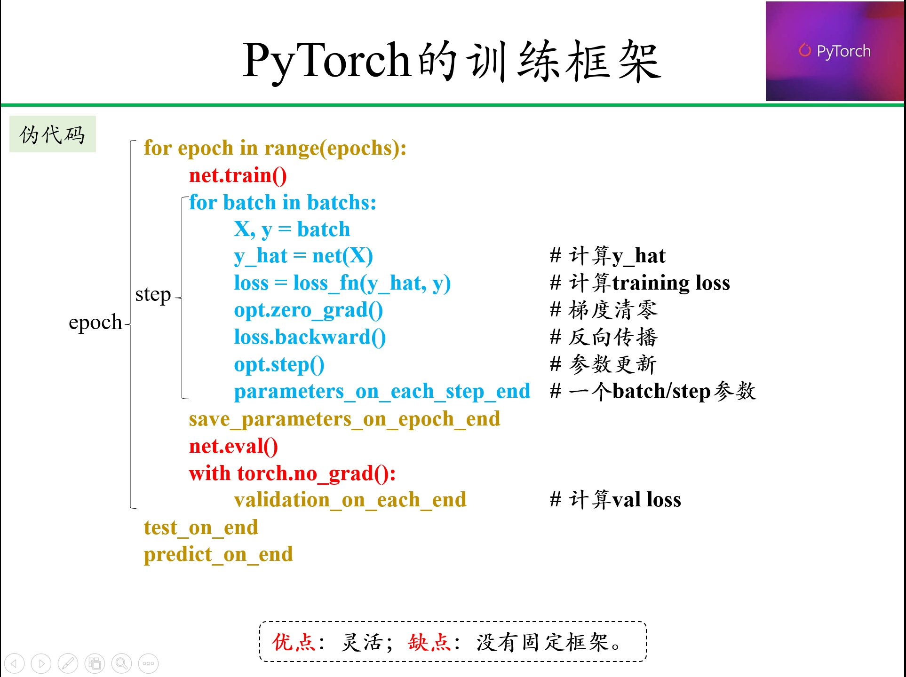
训练的模板代码
net.train():
启用 Batch Normalization 和 Dropout。
如果模型中有BN层(Batch Normalization）和Dropout，需要在训练时添加model.train()
model.train()作用：
对BN层，保证BN层能够用到每一批数据的均值和方差，并进行计算更新；
对于Dropout，model.train()是随机取一部分网络连接来训练更新参数。
net.eval()
不启用 Batch Normalization 和 Dropout。
如果模型中有BN层(Batch Normalization）和Dropout，在测试时添加model.eval()。
model.eval()是保证BN层直接利用之前训练阶段得到的均值和方差，即测试过程中要保证BN层的均值和方差不变；
对于Dropout，model.eval()是利用到了所有网络连接，即不进行随机舍弃神经元。
with torch.no_grad():
pass
无论是train() 还是eval() 模式，各层的gradient计算和存储都在进行且完全一致，在forward的时候会保存中间结果和创建计算图以为后续的
反向传播做准备。而with torch.no_grad()则主要是用于停止autograd模块的工作，在内存中不储存的forward计算结果和不构建计算图，以起到加速和节省显存的作用。它的作用是将该with语句包裹起来的部分停止梯度的更新，从而节省了GPU算力和显存，但是并不会影响dropout和BN层的行为。
若想节约算力，可在test阶段带上torch.no_grad()，示例代码：
# 数据准备
import torch
from torch import nn
# import torch.nn.functional as F
from torch.utils import data
import torchvision
dbs = './Pytorch_datasets/'
train_dataset = torchvision.datasets.MNIST(
root=dbs,
train=True,
download=True,
transform=torchvision.transforms.Compose(
[
torchvision.transforms.ToTensor(),
# torchvision.transforms.Normalize((0.1307,), (0.3081,))
]
)
)
test_dataset = torchvision.datasets.MNIST(
root=dbs,
train=False,
download=True,
transform=torchvision.transforms.Compose(
[
torchvision.transforms.ToTensor(),
# torchvision.transforms.Normalize((0.1307,), (0.3081,))
]
)
)
# 迭代型数据方式
train_iter = data.DataLoader(
dataset=train_dataset,
batch_size=128,
shuffle=True
)
# test_iter = data.DataLoader(dataset=test_dataset) # test不需要batch训练
Downloading http://yann.lecun.com/exdb/mnist/train-images-idx3-ubyte.gz Failed to download (trying next): HTTP Error 403: Forbidden Downloading https://ossci-datasets.s3.amazonaws.com/mnist/train-images-idx3-ubyte.gz Downloading https://ossci-datasets.s3.amazonaws.com/mnist/train-images-idx3-ubyte.gz to ./Pytorch_datasets/MNIST/raw/train-images-idx3-ubyte.gz
100%|██████████| 9912422/9912422 [00:02<00:00, 3659860.80it/s]
Extracting ./Pytorch_datasets/MNIST/raw/train-images-idx3-ubyte.gz to ./Pytorch_datasets/MNIST/raw Downloading http://yann.lecun.com/exdb/mnist/train-labels-idx1-ubyte.gz Failed to download (trying next): HTTP Error 403: Forbidden Downloading https://ossci-datasets.s3.amazonaws.com/mnist/train-labels-idx1-ubyte.gz Downloading https://ossci-datasets.s3.amazonaws.com/mnist/train-labels-idx1-ubyte.gz to ./Pytorch_datasets/MNIST/raw/train-labels-idx1-ubyte.gz
100%|██████████| 28881/28881 [00:00<00:00, 119645.04it/s]
Extracting ./Pytorch_datasets/MNIST/raw/train-labels-idx1-ubyte.gz to ./Pytorch_datasets/MNIST/raw Downloading http://yann.lecun.com/exdb/mnist/t10k-images-idx3-ubyte.gz Failed to download (trying next): HTTP Error 403: Forbidden Downloading https://ossci-datasets.s3.amazonaws.com/mnist/t10k-images-idx3-ubyte.gz Downloading https://ossci-datasets.s3.amazonaws.com/mnist/t10k-images-idx3-ubyte.gz to ./Pytorch_datasets/MNIST/raw/t10k-images-idx3-ubyte.gz
100%|██████████| 1648877/1648877 [00:01<00:00, 912416.46it/s]
Extracting ./Pytorch_datasets/MNIST/raw/t10k-images-idx3-ubyte.gz to ./Pytorch_datasets/MNIST/raw Downloading http://yann.lecun.com/exdb/mnist/t10k-labels-idx1-ubyte.gz Failed to download (trying next): HTTP Error 403: Forbidden Downloading https://ossci-datasets.s3.amazonaws.com/mnist/t10k-labels-idx1-ubyte.gz Downloading https://ossci-datasets.s3.amazonaws.com/mnist/t10k-labels-idx1-ubyte.gz to ./Pytorch_datasets/MNIST/raw/t10k-labels-idx1-ubyte.gz
100%|██████████| 4542/4542 [00:00<00:00, 17224709.56it/s]
Extracting ./Pytorch_datasets/MNIST/raw/t10k-labels-idx1-ubyte.gz to ./Pytorch_datasets/MNIST/raw
# 网络结构
class Net(nn.Module):
def __init__(self):
super().__init__()
self.network = nn.Sequential(
nn.Flatten(),
nn.Linear(28*28, 256),
nn.ReLU(),
nn.Linear(256, 10),
nn.Softmax()
)
def forward(self, X):
return self.network(X)
# 训练过程封装
import time
import matplotlib.pyplot as plt
import IPython.display as display
import os
def train_steps(
epochs,
train_dataset,
train_iter,
test_dataset,
net,
loss_fn,
opt,
device,
train_figure = False,
resume = False,
PATH = 'Pytorch_params/weights'
):
'''
参数记录:
epochs = epochs # epoch
train_dataset = train_dataset # 全部train数据集
train_iter = train_iter # batch之后的train数据集
test_dataset = test_dataset # 全部test数据集
net = net # 网络模型
loss_fn = loss_fn # 损失函数
opt = opt # 优化器
device = device # device GPU/CPU
train_figure = False # 可视化训练过程
resume = False # 断点续训
'''
# 拷贝数据和模型到device上
print('='*100)
print(f"Runing on {device}")
print('='*100)
## 数据
train_all_data_gpu = train_dataset.data.to(device) # .to(device)
train_all_targets_gpu = train_dataset.targets.to(device) # .to(device)
test_all_data_gpu = test_dataset.data.to(device) # .to(device)
test_all_targets_gpu = test_dataset.targets.to(device) # .to(device)
## 模型
net.to(device) # .to(device)
def dl_plot(epochs:int, epoch_list:list, train_loss_list:list, train_acc_list:list, test_acc_list:list):
'''绘图'''
plt.rcParams['font.sans-serif']=['Times new roman', 'Arial', 'KaiTi']
plt.style.context(['ggplot', 'seaborn'])
plt.close()
fig = plt.figure(figsize=(3.0, 3.0))
# for y, label in zip([train_loss_list, train_acc_list, test_acc_list], ['train_loss', 'train_acc', 'test_acc']):
for y, label in zip([train_acc_list, test_acc_list], ['train_acc', 'test_acc']):
plt.plot(epoch_list, y, label=label)
plt.grid()
plt.legend()
plt.xlabel('Epoch')
plt.xlim((1, epochs))
plt.ylabel('Values')
plt.ylim((0, 1))
plt.yticks(torch.arange(0, 1, 0.05).numpy())
# plt.tight_layout()
display.display(fig)
display.clear_output(wait=True)
# 开始迭代
start = time.time()
epoch_list = []
train_loss_list = []
train_acc_list = []
test_acc_list = []
best_test_acc = 0
# 断点续训
start_epoch = 0
if resume:
if os.path.isfile(PATH+'/last.pt'):
check_point = torch.load(PATH+'/last.pt')
start_epoch = check_point['epoch']
net.load_state_dict(check_point['model_state_dict'])
opt.load_state_dict(check_point['opt_state_dict'])
else:
print(f'没有训练记录。')
print('start_epoch: ', start_epoch)
for epoch in range(start_epoch, epochs, 1):
net.train() # 训练模式
epoch_list.append(epoch+1)
for batch_record in train_iter:
X, y = batch_record # 分配X, y
X, y = X.to(device), y.to(device) ## 复制到device（GPU/CPU）上 # .to(device)
# print(X[0])
# print(X[0].dtype)
# break
y_hat = net(X) # 计算y_hat
loss = loss_fn(y_hat, y) # 计算loss
opt.zero_grad() # 默认是累加，此处从新求导
loss.backward() # 计算梯度
opt.step() # 更新网络参数
net.eval() # 切换至评估模式
# 模型默认是net.train()
# 但是net中含有BN、Dropout等，在test时必须固定train时学好的参数，不能被test又改变了
# 但net中没有BN、Dropout等时，加不加net.eval()都无所谓
with torch.no_grad(): # with下内容不进行grad计算，可以节省运算和内存
train_loss = loss_fn(net(train_all_data_gpu/256), train_all_targets_gpu)
train_loss_list.append(train_loss.item())
# print(train_loss)
train_acc_cmp = net(train_all_data_gpu/256).argmax(axis=1) == train_all_targets_gpu
train_acc = (train_acc_cmp.sum() / len(train_acc_cmp))
train_acc_list.append(train_acc.item())
# print(train_acc)
test_acc_cmp = net(test_all_data_gpu/256).argmax(axis=1) == test_all_targets_gpu
test_acc = (test_acc_cmp.sum() / len(test_acc_cmp))
test_acc_list.append(test_acc.item())
# print(test_acc)
if train_figure:
if epoch % 1 == 0:
dl_plot(epochs, epoch_list, train_loss_list, train_acc_list, test_acc_list)
else:
print(f"epoch {epoch+1}/{epochs}: train_loss={train_loss}, train_acc={train_acc}, test_acc={test_acc}")
# 保存权重参数：last.pt和best.pt
torch.save({'epoch':epoch, 'model_state_dict':net.state_dict(), 'opt_state_dict':opt.state_dict(), 'loss':test_acc}, PATH+'/last.pt')
if test_acc > best_test_acc:
best_test_acc = test_acc
torch.save({'epoch':epoch, 'model_state_dict':net.state_dict(), 'opt_state_dict':opt.state_dict(), 'loss':test_acc}, PATH+'/best.pt')
stop = time.time()
print('='*100)
print(f"耗时： {stop - start} seconds.")
return (train_loss, train_acc, test_acc)
# return (epoch_list, train_loss_list, train_acc_list, test_acc_list)
# 训练过程封装
import time
import matplotlib.pyplot as plt
import IPython.display as display
import os
def training_step(
epochs,
train_dataset,
train_iter,
test_dataset,
net,
loss_fn,
opt,
device,
train_figure = False,
resume = False,
PATH = 'Pytorch_params/weights'):
'''
训练过程
params:
epochs = epochs # epoch
train_dataset = train_dataset # 全部train数据集
train_iter = train_iter # batch之后的train数据集
test_dataset = test_dataset # 全部test数据集
net = net # 网络模型
loss_fn = loss_fn # 损失函数
opt = opt # 优化器
device = device # device GPU/CPU
train_figure = False # 可视化训练过程
resume = False # 断点续训
return:
tra_loss, val_loss, val_acc, test_loss, test_acc
'''
# 拷贝数据和模型到device上
print('='*100)
print(f"Runing on {device}")
print('='*100)
## 数据
train_all_data_gpu = train_dataset.data.to(device) # .to(device)
train_all_targets_gpu = train_dataset.targets.to(device) # .to(device)
test_all_data_gpu = test_dataset.data.to(device) # .to(device)
test_all_targets_gpu = test_dataset.targets.to(device) # .to(device)
## 模型
net.to(device) # .to(device)
def dl_plot(epochs:int, epoch_list:list, train_loss_list:list, train_acc_list:list, test_acc_list:list):
'''绘图'''
plt.rcParams['font.sans-serif']=['Times new roman', 'Arial', 'KaiTi']
plt.style.context(['ggplot', 'seaborn'])
plt.close()
fig = plt.figure(figsize=(3.0, 3.0))
# for y, label in zip([train_loss_list, train_acc_list, test_acc_list], ['train_loss', 'train_acc', 'test_acc']):
for y, label in zip([train_acc_list, test_acc_list], ['train_acc', 'test_acc']):
plt.plot(epoch_list, y, label=label)
plt.grid()
plt.legend()
plt.xlabel('Epoch')
plt.xlim((1, epochs))
plt.ylabel('Values')
plt.ylim((0, 1))
plt.yticks(torch.arange(0, 1, 0.05).numpy())
# plt.tight_layout()
display.display(fig)
display.clear_output(wait=True)
# 开始迭代
start = time.time()
epoch_list = []
train_loss_list = []
train_acc_list = []
test_acc_list = []
best_test_acc = 0
# 断点续训
start_epoch = 0
if resume:
if os.path.isfile(PATH+'/last.pt'):
check_point = torch.load(PATH+'/last.pt')
start_epoch = check_point['epoch']
net.load_state_dict(check_point['model_state_dict'])
opt.load_state_dict(check_point['opt_state_dict'])
else:
print(f'没有训练记录。')
print('start_epoch: ', start_epoch)
for epoch in range(start_epoch, epochs, 1):
net.train() # 训练模式
epoch_list.append(epoch+1)
for batch_record in train_iter:
X, y = batch_record # 分配X, y
X, y = X.to(device), y.to(device) ## 复制到device（GPU/CPU）上 # .to(device)
# print(X[0])
# print(X[0].dtype)
# break
y_hat = net(X) # 计算y_hat
loss = loss_fn(y_hat, y) # 计算loss
opt.zero_grad() # 默认是累加，此处从新求导
loss.backward() # 计算梯度
opt.step() # 更新网络参数
net.eval() # 切换至评估模式
# 模型默认是net.train()
# 但是net中含有BN、Dropout等，在test时必须固定train时学好的参数，不能被test又改变了
# 但net中没有BN、Dropout等时，加不加net.eval()都无所谓
with torch.no_grad(): # with下内容不进行grad计算，可以节省运算和内存
train_loss = loss_fn(net(train_all_data_gpu/256), train_all_targets_gpu)
train_loss_list.append(train_loss.item())
# print(train_loss)
train_acc_cmp = net(train_all_data_gpu/256).argmax(axis=1) == train_all_targets_gpu
train_acc = (train_acc_cmp.sum() / len(train_acc_cmp))
train_acc_list.append(train_acc.item())
# print(train_acc)
test_acc_cmp = net(test_all_data_gpu/256).argmax(axis=1) == test_all_targets_gpu
test_acc = (test_acc_cmp.sum() / len(test_acc_cmp))
test_acc_list.append(test_acc.item())
# print(test_acc)
if train_figure:
if epoch % 1 == 0:
dl_plot(epochs, epoch_list, train_loss_list, train_acc_list, test_acc_list)
else:
print(f"epoch {epoch+1}/{epochs}: train_loss={train_loss}, train_acc={train_acc}, test_acc={test_acc}")
# 保存权重参数：last.pt和best.pt
torch.save({'epoch':epoch, 'model_state_dict':net.state_dict(), 'opt_state_dict':opt.state_dict(), 'loss':test_acc}, PATH+'/last.pt')
if test_acc > best_test_acc:
best_test_acc = test_acc
torch.save({'epoch':epoch, 'model_state_dict':net.state_dict(), 'opt_state_dict':opt.state_dict(), 'loss':test_acc}, PATH+'/best.pt')
stop = time.time()
print('='*100)
print(f"耗时： {stop - start} seconds.")
return (train_loss, train_acc, test_acc)
# return (epoch_list, train_loss_list, train_acc_list, test_acc_list)
# 开始训练
device = torch.device("cuda:0" if torch.cuda.is_available() else "cpu")
net = Net()
loss_fn = nn.CrossEntropyLoss()
opt = torch.optim.SGD(params=net.parameters(), lr=0.01)
train_steps(
epochs=10,
train_dataset=train_dataset,
train_iter=train_iter,
test_dataset=test_dataset,
net=net,
loss_fn=loss_fn,
opt=opt,
device=device,
train_figure=True,
resume = False,
PATH = './Pytorch_params/weights'
)
==================================================================================================== 耗时： 59.95664095878601 seconds.
(tensor(1.7594, device='cuda:0'), tensor(0.7902, device='cuda:0'), tensor(0.8000, device='cuda:0'))
findfont: Generic family 'sans-serif' not found because none of the following families were found: Times new roman, Arial, KaiTi findfont: Generic family 'sans-serif' not found because none of the following families were found: Times new roman, Arial, KaiTi findfont: Generic family 'sans-serif' not found because none of the following families were found: Times new roman, Arial, KaiTi findfont: Generic family 'sans-serif' not found because none of the following families were found: Times new roman, Arial, KaiTi findfont: Generic family 'sans-serif' not found because none of the following families were found: Times new roman, Arial, KaiTi findfont: Generic family 'sans-serif' not found because none of the following families were found: Times new roman, Arial, KaiTi findfont: Generic family 'sans-serif' not found because none of the following families were found: Times new roman, Arial, KaiTi findfont: Generic family 'sans-serif' not found because none of the following families were found: Times new roman, Arial, KaiTi findfont: Generic family 'sans-serif' not found because none of the following families were found: Times new roman, Arial, KaiTi findfont: Generic family 'sans-serif' not found because none of the following families were found: Times new roman, Arial, KaiTi findfont: Generic family 'sans-serif' not found because none of the following families were found: Times new roman, Arial, KaiTi findfont: Generic family 'sans-serif' not found because none of the following families were found: Times new roman, Arial, KaiTi findfont: Generic family 'sans-serif' not found because none of the following families were found: Times new roman, Arial, KaiTi findfont: Generic family 'sans-serif' not found because none of the following families were found: Times new roman, Arial, KaiTi findfont: Generic family 'sans-serif' not found because none of the following families were found: Times new roman, Arial, KaiTi findfont: Generic family 'sans-serif' not found because none of the following families were found: Times new roman, Arial, KaiTi findfont: Generic family 'sans-serif' not found because none of the following families were found: Times new roman, Arial, KaiTi findfont: Generic family 'sans-serif' not found because none of the following families were found: Times new roman, Arial, KaiTi findfont: Generic family 'sans-serif' not found because none of the following families were found: Times new roman, Arial, KaiTi findfont: Generic family 'sans-serif' not found because none of the following families were found: Times new roman, Arial, KaiTi findfont: Generic family 'sans-serif' not found because none of the following families were found: Times new roman, Arial, KaiTi findfont: Generic family 'sans-serif' not found because none of the following families were found: Times new roman, Arial, KaiTi findfont: Generic family 'sans-serif' not found because none of the following families were found: Times new roman, Arial, KaiTi findfont: Generic family 'sans-serif' not found because none of the following families were found: Times new roman, Arial, KaiTi findfont: Generic family 'sans-serif' not found because none of the following families were found: Times new roman, Arial, KaiTi findfont: Generic family 'sans-serif' not found because none of the following families were found: Times new roman, Arial, KaiTi findfont: Generic family 'sans-serif' not found because none of the following families were found: Times new roman, Arial, KaiTi findfont: Generic family 'sans-serif' not found because none of the following families were found: Times new roman, Arial, KaiTi findfont: Generic family 'sans-serif' not found because none of the following families were found: Times new roman, Arial, KaiTi findfont: Generic family 'sans-serif' not found because none of the following families were found: Times new roman, Arial, KaiTi findfont: Generic family 'sans-serif' not found because none of the following families were found: Times new roman, Arial, KaiTi findfont: Generic family 'sans-serif' not found because none of the following families were found: Times new roman, Arial, KaiTi findfont: Generic family 'sans-serif' not found because none of the following families were found: Times new roman, Arial, KaiTi findfont: Generic family 'sans-serif' not found because none of the following families were found: Times new roman, Arial, KaiTi findfont: Generic family 'sans-serif' not found because none of the following families were found: Times new roman, Arial, KaiTi findfont: Generic family 'sans-serif' not found because none of the following families were found: Times new roman, Arial, KaiTi findfont: Generic family 'sans-serif' not found because none of the following families were found: Times new roman, Arial, KaiTi findfont: Generic family 'sans-serif' not found because none of the following families were found: Times new roman, Arial, KaiTi findfont: Generic family 'sans-serif' not found because none of the following families were found: Times new roman, Arial, KaiTi findfont: Generic family 'sans-serif' not found because none of the following families were found: Times new roman, Arial, KaiTi findfont: Generic family 'sans-serif' not found because none of the following families were found: Times new roman, Arial, KaiTi findfont: Generic family 'sans-serif' not found because none of the following families were found: Times new roman, Arial, KaiTi findfont: Generic family 'sans-serif' not found because none of the following families were found: Times new roman, Arial, KaiTi findfont: Generic family 'sans-serif' not found because none of the following families were found: Times new roman, Arial, KaiTi findfont: Generic family 'sans-serif' not found because none of the following families were found: Times new roman, Arial, KaiTi findfont: Generic family 'sans-serif' not found because none of the following families were found: Times new roman, Arial, KaiTi findfont: Generic family 'sans-serif' not found because none of the following families were found: Times new roman, Arial, KaiTi findfont: Generic family 'sans-serif' not found because none of the following families were found: Times new roman, Arial, KaiTi findfont: Generic family 'sans-serif' not found because none of the following families were found: Times new roman, Arial, KaiTi findfont: Generic family 'sans-serif' not found because none of the following families were found: Times new roman, Arial, KaiTi findfont: Generic family 'sans-serif' not found because none of the following families were found: Times new roman, Arial, KaiTi findfont: Generic family 'sans-serif' not found because none of the following families were found: Times new roman, Arial, KaiTi findfont: Generic family 'sans-serif' not found because none of the following families were found: Times new roman, Arial, KaiTi findfont: Generic family 'sans-serif' not found because none of the following families were found: Times new roman, Arial, KaiTi findfont: Generic family 'sans-serif' not found because none of the following families were found: Times new roman, Arial, KaiTi findfont: Generic family 'sans-serif' not found because none of the following families were found: Times new roman, Arial, KaiTi findfont: Generic family 'sans-serif' not found because none of the following families were found: Times new roman, Arial, KaiTi findfont: Generic family 'sans-serif' not found because none of the following families were found: Times new roman, Arial, KaiTi findfont: Generic family 'sans-serif' not found because none of the following families were found: Times new roman, Arial, KaiTi findfont: Generic family 'sans-serif' not found because none of the following families were found: Times new roman, Arial, KaiTi findfont: Generic family 'sans-serif' not found because none of the following families were found: Times new roman, Arial, KaiTi findfont: Generic family 'sans-serif' not found because none of the following families were found: Times new roman, Arial, KaiTi findfont: Generic family 'sans-serif' not found because none of the following families were found: Times new roman, Arial, KaiTi findfont: Generic family 'sans-serif' not found because none of the following families were found: Times new roman, Arial, KaiTi findfont: Generic family 'sans-serif' not found because none of the following families were found: Times new roman, Arial, KaiTi findfont: Generic family 'sans-serif' not found because none of the following families were found: Times new roman, Arial, KaiTi findfont: Generic family 'sans-serif' not found because none of the following families were found: Times new roman, Arial, KaiTi findfont: Generic family 'sans-serif' not found because none of the following families were found: Times new roman, Arial, KaiTi findfont: Generic family 'sans-serif' not found because none of the following families were found: Times new roman, Arial, KaiTi findfont: Generic family 'sans-serif' not found because none of the following families were found: Times new roman, Arial, KaiTi findfont: Generic family 'sans-serif' not found because none of the following families were found: Times new roman, Arial, KaiTi findfont: Generic family 'sans-serif' not found because none of the following families were found: Times new roman, Arial, KaiTi findfont: Generic family 'sans-serif' not found because none of the following families were found: Times new roman, Arial, KaiTi findfont: Generic family 'sans-serif' not found because none of the following families were found: Times new roman, Arial, KaiTi findfont: Generic family 'sans-serif' not found because none of the following families were found: Times new roman, Arial, KaiTi findfont: Generic family 'sans-serif' not found because none of the following families were found: Times new roman, Arial, KaiTi findfont: Generic family 'sans-serif' not found because none of the following families were found: Times new roman, Arial, KaiTi findfont: Generic family 'sans-serif' not found because none of the following families were found: Times new roman, Arial, KaiTi findfont: Generic family 'sans-serif' not found because none of the following families were found: Times new roman, Arial, KaiTi findfont: Generic family 'sans-serif' not found because none of the following families were found: Times new roman, Arial, KaiTi findfont: Generic family 'sans-serif' not found because none of the following families were found: Times new roman, Arial, KaiTi findfont: Generic family 'sans-serif' not found because none of the following families were found: Times new roman, Arial, KaiTi findfont: Generic family 'sans-serif' not found because none of the following families were found: Times new roman, Arial, KaiTi findfont: Generic family 'sans-serif' not found because none of the following families were found: Times new roman, Arial, KaiTi findfont: Generic family 'sans-serif' not found because none of the following families were found: Times new roman, Arial, KaiTi findfont: Generic family 'sans-serif' not found because none of the following families were found: Times new roman, Arial, KaiTi findfont: Generic family 'sans-serif' not found because none of the following families were found: Times new roman, Arial, KaiTi findfont: Generic family 'sans-serif' not found because none of the following families were found: Times new roman, Arial, KaiTi findfont: Generic family 'sans-serif' not found because none of the following families were found: Times new roman, Arial, KaiTi findfont: Generic family 'sans-serif' not found because none of the following families were found: Times new roman, Arial, KaiTi findfont: Generic family 'sans-serif' not found because none of the following families were found: Times new roman, Arial, KaiTi findfont: Generic family 'sans-serif' not found because none of the following families were found: Times new roman, Arial, KaiTi findfont: Generic family 'sans-serif' not found because none of the following families were found: Times new roman, Arial, KaiTi findfont: Generic family 'sans-serif' not found because none of the following families were found: Times new roman, Arial, KaiTi findfont: Generic family 'sans-serif' not found because none of the following families were found: Times new roman, Arial, KaiTi findfont: Generic family 'sans-serif' not found because none of the following families were found: Times new roman, Arial, KaiTi findfont: Generic family 'sans-serif' not found because none of the following families were found: Times new roman, Arial, KaiTi findfont: Generic family 'sans-serif' not found because none of the following families were found: Times new roman, Arial, KaiTi findfont: Generic family 'sans-serif' not found because none of the following families were found: Times new roman, Arial, KaiTi findfont: Generic family 'sans-serif' not found because none of the following families were found: Times new roman, Arial, KaiTi findfont: Generic family 'sans-serif' not found because none of the following families were found: Times new roman, Arial, KaiTi findfont: Generic family 'sans-serif' not found because none of the following families were found: Times new roman, Arial, KaiTi findfont: Generic family 'sans-serif' not found because none of the following families were found: Times new roman, Arial, KaiTi findfont: Generic family 'sans-serif' not found because none of the following families were found: Times new roman, Arial, KaiTi findfont: Generic family 'sans-serif' not found because none of the following families were found: Times new roman, Arial, KaiTi findfont: Generic family 'sans-serif' not found because none of the following families were found: Times new roman, Arial, KaiTi findfont: Generic family 'sans-serif' not found because none of the following families were found: Times new roman, Arial, KaiTi findfont: Generic family 'sans-serif' not found because none of the following families were found: Times new roman, Arial, KaiTi findfont: Generic family 'sans-serif' not found because none of the following families were found: Times new roman, Arial, KaiTi findfont: Generic family 'sans-serif' not found because none of the following families were found: Times new roman, Arial, KaiTi findfont: Generic family 'sans-serif' not found because none of the following families were found: Times new roman, Arial, KaiTi findfont: Generic family 'sans-serif' not found because none of the following families were found: Times new roman, Arial, KaiTi findfont: Generic family 'sans-serif' not found because none of the following families were found: Times new roman, Arial, KaiTi findfont: Generic family 'sans-serif' not found because none of the following families were found: Times new roman, Arial, KaiTi findfont: Generic family 'sans-serif' not found because none of the following families were found: Times new roman, Arial, KaiTi findfont: Generic family 'sans-serif' not found because none of the following families were found: Times new roman, Arial, KaiTi findfont: Generic family 'sans-serif' not found because none of the following families were found: Times new roman, Arial, KaiTi findfont: Generic family 'sans-serif' not found because none of the following families were found: Times new roman, Arial, KaiTi findfont: Generic family 'sans-serif' not found because none of the following families were found: Times new roman, Arial, KaiTi findfont: Generic family 'sans-serif' not found because none of the following families were found: Times new roman, Arial, KaiTi findfont: Generic family 'sans-serif' not found because none of the following families were found: Times new roman, Arial, KaiTi findfont: Generic family 'sans-serif' not found because none of the following families were found: Times new roman, Arial, KaiTi findfont: Generic family 'sans-serif' not found because none of the following families were found: Times new roman, Arial, KaiTi findfont: Generic family 'sans-serif' not found because none of the following families were found: Times new roman, Arial, KaiTi findfont: Generic family 'sans-serif' not found because none of the following families were found: Times new roman, Arial, KaiTi findfont: Generic family 'sans-serif' not found because none of the following families were found: Times new roman, Arial, KaiTi findfont: Generic family 'sans-serif' not found because none of the following families were found: Times new roman, Arial, KaiTi findfont: Generic family 'sans-serif' not found because none of the following families were found: Times new roman, Arial, KaiTi findfont: Generic family 'sans-serif' not found because none of the following families were found: Times new roman, Arial, KaiTi findfont: Generic family 'sans-serif' not found because none of the following families were found: Times new roman, Arial, KaiTi findfont: Generic family 'sans-serif' not found because none of the following families were found: Times new roman, Arial, KaiTi findfont: Generic family 'sans-serif' not found because none of the following families were found: Times new roman, Arial, KaiTi findfont: Generic family 'sans-serif' not found because none of the following families were found: Times new roman, Arial, KaiTi findfont: Generic family 'sans-serif' not found because none of the following families were found: Times new roman, Arial, KaiTi findfont: Generic family 'sans-serif' not found because none of the following families were found: Times new roman, Arial, KaiTi findfont: Generic family 'sans-serif' not found because none of the following families were found: Times new roman, Arial, KaiTi findfont: Generic family 'sans-serif' not found because none of the following families were found: Times new roman, Arial, KaiTi findfont: Generic family 'sans-serif' not found because none of the following families were found: Times new roman, Arial, KaiTi findfont: Generic family 'sans-serif' not found because none of the following families were found: Times new roman, Arial, KaiTi findfont: Generic family 'sans-serif' not found because none of the following families were found: Times new roman, Arial, KaiTi findfont: Generic family 'sans-serif' not found because none of the following families were found: Times new roman, Arial, KaiTi findfont: Generic family 'sans-serif' not found because none of the following families were found: Times new roman, Arial, KaiTi findfont: Generic family 'sans-serif' not found because none of the following families were found: Times new roman, Arial, KaiTi findfont: Generic family 'sans-serif' not found because none of the following families were found: Times new roman, Arial, KaiTi findfont: Generic family 'sans-serif' not found because none of the following families were found: Times new roman, Arial, KaiTi findfont: Generic family 'sans-serif' not found because none of the following families were found: Times new roman, Arial, KaiTi findfont: Generic family 'sans-serif' not found because none of the following families were found: Times new roman, Arial, KaiTi findfont: Generic family 'sans-serif' not found because none of the following families were found: Times new roman, Arial, KaiTi findfont: Generic family 'sans-serif' not found because none of the following families were found: Times new roman, Arial, KaiTi findfont: Generic family 'sans-serif' not found because none of the following families were found: Times new roman, Arial, KaiTi
![No description has been provided for this image]()
best = torch.load('./Pytorch_params/weights/best.pt')
best['epoch'], best['loss'], best['model_state_dict']
/tmp/ipykernel_32820/198423743.py:1: FutureWarning: You are using `torch.load` with `weights_only=False` (the current default value), which uses the default pickle module implicitly. It is possible to construct malicious pickle data which will execute arbitrary code during unpickling (See https://github.com/pytorch/pytorch/blob/main/SECURITY.md#untrusted-models for more details). In a future release, the default value for `weights_only` will be flipped to `True`. This limits the functions that could be executed during unpickling. Arbitrary objects will no longer be allowed to be loaded via this mode unless they are explicitly allowlisted by the user via `torch.serialization.add_safe_globals`. We recommend you start setting `weights_only=True` for any use case where you don't have full control of the loaded file. Please open an issue on GitHub for any issues related to this experimental feature.
best = torch.load('./Pytorch_params/weights/best.pt')
(9,
tensor(0.8000, device='cuda:0'),
OrderedDict([('network.1.weight',
tensor([[-0.0241, -0.0069, 0.0088, ..., -0.0267, -0.0129, -0.0065],
[ 0.0302, -0.0323, 0.0237, ..., -0.0168, 0.0240, 0.0341],
[-0.0151, 0.0176, -0.0027, ..., 0.0083, -0.0131, 0.0065],
...,
[ 0.0030, 0.0136, -0.0048, ..., -0.0145, -0.0219, -0.0337],
[-0.0136, -0.0261, 0.0065, ..., -0.0004, 0.0057, 0.0013],
[-0.0356, -0.0046, -0.0026, ..., -0.0298, 0.0247, 0.0137]],
device='cuda:0')),
('network.1.bias',
tensor([ 3.9702e-02, 3.4285e-02, 4.3656e-02, -7.5687e-04, 4.5628e-02,
-1.5764e-03, 9.1527e-03, 1.2884e-02, 5.1464e-02, 1.3203e-02,
3.2777e-02, 2.3281e-02, -7.0645e-07, -2.0750e-02, 1.0967e-02,
1.6538e-02, -3.8702e-02, 1.7775e-02, 4.1511e-02, 1.2678e-02,
2.1664e-02, -2.0623e-02, 3.2701e-02, 2.3492e-02, 4.9457e-03,
3.9780e-02, -1.1985e-02, 4.2158e-02, 5.6506e-02, 2.7593e-02,
9.5884e-03, 2.4593e-02, 5.3445e-03, 1.0407e-02, -2.9220e-02,
-7.0291e-03, 1.5674e-02, -1.9235e-02, 2.1151e-02, 2.2816e-02,
7.4965e-03, 5.0568e-02, -8.6301e-03, -1.1696e-02, 1.7590e-02,
5.1232e-02, -1.1965e-02, 3.1024e-02, 3.3625e-02, 1.2786e-02,
2.7856e-02, 2.0230e-02, 1.9761e-02, 4.9548e-02, 4.0749e-02,
1.2994e-02, 5.2624e-02, 2.0533e-02, 2.9313e-02, 6.8340e-03,
-2.8082e-02, 1.5062e-02, -3.0884e-02, -2.3156e-02, -2.2881e-03,
2.6252e-03, -3.0055e-02, -1.5311e-02, 3.1937e-02, 3.6528e-02,
3.3189e-02, -1.0149e-02, 2.0503e-02, -1.4367e-02, 4.2755e-02,
-1.9800e-02, -1.1765e-02, 3.1096e-02, 2.9567e-02, -2.6079e-02,
2.4057e-02, 2.8671e-02, 6.5098e-03, 1.6217e-02, 1.6545e-02,
1.9598e-02, 3.9184e-02, -1.1046e-02, 6.2070e-03, 3.1246e-02,
9.4902e-03, 3.0827e-02, -1.2420e-02, -1.8113e-02, -7.5191e-03,
-2.3051e-02, 1.2938e-02, -1.2393e-02, -2.3524e-02, -9.9774e-03,
8.9223e-03, 3.3172e-02, 3.3347e-02, 1.9719e-02, -5.4457e-03,
1.0521e-02, -2.5926e-03, 3.6220e-03, -8.9649e-03, 3.5096e-03,
3.9662e-02, 8.8037e-03, 2.5711e-02, -6.7204e-03, -8.7729e-03,
1.3268e-02, 2.2215e-02, -7.2406e-03, 1.6775e-03, -1.3178e-02,
2.2741e-02, -1.6813e-02, 6.5540e-03, 4.7898e-02, 1.7329e-02,
-1.8237e-02, 2.3492e-02, -2.1715e-02, 3.1797e-02, -2.3865e-03,
1.9146e-03, 2.0191e-02, 2.1575e-02, -5.3633e-03, 1.5864e-02,
4.8251e-02, -1.8978e-03, -2.8512e-03, 3.3479e-02, 3.3359e-02,
-2.1005e-02, 1.0200e-04, -2.5433e-02, -8.3805e-03, 5.2502e-02,
-2.7321e-02, 6.5998e-02, 8.3883e-03, 2.5566e-02, 8.6262e-03,
-2.2832e-02, 4.9074e-02, -2.7729e-02, -6.6179e-03, 3.1971e-02,
4.1276e-02, -2.6954e-02, -9.3661e-03, -6.8694e-03, 1.2666e-02,
-1.8432e-02, -3.2942e-02, 3.6010e-02, 1.3340e-02, 1.3230e-02,
1.2177e-03, -4.0268e-03, 2.4358e-02, -1.4252e-02, 1.7725e-02,
1.4390e-02, 4.5555e-02, 4.3820e-03, -9.9201e-03, 2.5283e-03,
-1.3692e-02, -3.6250e-02, 2.1885e-03, 3.5891e-02, 2.4769e-02,
9.7989e-03, 4.4549e-02, 1.1250e-02, 2.9513e-04, -8.4876e-03,
-1.0764e-02, -5.3896e-03, 3.9276e-02, 3.1027e-02, 1.1406e-02,
3.0260e-02, 1.2267e-02, 4.6958e-03, 3.7215e-02, 3.9977e-02,
3.3820e-02, -1.0931e-02, 1.0565e-02, 1.1181e-02, -1.3401e-02,
3.6825e-02, 4.5035e-02, -2.7077e-02, -2.0625e-02, -1.2974e-02,
-2.3754e-02, 3.1041e-02, 4.6583e-02, 5.2671e-02, -1.2074e-02,
-1.2163e-02, -2.2311e-02, -1.4121e-02, -2.3022e-02, 1.5178e-02,
2.2413e-02, 2.1362e-02, -1.1371e-02, -2.4531e-02, 3.2458e-02,
2.1671e-02, 3.3461e-02, 6.0620e-03, 2.3813e-02, 4.7138e-02,
-3.1214e-02, -2.6454e-03, -2.5188e-02, 3.4154e-02, 2.0549e-02,
-9.4273e-03, 2.9883e-02, -8.0837e-03, 4.4898e-02, 5.3602e-03,
-2.3646e-02, 2.8702e-02, 2.7271e-02, 5.5416e-02, -2.3502e-02,
1.4266e-02, -4.1066e-02, 3.4123e-02, 2.6651e-02, 3.1687e-02,
2.6590e-02, -3.7192e-03, 2.8239e-02, 5.7477e-03, -2.0121e-02,
5.4461e-03, 3.0526e-02, -9.5012e-03, 2.7479e-02, -2.8464e-02,
4.6071e-02], device='cuda:0')),
('network.3.weight',
tensor([[-0.0505, -0.1163, -0.0902, ..., -0.0762, 0.0453, 0.0470],
[ 0.0724, 0.1765, 0.0936, ..., -0.0425, 0.0104, -0.0149],
[-0.0884, -0.0270, 0.0364, ..., -0.0410, -0.0254, -0.0206],
...,
[-0.0540, 0.0514, -0.1432, ..., -0.1346, -0.0148, 0.1571],
[ 0.0946, 0.0494, 0.0184, ..., 0.0630, 0.0512, -0.0797],
[ 0.0776, 0.0689, -0.0066, ..., -0.0522, 0.0436, -0.0084]],
device='cuda:0')),
('network.3.bias',
tensor([-0.0526, 0.1243, -0.0987, 0.0301, 0.0522, -0.0409, 0.0423, 0.0652,
-0.1231, 0.0462], device='cuda:0'))]))
# 再试一次，会不会造成net的parameter的累加，结果表明不会
device = torch.device("cuda:0" if torch.cuda.is_available() else "cpu")
net = Net()
loss_fn = nn.CrossEntropyLoss()
opt = torch.optim.SGD(params=net.parameters(), lr=0.01)
train_steps(epochs=10,
train_dataset=train_dataset,
train_iter=train_iter,
test_dataset=test_dataset,
net=net,
loss_fn=loss_fn,
opt=opt,
device=device,
train_figure=True,
resume = False
)
==================================================================================================== 耗时： 70.18707489967346 seconds.
(tensor(1.7867), tensor(0.7317), tensor(0.7402))
![No description has been provided for this image]()
# lr 0.01 -> 0.5
# 结果表明还是会快一点收敛
device = torch.device("cuda:0" if torch.cuda.is_available() else "cpu")
net = Net()
loss_fn = nn.CrossEntropyLoss()
opt = torch.optim.SGD(params=net.parameters(), lr=0.5)
train_steps(
epochs=10,
train_dataset=train_dataset,
train_iter=train_iter,
test_dataset=test_dataset,
net=net,
loss_fn=loss_fn,
opt=opt,
device=device,
train_figure=True
)
==================================================================================================== 耗时： 69.80070853233337 seconds.
(tensor(1.4991), tensor(0.9673), tensor(0.9614))
![No description has been provided for this image]()
# test_acc一直在92%左右，如何才能提高？
# 使用CNN会好一点吗？
# 我们来试一试：
class Net1(nn.Module):
def __init__(self):
super().__init__()
self.network = nn.Sequential(
nn.Flatten(),
nn.Linear(28*28, 1024), nn.ReLU(),
nn.Linear(1024, 10), nn.Softmax()
)
def forward(self, X):
return self.network(X)
device = torch.device("cuda:0" if torch.cuda.is_available() else "cpu")
net = Net1()
loss_fn = nn.CrossEntropyLoss()
opt = torch.optim.SGD(params=net.parameters(), lr=0.5)
train_steps(
epochs=10,
train_dataset=train_dataset,
train_iter=train_iter,
test_dataset=test_dataset,
net=net,
loss_fn=loss_fn,
opt=opt,
device=device,
train_figure=True
)
==================================================================================================== 耗时： 87.9712917804718 seconds.
(tensor(1.4962), tensor(0.9704), tensor(0.9643))
![No description has been provided for this image]()
import torch
import torch.nn as nn
import torch.nn.functional as F
# 开始训练
device = torch.device("cuda:0" if torch.cuda.is_available() else "cpu")
# 网络结构
class Net(nn.Module):
def __init__(self):
super().__init__()
# self.network = nn.Sequential(nn.Flatten(),
# nn.Linear(28*28, 2**5), nn.ReLU(),
# nn.Linear(2**5, 10), nn.Softmax())
self.num_hidden = 2**5
self.layer1 = nn.Flatten()
self.layer2 = nn.Linear(28*28, self.num_hidden)
self.layer3 = nn.Linear(self.num_hidden, self.num_hidden)
self.ac = nn.ReLU()
# self.ac = nn.Tanh()
self.dp = nn.Dropout()
self.bn = nn.BatchNorm1d(self.num_hidden)
self.layer4 = nn.Linear(self.num_hidden, 10)
self.layer5 = nn.Softmax()
def forward(self, X):
y = self.layer1(X)
y = self.layer2(y)
for i in range(2):
y = y + self.dp(self.ac(self.bn(self.layer3(y))))
y = self.layer4(y)
y = self.layer5(y)
return y
net = Net()
loss_fn = nn.CrossEntropyLoss()
opt = torch.optim.SGD(params=net.parameters(), lr=0.5)
train_steps(
epochs=30,
train_dataset=train_dataset,
train_iter=train_iter,
test_dataset=test_dataset,
net=net,
loss_fn=loss_fn,
opt=opt,
device=device,
train_figure=True
)
==================================================================================================== 耗时： 210.56247329711914 seconds.
(tensor(1.4977), tensor(0.9650), tensor(0.9571))
![No description has been provided for this image]()
def get_k_fold_data(k, i, X, y):
assert k > 1 # k必须大于1
fold_size = X.shape[0] // k # 窗口大小：X一维数据长度除以k向下取整数
print('fold_size: ', fold_size)
X_train, y_train = None, None
for j in range(k):
idx = slice(j * fold_size, (j + 1) * fold_size) # 切片范围 (窗口大小)
print(idx)
X_part, y_part = X[idx, :], y[idx]
if j == i:
X_valid, y_valid = X_part, y_part
elif X_train is None:
X_train, y_train = X_part, y_part
else:
X_train = torch.cat([X_train, X_part], 0)
y_train = torch.cat([y_train, y_part], 0)
return X_train, y_train, X_valid, y_valid
X = torch.arange(15).reshape(5, 3)
y = torch.negative(torch.arange(15).reshape(5, 3))
X, y
(tensor([[ 0, 1, 2],
[ 3, 4, 5],
[ 6, 7, 8],
[ 9, 10, 11],
[12, 13, 14]]),
tensor([[ 0, -1, -2],
[ -3, -4, -5],
[ -6, -7, -8],
[ -9, -10, -11],
[-12, -13, -14]]))
get_k_fold_data(2, 1, X, y)
fold_size: 2 slice(0, 2, None) slice(2, 4, None)
(tensor([[0, 1, 2],
[3, 4, 5]]),
tensor([[ 0, -1, -2],
[-3, -4, -5]]),
tensor([[ 6, 7, 8],
[ 9, 10, 11]]),
tensor([[ -6, -7, -8],
[ -9, -10, -11]]))
from IPython import display
from matplotlib import pyplot as plt
import torch
import time
def dl_plot(x, y):
'''再jupyter中持续刷新展示图片'''
plt.close() # close figure （推荐）
fig = plt.figure(figsize=(3.5, 2.5))
plt.plot(x, y)
plt.xlabel('epoch')
plt.ylabel('loss')
# plt.show() # 普通展示
display.display(fig) # 在jupyter中展示 （推荐）
display.clear_output(wait=True) # 等待 （必须）
start = time.time()
for epoch in range(50):
x = torch.arange(0, epoch+1, 0.1)
y = torch.sin(x)
if epoch % 2 == 0:
dl_plot(x, y)
stop = time.time()
print(f"打印图片耗时： {stop - start} seconds")
打印图片耗时： 2.1650073528289795 seconds
![No description has been provided for this image]()
start = time.time()
for epoch in range(10):
x = torch.arange(0, epoch+1, 0.1)
y = torch.sin(x)
# dl_plot(x, y)
print(f"{epoch+1}/{10}: \t train_loss={x[-1]} \t train_acc={y[-1]}")
stop = time.time()
print(f"打印数值耗时： {stop - start} seconds")
1/10: train_loss=0.8999999761581421 train_acc=0.7833268642425537 2/10: train_loss=1.899999976158142 train_acc=0.9463000893592834 3/10: train_loss=2.9000000953674316 train_acc=0.23924924433231354 4/10: train_loss=3.9000000953674316 train_acc=-0.6877662539482117 5/10: train_loss=4.900000095367432 train_acc=-0.9824525713920593 6/10: train_loss=5.900000095367432 train_acc=-0.37387657165527344 7/10: train_loss=6.900000095367432 train_acc=0.5784398317337036 8/10: train_loss=7.899999618530273 train_acc=0.9989413619041443 9/10: train_loss=8.899999618530273 train_acc=0.5010212063789368 10/10: train_loss=9.899999618530273 train_acc=-0.4575355648994446 打印数值耗时： 0.0011034011840820312 seconds
9. 在 GPU 上训练¶
- 要实行运算的Tensor
必须在同一张GPU卡上：
| 操作 | 函数 |
|---|---|
| 1. 张量传到GPU上 | x_gpu = x.to('cuda:0') |
| 2. 神经网络传到GPU上 | net = net.to('cuda:0') |
- CPU和GPU之间数据传输总结：
| 对象 | 方法一 | 方法二 |
|---|---|---|
| 模型上GPU： | model.cuda() | model.to(device) |
| 数据上GPU： | data.cuda() | data.to(device) |
| 输出下GPU： | output=model(data) | output.detach().cpu().numpy() |
| 解释： | ||
output.detach() |
将变量output从计算图中分离，使其不具有梯度，不进行反向传播 | |
.cpu() |
将GPU数据转CPU | |
| .numpy() | 将Tensor转numpy | |
.item() |
将Tensor转为python数值 |
device = torch.device("cuda:0" if torch.cuda.is_available() else "cpu")
device
device(type='cuda', index=0)
# 是否有可用的GPU
torch.cuda.is_available()
# True, False
True
# 可用的GPU数量
torch.cuda.device_count()
# 1
2
# 返回gpu名字，设备索引默认从0开始；
torch.cuda.get_device_name(0)
# "Tesla T4"
'NVIDIA A100-SXM4-40GB'
# 返回当前设备索引；
torch.cuda.current_device()
# 0, 1, 2
0
def check_device():
'''判断是否有GPU，并列出GPU的代号/名称'''
if torch.cuda.is_available(): # 判断是否支持cuda/GPU
gpu_num = torch.cuda.device_count() # cuda/GPU计数
if gpu_num == 1:
print(f"单机单卡: {[torch.cuda.get_device_name(gpu_name) for gpu_name in range(gpu_num)]}")
else:
print(f"单机{gpu_num}卡: {[torch.cuda.get_device_name(gpu_name) for gpu_name in range(gpu_num)]}")
else:
print(f"只有CPU")
return None
check_device()
单机2卡: ['NVIDIA A100-SXM4-40GB', 'NVIDIA A100-SXM4-40GB']
# device = [ 'cpu' if not torch.cuda.is_available() else ]
device = [f'cuda:{i}' for i in range(torch.cuda.device_count())] if torch.cuda.is_available() else ['cpu']
device
['cuda:0', 'cuda:1']
device = torch.device('cuda:0' if torch.cuda.is_available() else 'cpu')
device
device(type='cuda', index=0)
x = torch.ones((2, 1))
y = torch.ones((2, 1))
x, y, x.device, y.device
(tensor([[1.],
[1.]]),
tensor([[1.],
[1.]]),
device(type='cpu'),
device(type='cpu'))
x1 = x.to(device)
y1 = y.to(device)
x1, y1, x1.device, y1.device
(tensor([[1.],
[1.]], device='cuda:0'),
tensor([[1.],
[1.]], device='cuda:0'),
device(type='cuda', index=0),
device(type='cuda', index=0))
9.3. 单机多卡（GPU）¶
目前PyTorch的单机多卡训练，主要有两种方式：
| 方法 | 函数 | 注释 |
|---|---|---|
| 第一种： | torch.nn.DataParallel(module=net, device_ids=[0, 1], output_device=[0]) |
# 单机两卡 |
| 第二种： | torch.nn.parallel.DistributedDataParallel() |
# 单机多卡、多机多卡 |
DataParallel (DP) 和 DistributedDataParallel (DDP) 都是用于在多GPU上进行训练的工具，但它们有一些关键的区别：
目标环境：
DataParallel适用于单机多卡的情况，通过将模型复制到每个GPU上，每个GPU计算不同的批次，最后通过梯度累积或平均来更新模型参数。DistributedDataParallel适用于分布式环境，可以在单机或多台机器上的多个GPU上运行，每个GPU计算不同的批次，并通过分布式通信来同步梯度和更新模型参数。
通信方式：
DataParallel使用单个进程内的多个GPU，通信相对较简单，仅涉及到进程内的数据传输。DistributedDataParallel通过分布式通信协议，如NCCL或Gloo，实现跨进程和可能跨机器的通信，因此需要更复杂的设置。
启动方式：
DataParallel只需在模型实例上调用nn.DataParallel(model)即可。DistributedDataParallel需要在训练脚本中设置分布式环境变量，如torch.distributed.launch或手动设置os.environ。
维护性：
DataParallel更容易使用，因为它不涉及复杂的分布式设置。DistributedDataParallel适用于更复杂的分布式场景，但需要更多的设置和管理。
在单机多卡的情况下，如果简单性和易用性是首要考虑的因素，可以使用 DataParallel。在需要更高级的分布式设置时，或者在多机多卡的环境中，DistributedDataParallel 提供了更大的灵活性。
9.3.1. DP¶
单机多线程
参数详情
torch.nn.DataParallel(module, device_ids, output_device)
Parameters
module (Module) – module to be parallelized # 神经网络
device_ids (list of int or torch.device) – CUDA devices (default: all devices) # 默认使用所用GPU
output_device (int or torch.device) – device location of output (default: device_ids[0]) # 在cuda:0上进行参数分配、计算、汇总、更新
Variables
module (Module) – the module to be parallelized
前提
有一个前提: net模型被复制到cuda:[0, 1, 2等等]上，但是X, y必须提前在cuda:0上，而不能在cuda:1、cuda:2等等上；
那如果cuda:0有其他人占满了，怎么办？那就需要手动指定其他GPU为cuda:0了：
os.environ["CUDA_DEVICE_ORDER"] = "PCI_BUS_ID" # 一定一定要放在所有访问显卡的代码之前，否则则无效，给我困扰了好一段时间才发现了。我之前看到有一个说法是放到import os之后并且在import torch之前。
os.environ["CUDA_VISIBLE_DEVICES"] = "2, 3" # 只识别2、3而抛弃了其他GPU，把2当成pytorch逻辑上的cuda:0
import torch
import torch.nn as nn
import torch.utils.data as data
import torchvision
import time
device = torch.device("cuda:0" if torch.cuda.is_available() else "cpu")
# 数据准备
dbs = './Pytorch_datasets/'
train_dataset = torchvision.datasets.MNIST(
root=dbs,
train=True,
download=True,
transform=torchvision.transforms.Compose(
[
torchvision.transforms.ToTensor(),
# torchvision.transforms.Normalize((0.1307,), (0.3081,))
]
)
)
test_dataset = torchvision.datasets.MNIST(
root=dbs,
train=False,
download=True,
transform=torchvision.transforms.Compose(
[
torchvision.transforms.ToTensor(),
# torchvision.transforms.Normalize((0.1307,), (0.3081,))
]
)
)
# 迭代型数据方式
train_iter = data.DataLoader(dataset=train_dataset, batch_size=128, shuffle=True)
# test_iter = data.DataLoader(dataset=test_dataset) # test不需要batch训练
# 网络结构
class Net(nn.Module):
def __init__(self):
super().__init__()
self.network = nn.Sequential(
nn.Flatten(),
nn.Linear(28*28, 1024), nn.ReLU(),
nn.Linear(1024, 10), nn.Softmax()
)
def forward(self, X):
return self.network(X)
# 训练过程封装
def train_steps(epochs, train_dataset, train_iter, test_dataset, net, loss_fn, opt, device):
'''
参数记录
epochs = epochs # epoch
train_dataset = train_dataset # 全部train数据集
train_iter = train_iter # batch之后的train数据集
test_dataset = test_dataset # 全部test数据集
net = net # 网络模型
loss_fn = loss_fn # 损失函数
opt = opt # 优化器
device = device # device GPU/CPU
'''
print('='*100, '\n', f"Runing on {device}", '\n','='*100)
train_all_data_gpu = train_dataset.data.to(device)
train_all_targets_gpu = train_dataset.targets.to(device)
test_all_data_gpu = test_dataset.data.to(device)
test_all_targets_gpu = test_dataset.targets.to(device)
net = nn.DataParallel(module=net)
# net = nn.DataParallel(module=net, device_ids=[0, 1], output_device=[0]) # 多GPU并行计算，等价于net = nn.DataParallel(module=net)
net.to(device)
# 开始迭代
start = time.time()
for epoch in range(epochs):
for batch_record in train_iter:
X, y = batch_record # 分配X, y
X, y = X.to(device), y.to(device) # 复制到device（GPU/CPU）上
# print(X[0])
# print(X[0].dtype)
# break
opt.zero_grad() # 默认是累加，此处从新求导
y_hat = net(X) # 计算y_hat
loss = loss_fn(y_hat, y)# 计算loss
loss.backward() # 计算梯度
opt.step() # 更新网络参数
net.eval() # 切换至评估模式
# 模型默认是net.train()
# 但是net中含有BN、Dropout等，在test时必须固定train时学好的参数，不能被test又改变了
# 但net中没有BN、Dropout等时，加不加net.eval()都无所谓
with torch.no_grad(): # with下内容不进行grad计算，可以节省运算和内存
train_loss = loss_fn(net(train_all_data_gpu/256), train_all_targets_gpu)
# print(train_loss)
train_acc_cmp = net(train_all_data_gpu/256).argmax(axis=1) == train_all_targets_gpu
train_acc = (train_acc_cmp.sum() / len(train_acc_cmp)) * 100
# print(train_acc)
test_acc_cmp = net(test_all_data_gpu/256).argmax(axis=1) == test_all_targets_gpu
test_acc = (test_acc_cmp.sum() / len(test_acc_cmp)) * 100
# print(test_acc)
print(f"epoch {epoch+1}/{epochs}: train_loss={train_loss}, train_acc={train_acc}, test_acc={test_acc}")
stop = time.time()
seconds = stop - start
def convert_seconds(seconds):
days = seconds // (24 * 3600)
hours = (seconds % (24 * 3600)) // 3600
minutes = (seconds % 3600) // 60
remaining_seconds = seconds % 60
return days, hours, minutes, remaining_seconds
days, hours, minutes, remaining_seconds = convert_seconds(seconds)
print('='*100, '\n', f"Total：{days} d/ {hours} h/ {minutes} m/ {remaining_seconds} s")
# return (train_loss, train_acc, test_acc)
return None
# lr 0.01 -> 0.5
# 结果表明还是会快一点收敛
net = Net()
loss_fn = nn.CrossEntropyLoss()
opt = torch.optim.SGD(params=net.parameters(), lr=0.5)
train_steps(
epochs=10,
train_dataset=train_dataset,
train_iter=train_iter,
test_dataset=test_dataset,
net=net,
loss_fn=loss_fn,
opt=opt,
device=device
)
==================================================================================================== Runing on cuda:0 ==================================================================================================== epoch 1/10: train_loss=1.5717055797576904, train_acc=90.85833740234375, test_acc=90.91999816894531 epoch 2/10: train_loss=1.5450035333633423, train_acc=92.63500213623047, test_acc=92.77999877929688 epoch 3/10: train_loss=1.5318394899368286, train_acc=93.75666809082031, test_acc=93.83999633789062 epoch 4/10: train_loss=1.5233505964279175, train_acc=94.5, test_acc=94.18000030517578 epoch 5/10: train_loss=1.5167455673217773, train_acc=95.13500213623047, test_acc=94.83999633789062 epoch 6/10: train_loss=1.5123507976531982, train_acc=95.55833435058594, test_acc=95.25 epoch 7/10: train_loss=1.5058631896972656, train_acc=96.14500427246094, test_acc=95.44000244140625 epoch 8/10: train_loss=1.502568006515503, train_acc=96.41999816894531, test_acc=95.80000305175781 epoch 9/10: train_loss=1.4993404150009155, train_acc=96.69999694824219, test_acc=96.18000030517578 epoch 10/10: train_loss=1.4963492155075073, train_acc=97.02667236328125, test_acc=96.30000305175781 ==================================================================================================== Total：0.0 d/ 0.0 h/ 1.0 m/ 5.24815821647644 s
import torch
import torch.nn as nn
import torch.nn.functional as F
import torch.optim as optim
import torchvision
import torchvision.transforms as transforms
import torch.distributed as dist
import torch.multiprocessing as mp
import os
def ddp_setup(rank, world_size):
'''
Args:
rank: unique identifier of each process
world_size: Total number of process
'''
os.environ["MASTER_ADDR"] = "localhost"
os.environ["MASTER_PORT"] = "12357"
dist.init_process_group(backend='nccl', rank=rank, world_size=world_size)
torch.cuda.set_device(rank)
9.3.2.1. 在colab上测试可用¶
import torch
import torch.nn as nn
import torch.nn.functional as F
import torch.optim as optim
import torchvision
import torchvision.transforms as transforms
import torch.distributed as dist
import torch.multiprocessing as mp
from torch.multiprocessing import Process
import os
# 定义卷积神经网络模型
class CNN(nn.Module):
def __init__(self):
super(CNN, self).__init__()
self.conv1 = nn.Conv2d(1, 32, kernel_size=3, stride=1, padding=1)
self.conv2 = nn.Conv2d(32, 64, kernel_size=3, stride=1, padding=1)
self.pool = nn.MaxPool2d(kernel_size=2, stride=2, padding=0)
self.fc1 = nn.Linear(64 * 7 * 7, 128)
self.fc2 = nn.Linear(128, 10)
def forward(self, x):
x = self.pool(F.relu(self.conv1(x)))
x = self.pool(F.relu(self.conv2(x)))
x = x.view(-1, 64 * 7 * 7)
x = F.relu(self.fc1(x))
x = self.fc2(x)
return x
def train(local_rank, world_size):
os.environ["MASTER_PORT"] = "12357"
os.environ["MASTER_ADDR"] = "localhost"
# 设置每个进程的GPU
torch.cuda.set_device(local_rank)
device = torch.device("cuda", local_rank)
# 初始化进程组
dist.init_process_group(backend='nccl', world_size=world_size, rank=local_rank)
# 数据预处理和加载
transform = transforms.Compose([transforms.ToTensor(), transforms.Normalize((0.5,), (0.5,))])
trainset = torchvision.datasets.MNIST(root='./data', train=True, download=True, transform=transform)
# 使用DistributedSampler来对数据进行分布式采样
train_sampler = torch.utils.data.distributed.DistributedSampler(trainset)
trainloader = torch.utils.data.DataLoader(trainset, batch_size=32, shuffle=False, sampler=train_sampler)
# 创建CNN模型实例，并放入多个GPU上
model = CNN().to(device)
model = nn.parallel.DistributedDataParallel(model, device_ids=[local_rank])
# 定义损失函数和优化器
criterion = nn.CrossEntropyLoss()
optimizer = optim.Adam(model.parameters(), lr=0.001)
# 训练模型
num_epochs = 5
for epoch in range(num_epochs):
model.train()
running_loss = 0.0
for i, data in enumerate(trainloader, 0):
inputs, labels = data
inputs, labels = inputs.to(device), labels.to(device)
optimizer.zero_grad()
outputs = model(inputs)
loss = criterion(outputs, labels)
loss.backward()
optimizer.step()
running_loss += loss.item()
print(f"Local Rank {local_rank}, Epoch {epoch + 1}/{num_epochs}, Training Loss: {running_loss / len(trainloader):.4f}")
dist.destroy_process_group()
# Process格式：
if __name__ == "__main__":
# size = torch.cuda.device_count()
size = 10
processes = []
world_size = 1
for rank in range(size):
p = Process(target=train, args=(rank, world_size))
p.start()
processes.append(p)
for p in processes:
p.join()
9.4. 多机多卡（GPU）- 分布式训练¶
目前PyTorch的多机多卡训练，主要有两种方式：
1. torch.nn.parallel.DistributedDataParallel()
10. 模型和参数的保存与加载¶
torch.save( 张量名, 位置 )
张量名称 = torch.load( 位置 )
torch.save会保存数据的
很多关系，会有条件限制。
import torch
x = torch.ones((3, 5))
x
tensor([[1., 1., 1., 1., 1.],
[1., 1., 1., 1., 1.],
[1., 1., 1., 1., 1.]])
# torch.save()
torch.save(x, './Pytorch_params/x-file')
# torch.load()
x1 = torch.load('./Pytorch_params/x-file')
x1
tensor([[1., 1., 1., 1., 1.],
[1., 1., 1., 1., 1.],
[1., 1., 1., 1., 1.]])
10.2. 加载和保存-模型参数¶
保存单个权重向量（或其他张量）确实有用， 但是如果我们想保存整个模型，并在以后加载它们， 单独保存每个向量则会变得很麻烦。 毕竟，我们可能有数百个参数散布在各处。 因此，深度学习框架提供了内置函数来保存和加载整个网络。 需要注意的一个重要细节是，这将保存模型的参数而不是保存整个模型。 例如，如果我们有一个3层多层感知机，我们需要单独指定架构。 因为模型本身可以包含任意代码，所以模型本身难以序列化。 因此，为了恢复模型，我们需要用代码生成架构， 然后从磁盘加载参数。
- save和load函数可用于张量对象的文件读写。
- 我们可以通过参数字典保存和加载网络的全部参数。
- 保存架构必须在代码中完成，而不是在参数中完成。
import torch
import torch.nn.functional as F
from torch import nn
class MLP(nn.Module):
def __init__(self):
super().__init__()
self.hidden = nn.Linear(20, 256)
self.output = nn.Linear(256, 10)
def forward(self, x):
return self.output(F.relu(self.hidden(x)))
net = MLP()
X = torch.randn(size=(2, 20))
Y = net(X)
# torch.save()
# 接下来，我们将模型的参数存储在一个叫做“mlp.params”的文件中。
torch.save(net.state_dict(), './Pytorch_params/mlp.params')
# torch.load()
# 为了恢复模型，我们实例化了原始多层感知机模型的一个备份。
# 这里我们不需要随机初始化模型参数，而是直接读取文件中存储的参数。
net_params = torch.load('./Pytorch_params/mlp.params')
clone = MLP()
clone.load_state_dict(net_params)
clone.eval()
MLP( (hidden): Linear(in_features=20, out_features=256, bias=True) (output): Linear(in_features=256, out_features=10, bias=True) )
- 完整的代码
# 保存
torch.save(
{
'epoch': '10',
'model_state_dict': net.state_dict(),
# 'opt_state_dict': opt.state_dict(),
'loss': 'loss'
},
'./Pytorch_params/test.pt'
)
# 重载
check_point = torch.load('./Pytorch_params/test.pt')
check_point['model_state_dict']
check_point['loss']
check_point['epoch']
'10'

import torch
def cov2d(X, kernel)-> torch.Tensor:
'''
手写二维convolution计算过程 (二维互关运算)
Args:
X (2d): 输入图片像素矩阵
kernel (int): 卷积核
Return:
Y: 卷积计算结果
'''
h, w = kernel.shape
Y = torch.zeros((X.shape[0] - h + 1, X.shape[1] - w + 1)) # 输出形状，暂时用0填充
# print(Y)
for i in range(Y.shape[0]):
for j in range(Y.shape[1]):
Y[i, j] = (X[i:i + h, j:j + w] * kernel).sum() # X取子集 * kernel 最后在求和
return Y
X = torch.arange(9, dtype=torch.float32).reshape(3, 3)
X
tensor([[0., 1., 2.],
[3., 4., 5.],
[6., 7., 8.]])
kernel = torch.arange(4, dtype=torch.float32).reshape(2, 2)
kernel
tensor([[0., 1.],
[2., 3.]])
cov2d(X=X, kernel=kernel)
tensor([[19., 25.],
[37., 43.]])
import torch.nn as nn
class Cov2d(nn.Module):
def __init__(self, kernel_size):
super().__init__()
self.weight = nn.Parameter(torch.rand(kernel_size))
self.bias = nn.Parameter(torch.zeros(1))
def forward(self, X):
return cov2d(X, self.weight) + self.bias # 将conv2d计算添加进来
cov2d1 = Cov2d(kernel_size=(2, 2))
cov2d1(X=X)
tensor([[ 4.2232, 6.6674],
[11.5557, 13.9999]], grad_fn=<AddBackward0>)
import torch
import torch.nn as nn
conv2d = nn.Conv2d(
in_channels = 1,
out_channels = 1,
kernel_size = (2, 2),
bias = True
)
# nn.Conv2d的输入和输出都是：批量大小、通道数、高度和宽度
conv2d(X.reshape((1,1,3,3)))
tensor([[[[-0.1198, -0.6957],
[-1.8475, -2.4234]]]], grad_fn=<ConvolutionBackward0>)
import torch
from torch improt nn
conv2d1 = nn.Conv2d(
in_channels = 1,
out_channels = 1,
kernel_size = (3, 3),
bias = True,
padding = (1, 1), # ((3 - 1)/2, (3 - 1)/2)
stride = 1
)
# nn.Conv2d的输入和输出都是：批量大小、通道数、高度和宽度
X = torch.arange(9, dtype=torch.float32).reshape(3, 3)
Y = conv2d1(X.reshape((1,1,3,3)))
X, X.reshape((1,1,3,3)).shape, Y, Y.shape
(tensor([[0., 1., 2.],
[3., 4., 5.],
[6., 7., 8.]]),
torch.Size([1, 1, 3, 3]),
tensor([[[[ 0.8745, 0.5668, -1.1526],
[ 1.3291, 0.4245, -2.8065],
[-1.7216, -2.1159, -4.1353]]]], grad_fn=<ConvolutionBackward0>),
torch.Size([1, 1, 3, 3]))
步幅 (stride)
- 输出大小为：( (Xh - Kh + Ph + Sh)/Sh, (Xw - Kw + Pw + Sw)/Sw)
import torch
from torch import nn
conv2d1 = nn.Conv2d(
in_channels = 1,
out_channels = 1,
kernel_size = (3, 3),
bias = True,
padding = (1, 1), # ((3 - 1)/2, (3 - 1)/2)
stride = 2 # (8 - 3 + 1 + 2 )/2 = 4
)
# nn.Conv2d的输入和输出都是：批量大小、通道数、高度和宽度
X = torch.arange(64, dtype=torch.float32).reshape(8, 8)
Y = conv2d1(X.reshape((1,1,8,8)))
X, X.reshape((1,1,8,8)).shape, Y, Y.shape
(tensor([[ 0., 1., 2., 3., 4., 5., 6., 7.],
[ 8., 9., 10., 11., 12., 13., 14., 15.],
[16., 17., 18., 19., 20., 21., 22., 23.],
[24., 25., 26., 27., 28., 29., 30., 31.],
[32., 33., 34., 35., 36., 37., 38., 39.],
[40., 41., 42., 43., 44., 45., 46., 47.],
[48., 49., 50., 51., 52., 53., 54., 55.],
[56., 57., 58., 59., 60., 61., 62., 63.]]),
torch.Size([1, 1, 8, 8]),
tensor([[[[ 1.9051, 0.5452, 0.1890, -0.1672],
[ 7.8690, 5.8516, 7.1474, 8.4432],
[17.5960, 16.2180, 17.5138, 18.8095],
[27.3230, 26.5843, 27.8801, 29.1759]]]],
grad_fn=<ConvolutionBackward0>),
torch.Size([1, 1, 4, 4]))
import torch
from torch import nn
conv2d1 = nn.Conv2d(
in_channels = 1,
out_channels = 3,
kernel_size = (3, 3),
bias = True,
padding = (1, 1), # ((3 - 1)/2, (3 - 1)/2)
stride = 2 # (8 - 3 + 1 + 2 )/2 = 4
)
# nn.Conv2d的输入和输出都是：批量大小、通道数、高度和宽度
X = torch.arange(64, dtype=torch.float32).reshape(8, 8)
Y = conv2d1(X.reshape((1,1,8,8)))
X, X.reshape((1,1,8,8)).shape, Y, Y.shape
(tensor([[ 0., 1., 2., 3., 4., 5., 6., 7.],
[ 8., 9., 10., 11., 12., 13., 14., 15.],
[16., 17., 18., 19., 20., 21., 22., 23.],
[24., 25., 26., 27., 28., 29., 30., 31.],
[32., 33., 34., 35., 36., 37., 38., 39.],
[40., 41., 42., 43., 44., 45., 46., 47.],
[48., 49., 50., 51., 52., 53., 54., 55.],
[56., 57., 58., 59., 60., 61., 62., 63.]]),
torch.Size([1, 1, 8, 8]),
tensor([[[[ 2.4056, 2.1440, 1.8950, 1.6460],
[ 1.5345, -0.6088, -0.8895, -1.1701],
[ -1.4190, -2.8542, -3.1349, -3.4156],
[ -4.3725, -5.0996, -5.3803, -5.6610]],
[[ -4.2932, -2.7050, -3.2087, -3.7125],
[-11.4362, -6.5766, -6.9336, -7.2905],
[-20.1880, -9.4324, -9.7894, -10.1464],
[-28.9399, -12.2882, -12.6452, -13.0022]],
[[ 0.8076, 0.9240, 0.4248, -0.0743],
[ -4.4429, -9.8272, -11.6552, -13.4831],
[-13.0735, -24.4510, -26.2789, -28.1069],
[-21.7041, -39.0747, -40.9027, -42.7306]]]],
grad_fn=<ConvolutionBackward0>),
torch.Size([1, 3, 4, 4]))
import torch
from torch import nn
nn.AvgPool2d(
kernel_size = (2, 2),
padding = 0,
stride = 1
)
AvgPool2d(kernel_size=(2, 2), stride=1, padding=0)
import torch
from torch import nn
nn.MaxPool2d(
kernel_size = (2, 2),
padding = 0,
stride = 1
)
MaxPool2d(kernel_size=(2, 2), stride=1, padding=0, dilation=1, ceil_mode=False)

import torch
from torch import nn
class LeNet(nn.Module):
def __init__(self):
super().__init__()
self.net = nn.Sequential(
nn.Conv2d(in_channels=1, out_channels=6, kernel_size=5, padding=2),
nn.Sigmoid(),
nn.AvgPool2d(kernel_size=2, stride=2),
nn.Conv2d(in_channels=6, out_channels=16, kernel_size=5),
nn.Sigmoid(),
nn.AvgPool2d(kernel_size=2, stride=2),
nn.Flatten(),
nn.Linear(16 * 5 * 5, 120),
nn.Sigmoid(),
nn.Linear(120, 84),
nn.Sigmoid(),
nn.Linear(84, 10)
)
def forward(self, X):
return self.net(X)
# 测试
lenet = LeNet()
X = torch.arange(28*28, dtype=torch.float32).reshape((1, 1, 28, 28))
# X = torch.rand(size=(1,1,28,28), dtype=torch.float32)
# X.shape
lenet(X)
tensor([[ 0.4010, -0.5553, 0.2207, 0.0441, -0.1673, 0.0948, -0.2773, 0.0366,
0.4789, 0.5569]], grad_fn=<AddmmBackward0>)
from torchvision.models import AlexNet
alexnet = AlexNet()
alexnet
AlexNet(
(features): Sequential(
(0): Conv2d(3, 64, kernel_size=(11, 11), stride=(4, 4), padding=(2, 2))
(1): ReLU(inplace=True)
(2): MaxPool2d(kernel_size=3, stride=2, padding=0, dilation=1, ceil_mode=False)
(3): Conv2d(64, 192, kernel_size=(5, 5), stride=(1, 1), padding=(2, 2))
(4): ReLU(inplace=True)
(5): MaxPool2d(kernel_size=3, stride=2, padding=0, dilation=1, ceil_mode=False)
(6): Conv2d(192, 384, kernel_size=(3, 3), stride=(1, 1), padding=(1, 1))
(7): ReLU(inplace=True)
(8): Conv2d(384, 256, kernel_size=(3, 3), stride=(1, 1), padding=(1, 1))
(9): ReLU(inplace=True)
(10): Conv2d(256, 256, kernel_size=(3, 3), stride=(1, 1), padding=(1, 1))
(11): ReLU(inplace=True)
(12): MaxPool2d(kernel_size=3, stride=2, padding=0, dilation=1, ceil_mode=False)
)
(avgpool): AdaptiveAvgPool2d(output_size=(6, 6))
(classifier): Sequential(
(0): Dropout(p=0.5, inplace=False)
(1): Linear(in_features=9216, out_features=4096, bias=True)
(2): ReLU(inplace=True)
(3): Dropout(p=0.5, inplace=False)
(4): Linear(in_features=4096, out_features=4096, bias=True)
(5): ReLU(inplace=True)
(6): Linear(in_features=4096, out_features=1000, bias=True)
)
)

- 模块设计
def vgg_block(num_convs, in_channels, out_channels):
layers = []
for _ in range(num_convs):
layers.append(nn.Conv2d(in_channels=in_channels, out_channels=out_channels, kernel_size=3, padding=1))
layers.append(nn.ReLU())
in_channels = out_channels
layers.append(nn.MaxPool2d(kernel_size=2, stride=2))
return nn.Sequential(*layers)
conv_arch = (
(1, 64),
(1, 128),
(2, 256),
(2, 512),
(2, 512)
)
def vgg(conv_arch):
conv_blks = []
in_channels = 1
# 卷积部分
for (num_convs, out_channels) in conv_arch:
conv_blks.append(vgg_block(num_convs, in_channels, out_channels))
in_channels = out_channels
return nn.Sequential(
*conv_blks,
nn.Flatten(),
# 全连接部分
nn.Linear(out_channels*7*7, 4096),
nn.ReLU(),
nn.Dropout(p=0.5),
nn.Linear(4096, 4096),
nn.ReLU(),
nn.Dropout(p=0.5),
nn.Linear(4096, 10)
)
net = vgg(conv_arch)
net
Sequential(
(0): Sequential(
(0): Conv2d(1, 64, kernel_size=(3, 3), stride=(1, 1), padding=(1, 1))
(1): ReLU()
(2): MaxPool2d(kernel_size=2, stride=2, padding=0, dilation=1, ceil_mode=False)
)
(1): Sequential(
(0): Conv2d(64, 128, kernel_size=(3, 3), stride=(1, 1), padding=(1, 1))
(1): ReLU()
(2): MaxPool2d(kernel_size=2, stride=2, padding=0, dilation=1, ceil_mode=False)
)
(2): Sequential(
(0): Conv2d(128, 256, kernel_size=(3, 3), stride=(1, 1), padding=(1, 1))
(1): ReLU()
(2): Conv2d(256, 256, kernel_size=(3, 3), stride=(1, 1), padding=(1, 1))
(3): ReLU()
(4): MaxPool2d(kernel_size=2, stride=2, padding=0, dilation=1, ceil_mode=False)
)
(3): Sequential(
(0): Conv2d(256, 512, kernel_size=(3, 3), stride=(1, 1), padding=(1, 1))
(1): ReLU()
(2): Conv2d(512, 512, kernel_size=(3, 3), stride=(1, 1), padding=(1, 1))
(3): ReLU()
(4): MaxPool2d(kernel_size=2, stride=2, padding=0, dilation=1, ceil_mode=False)
)
(4): Sequential(
(0): Conv2d(512, 512, kernel_size=(3, 3), stride=(1, 1), padding=(1, 1))
(1): ReLU()
(2): Conv2d(512, 512, kernel_size=(3, 3), stride=(1, 1), padding=(1, 1))
(3): ReLU()
(4): MaxPool2d(kernel_size=2, stride=2, padding=0, dilation=1, ceil_mode=False)
)
(5): Flatten(start_dim=1, end_dim=-1)
(6): Linear(in_features=25088, out_features=4096, bias=True)
(7): ReLU()
(8): Dropout(p=0.5, inplace=False)
(9): Linear(in_features=4096, out_features=4096, bias=True)
(10): ReLU()
(11): Dropout(p=0.5, inplace=False)
(12): Linear(in_features=4096, out_features=10, bias=True)
)
- vgg11
from torchvision.models import vgg11
vgg = vgg11()
vgg
VGG(
(features): Sequential(
(0): Conv2d(3, 64, kernel_size=(3, 3), stride=(1, 1), padding=(1, 1))
(1): ReLU(inplace=True)
(2): MaxPool2d(kernel_size=2, stride=2, padding=0, dilation=1, ceil_mode=False)
(3): Conv2d(64, 128, kernel_size=(3, 3), stride=(1, 1), padding=(1, 1))
(4): ReLU(inplace=True)
(5): MaxPool2d(kernel_size=2, stride=2, padding=0, dilation=1, ceil_mode=False)
(6): Conv2d(128, 256, kernel_size=(3, 3), stride=(1, 1), padding=(1, 1))
(7): ReLU(inplace=True)
(8): Conv2d(256, 256, kernel_size=(3, 3), stride=(1, 1), padding=(1, 1))
(9): ReLU(inplace=True)
(10): MaxPool2d(kernel_size=2, stride=2, padding=0, dilation=1, ceil_mode=False)
(11): Conv2d(256, 512, kernel_size=(3, 3), stride=(1, 1), padding=(1, 1))
(12): ReLU(inplace=True)
(13): Conv2d(512, 512, kernel_size=(3, 3), stride=(1, 1), padding=(1, 1))
(14): ReLU(inplace=True)
(15): MaxPool2d(kernel_size=2, stride=2, padding=0, dilation=1, ceil_mode=False)
(16): Conv2d(512, 512, kernel_size=(3, 3), stride=(1, 1), padding=(1, 1))
(17): ReLU(inplace=True)
(18): Conv2d(512, 512, kernel_size=(3, 3), stride=(1, 1), padding=(1, 1))
(19): ReLU(inplace=True)
(20): MaxPool2d(kernel_size=2, stride=2, padding=0, dilation=1, ceil_mode=False)
)
(avgpool): AdaptiveAvgPool2d(output_size=(7, 7))
(classifier): Sequential(
(0): Linear(in_features=25088, out_features=4096, bias=True)
(1): ReLU(inplace=True)
(2): Dropout(p=0.5, inplace=False)
(3): Linear(in_features=4096, out_features=4096, bias=True)
(4): ReLU(inplace=True)
(5): Dropout(p=0.5, inplace=False)
(6): Linear(in_features=4096, out_features=1000, bias=True)
)
)
nn.BatchNorm2d()
import torch
from torch import nn
import torch.nn.functional as F
class MyResNet(nn.Module):
def __init__(self):
super().__init__()
self.net = nn.Sequential(
nn.Flatten(),
nn.LSTM(),
nn.ReLU()
)
def forward(self, X):
return self.net(X)
from torchvision.models import resnet34
resnet = resnet34()
resnet
ResNet(
(conv1): Conv2d(3, 64, kernel_size=(7, 7), stride=(2, 2), padding=(3, 3), bias=False)
(bn1): BatchNorm2d(64, eps=1e-05, momentum=0.1, affine=True, track_running_stats=True)
(relu): ReLU(inplace=True)
(maxpool): MaxPool2d(kernel_size=3, stride=2, padding=1, dilation=1, ceil_mode=False)
(layer1): Sequential(
(0): BasicBlock(
(conv1): Conv2d(64, 64, kernel_size=(3, 3), stride=(1, 1), padding=(1, 1), bias=False)
(bn1): BatchNorm2d(64, eps=1e-05, momentum=0.1, affine=True, track_running_stats=True)
(relu): ReLU(inplace=True)
(conv2): Conv2d(64, 64, kernel_size=(3, 3), stride=(1, 1), padding=(1, 1), bias=False)
(bn2): BatchNorm2d(64, eps=1e-05, momentum=0.1, affine=True, track_running_stats=True)
)
(1): BasicBlock(
(conv1): Conv2d(64, 64, kernel_size=(3, 3), stride=(1, 1), padding=(1, 1), bias=False)
(bn1): BatchNorm2d(64, eps=1e-05, momentum=0.1, affine=True, track_running_stats=True)
(relu): ReLU(inplace=True)
(conv2): Conv2d(64, 64, kernel_size=(3, 3), stride=(1, 1), padding=(1, 1), bias=False)
(bn2): BatchNorm2d(64, eps=1e-05, momentum=0.1, affine=True, track_running_stats=True)
)
(2): BasicBlock(
(conv1): Conv2d(64, 64, kernel_size=(3, 3), stride=(1, 1), padding=(1, 1), bias=False)
(bn1): BatchNorm2d(64, eps=1e-05, momentum=0.1, affine=True, track_running_stats=True)
(relu): ReLU(inplace=True)
(conv2): Conv2d(64, 64, kernel_size=(3, 3), stride=(1, 1), padding=(1, 1), bias=False)
(bn2): BatchNorm2d(64, eps=1e-05, momentum=0.1, affine=True, track_running_stats=True)
)
)
(layer2): Sequential(
(0): BasicBlock(
(conv1): Conv2d(64, 128, kernel_size=(3, 3), stride=(2, 2), padding=(1, 1), bias=False)
(bn1): BatchNorm2d(128, eps=1e-05, momentum=0.1, affine=True, track_running_stats=True)
(relu): ReLU(inplace=True)
(conv2): Conv2d(128, 128, kernel_size=(3, 3), stride=(1, 1), padding=(1, 1), bias=False)
(bn2): BatchNorm2d(128, eps=1e-05, momentum=0.1, affine=True, track_running_stats=True)
(downsample): Sequential(
(0): Conv2d(64, 128, kernel_size=(1, 1), stride=(2, 2), bias=False)
(1): BatchNorm2d(128, eps=1e-05, momentum=0.1, affine=True, track_running_stats=True)
)
)
(1): BasicBlock(
(conv1): Conv2d(128, 128, kernel_size=(3, 3), stride=(1, 1), padding=(1, 1), bias=False)
(bn1): BatchNorm2d(128, eps=1e-05, momentum=0.1, affine=True, track_running_stats=True)
(relu): ReLU(inplace=True)
(conv2): Conv2d(128, 128, kernel_size=(3, 3), stride=(1, 1), padding=(1, 1), bias=False)
(bn2): BatchNorm2d(128, eps=1e-05, momentum=0.1, affine=True, track_running_stats=True)
)
(2): BasicBlock(
(conv1): Conv2d(128, 128, kernel_size=(3, 3), stride=(1, 1), padding=(1, 1), bias=False)
(bn1): BatchNorm2d(128, eps=1e-05, momentum=0.1, affine=True, track_running_stats=True)
(relu): ReLU(inplace=True)
(conv2): Conv2d(128, 128, kernel_size=(3, 3), stride=(1, 1), padding=(1, 1), bias=False)
(bn2): BatchNorm2d(128, eps=1e-05, momentum=0.1, affine=True, track_running_stats=True)
)
(3): BasicBlock(
(conv1): Conv2d(128, 128, kernel_size=(3, 3), stride=(1, 1), padding=(1, 1), bias=False)
(bn1): BatchNorm2d(128, eps=1e-05, momentum=0.1, affine=True, track_running_stats=True)
(relu): ReLU(inplace=True)
(conv2): Conv2d(128, 128, kernel_size=(3, 3), stride=(1, 1), padding=(1, 1), bias=False)
(bn2): BatchNorm2d(128, eps=1e-05, momentum=0.1, affine=True, track_running_stats=True)
)
)
(layer3): Sequential(
(0): BasicBlock(
(conv1): Conv2d(128, 256, kernel_size=(3, 3), stride=(2, 2), padding=(1, 1), bias=False)
(bn1): BatchNorm2d(256, eps=1e-05, momentum=0.1, affine=True, track_running_stats=True)
(relu): ReLU(inplace=True)
(conv2): Conv2d(256, 256, kernel_size=(3, 3), stride=(1, 1), padding=(1, 1), bias=False)
(bn2): BatchNorm2d(256, eps=1e-05, momentum=0.1, affine=True, track_running_stats=True)
(downsample): Sequential(
(0): Conv2d(128, 256, kernel_size=(1, 1), stride=(2, 2), bias=False)
(1): BatchNorm2d(256, eps=1e-05, momentum=0.1, affine=True, track_running_stats=True)
)
)
(1): BasicBlock(
(conv1): Conv2d(256, 256, kernel_size=(3, 3), stride=(1, 1), padding=(1, 1), bias=False)
(bn1): BatchNorm2d(256, eps=1e-05, momentum=0.1, affine=True, track_running_stats=True)
(relu): ReLU(inplace=True)
(conv2): Conv2d(256, 256, kernel_size=(3, 3), stride=(1, 1), padding=(1, 1), bias=False)
(bn2): BatchNorm2d(256, eps=1e-05, momentum=0.1, affine=True, track_running_stats=True)
)
(2): BasicBlock(
(conv1): Conv2d(256, 256, kernel_size=(3, 3), stride=(1, 1), padding=(1, 1), bias=False)
(bn1): BatchNorm2d(256, eps=1e-05, momentum=0.1, affine=True, track_running_stats=True)
(relu): ReLU(inplace=True)
(conv2): Conv2d(256, 256, kernel_size=(3, 3), stride=(1, 1), padding=(1, 1), bias=False)
(bn2): BatchNorm2d(256, eps=1e-05, momentum=0.1, affine=True, track_running_stats=True)
)
(3): BasicBlock(
(conv1): Conv2d(256, 256, kernel_size=(3, 3), stride=(1, 1), padding=(1, 1), bias=False)
(bn1): BatchNorm2d(256, eps=1e-05, momentum=0.1, affine=True, track_running_stats=True)
(relu): ReLU(inplace=True)
(conv2): Conv2d(256, 256, kernel_size=(3, 3), stride=(1, 1), padding=(1, 1), bias=False)
(bn2): BatchNorm2d(256, eps=1e-05, momentum=0.1, affine=True, track_running_stats=True)
)
(4): BasicBlock(
(conv1): Conv2d(256, 256, kernel_size=(3, 3), stride=(1, 1), padding=(1, 1), bias=False)
(bn1): BatchNorm2d(256, eps=1e-05, momentum=0.1, affine=True, track_running_stats=True)
(relu): ReLU(inplace=True)
(conv2): Conv2d(256, 256, kernel_size=(3, 3), stride=(1, 1), padding=(1, 1), bias=False)
(bn2): BatchNorm2d(256, eps=1e-05, momentum=0.1, affine=True, track_running_stats=True)
)
(5): BasicBlock(
(conv1): Conv2d(256, 256, kernel_size=(3, 3), stride=(1, 1), padding=(1, 1), bias=False)
(bn1): BatchNorm2d(256, eps=1e-05, momentum=0.1, affine=True, track_running_stats=True)
(relu): ReLU(inplace=True)
(conv2): Conv2d(256, 256, kernel_size=(3, 3), stride=(1, 1), padding=(1, 1), bias=False)
(bn2): BatchNorm2d(256, eps=1e-05, momentum=0.1, affine=True, track_running_stats=True)
)
)
(layer4): Sequential(
(0): BasicBlock(
(conv1): Conv2d(256, 512, kernel_size=(3, 3), stride=(2, 2), padding=(1, 1), bias=False)
(bn1): BatchNorm2d(512, eps=1e-05, momentum=0.1, affine=True, track_running_stats=True)
(relu): ReLU(inplace=True)
(conv2): Conv2d(512, 512, kernel_size=(3, 3), stride=(1, 1), padding=(1, 1), bias=False)
(bn2): BatchNorm2d(512, eps=1e-05, momentum=0.1, affine=True, track_running_stats=True)
(downsample): Sequential(
(0): Conv2d(256, 512, kernel_size=(1, 1), stride=(2, 2), bias=False)
(1): BatchNorm2d(512, eps=1e-05, momentum=0.1, affine=True, track_running_stats=True)
)
)
(1): BasicBlock(
(conv1): Conv2d(512, 512, kernel_size=(3, 3), stride=(1, 1), padding=(1, 1), bias=False)
(bn1): BatchNorm2d(512, eps=1e-05, momentum=0.1, affine=True, track_running_stats=True)
(relu): ReLU(inplace=True)
(conv2): Conv2d(512, 512, kernel_size=(3, 3), stride=(1, 1), padding=(1, 1), bias=False)
(bn2): BatchNorm2d(512, eps=1e-05, momentum=0.1, affine=True, track_running_stats=True)
)
(2): BasicBlock(
(conv1): Conv2d(512, 512, kernel_size=(3, 3), stride=(1, 1), padding=(1, 1), bias=False)
(bn1): BatchNorm2d(512, eps=1e-05, momentum=0.1, affine=True, track_running_stats=True)
(relu): ReLU(inplace=True)
(conv2): Conv2d(512, 512, kernel_size=(3, 3), stride=(1, 1), padding=(1, 1), bias=False)
(bn2): BatchNorm2d(512, eps=1e-05, momentum=0.1, affine=True, track_running_stats=True)
)
)
(avgpool): AdaptiveAvgPool2d(output_size=(1, 1))
(fc): Linear(in_features=512, out_features=1000, bias=True)
)
11.2.3.1. 下载《Time machine》并读取数据¶
首先，我们从H.G.Well的时光机器中加载文本。 这是一个相当小的语料库，只有30000多个单词，但足够我们小试牛刀， 而现实中的文档集合可能会包含数十亿个单词。 下面的函数 (将数据集读取到由多条文本行组成的列表中)，其中每条文本行都是一个字符串。 为简单起见，我们在这里忽略了标点符号和字母大写。
import collections
import re
from d2l import torch as d2l
#@save
# 下载到../data/timemachine.txt
d2l.DATA_HUB['time_machine'] = (d2l.DATA_URL + 'timemachine.txt', '090b5e7e70c295757f55df93cb0a180b9691891a')
def read_time_machine(): #@save
"""将时间机器数据集加载到文本行的列表中"""
with open(d2l.download('time_machine'), 'r') as f:
lines = f.readlines()
return [re.sub('[^A-Za-z]+', ' ', line).strip().lower() for line in lines]
lines = read_time_machine()
print(f'# 文本总行数: {len(lines)}')
print(lines[0])
print(lines[1]) # 空的
print(lines[10])
# 文本总行数: 3221 the time machine by h g wells twinkled and his usually pale face was flushed and animated the
11.2.3.2. 词元化（Tokenization）¶
分词的方法
- 基于
规则的分词：使用预定义的规则或词典进行分割，适用于规则明确的语言（如英语）。 统计学分词：基于词频和共现统计进行分割，适用于无明显分词标志的语言（如中文）。机器学习分词：利用监督学习模型进行分割，能够学习上下文信息进行更准确的分词。
词元化的类型
- 基于
词的分词（Word-Based Tokenization）：按照word拆分成列表格式 子词分词（Subword Tokenization）：词根表示。- BPE（Byte Pair Encoding）
- WordPiece，主要用于Google的模型，如BERT。
- Unigram，主要用于BERT。
- 基于
字符的分词（Character-Based Tokenization）：按照char拆分成列表格式。 语素分词（Morpheme-Based Tokenization）
# 按照word
def tokenize(lines, token='word'): #@save
"""将文本行拆分为单词或字符词元"""
if token == 'word':
return [line.split() for line in lines]
elif token == 'char':
return [list(line) for line in lines]
else:
print('错误：未知词元类型：' + token)
tokens = tokenize(lines, token='word')
# tokens = tokenize(lines, token='char')
for i in range(11):
print(tokens[i])
['the', 'time', 'machine', 'by', 'h', 'g', 'wells'] [] [] [] [] ['i'] [] [] ['the', 'time', 'traveller', 'for', 'so', 'it', 'will', 'be', 'convenient', 'to', 'speak', 'of', 'him'] ['was', 'expounding', 'a', 'recondite', 'matter', 'to', 'us', 'his', 'grey', 'eyes', 'shone', 'and'] ['twinkled', 'and', 'his', 'usually', 'pale', 'face', 'was', 'flushed', 'and', 'animated', 'the']
11.2.3.3. 词表（Vocabulary）¶
- 构建(token：索引)查询元组
- 并将文本的token替换成索引
| token | indice | annotation |
|---|---|---|
| unk | 0 | unknown |
| PAD | 1 | padding |
| SOS | 2 | start of sentence |
| EOS | 3 | end of sentence |
| ... | ... | ... |
class Vocab(): #@save
"""文本词表"""
def __init__(self, tokens=None, min_freq=0, reserved_tokens=None):
if tokens is None:
tokens = []
if reserved_tokens is None:
reserved_tokens = []
# 按出现频率排序
counter = count_corpus(tokens) # 统计词频
self._token_freqs = sorted(counter.items(), key=lambda x: x[1], reverse=True) # 词频从高到低排序
# 未知词元的索引为0
self.idx_to_token = ['<unk>'] + reserved_tokens # 列表格式 ['<unk>', ...]
self.token_to_idx = {token: idx for idx, token in enumerate(self.idx_to_token)} # 字典格式 {token: idx}
for token, freq in self._token_freqs:
if freq < min_freq: # 如果词语的频率低于 min_freq，则停止添加。
break
if token not in self.token_to_idx:
self.idx_to_token.append(token) # 字典追加
self.token_to_idx[token] = len(self.idx_to_token) - 1 # 字典更新
def __len__(self):
'''魔法函数，返回词表的长度'''
return len(self.idx_to_token)
def __getitem__(self, tokens):
'''魔法函数，返回词表的索引'''
if not isinstance(tokens, (list, tuple)):
return self.token_to_idx.get(tokens, self.unk)
return [self.__getitem__(token) for token in tokens]
def to_tokens(self, indices):
'''
单个索引：如果传入的是单个词语（不是列表或元组），则返回对应的索引。如果词语未在词汇表中出现，则返回 <unk> 的索引（默认为 0）。
批量词语查询：如果传入的是词语列表或元组，则返回对应的索引列表。
'''
if not isinstance(indices, (list, tuple)):
return self.idx_to_token[indices]
return [self.idx_to_token[index] for index in indices]
@property
def unk(self): # 未知词元的索引为0
'''属性方法，返回未知词元的索引'''
return 0
@property
def token_freqs(self):
'''属性方法，返回词频'''
return self._token_freqs
def count_corpus(tokens): #@save
"""统计词元的频率"""
# 这里的tokens是1D列表或2D列表
if len(tokens) == 0 or isinstance(tokens[0], list):
# 将词元列表展平成一个列表
tokens = [token for line in tokens for token in line]
return collections.Counter(tokens)
vocab = Vocab(tokens)
print(f'vocab type: {type(vocab)}')
print(f'vocab size: {len(vocab)}')
print('vocab[0:5]:', list(vocab.token_to_idx.items())[:5], sep='\n')
for i in [0, 11]:
print("="*100)
print('文本:', tokens[i])
print('索引:', vocab[tokens[i]])
vocab type: <class '__main__.Vocab'>
vocab size: 4580
vocab[0:5]:
[('<unk>', 0), ('the', 1), ('i', 2), ('and', 3), ('of', 4)]
====================================================================================================
文本: ['the', 'time', 'machine', 'by', 'h', 'g', 'wells']
索引: [1, 19, 50, 40, 2183, 2184, 400]
====================================================================================================
文本: ['fire', 'burned', 'brightly', 'and', 'the', 'soft', 'radiance', 'of', 'the', 'incandescent']
索引: [148, 588, 825, 3, 1, 244, 2187, 4, 1, 2188]
# 按照char进行词元化
def load_corpus_time_machine(max_tokens=-1): #@save
"""返回时光机器数据集的词元索引列表和词表"""
# 读取数据，返回 [[], [], [], ...]
lines = read_time_machine()
# 分词
tokens = tokenize(lines, 'char') # char
# tokens = tokenize(lines, token='word') # word
# 构建词表[(token, indice), (token, indice), ...]
vocab = Vocab(tokens)
# 因为时光机器数据集中的每个文本行不一定是一个句子或一个段落，
# 所以将所有文本行展平到一个列表中，构成语料库 (corpus)
# corpus是[indice, indice, indice, ...]
corpus = [vocab[token] for line in tokens for token in line]
if max_tokens > 0: # 如果max_tokens大于0，则截断corpus
corpus = corpus[:max_tokens]
return corpus, vocab
corpus, vocab = load_corpus_time_machine()
len(corpus), len(vocab)
(170580, 28)
corpus[:3]
[3, 9, 2]
vocab.to_tokens(corpus[:5])
['t', 'h', 'e', ' ', 't']
from gensim.models import Word2Vec
import random
import torch
def seq_data_iter_sequential(corpus, batch_size, num_steps): #@save
"""使用顺序分区生成一个小批量子序列"""
# 从随机偏移量开始划分序列
offset = random.randint(0, num_steps) # 生成一个随机偏移量 offset，范围在 0 到 num_steps 之间。这样做的目的是为了随机化数据的起始位置，避免模型过于依赖数据的开始部分，提高泛化能力。
num_tokens = ((len(corpus) - offset - 1) // batch_size) * batch_size # 计算可以形成完整批次的序列长度
Xs = torch.tensor(corpus[offset: offset + num_tokens]) # 提取 X 序列
Ys = torch.tensor(corpus[offset + 1: offset + 1 + num_tokens]) # 提取 Y 序列
Xs, Ys = Xs.reshape(batch_size, -1), Ys.reshape(batch_size, -1) # 重塑形状
num_batches = Xs.shape[1] // num_steps # 计算批次数
for i in range(0, num_steps * num_batches, num_steps):
X = Xs[:, i: i + num_steps]
Y = Ys[:, i: i + num_steps]
yield X, Y
for X, Y in seq_data_iter_sequential(corpus=corpus, batch_size=2, num_steps=5):
print('X: \n', X)
print('Y: \n', Y)
break
X:
tensor([[9, 2, 1, 3, 5],
[9, 4, 3, 1, 3]])
Y:
tensor([[ 2, 1, 3, 5, 13],
[ 4, 3, 1, 3, 9]])
11.2.4.2. 随机采样 (Random Sampling)¶
- 随机采样
import random
import torch
def seq_data_iter_random(corpus, batch_size, num_steps): #@save
"""使用随机抽样生成一个小批量子序列"""
# 从随机偏移量开始对序列进行分区，随机范围包括num_steps-1
corpus = corpus[random.randint(0, num_steps - 1):]
# 减去1，是因为我们需要考虑标签
num_subseqs = (len(corpus) - 1) // num_steps
# 长度为num_steps的子序列的起始索引
initial_indices = list(range(0, num_subseqs * num_steps, num_steps))
# 在随机抽样的迭代过程中，
# 来自两个相邻的、随机的、小批量中的子序列不一定在原始序列上相邻
random.shuffle(initial_indices)
def data(pos):
# 返回从pos位置开始的长度为num_steps的序列
return corpus[pos: pos + num_steps]
num_batches = num_subseqs // batch_size
for i in range(0, batch_size * num_batches, batch_size):
# 在这里，initial_indices包含子序列的随机起始索引
initial_indices_per_batch = initial_indices[i: i + batch_size]
X = [data(j) for j in initial_indices_per_batch]
Y = [data(j + 1) for j in initial_indices_per_batch]
yield torch.tensor(X), torch.tensor(Y)
for X, Y in seq_data_iter_random(corpus=corpus, batch_size=2, num_steps=5):
print('X: \n', X)
print('Y: \n', Y)
break
X:
tensor([[ 7, 13, 1, 2, 22],
[ 1, 21, 14, 5, 12]])
Y:
tensor([[13, 1, 2, 22, 2],
[21, 14, 5, 12, 3]])
class SeqDataLoader: #@save
"""加载序列数据的迭代器"""
def __init__(self, batch_size, num_steps, use_random_iter, max_tokens):
if use_random_iter:
# self.data_iter_fn = d2l.seq_data_iter_random
self.data_iter_fn = seq_data_iter_random
else:
# self.data_iter_fn = d2l.seq_data_iter_sequential
self.data_iter_fn = seq_data_iter_sequential
# self.corpus, self.vocab = d2l.load_corpus_time_machine(max_tokens)
self.corpus, self.vocab = load_corpus_time_machine(max_tokens)
self.batch_size, self.num_steps = batch_size, num_steps
def __iter__(self):
return self.data_iter_fn(self.corpus, self.batch_size, self.num_steps)
def load_data_time_machine(batch_size, num_steps, use_random_iter=False, max_tokens=10000):
"""
返回时光机器数据集的迭代器和词表
"""
data_iter = SeqDataLoader(batch_size, num_steps, use_random_iter, max_tokens)
return data_iter, data_iter.vocab
11.3.1. RNN-循环神经网络原理¶
- 结构：
- 有一层（或多层）隐藏结构；
- 当前隐藏结构由上一侧隐藏结构和当前输入决定
- 依次类推
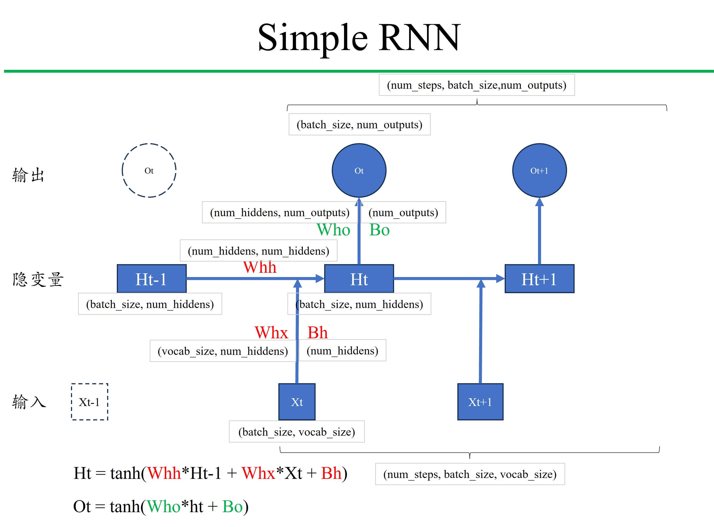
更新隐藏状态：
$\mathbf{h}_t=\phi(\mathbf{W}_{hh}\mathbf{h}_{t-1}+\mathbf{W}_{hx}\mathbf{x}_{t}+\mathbf{b}_h)$
输出：
$\mathbf{o}_t=\phi(\mathbf{W}_\textit{ho}\mathbf{h}_t+\mathbf{b}_o)$
# 网络结构
import torch
from torch import nn
import torch.nn.functional as F
# 初始化模型
def get_params(vocab_size, num_hiddens, device):
num_inputs = num_outputs = vocab_size
def normal(shape):
return torch.randn(size=shape, device=device) * 0.01
# 隐藏层参数
W_xh = normal((num_inputs, num_hiddens))
W_hh = normal((num_hiddens, num_hiddens))
b_h = torch.zeros(num_hiddens, device=device)
# 输出层参数
W_hq = normal((num_hiddens, num_outputs))
b_q = torch.zeros(num_outputs, device=device)
# 附加梯度
params = [W_xh, W_hh, b_h, W_hq, b_q]
for param in params:
param.requires_grad_(True)
return params
def init_rnn_state(batch_size, num_hiddens, device): # 初始化第一个隐变量的值, (num_layers, batch_size, num_hiddens)，此时num_layers=1num_layers=1
return (torch.zeros((batch_size, num_hiddens), device=device), )
def rnn(inputs, state, params):
# inputs的形状：(时间步数量，批量大小，词表大小), (num_steps, batch_size, vocab_size)
W_xh, W_hh, b_h, W_hq, b_q = params
H, = state
outputs = []
# X的形状：(batch_size, vocab_size))
for X in inputs: # 依次在num_steps中遍历，X的形状：(batch_size, vocab_size),依序列顺序展开
# X: (batch_size, vocab_size)
H = torch.tanh(torch.mm(X, W_xh) + torch.mm(H, W_hh) + b_h) # 隐藏变量: (batch_size, num_hiddens)
# H: (batch_size, num_hiddens)
Y = torch.mm(H, W_hq) + b_q # 输出: (batch_size, num_outputs) 此时num_outputs=vocab_size
# Y: (batch_size, num_outputs/vocab_size)
outputs.append(Y)
return torch.cat(outputs, dim=0), (H,) # 返回所有时间步的输出，以及最终的隐藏状态, (num_steps, batch_size, num_outputs)
class RNNModelScratch: #@save
"""从零开始实现的循环神经网络模型"""
def __init__(self, vocab_size, num_hiddens, device, get_params, init_state, forward_fn):
self.vocab_size, self.num_hiddens = vocab_size, num_hiddens
self.params = get_params(vocab_size, num_hiddens, device)
self.init_state, self.forward_fn = init_state, forward_fn
def __call__(self, X, state):
X = F.one_hot(X.T, self.vocab_size).type(torch.float32) # (num_steps, batch_size, vocab_size)
return self.forward_fn(X, state, self.params)
def begin_state(self, batch_size, device):
return self.init_state(batch_size, self.num_hiddens, device)
# 测试
batch_size, num_steps = 2, 5
X = torch.arange(10).reshape((batch_size, num_steps))
X.shape, X.T.shape, F.one_hot(X.T, len(vocab)).shape # 此时，vocab_size=len(vocab) = 28
(torch.Size([2, 5]), torch.Size([5, 2]), torch.Size([5, 2, 28]))
num_hiddens = 512
net = RNNModelScratch(
vocab_size=len(vocab),
num_hiddens=num_hiddens,
device=d2l.try_gpu(),
get_params=get_params,
init_state=init_rnn_state,
forward_fn=rnn
)
state = net.begin_state(X.shape[0], d2l.try_gpu())
Y, new_state = net(X.to(d2l.try_gpu()), state)
Y.shape, len(new_state), new_state[0].shape
(torch.Size([10, 28]), 1, torch.Size([2, 512]))
import torch
from torch import nn
import torch.nn.functional as F
class RNNModel(nn.Module):
"""循环神经网络模型"""
def __init__(self, rnn_layer, vocab_size, **kwargs):
super(RNNModel, self).__init__(**kwargs)
self.rnn = rnn_layer
self.vocab_size = vocab_size
self.num_hiddens = self.rnn.hidden_size
# 如果RNN是双向的（之后将介绍），num_directions应该是2，否则应该是1
if not self.rnn.bidirectional:
self.num_directions = 1
self.linear = nn.Linear(self.num_hiddens, self.vocab_size)
else:
self.num_directions = 2
self.linear = nn.Linear(self.num_hiddens * 2, self.vocab_size)
def forward(self, inputs, state):
X = F.one_hot(inputs.T.long(), self.vocab_size)
X = X.to(torch.float32)
Y, state = self.rnn(X, state)
# 全连接层首先将Y的形状改为(时间步数*批量大小,隐藏单元数)
# 它的输出形状是(时间步数*批量大小,词表大小)。
output = self.linear(Y.reshape((-1, Y.shape[-1])))
return output, state
def begin_state(self, device, batch_size=1):
if not isinstance(self.rnn, nn.LSTM):
# nn.GRU以张量作为隐状态
return torch.zeros((self.num_directions * self.rnn.num_layers, batch_size, self.num_hiddens), device=device)
else:
# nn.LSTM以元组作为隐状态
return (torch.zeros((self.num_directions * self.rnn.num_layers, batch_size, self.num_hiddens), device=device),
torch.zeros((self.num_directions * self.rnn.num_layers, batch_size, self.num_hiddens), device=device))
# 测试
batch_size, num_steps, num_hiddens = 2, 5, 128
# 用PyTorch直接实现
rnn_layer = nn.RNN(
input_size=len(vocab), # 输入特征的维度, vocab_size
hidden_size=num_hiddens, # 隐藏层大小
num_layers=1, # 深层神经网络，默认是1层
bidirectional=False, # 双向神经网络，默认是单向
batch_first=False
)
# 我们(**使用张量来初始化隐状态**)，它的形状是（隐藏层数，批量大小，隐藏单元数），(num_layers, batch_size, num_hiddens)
state = torch.zeros((1, batch_size, num_hiddens))
# [**通过一个隐状态和一个输入，我们就可以用更新后的隐状态计算输出。**]
# 需要强调的是，`rnn_layer`的“输出”（`Y`）不涉及输出层的计算：
# 它是指每个时间步的隐状态，这些隐状态可以用作后续输出层的输入。
X = torch.rand(size=(num_steps, batch_size, len(vocab))) # (num_steps, batch_size, vocab_size)
Y, state_new = rnn_layer(X, state)
# Y: (num_steps, batch_size, num_hiddens)
# state_new: (num_layers, batch_size, num_hiddens)
print(f'Y.shape: {Y.shape}')
print(f'state_new.shape: {state_new.shape}')
device = d2l.try_gpu()
net = RNNModel(rnn_layer, vocab_size=len(vocab))
net = net.to(device)
net
Y.shape: torch.Size([5, 2, 128]) state_new.shape: torch.Size([1, 2, 128])
RNNModel( (rnn): RNN(28, 128) (linear): Linear(in_features=128, out_features=28, bias=True) )
11.3.1.4. warm-up 预热期¶
- 预热期：在预测之前，先输入一些字符，让模型逐渐进入状态
- 预热期长度：num_steps
- 预测长度：num_preds
# 预测
def predict_ch8(prefix, num_preds, net, vocab, device): #@save
"""在prefix后面生成新字符"""
state = net.begin_state(batch_size=1, device=device)
# print(f'prefix: {prefix}')
# print(f'prefix[0]: {prefix[0]}')
outputs = [vocab[prefix[0]]]
# print(f'outputs: {outputs}')
# print(f'outputs[-1]: {outputs[-1]}')
get_input = lambda: torch.tensor([outputs[-1]], device=device).reshape((1, 1)) # (batch_size, num_steps)
for y in prefix[1:]: # 预热期
# print(f'y: {y}')
_, state = net(get_input(), state)
outputs.append(vocab[y])
# print(f'outputs: {[vocab.idx_to_token[i] for i in outputs]}')
for _ in range(num_preds): # 预测num_preds步
y, state = net(get_input(), state)
outputs.append(int(y.argmax(dim=1).reshape(1)))
return ''.join([vocab.idx_to_token[i] for i in outputs])
# 测试以下
predict_ch8('time traveller ', 50, net, vocab, d2l.try_gpu())
'time traveller cccccccccccccccccccccccccccccccccccccccccccccccccc'
- 梯度剪裁（Gradient Clipping） 梯度剪裁（Gradient Clipping）是深度学习中用于控制梯度爆炸（Gradient Explosion）的一种技术。通过限制梯度的大小，梯度剪裁帮助稳定模型的训练过程，特别是在处理深层网络或复杂模型时。
def train(model, optimizer, criterion, data, targets, clip_value=None):
model.train()
optimizer.zero_grad()
outputs = model(data)
loss = criterion(outputs, targets)
loss.backward()
if clip_value is not None:
# 基于梯度范数的剪裁
torch.nn.utils.clip_grad_norm_(model.parameters(), clip_value)
# 或者基于梯度值的剪裁
# torch.nn.utils.clip_grad_value_(model.parameters(), clip_value)
optimizer.step()
return loss.item()
# 防止梯度爆炸
torch.nn.utils.clip_grad_norm_(model.parameters(), max_norm=1.0)
# 梯度剪裁
def grad_clipping(net, theta): #@save
"""裁剪梯度"""
if isinstance(net, nn.Module):
params = [p for p in net.parameters() if p.requires_grad]
else:
params = net.params
norm = torch.sqrt(sum(torch.sum((p.grad ** 2)) for p in params))
if norm > theta:
for param in params:
param.grad[:] *= theta / norm
# 训练
import math
def train_epoch_ch8(net, train_iter, loss, updater, device, use_random_iter):
"""训练网络一个迭代周期（定义见第8章）"""
state, timer = None, d2l.Timer()
metric = d2l.Accumulator(2) # 训练损失之和,词元数量
for X, Y in train_iter:
if state is None or use_random_iter:
# 在第一次迭代或使用随机抽样时初始化state
state = net.begin_state(batch_size=X.shape[0], device=device)
else:
if isinstance(net, nn.Module) and not isinstance(state, tuple):
# state对于nn.GRU是个张量
state.detach_()
else:
# state对于nn.LSTM或对于我们从零开始实现的模型是个张量
for s in state:
s.detach_()
y = Y.T.reshape(-1)
X, y = X.to(device), y.to(device)
y_hat, state = net(X, state)
l = loss(y_hat, y.long()).mean()
if isinstance(updater, torch.optim.Optimizer):
updater.zero_grad()
l.backward()
grad_clipping(net, 1)
updater.step()
else:
l.backward()
grad_clipping(net, 1)
# 因为已经调用了mean函数
updater(batch_size=1)
metric.add(l * y.numel(), y.numel())
return math.exp(metric[0] / metric[1]), metric[1] / timer.stop()
#@save
def train_ch8(net, train_iter, vocab, lr, num_epochs, device,
use_random_iter=False):
"""训练模型（定义见第8章）"""
loss = nn.CrossEntropyLoss()
animator = d2l.Animator(xlabel='epoch', ylabel='perplexity',
legend=['train'], xlim=[10, num_epochs])
# 初始化
if isinstance(net, nn.Module):
updater = torch.optim.SGD(net.parameters(), lr)
else:
updater = lambda batch_size: d2l.sgd(net.params, lr, batch_size)
predict = lambda prefix: predict_ch8(prefix, 50, net, vocab, device)
# 训练和预测
for epoch in range(num_epochs):
ppl, speed = train_epoch_ch8(net, train_iter, loss, updater, device, use_random_iter)
if (epoch + 1) % 10 == 0:
print(predict('time traveller'))
animator.add(epoch + 1, [ppl])
print(f'困惑度 {ppl:.1f}, {speed:.1f} 词元/秒 {str(device)}')
print(predict('time traveller'))
print(predict('traveller'))
# 加载数据
batch_size, num_steps = 32, 35
# train_iter, vocab = d2l.load_data_time_machine(batch_size, num_steps)
train_iter, vocab = load_data_time_machine(batch_size, num_steps)
num_epochs, lr = 500, 0.1
train_ch8(net, train_iter, vocab, lr, num_epochs, d2l.try_gpu())
困惑度 5.1, 466010.7 词元/秒 cuda:0 time traveller this and heredin t ioged an alle that merthe in t travellers on the time traveller and and the proment ano th
![No description has been provided for this image]()
from torch import nn
from torch.nn import functional as F
batch_size, num_steps, num_layers, num_hiddens = 2, 5, 5, 512
rnn_layer = nn.RNN(
input_size=len(vocab), # 输入特征的维度
hidden_size=num_hiddens, # 隐藏层大小
bidirectional=False, # 双向神经网络，默认是单向
num_layers=num_layers, # 深层神经网络，默认是1层
batch_first=True
)
# dir(rnn_layer) # 查看属性
# help(rnn_layer) # 查看方法
# 输入
input = torch.zeros(size=(batch_size, num_steps))
input = F.one_hot(input.long(), len(vocab)).type(torch.float32)
# Initial state
state = torch.zeros(size=(num_layers, batch_size, num_hiddens))
y, new_state = rnn_layer(input, state)
y.shape, state.shape
(torch.Size([2, 5, 512]), torch.Size([5, 2, 512]))
from torch import nn
from torch.nn import functional as F
batch_size, num_steps, num_hiddens, bidirectional, num_layers = 2, 5, 512, True, 1
rnn_layer = nn.RNN(
input_size=len(vocab), # 输入特征维度
hidden_size=num_hiddens, # 隐藏层大小
bidirectional=bidirectional, # 双向神经网络，默认是单向
num_layers=num_layers, # 深层神经网络，默认是1层
batch_first=True
)
# dir(rnn_layer) # 查看属性
# help(rnn_layer) # 查看方法
# input
input = torch.zeros(size=(batch_size, num_steps))
input = F.one_hot(input.long(), len(vocab)).type(torch.float32)
# Initial state
# 双向神经网络，所以是2倍
state = torch.zeros(size=(num_layers*2, batch_size, num_hiddens))
y, new_state = rnn_layer(input, state)
y.shape, new_state.shape
(torch.Size([2, 5, 1024]), torch.Size([2, 2, 512]))
from torch import nn
batch_size, num_steps, num_hiddens, num_layers = 2, 5, 512, 1
gru_layer = nn.GRU(
input_size=len(vocab),
hidden_size=num_hiddens,
num_layers=num_layers,
bidirectional=False,
batch_first=True
)
# input
input = torch.zeros(size=(batch_size, num_steps))
input = F.one_hot(input.long(), len(vocab)).type(torch.float32)
# Initial state
state = torch.zeros(size=(num_layers, batch_size, num_hiddens))
y, new_state = gru_layer(input, state)
y.shape, new_state.shape
(torch.Size([2, 5, 512]), torch.Size([1, 2, 512]))
from torch import nn
from torch.nn import functional as F
batch_size, num_steps, num_hiddens, num_layers = 2, 5, 512, 1
lstm_layer = nn.LSTM(
input_size=len(vocab), # 输入特征维度
hidden_size=num_hiddens,
num_layers=num_layers,
bidirectional=False,
batch_first=True
)
# input
input = torch.zeros(size=(batch_size, num_steps))
input = F.one_hot(input.long(), len(vocab)).type(torch.float32)
# Initial state
# hidden_state 和 cell_state
hidden_state = torch.zeros(size=(num_layers, batch_size, num_hiddens))
cell_state = torch.zeros(size=(num_layers, batch_size, num_hiddens))
y, new_state = lstm_layer(input, (hidden_state, cell_state))
y.shape, new_state[0].shape, new_state[1].shape
(torch.Size([2, 5, 512]), torch.Size([1, 2, 512]), torch.Size([1, 2, 512]))
11.3.4. Encoder-Decoder框架¶
输入-Encoder-中间状态-Decoder-输出
输入
from torch import nn
#@save
class Encoder(nn.Module):
"""编码器-解码器架构的基本编码器接口"""
def __init__(self, **kwargs):
super(Encoder, self).__init__(**kwargs)
def forward(self, X, *args):
raise NotImplementedError
#@save
class Decoder(nn.Module):
"""编码器-解码器架构的基本解码器接口"""
def __init__(self, **kwargs):
super(Decoder, self).__init__(**kwargs)
def init_state(self, enc_outputs, *args):
raise NotImplementedError
def forward(self, X, state):
raise NotImplementedError
11.3.4.3. Encoder-Decoder（合并编码器和解码器）¶
Encoder-Decoder
class EncoderDecoder(nn.Module):
"""编码器-解码器架构的基类"""
def __init__(self, encoder, decoder, **kwargs):
super(EncoderDecoder, self).__init__(**kwargs)
self.encoder = encoder
self.decoder = decoder
def forward(self, enc_X, dec_X, *args):
enc_outputs = self.encoder(enc_X, *args)
dec_state = self.decoder.init_state(enc_outputs, *args)
return self.decoder(dec_X, dec_state)
11.4. seq2seq (Sequence to sequence learning)¶
Seq2Seq 模型最早由 Google 提出，用于机器翻译任务。其核心思想是使用两个递归神经网络（RNN）组成的架构：一个编码器（Encoder）将输入序列编码成上下文向量，另一个解码器（Decoder）根据该上下文向量生成输出序列。近年来，随着注意力机制（Attention）的引入，Seq2Seq 模型在各类序列转换任务中表现出了更强的性能。
基于RNN的编码器-解码器框架(Encoder-Decoder)
import os
from d2l import torch as d2l
#@save
d2l.DATA_HUB['fra-eng'] = (d2l.DATA_URL + 'fra-eng.zip', '94646ad1522d915e7b0f9296181140edcf86a4f5')
#@save
def read_data_nmt():
"""载入“英语－法语”数据集"""
data_dir = d2l.download_extract('fra-eng')
with open(os.path.join(data_dir, 'fra.txt'), 'r', encoding='utf-8') as f:
return f.read()
raw_text = read_data_nmt()
print(raw_text[:75])
Go. Va ! Hi. Salut ! Run! Cours ! Run! Courez ! Who? Qui ? Wow! Ça alors !
'''
下载数据集后，原始文本数据需要经过几个预处理步骤。例如，我们用空格代替不间断空格（non‐breaking
space），使用小写字母替换大写字母，并在单词和标点符号之间插入空格。
'''
#@tab all
#@save
def preprocess_nmt(text):
"""Preprocess the English-French dataset."""
def no_space(char, prev_char):
return char in set(',.!?') and prev_char != ' '
# Replace non-breaking space with space, and convert uppercase letters to
# lowercase ones
text = text.replace('\u202f', ' ').replace('\xa0', ' ').lower()
# Insert space between words and punctuation marks
out = [' ' + char if i > 0 and no_space(char, text[i - 1]) else char for i, char in enumerate(text)]
return ''.join(out)
text = preprocess_nmt(raw_text)
print(text[:80])
go . va ! hi . salut ! run ! cours ! run ! courez ! who ? qui ? wow ! ça alors !
'''
此函数返回两个词元列表：source和target：source[i]是源语言（这里是英
语）第i个文本序列的词元列表，target[i]是目标语言（这里是法语）第i个文本序列的词元列表。
'''
#@tab all
#@save
def tokenize_nmt(text, num_examples=None):
"""Tokenize the English-French dataset."""
source, target = [], []
for i, line in enumerate(text.split('\n')):
if num_examples and i > num_examples:
break
parts = line.split('\t')
if len(parts) == 2:
source.append(parts[0].split(' '))
target.append(parts[1].split(' '))
return source, target
source, target = tokenize_nmt(text)
source[:6], target[:6]
([['go', '.'], ['hi', '.'], ['run', '!'], ['run', '!'], ['who', '?'], ['wow', '!']], [['va', '!'], ['salut', '!'], ['cours', '!'], ['courez', '!'], ['qui', '?'], ['ça', 'alors', '!']])
#@tab all
src_vocab = d2l.Vocab(source, min_freq=2, reserved_tokens=['<pad>', '<bos>', '<eos>'])
print(len(src_vocab))
10012
src_vocab['unk'], src_vocab['<pad>'], src_vocab['<bos>'], src_vocab['<eos>']
(0, 1, 2, 3)
src_vocab.token_to_idx # dict
{'<unk>': 0,
'<pad>': 1,
'<bos>': 2,
'<eos>': 3,
'.': 4,
'i': 5,
'you': 6,
'to': 7,
'the': 8,
'?': 9,
'a': 10,
'is': 11,
'tom': 12,
'that': 13,
'he': 14,
'do': 15,
'of': 16,
'it': 17,
'this': 18,
'in': 19,
'me': 20,
'have': 21,
"don't": 22,
',': 23,
'was': 24,
'my': 25,
'are': 26,
'for': 27,
'your': 28,
'what': 29,
"i'm": 30,
'we': 31,
'be': 32,
'want': 33,
'she': 34,
'not': 35,
'know': 36,
'like': 37,
'on': 38,
'with': 39,
'can': 40,
'his': 41,
'all': 42,
'did': 43,
'at': 44,
"you're": 45,
'how': 46,
'go': 47,
'they': 48,
'him': 49,
'think': 50,
'and': 51,
"it's": 52,
'about': 53,
'time': 54,
"can't": 55,
'here': 56,
'very': 57,
"didn't": 58,
'get': 59,
'there': 60,
'her': 61,
'were': 62,
'as': 63,
'will': 64,
'had': 65,
'if': 66,
'why': 67,
'just': 68,
'up': 69,
'out': 70,
'no': 71,
'has': 72,
'one': 73,
'going': 74,
'would': 75,
'so': 76,
'good': 77,
'need': 78,
'tell': 79,
'an': 80,
'see': 81,
"i'll": 82,
'come': 83,
'when': 84,
'from': 85,
'by': 86,
'really': 87,
'mary': 88,
'help': 89,
'who': 90,
'please': 91,
'us': 92,
"that's": 93,
'should': 94,
'could': 95,
'been': 96,
"i've": 97,
'never': 98,
'more': 99,
'now': 100,
'where': 101,
'take': 102,
'something': 103,
'got': 104,
'too': 105,
'than': 106,
'much': 107,
'make': 108,
'some': 109,
"i'd": 110,
"we're": 111,
'right': 112,
'but': 113,
'work': 114,
'am': 115,
'money': 116,
'any': 117,
'home': 118,
'last': 119,
'thought': 120,
'say': 121,
'sure': 122,
'anything': 123,
'look': 124,
'back': 125,
'!': 126,
'day': 127,
"doesn't": 128,
'give': 129,
'car': 130,
'told': 131,
'talk': 132,
'people': 133,
'made': 134,
'lot': 135,
'let': 136,
'way': 137,
'our': 138,
'must': 139,
'many': 140,
'said': 141,
"he's": 142,
'love': 143,
'long': 144,
'went': 145,
'still': 146,
'feel': 147,
'only': 148,
'eat': 149,
'always': 150,
'better': 151,
'happy': 152,
'doing': 153,
'today': 154,
'french': 155,
'house': 156,
"isn't": 157,
"let's": 158,
'does': 159,
'new': 160,
'believe': 161,
'before': 162,
'leave': 163,
"what's": 164,
'book': 165,
'again': 166,
'them': 167,
'room': 168,
'job': 169,
'off': 170,
'school': 171,
'night': 172,
'little': 173,
'well': 174,
"won't": 175,
'may': 176,
'old': 177,
'down': 178,
'wanted': 179,
'everything': 180,
'yesterday': 181,
'alone': 182,
'happened': 183,
'tomorrow': 184,
'father': 185,
'stay': 186,
'two': 187,
'put': 188,
'left': 189,
'over': 190,
'enough': 191,
'every': 192,
'asked': 193,
'three': 194,
'speak': 195,
'find': 196,
'stop': 197,
'these': 198,
'saw': 199,
'man': 200,
'into': 201,
'done': 202,
'try': 203,
'understand': 204,
'ask': 205,
'or': 206,
'ever': 207,
'keep': 208,
'friends': 209,
'problem': 210,
'sorry': 211,
'next': 212,
'nothing': 213,
"there's": 214,
'dog': 215,
'after': 216,
'call': 217,
'buy': 218,
'hard': 219,
"you've": 220,
'hope': 221,
'busy': 222,
'read': 223,
'away': 224,
'live': 225,
'friend': 226,
'wrong': 227,
'late': 228,
'first': 229,
'things': 230,
'door': 231,
'hear': 232,
"tom's": 233,
'life': 234,
"they're": 235,
'thing': 236,
'other': 237,
'remember': 238,
'idea': 239,
"wasn't": 240,
'boston': 241,
'anyone': 242,
'mother': 243,
'years': 244,
'took': 245,
'gave': 246,
'without': 247,
'being': 248,
'their': 249,
'everyone': 250,
"couldn't": 251,
'mind': 252,
'came': 253,
'children': 254,
'yet': 255,
'knew': 256,
'already': 257,
"you'd": 258,
'used': 259,
'name': 260,
'kind': 261,
'drink': 262,
'tired': 263,
'looking': 264,
'morning': 265,
'heard': 266,
'seen': 267,
'best': 268,
'bad': 269,
"you'll": 270,
'lost': 271,
'teacher': 272,
'found': 273,
'even': 274,
'play': 275,
'water': 276,
"haven't": 277,
'same': 278,
'care': 279,
'often': 280,
'week': 281,
'english': 282,
"aren't": 283,
'use': 284,
'soon': 285,
'wait': 286,
'afraid': 287,
'ready': 288,
'wish': 289,
'answer': 290,
'big': 291,
'yourself': 292,
'bed': 293,
'party': 294,
'someone': 295,
'while': 296,
'few': 297,
'happen': 298,
'talking': 299,
'else': 300,
'parents': 301,
'wants': 302,
'cold': 303,
'train': 304,
'myself': 305,
'open': 306,
'around': 307,
'show': 308,
'might': 309,
'bought': 310,
'nice': 311,
'glad': 312,
'both': 313,
'getting': 314,
'married': 315,
'another': 316,
"we'll": 317,
'place': 318,
'watch': 319,
'great': 320,
'turn': 321,
'year': 322,
'true': 323,
'looks': 324,
'early': 325,
'because': 326,
'such': 327,
'knows': 328,
'beautiful': 329,
'sleep': 330,
'write': 331,
'plan': 332,
'hurt': 333,
"wouldn't": 334,
'almost': 335,
'able': 336,
"she's": 337,
'those': 338,
'walk': 339,
'once': 340,
'which': 341,
'tried': 342,
'pay': 343,
'matter': 344,
'question': 345,
'food': 346,
'fun': 347,
'meet': 348,
'dinner': 349,
'days': 350,
'bus': 351,
'coffee': 352,
'brother': 353,
'letter': 354,
'truth': 355,
'met': 356,
'coming': 357,
'anymore': 358,
'everybody': 359,
'young': 360,
'meeting': 361,
'most': 362,
'person': 363,
'mine': 364,
'books': 365,
"shouldn't": 366,
'careful': 367,
'sister': 368,
'each': 369,
'own': 370,
'family': 371,
'together': 372,
'hate': 373,
'felt': 374,
'seems': 375,
'tonight': 376,
'doctor': 377,
'change': 378,
'learn': 379,
'seem': 380,
'since': 381,
'likes': 382,
'study': 383,
'word': 384,
'waiting': 385,
'forget': 386,
'easy': 387,
'pretty': 388,
'died': 389,
'trying': 390,
'girl': 391,
'phone': 392,
'world': 393,
'far': 394,
'gone': 395,
'working': 396,
"we've": 397,
'hand': 398,
'started': 399,
'child': 400,
'accident': 401,
'station': 402,
'mean': 403,
'nobody': 404,
'finished': 405,
'longer': 406,
'difficult': 407,
'sick': 408,
'boy': 409,
'surprised': 410,
'important': 411,
'start': 412,
'rain': 413,
'looked': 414,
'quite': 415,
'lunch': 416,
'cat': 417,
'drive': 418,
'wife': 419,
'questions': 420,
'weather': 421,
'anybody': 422,
'reading': 423,
'movie': 424,
'having': 425,
'yours': 426,
'makes': 427,
'mistake': 428,
'supposed': 429,
'thank': 430,
'office': 431,
'story': 432,
'until': 433,
'ten': 434,
'run': 435,
'swim': 436,
'small': 437,
'tv': 438,
'times': 439,
'close': 440,
'himself': 441,
'bit': 442,
'playing': 443,
'spend': 444,
'angry': 445,
'eyes': 446,
'trust': 447,
'stupid': 448,
'called': 449,
'ago': 450,
'guess': 451,
'advice': 452,
'japan': 453,
'hurry': 454,
'picture': 455,
'hours': 456,
'."': 457,
'broke': 458,
'music': 459,
'exactly': 460,
'says': 461,
'caught': 462,
'students': 463,
'wonder': 464,
'son': 465,
'lives': 466,
'fire': 467,
'afternoon': 468,
'window': 469,
'eating': 470,
'turned': 471,
'police': 472,
'bicycle': 473,
'thinking': 474,
'fell': 475,
'ran': 476,
'decided': 477,
'table': 478,
'fast': 479,
'usually': 480,
'probably': 481,
"who's": 482,
'minutes': 483,
'japanese': 484,
'interested': 485,
'interesting': 486,
'trouble': 487,
'free': 488,
'hair': 489,
'arrived': 490,
'hot': 491,
'bring': 492,
"weren't": 493,
'light': 494,
'town': 495,
'homework': 496,
'advised': 497,
'worry': 498,
'number': 499,
'park': 500,
'game': 501,
'under': 502,
'safe': 503,
'listen': 504,
'forgot': 505,
'stand': 506,
'enjoy': 507,
'country': 508,
'living': 509,
'news': 510,
'through': 511,
'against': 512,
'appreciate': 513,
'agree': 514,
'age': 515,
'miss': 516,
'sit': 517,
'hands': 518,
'quit': 519,
'promise': 520,
'proud': 521,
'sing': 522,
'chance': 523,
'saying': 524,
'possible': 525,
'visit': 526,
'finish': 527,
'different': 528,
'maybe': 529,
'later': 530,
'high': 531,
'reason': 532,
'wine': 533,
'then': 534,
'outside': 535,
'summer': 536,
'kept': 537,
'taking': 538,
'catch': 539,
'hungry': 540,
'needs': 541,
'born': 542,
'lie': 543,
'making': 544,
"should've": 545,
'cut': 546,
'business': 547,
'moment': 548,
'trip': 549,
'favorite': 550,
'dead': 551,
'end': 552,
'ok': 553,
'shoes': 554,
'older': 555,
'become': 556,
'win': 557,
'tree': 558,
'behind': 559,
'five': 560,
'box': 561,
'near': 562,
'works': 563,
'red': 564,
'girlfriend': 565,
'breakfast': 566,
'die': 567,
'class': 568,
'song': 569,
'tea': 570,
'eaten': 571,
'city': 572,
'dress': 573,
'student': 574,
'baby': 575,
"mary's": 576,
'rich': 577,
'needed': 578,
'guy': 579,
'face': 580,
'funny': 581,
'secret': 582,
'team': 583,
'month': 584,
'company': 585,
'full': 586,
'quickly': 587,
'comes': 588,
'paid': 589,
'stayed': 590,
"where's": 591,
'crazy': 592,
'fish': 593,
'rest': 594,
'ate': 595,
'lose': 596,
'woman': 597,
'point': 598,
'watching': 599,
'tennis': 600,
'beer': 601,
'explain': 602,
'part': 603,
'invited': 604,
'serious': 605,
'cannot': 606,
'break': 607,
'large': 608,
'clothes': 609,
'daughter': 610,
'smoking': 611,
'hotel': 612,
'kids': 613,
'key': 614,
'choice': 615,
'asleep': 616,
'hat': 617,
'feeling': 618,
'sound': 619,
'death': 620,
'cost': 621,
'somebody': 622,
'clean': 623,
'australia': 624,
'spent': 625,
'worried': 626,
'began': 627,
'words': 628,
'real': 629,
'lived': 630,
'wearing': 631,
'?"': 632,
'studying': 633,
'handle': 634,
'expensive': 635,
'sometimes': 636,
'goes': 637,
'hour': 638,
'became': 639,
'street': 640,
'touch': 641,
'hit': 642,
'milk': 643,
'river': 644,
'killed': 645,
'store': 646,
'hospital': 647,
'changed': 648,
'short': 649,
'rather': 650,
'decision': 651,
'computer': 652,
'others': 653,
'telling': 654,
'drunk': 655,
'deal': 656,
'between': 657,
'paper': 658,
'hold': 659,
'lucky': 660,
'cake': 661,
'scared': 662,
'takes': 663,
'birthday': 664,
'snow': 665,
'language': 666,
'closed': 667,
'present': 668,
'helped': 669,
'dark': 670,
'minute': 671,
'stopped': 672,
'problems': 673,
'restaurant': 674,
'sat': 675,
'monday': 676,
'speaking': 677,
'expect': 678,
'front': 679,
'whole': 680,
'quiet': 681,
'war': 682,
'mistakes': 683,
'figured': 684,
'worked': 685,
'finally': 686,
'gets': 687,
'along': 688,
'head': 689,
'report': 690,
'wrote': 691,
'happening': 692,
'dogs': 693,
'coat': 694,
'sense': 695,
'cup': 696,
'talked': 697,
'liked': 698,
'strong': 699,
'upset': 700,
'kill': 701,
'speaks': 702,
'thanks': 703,
'missed': 704,
'forward': 705,
'strange': 706,
'expected': 707,
'check': 708,
'boss': 709,
'dream': 710,
'dangerous': 711,
'beach': 712,
'known': 713,
'health': 714,
'situation': 715,
'actually': 716,
'running': 717,
'brought': 718,
'whether': 719,
'six': 720,
'its': 721,
'whatever': 722,
'dictionary': 723,
'move': 724,
'seeing': 725,
'shut': 726,
'order': 727,
'swimming': 728,
'weekend': 729,
'tall': 730,
'men': 731,
'air': 732,
'evening': 733,
'walked': 734,
'plane': 735,
'allowed': 736,
'thirty': 737,
'loves': 738,
'case': 739,
'least': 740,
'building': 741,
'broken': 742,
'list': 743,
'worth': 744,
'happens': 745,
'heart': 746,
'disappointed': 747,
'follow': 748,
'famous': 749,
'prefer': 750,
'written': 751,
'smoke': 752,
'christmas': 753,
'perfect': 754,
'drinking': 755,
"o'clock": 756,
'luck': 757,
'choose': 758,
'completely': 759,
'dollars': 760,
'pain': 761,
'future': 762,
'either': 763,
'mad': 764,
'seat': 765,
'crying': 766,
'dance': 767,
'second': 768,
'piano': 769,
'offer': 770,
'necessary': 771,
'fine': 772,
'half': 773,
'sent': 774,
'sunday': 775,
"hasn't": 776,
'garden': 777,
'apologize': 778,
'rules': 779,
'road': 780,
'library': 781,
'leaving': 782,
'noise': 783,
'weight': 784,
'flowers': 785,
'wear': 786,
'opinion': 787,
'cook': 788,
'writing': 789,
'camera': 790,
'set': 791,
'taken': 792,
'glass': 793,
'learned': 794,
'address': 795,
'somewhere': 796,
'poor': 797,
'several': 798,
"it'll": 799,
'white': 800,
'danger': 801,
'attention': 802,
"he'll": 803,
'tokyo': 804,
'floor': 805,
'save': 806,
'alive': 807,
'accept': 808,
'information': 809,
'clear': 810,
'suppose': 811,
'opened': 812,
'during': 813,
'kiss': 814,
'loved': 815,
'nervous': 816,
'grow': 817,
'girls': 818,
'waste': 819,
'showed': 820,
'join': 821,
'women': 822,
'bag': 823,
'sleeping': 824,
'listening': 825,
'less': 826,
'solve': 827,
'sad': 828,
'won': 829,
'date': 830,
'shopping': 831,
'blame': 832,
'desk': 833,
'tie': 834,
'medicine': 835,
'vacation': 836,
'pass': 837,
'college': 838,
'side': 839,
'success': 840,
'teach': 841,
'keys': 842,
'arrive': 843,
'umbrella': 844,
'fix': 845,
'sounds': 846,
'ticket': 847,
'whose': 848,
'ship': 849,
'radio': 850,
'lying': 851,
'spoke': 852,
'smart': 853,
'means': 854,
'lawyer': 855,
'thinks': 856,
'telephone': 857,
'abroad': 858,
'promised': 859,
'glasses': 860,
'willing': 861,
'wake': 862,
'shot': 863,
'black': 864,
'owe': 865,
'husband': 866,
'speech': 867,
'cats': 868,
'plans': 869,
'horse': 870,
'borrow': 871,
'driving': 872,
'staying': 873,
'apple': 874,
'message': 875,
'immediately': 876,
'guitar': 877,
'piece': 878,
'discuss': 879,
'across': 880,
'excuse': 881,
'dressed': 882,
'uncle': 883,
'pictures': 884,
'given': 885,
'fat': 886,
'guys': 887,
'waited': 888,
'prepared': 889,
'fight': 890,
'bank': 891,
'asking': 892,
'involved': 893,
'american': 894,
'lend': 895,
'carefully': 896,
'harder': 897,
'none': 898,
'boyfriend': 899,
'concert': 900,
'sign': 901,
'boys': 902,
'ride': 903,
'traffic': 904,
'cry': 905,
'certain': 906,
'gun': 907,
'shower': 908,
'afford': 909,
'cute': 910,
'joke': 911,
'price': 912,
'couple': 913,
'inside': 914,
'easily': 915,
'arm': 916,
'lake': 917,
'novel': 918,
'shirt': 919,
'storm': 920,
'painting': 921,
'agreed': 922,
'send': 923,
'satisfied': 924,
'worse': 925,
'regret': 926,
'america': 927,
'fired': 928,
'begin': 929,
'kid': 930,
'twice': 931,
'raining': 932,
'succeed': 933,
'travel': 934,
'fault': 935,
"how's": 936,
'count': 937,
'correct': 938,
'act': 939,
"they'll": 940,
'passed': 941,
'chair': 942,
"we'd": 943,
'difference': 944,
'ice': 945,
'test': 946,
'empty': 947,
'honest': 948,
'laugh': 949,
'meat': 950,
'movies': 951,
'television': 952,
'four': 953,
'pen': 954,
'earlier': 955,
'hardly': 956,
'impossible': 957,
'held': 958,
'color': 959,
'figure': 960,
'ahead': 961,
'wonderful': 962,
'blue': 963,
'enjoyed': 964,
'winter': 965,
'likely': 966,
'machine': 967,
'carry': 968,
'warm': 969,
'refused': 970,
'fall': 971,
'line': 972,
'bill': 973,
'played': 974,
'decide': 975,
'kissed': 976,
'terrible': 977,
'animals': 978,
'younger': 979,
'herself': 980,
'mountain': 981,
'bother': 982,
'laughed': 983,
'slept': 984,
'walking': 985,
'ideas': 986,
'past': 987,
'heavy': 988,
'shop': 989,
'anywhere': 990,
'foreign': 991,
'sooner': 992,
'liar': 993,
'cooking': 994,
'injured': 995,
'leaves': 996,
'newspaper': 997,
'pick': 998,
'smell': 999,
...}
src_vocab.idx_to_token # list
['<unk>', '<pad>', '<bos>', '<eos>', '.', 'i', 'you', 'to', 'the', '?', 'a', 'is', 'tom', 'that', 'he', 'do', 'of', 'it', 'this', 'in', 'me', 'have', "don't", ',', 'was', 'my', 'are', 'for', 'your', 'what', "i'm", 'we', 'be', 'want', 'she', 'not', 'know', 'like', 'on', 'with', 'can', 'his', 'all', 'did', 'at', "you're", 'how', 'go', 'they', 'him', 'think', 'and', "it's", 'about', 'time', "can't", 'here', 'very', "didn't", 'get', 'there', 'her', 'were', 'as', 'will', 'had', 'if', 'why', 'just', 'up', 'out', 'no', 'has', 'one', 'going', 'would', 'so', 'good', 'need', 'tell', 'an', 'see', "i'll", 'come', 'when', 'from', 'by', 'really', 'mary', 'help', 'who', 'please', 'us', "that's", 'should', 'could', 'been', "i've", 'never', 'more', 'now', 'where', 'take', 'something', 'got', 'too', 'than', 'much', 'make', 'some', "i'd", "we're", 'right', 'but', 'work', 'am', 'money', 'any', 'home', 'last', 'thought', 'say', 'sure', 'anything', 'look', 'back', '!', 'day', "doesn't", 'give', 'car', 'told', 'talk', 'people', 'made', 'lot', 'let', 'way', 'our', 'must', 'many', 'said', "he's", 'love', 'long', 'went', 'still', 'feel', 'only', 'eat', 'always', 'better', 'happy', 'doing', 'today', 'french', 'house', "isn't", "let's", 'does', 'new', 'believe', 'before', 'leave', "what's", 'book', 'again', 'them', 'room', 'job', 'off', 'school', 'night', 'little', 'well', "won't", 'may', 'old', 'down', 'wanted', 'everything', 'yesterday', 'alone', 'happened', 'tomorrow', 'father', 'stay', 'two', 'put', 'left', 'over', 'enough', 'every', 'asked', 'three', 'speak', 'find', 'stop', 'these', 'saw', 'man', 'into', 'done', 'try', 'understand', 'ask', 'or', 'ever', 'keep', 'friends', 'problem', 'sorry', 'next', 'nothing', "there's", 'dog', 'after', 'call', 'buy', 'hard', "you've", 'hope', 'busy', 'read', 'away', 'live', 'friend', 'wrong', 'late', 'first', 'things', 'door', 'hear', "tom's", 'life', "they're", 'thing', 'other', 'remember', 'idea', "wasn't", 'boston', 'anyone', 'mother', 'years', 'took', 'gave', 'without', 'being', 'their', 'everyone', "couldn't", 'mind', 'came', 'children', 'yet', 'knew', 'already', "you'd", 'used', 'name', 'kind', 'drink', 'tired', 'looking', 'morning', 'heard', 'seen', 'best', 'bad', "you'll", 'lost', 'teacher', 'found', 'even', 'play', 'water', "haven't", 'same', 'care', 'often', 'week', 'english', "aren't", 'use', 'soon', 'wait', 'afraid', 'ready', 'wish', 'answer', 'big', 'yourself', 'bed', 'party', 'someone', 'while', 'few', 'happen', 'talking', 'else', 'parents', 'wants', 'cold', 'train', 'myself', 'open', 'around', 'show', 'might', 'bought', 'nice', 'glad', 'both', 'getting', 'married', 'another', "we'll", 'place', 'watch', 'great', 'turn', 'year', 'true', 'looks', 'early', 'because', 'such', 'knows', 'beautiful', 'sleep', 'write', 'plan', 'hurt', "wouldn't", 'almost', 'able', "she's", 'those', 'walk', 'once', 'which', 'tried', 'pay', 'matter', 'question', 'food', 'fun', 'meet', 'dinner', 'days', 'bus', 'coffee', 'brother', 'letter', 'truth', 'met', 'coming', 'anymore', 'everybody', 'young', 'meeting', 'most', 'person', 'mine', 'books', "shouldn't", 'careful', 'sister', 'each', 'own', 'family', 'together', 'hate', 'felt', 'seems', 'tonight', 'doctor', 'change', 'learn', 'seem', 'since', 'likes', 'study', 'word', 'waiting', 'forget', 'easy', 'pretty', 'died', 'trying', 'girl', 'phone', 'world', 'far', 'gone', 'working', "we've", 'hand', 'started', 'child', 'accident', 'station', 'mean', 'nobody', 'finished', 'longer', 'difficult', 'sick', 'boy', 'surprised', 'important', 'start', 'rain', 'looked', 'quite', 'lunch', 'cat', 'drive', 'wife', 'questions', 'weather', 'anybody', 'reading', 'movie', 'having', 'yours', 'makes', 'mistake', 'supposed', 'thank', 'office', 'story', 'until', 'ten', 'run', 'swim', 'small', 'tv', 'times', 'close', 'himself', 'bit', 'playing', 'spend', 'angry', 'eyes', 'trust', 'stupid', 'called', 'ago', 'guess', 'advice', 'japan', 'hurry', 'picture', 'hours', '."', 'broke', 'music', 'exactly', 'says', 'caught', 'students', 'wonder', 'son', 'lives', 'fire', 'afternoon', 'window', 'eating', 'turned', 'police', 'bicycle', 'thinking', 'fell', 'ran', 'decided', 'table', 'fast', 'usually', 'probably', "who's", 'minutes', 'japanese', 'interested', 'interesting', 'trouble', 'free', 'hair', 'arrived', 'hot', 'bring', "weren't", 'light', 'town', 'homework', 'advised', 'worry', 'number', 'park', 'game', 'under', 'safe', 'listen', 'forgot', 'stand', 'enjoy', 'country', 'living', 'news', 'through', 'against', 'appreciate', 'agree', 'age', 'miss', 'sit', 'hands', 'quit', 'promise', 'proud', 'sing', 'chance', 'saying', 'possible', 'visit', 'finish', 'different', 'maybe', 'later', 'high', 'reason', 'wine', 'then', 'outside', 'summer', 'kept', 'taking', 'catch', 'hungry', 'needs', 'born', 'lie', 'making', "should've", 'cut', 'business', 'moment', 'trip', 'favorite', 'dead', 'end', 'ok', 'shoes', 'older', 'become', 'win', 'tree', 'behind', 'five', 'box', 'near', 'works', 'red', 'girlfriend', 'breakfast', 'die', 'class', 'song', 'tea', 'eaten', 'city', 'dress', 'student', 'baby', "mary's", 'rich', 'needed', 'guy', 'face', 'funny', 'secret', 'team', 'month', 'company', 'full', 'quickly', 'comes', 'paid', 'stayed', "where's", 'crazy', 'fish', 'rest', 'ate', 'lose', 'woman', 'point', 'watching', 'tennis', 'beer', 'explain', 'part', 'invited', 'serious', 'cannot', 'break', 'large', 'clothes', 'daughter', 'smoking', 'hotel', 'kids', 'key', 'choice', 'asleep', 'hat', 'feeling', 'sound', 'death', 'cost', 'somebody', 'clean', 'australia', 'spent', 'worried', 'began', 'words', 'real', 'lived', 'wearing', '?"', 'studying', 'handle', 'expensive', 'sometimes', 'goes', 'hour', 'became', 'street', 'touch', 'hit', 'milk', 'river', 'killed', 'store', 'hospital', 'changed', 'short', 'rather', 'decision', 'computer', 'others', 'telling', 'drunk', 'deal', 'between', 'paper', 'hold', 'lucky', 'cake', 'scared', 'takes', 'birthday', 'snow', 'language', 'closed', 'present', 'helped', 'dark', 'minute', 'stopped', 'problems', 'restaurant', 'sat', 'monday', 'speaking', 'expect', 'front', 'whole', 'quiet', 'war', 'mistakes', 'figured', 'worked', 'finally', 'gets', 'along', 'head', 'report', 'wrote', 'happening', 'dogs', 'coat', 'sense', 'cup', 'talked', 'liked', 'strong', 'upset', 'kill', 'speaks', 'thanks', 'missed', 'forward', 'strange', 'expected', 'check', 'boss', 'dream', 'dangerous', 'beach', 'known', 'health', 'situation', 'actually', 'running', 'brought', 'whether', 'six', 'its', 'whatever', 'dictionary', 'move', 'seeing', 'shut', 'order', 'swimming', 'weekend', 'tall', 'men', 'air', 'evening', 'walked', 'plane', 'allowed', 'thirty', 'loves', 'case', 'least', 'building', 'broken', 'list', 'worth', 'happens', 'heart', 'disappointed', 'follow', 'famous', 'prefer', 'written', 'smoke', 'christmas', 'perfect', 'drinking', "o'clock", 'luck', 'choose', 'completely', 'dollars', 'pain', 'future', 'either', 'mad', 'seat', 'crying', 'dance', 'second', 'piano', 'offer', 'necessary', 'fine', 'half', 'sent', 'sunday', "hasn't", 'garden', 'apologize', 'rules', 'road', 'library', 'leaving', 'noise', 'weight', 'flowers', 'wear', 'opinion', 'cook', 'writing', 'camera', 'set', 'taken', 'glass', 'learned', 'address', 'somewhere', 'poor', 'several', "it'll", 'white', 'danger', 'attention', "he'll", 'tokyo', 'floor', 'save', 'alive', 'accept', 'information', 'clear', 'suppose', 'opened', 'during', 'kiss', 'loved', 'nervous', 'grow', 'girls', 'waste', 'showed', 'join', 'women', 'bag', 'sleeping', 'listening', 'less', 'solve', 'sad', 'won', 'date', 'shopping', 'blame', 'desk', 'tie', 'medicine', 'vacation', 'pass', 'college', 'side', 'success', 'teach', 'keys', 'arrive', 'umbrella', 'fix', 'sounds', 'ticket', 'whose', 'ship', 'radio', 'lying', 'spoke', 'smart', 'means', 'lawyer', 'thinks', 'telephone', 'abroad', 'promised', 'glasses', 'willing', 'wake', 'shot', 'black', 'owe', 'husband', 'speech', 'cats', 'plans', 'horse', 'borrow', 'driving', 'staying', 'apple', 'message', 'immediately', 'guitar', 'piece', 'discuss', 'across', 'excuse', 'dressed', 'uncle', 'pictures', 'given', 'fat', 'guys', 'waited', 'prepared', 'fight', 'bank', 'asking', 'involved', 'american', 'lend', 'carefully', 'harder', 'none', 'boyfriend', 'concert', 'sign', 'boys', 'ride', 'traffic', 'cry', 'certain', 'gun', 'shower', 'afford', 'cute', 'joke', 'price', 'couple', 'inside', 'easily', 'arm', 'lake', 'novel', 'shirt', 'storm', 'painting', 'agreed', 'send', 'satisfied', 'worse', 'regret', 'america', 'fired', 'begin', 'kid', 'twice', 'raining', 'succeed', 'travel', 'fault', "how's", 'count', 'correct', 'act', "they'll", 'passed', 'chair', "we'd", 'difference', 'ice', 'test', 'empty', 'honest', 'laugh', 'meat', 'movies', 'television', 'four', 'pen', 'earlier', 'hardly', 'impossible', 'held', 'color', 'figure', 'ahead', 'wonderful', 'blue', 'enjoyed', 'winter', 'likely', 'machine', 'carry', 'warm', 'refused', 'fall', 'line', 'bill', 'played', 'decide', 'kissed', 'terrible', 'animals', 'younger', 'herself', 'mountain', 'bother', 'laughed', 'slept', 'walking', 'ideas', 'past', 'heavy', 'shop', 'anywhere', 'foreign', 'sooner', 'liar', 'cooking', 'injured', 'leaves', 'newspaper', 'pick', 'smell', ...]
#@tab all
#@save
def truncate_pad(line, num_steps, padding_token):
"""Truncate or pad sequences."""
if len(line) > num_steps:
return line[:num_steps] # Truncate
return line + [padding_token] * (num_steps - len(line)) # Pad
truncate_pad(src_vocab[source[0]], 10, src_vocab['<pad>']) # return list
[47, 4, 1, 1, 1, 1, 1, 1, 1, 1]
'''
现在我们定义一个函数，可以将文本序列转换成小批量数据集用于训练。我们将特定的“<eos>”词元添加
到所有序列的末尾，用于表示序列的结束。当模型通过一个词元接一个词元地生成序列进行预测时，生成的
“<eos>”词元说明完成了序列输出工作。此外，我们还记录了每个文本序列的长度，统计长度时排除了填充
词元，在稍后将要介绍的一些模型会需要这个长度信息。
'''
#@tab all
#@save
def build_array_nmt(lines, vocab, num_steps):
"""Transform text sequences of machine translation into minibatches."""
lines = [vocab[l] for l in lines]
lines = [l + [vocab['<eos>']] for l in lines]
array = torch.tensor([truncate_pad(l, num_steps, vocab['<pad>']) for l in lines])
# 计算每个序列中非填充 <pad> 标记的数量，得到每个序列的有效长度。
# array != vocab['<pad>']：创建一个布尔张量，标识哪些位置不是填充标记。
# d2l.astype(..., d2l.int32)：将布尔值转换为整数类型（1 和 0）。
# d2l.reduce_sum(..., 1)：沿着序列长度的维度求和，得到每个序列的有效长度。
valid_len = d2l.reduce_sum(d2l.astype(array != vocab['<pad>'], torch.int32), 1)
return array, valid_len
src_vocab['<pad>']
1
import torch
#@tab all
#@save
def load_data_nmt(batch_size, num_steps, num_examples=600):
"""Return the iterator and the vocabularies of the translation dataset."""
text = preprocess_nmt(read_data_nmt())
source, target = tokenize_nmt(text, num_examples)
src_vocab = d2l.Vocab(source, min_freq=2, reserved_tokens=['<pad>', '<bos>', '<eos>'])
tgt_vocab = d2l.Vocab(target, min_freq=2, reserved_tokens=['<pad>', '<bos>', '<eos>'])
src_array, src_valid_len = build_array_nmt(source, src_vocab, num_steps)
tgt_array, tgt_valid_len = build_array_nmt(target, tgt_vocab, num_steps)
# 数据集顺序：源语言序列、源语言序列有效长度、目标语言序列、目标语言序列有效长度
data_arrays = (src_array, src_valid_len, tgt_array, tgt_valid_len)
data_iter = d2l.load_array(data_arrays, batch_size)
return data_iter, src_vocab, tgt_vocab
#@tab all
train_iter, src_vocab, tgt_vocab = load_data_nmt(batch_size=2, num_steps=8)
for X, X_valid_len, Y, Y_valid_len in train_iter:
print('X:', d2l.astype(X, torch.int32))
print('valid lengths for X:', X_valid_len)
print('Y:', d2l.astype(Y, torch.int32))
print('valid lengths for Y:', Y_valid_len)
break
X: tensor([[162, 9, 4, 3, 1, 1, 1, 1],
[ 24, 160, 4, 3, 1, 1, 1, 1]], dtype=torch.int32)
valid lengths for X: tensor([4, 4])
Y: tensor([[171, 5, 3, 1, 1, 1, 1, 1],
[ 13, 36, 0, 4, 3, 1, 1, 1]], dtype=torch.int32)
valid lengths for Y: tensor([3, 5])
src_vocab['<pad>'], tgt_vocab['<pad>'] # 用1填充
(1, 1)
11.4.2. 编码器-解码器架构¶
机器翻译是序列转换模型的一个核心问题，其输入和输出都是长度可变的序列。
为了处理这种类型的输入和输出，我们可以设计一个包含两个主要组件的架构：
- 第一个组件是一个编码器（encoder）：它接受一个长度可变的序列作为输入，并将其转换为具有固定形状的编码状态。
- 第二个组件是解码器（decoder）：它将固定形状的编码状态映射到长度可变的序列。
我们以英语到法语的机器翻译为例：给定一个英文的输入序列：“They”“are”“watching”“.”。首先，这种“编码器－解码器”架构将长度可变的输入序列编码成一个“状态”，然后对该状态进行解码，一个词元接着一个词元地生成翻译后的序列作为输出：“Ils”“regordent”“.”
'''
编码器
'''
from torch import nn
class Encoder(nn.Module):
"""编码器-解码器架构的基本编码器接口"""
def __init__(self, **kwargs):
super().__init__(**kwargs)
def forward(self, X, *args):
raise NotImplementedError
'''
解码器
'''
from torch import nn
class Decoder(nn.Module):
"""编码器-解码器架构的基本解码器接口"""
def __init__(self, **kwargs):
super().__init__(**kwargs)
def init_state(self, enc_outputs, *args):
'''我们新增一个init_state函数，用于将编码器的输出（enc_outputs）转换为编码后的状态。注意，此步骤可能需要额外的输入，例如：输入序列的有效长度'''
raise NotImplementedError
def forward(self, X, state):
raise NotImplementedError
'''
编码器-解码器架构
'''
from torch import nn
class EncoderDecoder(nn.Module):
"""编码器-解码器架构的基类"""
def __init__(self, encoder, decoder, **kwargs):
super().__init__(**kwargs)
self.encoder = encoder
self.decoder = decoder
def forward(self, enc_X, dec_X, *args):
enc_outputs = self.encoder(enc_X, *args)
dec_state = self.decoder.init_state(enc_outputs, *args)
return self.decoder(dec_X, dec_state)
from torch import nn
import torch
class Seq2SeqEncoder(nn.Module):
'''编码器'''
def __init__(self, vocab_size, embed_size, num_hiddens, num_layers, dropout=0, **kwargs):
super().__init__(**kwargs)
# 嵌入层
self.embedding = nn.Embedding(vocab_size, embed_size)
self.rnn = nn.GRU(input_size=embed_size, hidden_size=num_hiddens, num_layers=num_layers, dropout=dropout)
def forward(self, X, *args):
# X 的形状：(batch_size, num_steps, embed_size)
X = self.embedding(X)
# 在循环神经网络模型中，第一个时间步的输入需要使用形状为(num_layers, batch_size, num_hiddens)的初始化隐藏状态
X = X.permute(1, 0, 2)
# 如果未提及初始化隐藏状态，则默认为0
output, state = self.rnn(X)
# output的形状:(num_steps, batch_size, num_hiddens)
# state的形状:(num_layers, batch_size, num_hiddens)
return output, state
encoder = Seq2SeqEncoder(vocab_size=10, embed_size=8, num_hiddens=16, num_layers=2, dropout=0)
encoder.eval()
batch_size = 4
num_steps = 7
X = torch.zeros(size=(batch_size, num_steps), dtype=torch.long)
output, state = encoder(X)
output.shape, state.shape
(torch.Size([7, 4, 16]), torch.Size([2, 4, 16]))
from torch import nn
import torch
class Seq2SeqDecoder(nn.Module):
'''解码器'''
def __init__(self, vocab_size, embed_size, num_hiddens, num_layers, dropout=0, **kwargs):
super().__init__(**kwargs)
self.embedding = nn.Embedding(vocab_size, embed_size)
self.rnn = nn.GRU(input_size=embed_size+num_hiddens, hidden_size=num_hiddens, num_layers=num_layers, dropout=dropout)
self.dense = nn.Linear(in_features=num_hiddens, out_features=vocab_size)
def init_state(self, enc_outputs, *args):
return enc_outputs[1]
def forward(self, X, state):
# 输出'X'的形状：(batch_size, num_steps, embed_size)
X = self.embedding(X).permute(1, 0, 2)
# 广播context，使其具有与X相同的num_steps
context = state[-1].repeat(X.shape[0], 1, 1)
# 将X和context在最后一维上连接
X_and_context = torch.cat((X, context), 2)
# 通过时间步展开
output, state = self.rnn(X_and_context, state)
output = self.dense(output).permute(1, 0, 2)
# output的形状:(batch_size, num_steps, vocab_size)
# state的形状:(num_layers, batch_size, num_hiddens)
return output, state
decoder = Seq2SeqDecoder(vocab_size=10, embed_size=8, num_hiddens=16, num_layers=2, dropout=0)
decoder.eval()
batch_size = 4
num_steps = 7
X = torch.zeros(size=(batch_size, num_steps), dtype=torch.long)
state = decoder.init_state(encoder(X))
output, state = decoder(X, state)
output.shape, state.shape
(torch.Size([4, 7, 10]), torch.Size([2, 4, 16]))
x = torch.tensor([1, 2])
x, x[:, None], x[None, :]
(tensor([1, 2]),
tensor([[1],
[2]]),
tensor([[1, 2]]))
# tokenize
X = [
['a', 'b', 'c', 'pad', 'pad'],
['d', 'e', 'f', 'g', 'h'],
['i', 'j', 'pad', 'pad', 'pad']
]
# corpus
X = [
[1, 2, 3, 0, 0],
[4, 5, 6, 7, 8],
[9, 10, 0, 0, 0]
]
X = torch.tensor(X)
# mask
mask = [
[True, True, True, False, False],
[True, True, True, True, True],
[True, True, False, False, False]
]
mask = torch.tensor(mask)
# ~表示取反操作
X[~mask] = -1
X
tensor([[ 1, 2, 3, -1, -1],
[ 4, 5, 6, 7, 8],
[ 9, 10, -1, -1, -1]])
def sequence_mask(X, valid_len, value=0):
'''
为序列生成掩码，将无效/填充位置的值替换为指定值
'''
maxlen = X.size(1)
# 作用：生成一个布尔掩码，用于标识每个序列中有效的时间步。
# [None, :] 和 [:, None]：通过添加新的维度，将一维张量扩展为二维，以便进行广播操作
# < valid_len[:, None]：比较操作，将生成一个布尔张量，当位置索引小于 valid_len 时为 True，否则为 False。valid_len 是一个包含每个序列实际长度的张量。
mask = torch.arange(maxlen, dtype=torch.float32, device=X.device)[None, :] < valid_len[:, None]
# 将无效位置的值替换为指定值
# ~mask：取反，将无效位置的值替换为指定值
X[~mask] = value
return X
X = torch.tensor([[1, 2, 3], [4, 5, 6]])
print(f'X: {X}')
sequence_mask(X=X, valid_len=torch.tensor([1, 2]), value=0)
X: tensor([[1, 2, 3],
[4, 5, 6]])
tensor([[1, 0, 0],
[4, 5, 0]])
X = torch.ones(size=(2, 3, 4))
print(f'X: {X}')
sequence_mask(X=X, valid_len=torch.tensor([1, 2]), value=-1)
X: tensor([[[1., 1., 1., 1.],
[1., 1., 1., 1.],
[1., 1., 1., 1.]],
[[1., 1., 1., 1.],
[1., 1., 1., 1.],
[1., 1., 1., 1.]]])
tensor([[[ 1., 1., 1., 1.],
[-1., -1., -1., -1.],
[-1., -1., -1., -1.]],
[[ 1., 1., 1., 1.],
[ 1., 1., 1., 1.],
[-1., -1., -1., -1.]]])
11.4.4.2. 带掩码的softmax交叉熵损失¶
我们可以通过扩展softmax交叉熵损失函数来遮蔽不相关的预测。最初，所有预测词元的掩码都设置为1。一旦给定了有效长度，与填充词元对应的掩码将被设置为0。最后，将所有词元的损失乘以掩码，以过滤掉损失中填充词元产生的不相关预测。
from torch import nn
#@tab pytorch
#@save
class MaskedSoftmaxCELoss(nn.CrossEntropyLoss):
"""The softmax cross-entropy loss with masks."""
# `pred` shape: (`batch_size`, `num_steps`, `vocab_size`)
# `label` shape: (`batch_size`, `num_steps`)
# `valid_len` shape: (`batch_size`,)
def forward(self, pred, label, valid_len):
weights = torch.ones_like(label)
weights = sequence_mask(weights, valid_len)
self.reduction='none'
unweighted_loss = super(MaskedSoftmaxCELoss, self).forward(pred.permute(0, 2, 1), label)
# 将损失乘以掩码，以过滤掉损失中填充词元产生的不相关预测 (0乘以任何数为0，达到过滤的作用)
weighted_loss = (unweighted_loss * weights).mean(dim=1)
return weighted_loss
loss = MaskedSoftmaxCELoss()
loss(torch.ones(size=(3, 4, 10)), torch.ones(size=(3, 4), dtype=torch.long), torch.tensor([4, 2, 0]))
tensor([2.3026, 1.1513, 0.0000])
#@tab pytorch
#@save
def train_seq2seq(net, data_iter, lr, num_epochs, tgt_vocab, device):
"""Train a model for sequence to sequence."""
def xavier_init_weights(m):
if type(m) == nn.Linear:
nn.init.xavier_uniform_(m.weight) # 对于每个线性层 nn.Linear，应用 xavier_uniform_ 初始化。
if type(m) == nn.GRU:
for param in m._flat_weights_names:
if "weight" in param:
nn.init.xavier_uniform_(m._parameters[param]) # 模型中的线性层和GRU层应用Xavier均匀初始化，以确保权重在训练开始时处于合适的范围，促进梯度流动。
net.apply(xavier_init_weights)
net.to(device)
optimizer = torch.optim.Adam(net.parameters(), lr=lr)
loss = MaskedSoftmaxCELoss() # 使用带掩码的Softmax交叉熵损失 MaskedSoftmaxCELoss，适用于序列到序列任务，可以处理不同长度的序列。
net.train()
animator = d2l.Animator(xlabel='epoch', ylabel='loss', xlim=[10, num_epochs])
for epoch in range(num_epochs):
timer = d2l.Timer()
metric = d2l.Accumulator(2) # Sum of training loss, no. of tokens
for batch in data_iter:
X, X_valid_len, Y, Y_valid_len = [x.to(device) for x in batch]
# 为每个目标序列添加开始符 <bos>，并去除原序列的最后一个标记，以实现教师强制（Teacher Forcing），即使用真实的目标标记作为下一个时间步的输入。
bos = torch.tensor([tgt_vocab['<bos>']] * Y.shape[0], device=device).reshape(-1, 1)
dec_input = d2l.concat([bos, Y[:, :-1]], 1) # Teacher forcing
Y_hat, _ = net(X, dec_input, X_valid_len)
l = loss(Y_hat, Y, Y_valid_len)
l.sum().backward() # Make the loss scalar for `backward`
d2l.grad_clipping(net, 1)
num_tokens = Y_valid_len.sum()
optimizer.step()
with torch.no_grad():
metric.add(l.sum(), num_tokens)
if (epoch + 1) % 10 == 0:
animator.add(epoch + 1, (metric[0] / metric[1],))
print(f'loss {metric[0] / metric[1]:.3f}, {metric[1] / timer.stop():.1f} '
f'tokens/sec on {str(device)}')
#@tab all
embed_size, num_hiddens, num_layers, dropout = 32, 32, 2, 0.1
batch_size, num_steps = 64, 10
lr, num_epochs, device = 0.005, 500, d2l.try_gpu()
train_iter, src_vocab, tgt_vocab = d2l.load_data_nmt(batch_size, num_steps)
encoder = Seq2SeqEncoder(len(src_vocab), embed_size, num_hiddens, num_layers, dropout)
decoder = Seq2SeqDecoder(len(tgt_vocab), embed_size, num_hiddens, num_layers, dropout)
net = d2l.EncoderDecoder(encoder, decoder)
train_seq2seq(net, train_iter, lr, num_epochs, tgt_vocab, device)
loss 0.019, 10476.8 tokens/sec on cuda:0
![No description has been provided for this image]()
#@tab pytorch
#@save
def predict_seq2seq(net, src_sentence, src_vocab, tgt_vocab, num_steps, device, save_attention_weights=False):
"""Predict for sequence to sequence."""
# Set `net` to eval mode for inference
net.eval()
src_tokens = src_vocab[src_sentence.lower().split(' ')] + [src_vocab['<eos>']]
enc_valid_len = torch.tensor([len(src_tokens)], device=device)
src_tokens = d2l.truncate_pad(src_tokens, num_steps, src_vocab['<pad>'])
# Add the batch axis
enc_X = torch.unsqueeze(torch.tensor(src_tokens, dtype=torch.long, device=device), dim=0)
enc_outputs = net.encoder(enc_X, enc_valid_len)
dec_state = net.decoder.init_state(enc_outputs, enc_valid_len)
# Add the batch axis
dec_X = torch.unsqueeze(torch.tensor([tgt_vocab['<bos>']], dtype=torch.long, device=device), dim=0)
output_seq, attention_weight_seq = [], []
for _ in range(num_steps):
Y, dec_state = net.decoder(dec_X, dec_state)
# We use the token with the highest prediction likelihood as the input
# of the decoder at the next time step
dec_X = Y.argmax(dim=2)
pred = dec_X.squeeze(dim=0).type(torch.int32).item()
# Save attention weights (to be covered later)
if save_attention_weights:
attention_weight_seq.append(net.decoder.attention_weights)
# Once the end-of-sequence token is predicted, the generation of the
# output sequence is complete
if pred == tgt_vocab['<eos>']:
break
output_seq.append(pred)
return ' '.join(tgt_vocab.to_tokens(output_seq)), attention_weight_seq
#@tab all
def bleu(pred_seq, label_seq, k): #@save
"""Compute the BLEU."""
pred_tokens, label_tokens = pred_seq.split(' '), label_seq.split(' ')
len_pred, len_label = len(pred_tokens), len(label_tokens)
score = math.exp(min(0, 1 - len_label / len_pred))
for n in range(1, k + 1):
num_matches, label_subs = 0, collections.defaultdict(int)
for i in range(len_label - n + 1):
label_subs[''.join(label_tokens[i: i + n])] += 1
for i in range(len_pred - n + 1):
if label_subs[''.join(pred_tokens[i: i + n])] > 0:
num_matches += 1
label_subs[''.join(pred_tokens[i: i + n])] -= 1
score *= math.pow(num_matches / (len_pred - n + 1), math.pow(0.5, n))
return score
import math
import collections
#@tab all
engs = ['go .', "i lost .", 'he\'s calm .', 'i\'m home .']
fras = ['va !', 'j\'ai perdu .', 'il est calme .', 'je suis chez moi .']
for eng, fra in zip(engs, fras):
translation, attention_weight_seq = predict_seq2seq(
net, eng, src_vocab, tgt_vocab, num_steps, device)
print(f'{eng} => {translation}, bleu {bleu(translation, fra, k=2):.3f}')
go . => va , <unk> !, bleu 0.000 i lost . => j'ai perdu ., bleu 1.000 he's calm . => il est occupé <unk> ., bleu 0.548 i'm home . => je suis chez chez chez chez chez chez chez chez, bleu 0.376
11.5. Attention¶
不是一个新的概念，很早之前就已经出现，只是在Google发表论文Attention is all you need后，越来越知名；
如果非要找一个依据，从心理学上讲：
之前学习的神经网络（CNN、RNN等）都是提取特征->全连接网络，属于“非随意识注意力”-即非主观，如一排黑色咖啡杯中有一个红色的就会很吸引人；
Attention提出的是“随意识注意力”即主观的去注意那个物体，如喝完咖啡后想去找一本关于Attention方面的书去看。
Query:人主动去查询（注意）
Key: 物体的属性
Value: 物体的属性
说白了，注意力就是加权平均数，首先计算query与key的相似度，越相似就给越高的权重，最后用权重乘以value再求和，即得注意力值。

11.5.1. 非参数注意力汇聚（Attention Pooling）-计算q和k相似度¶
在以前，统计学家计算机用的不是很溜。用统计模型进行预测，而不是利用计算机的计算资源进行迭代优化逼近真实分布。所得的结果就是只是利用统计模型进行预测的曲线会比较平滑但是准确性不高，可能随着数据量的增高可以提高准确性，但是，现实中能有那么多够用的数据吗？而利用计算迭代优化逼近的方法可以很准确的拟合现有的数据，虽然不是很平滑，优点是数据虽少但可以被充分利用。
# f(x) =
11.5.2. 参数注意力汇聚（Attention Pooling）-计算q和k相似度¶
加入可学习的参数w。
# f(x) =
11.5.3. 注意力分数函数-计算q和k相似度¶
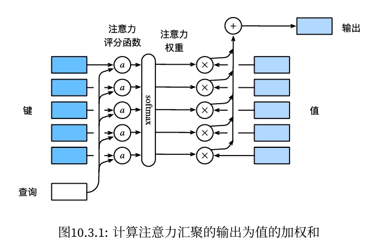
原理：
- 本质上
Attention机制是Source中元素的Value值进行加权求和，而Query和Key用来计算对应Value的权重系数； - 首先利用
注意力分数函数计算Query和Key的相似度 (注意力分数)； - 利用
softmax计算相似度 (注意力分数)后，得到加权数值(注意力权重，query和key越相似该权重越大，即获取的注意力越大)； - 利用注意力权重对value进行
加权求和，即最终的注意力值。
解释：
| 注释 | 公式 |
|---|---|
| 注意力评分函数 | $a(q, k)$ |
| 注意力权重 | $softmax( a(q, k) )$ |
| 注意力 | $softmax( a(q, k) ) * v$ |
注意力评分函数：
- 加性注意力 (Additive Attention)
- 缩放点积注意力 (Scaled Dot-Product Attention)
- 乘性注意力 (Multiplicative Attention)
- 位置注意力 (Location-based Attention)
- 线性注意力 (Linear Attention)
- 自适应注意力 (Adaptive Attention)
- 稀疏注意力 (Sparse Attention)
总结:
- 不同的注意力机制在计算注意力分数时采用了不同的方法，以适应不同的任务需求和计算资源。选择合适的注意力机制可以提高模型的性能和效率。随着研究的不断深入，新的注意力机制也在不断涌现，为各种应用场景提供了更多的选择。
11.5.3.1. 加性注意力 (Additive Attention)-计算q、k相似度¶
加性注意力最早由 Bahdanau 等人在 2014 年的论文中提出，通常用于序列到序列模型中。其核心思想是通过一个小型的前馈神经网络来计算注意力权重。 计算过程:
- 对于给定的查询（query）和键（key），首先通过线性变换将它们映射到相同的维度。
- 将映射后的查询和键相加，并通过一个激活函数（如 tanh）进行非线性变换。
- 使用一个可学习的参数向量对变换后的结果进行线性变换，得到注意力得分。
- 对所有注意力得分进行 softmax 操作，得到注意力权重。
公式：$\mathrm{score}(q,k)=v^T\cdot\mathrm{tanh}(W_qq+W_kk)$，其中，$W_q$和$W_k$是可学习的线性变换矩阵，$v$是可学习的参数向量。
优点：
- 能够处理不同维度的查询和键。
- 适用于较小的序列长度。
缺点：
- 计算复杂度较高，尤其在序列长度较大时。
动手学深度学习：
- 当
查询和键是不同长度的矢量时，可以使用加性注意力作为评分函数。 - 注意力评分函数：$a(\mathbf{q},\mathbf{k})=\mathbf{w}_v^\top\tanh(\mathbf{W}_q\mathbf{q}+\mathbf{W}_k\mathbf{k})\in\mathbb{R}$
- $\mathbf{q}\in\mathbb{R}^q\text{和 键}\mathbf{k}\in\mathbb{R}^k,$
- $\mathbf{W}_q\in\mathbb{R}^{h\times q}\mathrm{、}\mathbf{W}_k\in\mathbb{R}^{h\times k}\text{和 }\mathbf{w}_v\in\mathbb{R}^h$,
投影到相同维度h上 有可学习的参数，效果会好一些。

- 使用:
# summary
# Input:
# queries: (batch_size, num_query, query_size)
# keys: (batch_size, k_v_pair_num, key_size)
# values: (batch_size, k_v_pair_num, value_size)
# query_size, key_size, value_size 可以不一样
# Output: (batch_size, num_query, value_size)
- 参考案例-李沐
- 带有掩码 (masked) 和Dropout
import torch
from torch import nn
from d2l import torch as d2l
def sequence_mask(X, valid_len, value=0):
"""
为序列生成掩码，将无效/填充位置的值替换为指定值
参数:
X: 输入张量，形状为 (batch_size, seq_len, ...)
valid_len: 每个序列的有效长度，形状为 (batch_size,)
value: 用于替换无效位置的值，默认为0
返回:
掩码后的张量，形状与输入X相同
实现步骤:
1. 获取序列最大长度maxlen
2. 生成掩码矩阵:
- torch.arange生成[0,1,...,maxlen-1]
- [None,:]增加batch维度变为(1,maxlen)
- valid_len[:,None]将(batch_size,)变为(batch_size,1)
- 比较生成(batch_size,maxlen)的布尔掩码
3. 将~mask位置(无效位置)的值替换为value
"""
# 获取序列最大长度
maxlen = X.size(1)
# 生成掩码矩阵: (batch_size, maxlen)
# 其中True表示有效位置,False表示无效位置
mask = torch.arange((maxlen), dtype=torch.float32, device=X.device)[None, :] < valid_len[:, None]
# 将无效位置(~mask)替换为value，取反
X[~mask] = value
return X
#@save
def masked_softmax(X, valid_lens):
"""
通过在最后一个轴上掩蔽元素来执行softmax操作
参数:
X: 3D张量, shape为(batch_size, seq_len, feature_dim)
valid_lens: 1D或2D张量,指定每个序列的有效长度
- 1D时shape为(batch_size,),表示每个batch中序列的有效长度
- 2D时shape为(batch_size, seq_len),可以为每个序列的每个位置指定不同的有效长度
返回:
经过masked softmax后的张量,shape与输入X相同
"""
# 如果没有指定valid_lens,直接在最后一维上做softmax
if valid_lens is None:
return nn.functional.softmax(X, dim=-1)
else:
shape = X.shape
# 如果valid_lens是1D,将其重复扩展为2D
if valid_lens.dim() == 1:
valid_lens = torch.repeat_interleave(valid_lens, shape[1])
else:
# 如果是2D,将其展平为1D
valid_lens = valid_lens.reshape(-1)
# 使用sequence_mask生成掩码矩阵
# 将X重塑为2D:(batch_size * seq_len, feature_dim)
# 将超出有效长度的位置用一个很大的负值(-1e6)替换,使其softmax后接近0
X = sequence_mask(X.reshape(-1, shape[-1]), valid_lens, value=-1e6)
# 重塑回原始形状并做softmax
return nn.functional.softmax(X.reshape(shape), dim=-1)
#@save
class AdditiveAttention(nn.Module):
"""加性注意力"""
def __init__(self, key_size, query_size, num_hiddens, dropout, **kwargs):
super(AdditiveAttention, self).__init__(**kwargs)
self.W_k = nn.Linear(key_size, num_hiddens, bias=False) # (key_size, num_hiddens)
self.W_q = nn.Linear(query_size, num_hiddens, bias=False) # (query_size, num_hiddens)
self.w_v = nn.Linear(num_hiddens, 1, bias=False) # (num_hiddens, 1)
self.dropout = nn.Dropout(dropout)
def forward(self, queries, keys, values, valid_lens=None):
queries, keys = self.W_q(queries), self.W_k(keys)
# queries: (batch_size, num_query, num_hiddens)
# keys: (batch_size, k_v_pair_num, num_hiddens)
# 在维度扩展后，
# queries的形状： (batch_size，num_query， 1， num_hiddens)
# key的形状： (batch_size， 1， k_v_pair_num， num_hiddens)
# 使用广播方式进行求和 (batch_size, num_query, 1, num_hiddens) + (batch_size, 1, k_v_pair_num, num_hiddens) = (batch_size, num_query, k_v_pair_num, num_hiddens)
features = queries.unsqueeze(2) + keys.unsqueeze(1)
features = torch.tanh(features)
# features的形状：(batch_size, num_query, k_v_pair_num, num_hiddens)
# self.w_v: (num_hiddens, 1)
# scores的形状：(batch_size，num_query，k_v_pair_num, 1)
# 移除最后一个维度squeeze(-1)
# scores的形状：(batch_size，num_query，k_v_pair_num)
scores = self.w_v(features).squeeze(-1)
# 注意力权重
# 使用masked_softmax计算注意力权重, 有效长度为valid_lens
# attention_weights的形状：(batch_size, num_query, k_v_pair_num)
self.attention_weights = masked_softmax(scores, valid_lens)
# values的形状：(batch_size，k_v_pair_num，value_size)
return torch.bmm(self.dropout(self.attention_weights), values)
batch_size = 2
num_query, query_size = 1, 20
k_v_pair_num, key_size = 10, 2
value_size = 4
# 查询的小批量 (batch_size, num_query, query_size)
queries = torch.normal(mean=0, std=1, size=(batch_size, num_query, query_size))
# 键的小批量 (batch_size, k_v_pair_num, key_size)
keys = torch.ones(size=(batch_size, k_v_pair_num, key_size))
# 值的小批量 (batch_size, k_v_pair_num, value_size)
values = torch.randn(size=(batch_size, k_v_pair_num, value_size))
# 每个batch中序列的有效长度 (batch_size,)
valid_lens = torch.tensor([2, 6]) # 每个batch中序列的有效长度
attention = AdditiveAttention(key_size=2, query_size=20, num_hiddens=8, dropout=False)
attention.eval()
attention(queries=queries, keys=keys, values=values, valid_lens=valid_lens).shape
# summary
# Input:
# queries: (batch_size, num_query, query_size)
# keys: (batch_size, k_v_pair_num, key_size)
# values: (batch_size, k_v_pair_num, value_size)
# Output: (batch_size, num_query, value_size)
torch.Size([2, 1, 4])
- (详细) 从头手写-逐步分析“加性注意力机制代码”
- 无掩码和Dropout
import torch
########################################################
# 测试数据
########################################################
batch_size = 2
num_query = 1
query_size = 20 # 一个query的向量长度
num_key = 10 # “键－值”对的个数
key_size = 2 # 一个key的向量长度
num_value = num_key # “键－值”对的个数
value_size = 4 # 一个value的向量长度
queries = torch.randn(size=(batch_size, num_query, query_size))
print('queries size: ', queries.size())
# batch_size, num_query, query_size
# 2, 1, 20
keys = torch.randn(size=(batch_size, num_key, key_size))
print('keys size: ', keys.size())
# batch_size, kv_pair_num, key_size
# 2, 10, 2
values = torch.randn(size=(batch_size, num_value, value_size))
print('values size: ', values.size())
# batch_size, kv_pair_num, value_size
# 2, 10, 4
########################################################
# 投影 (可学习的参数W)
########################################################
## 全部投影到value_size一致的维度，便于计算
num_hiddens = value_size
bias = False
W_q = nn.Linear(query_size, num_hiddens, bias=bias) # 20 , 4
W_k = nn.Linear(key_size, num_hiddens, bias=bias) # 2, 4
w_v = nn.Linear(num_hiddens, 1, bias=bias) # 4, 1
Q = W_q(queries) # (batch_size，查询的个数，num_hidden) 3维
# 2, 1, 20 * 20, 4 = 2, 1, 4
Q = Q.unsqueeze(2) # (batch_size，查询的个数，1，num_hidden) 插入一个维度 (重要) 4维
# 2, 1, (1), 4 # 为什么要插入一个维度？便于后续做广播
print('Q size: ', Q.size())
K = W_k(keys) # (batch_size，“键－值”对的个数，num_hiddens) 3维
# 2, 10, 2 * 2, 4 = 2, 10, 4
K = K.unsqueeze(1) # (batch_size，1，“键－值”对的个数，num_hiddens) 插入一个维度 (重要) 4维度
# 2, (1), 10, 4 # 为什么要插入一个维度？便于后续做广播
print('K size: ', K.size())
features = Q + K # 自动做广播后做加法 (重要) (2,1,(1),4) + (2,(1),10,4) = (2,1,10,4)
# 2, 1, 10, 4 # (batch_size，查询个数，“键－值”对的个数，num_hiddens) 广播后 (2,1,(10),4)+ (2,(1),10,4) = (2,1,10,4)
print('features size: ', features.size())
features = torch.tanh(features)
# 2, 1, 10, 4
print('features size (tanh): ', features.size())
scores = w_v(features) # 自动做广播后做乘法 (2,1,10,4) @ ( 4,1) = (2,1,10,1)
# (2,1,10,4) @ (2,1,4,1) = (2,1,10,1)
# 2, 1, 10, 1
print('scores size: ', scores.size())
# w_v仅有一个输出，因此从形状中移除最后那个维度
# scores的形状：(batch_size，查询的个数，“键-值”对的个数)
scores = scores.squeeze(-1)
# 2, 1, 10
print('scores size squeeze: ', scores.size())
attention_weights = torch.softmax(scores, dim=-1)
# 2, 1, 10
print('attention_weights: ', attention_weights.size())
# attention_weights
attention = torch.bmm(attention_weights, values) # (2,1,10) @ ( 10,4) = (2,1,4)
# (2,1,10) @ (2,10,4) = (2,1,4) 广播后
print('attention: ', attention.size())
# batch_size, num_query, value_size
# 2, 1, 4
# summary
# Input:
# queries: (batch_size, num_query, query_size)
# keys: (batch_size, k_v_pair_num, key_size)
# values: (batch_size, k_v_pair_num, value_size)
# Output: (batch_size, num_query, value_size)
# 添加dropout
dropout = nn.Dropout(p=0.1) # 0.1的概率失活
attention_weights_droputed = dropout(attention_weights)
# attention_weights_droputed.shape = 2, 1, 10 dropout后不改变attention_weights的形状
print('attention_wights_droputed size: ', attention_weights_droputed.size())
attention_droputed = torch.bmm(attention_weights_droputed, values)
attention_droputed.shape
queries size: torch.Size([2, 1, 20]) keys size: torch.Size([2, 10, 2]) values size: torch.Size([2, 10, 4]) Q size: torch.Size([2, 1, 1, 4]) K size: torch.Size([2, 1, 10, 4]) features size: torch.Size([2, 1, 10, 4]) features size (tanh): torch.Size([2, 1, 10, 4]) scores size: torch.Size([2, 1, 10, 1]) scores size squeeze: torch.Size([2, 1, 10]) attention_weights: torch.Size([2, 1, 10]) attention: torch.Size([2, 1, 4]) attention_wights_droputed size: torch.Size([2, 1, 10])
torch.Size([2, 1, 4])
- 注意力权重可视化
# attention_weights的形状：(batch_size, num_query, k_v_pair_num)
attention.attention_weights
tensor([[[0.5000, 0.5000, 0.0000, 0.0000, 0.0000, 0.0000, 0.0000, 0.0000,
0.0000, 0.0000]],
[[0.1667, 0.1667, 0.1667, 0.1667, 0.1667, 0.1667, 0.0000, 0.0000,
0.0000, 0.0000]]], grad_fn=<SoftmaxBackward0>)
import matplotlib.pyplot as plt
import torch
plt.figure()
for batch in range(attention.attention_weights.shape[0]):
# plt.figure(figsize=(3, 3))
plt.subplot(3, 1, batch + 1)
plt.imshow(attention.attention_weights[batch, :].detach().numpy())
plt.title(f'batch {batch}')
plt.xlabel('k-v pair')
plt.ylabel('query')
plt.colorbar()
plt.show()
![No description has been provided for this image]()
![No description has been provided for this image]()
# attention_weights的形状：(batch_size, num_query, k_v_pair_num)
attention_weights
tensor([[[0.1014, 0.0847, 0.0880, 0.1066, 0.0995, 0.1215, 0.0694, 0.0967,
0.1058, 0.1264]],
[[0.0989, 0.0811, 0.0944, 0.0861, 0.0983, 0.1055, 0.1241, 0.0852,
0.1245, 0.1018]]], grad_fn=<SoftmaxBackward0>)
import matplotlib.pyplot as plt
plt.figure()
for batch in range(attention_weights.shape[0]):
plt.subplot(3, 1, batch + 1)
plt.imshow(attention_weights[batch, :].detach().numpy())
plt.title(f'batch {batch}')
plt.xlabel('k-v pair')
plt.ylabel('query')
plt.colorbar()
plt.show()
![No description has been provided for this image]()
![No description has been provided for this image]()
11.5.3.2. 缩放点积注意力 (Scaled Dot-Product Attention)-计算q、k相似度¶
缩放点积注意力是由 Vaswani 等人在 2017 年的 Transformer 论文中提出的。它通过点积计算注意力得分，并对得分进行缩放以提高数值稳定性。 计算过程：
- 对于给定的查询和键，计算它们的点积。
- 将点积结果除以键的维度的平方根，以避免数值过大。
- 对缩放后的得分进行 softmax 操作，得到注意力权重。
公式：$\mathrm{Attention}(Q,K,V)=\mathrm{softmax} (\frac{QK^T}{\sqrt{d_k}}) V$, 其中，$d_k$是键的维度。
优点：
- 计算效率高，适合并行化。
- 在大多数现代深度学习模型中广泛使用。
缺点：
- 对于不同维度的查询和键，需要进行额外的线性变换。
- q和k的长度
一致，为d - 注意力评分函数：$a(\mathbf{q},\mathbf{k})=\mathbf{q}^\top\mathbf{k}/\sqrt{d}$
- 向量版本注意力权重：$\mathrm{softmax}\left(\frac{\mathrm{QK}^\top}{\sqrt{d}}\right)\mathbf{V}\in\mathbb{R}^{n\times v}$
- $\text{查询}\mathbf{Q}\in\mathbb{R}^{n\times d}\text{、键}\mathbf{K}\in\mathbb{R}^{m\times d}\text{和 值}\mathbf{V}\in\mathbb{R}^{m\times v}$
无可学习参数
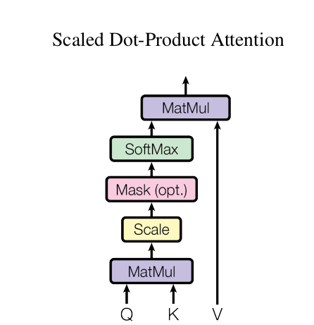
- 使用：
# summary
# Input:
# queries: (batch_size, num_query, query_size)
# keys: (batch_size, k_v_pair_num, key_size)
# values: (batch_size, k_v_pair_num, value_size)
# query_size, key_size必须一样，最好是等于value_size
# Output: (batch_size, num_query, value_size)
- PyTorch简洁实现
query_size = key_size = value_size
import torch
from torch import nn
batch_size, num_query, query_size = 2, 1, 4
k_v_pair_num, key_size = 10, 4
value_size = 4
queries = torch.randn(size=(batch_size, num_query, query_size))
keys = torch.randn(size=(batch_size, k_v_pair_num, key_size))
values = torch.randn(size=(batch_size, k_v_pair_num, value_size))
# num_heads = 1
att = nn.MultiheadAttention(embed_dim=value_size, num_heads=1, batch_first=True)
out, weights = att(queries, keys, values)
out.shape
torch.Size([2, 1, 4])
- 案例-李沐
- 掩码 (masked) 和Dropout
import torch
from torch import nn
import math
#@save
class DotProductAttention(nn.Module):
"""缩放点积注意力"""
def __init__(self, query_size, key_size, value_size, num_hiddens, dropout, **kwargs):
super(DotProductAttention, self).__init__(**kwargs)
self.dropout = nn.Dropout(dropout)
# queries的形状：(batch_size，查询的个数，d)
self.W_q = nn.Linear(query_size, num_hiddens)
# keys的形状：(batch_size，“键－值”对的个数，d)
self.W_k = nn.Linear(key_size, num_hiddens)
# values的形状：(batch_size，“键－值”对的个数，值的维度)
self.w_v = nn.Linear(value_size, num_hiddens)
def forward(self, queries, keys, values, valid_lens=None):
queries, keys, values = self.W_q(queries), self.W_k(keys), self.w_v(values)
# queries: (batch_size, num_query, num_hiddens)
# keys: (batch_size, k_v_pair_num, num_hiddens)
# values: (batch_size, k_v_pair_num, value_size)
d = queries.shape[-1]
# 设置transpose_b=True为了交换keys的最后两个维度
# (batch_size, num_query, num_hiddens) @ (batch_size, num_hiddens, k_v_pair_num) = (batch_size, num_query, k_v_pair_num)
scores = torch.bmm(queries, keys.transpose(1,2)) / math.sqrt(d)
# valid_lens的形状:(batch_size，)或者(batch_size，查询的个数)
# 使用masked_softmax计算注意力权重
# attention_weights的形状：(batch_size, num_query, k_v_pair_num)
self.attention_weights = masked_softmax(scores, valid_lens)
# (batch_size, num_query, k_v_pair_num) @ (batch_size, k_v_pair_num, value_size) = (batch_size, num_query, value_size)
return torch.bmm(self.dropout(self.attention_weights), values)
batch_size, num_query, query_size = 2, 1, 4
k_v_pair_num, key_size = 10, 4
value_size = 4
num_hiddens = 8
dropout = 0.1
queries = torch.randn(size=(batch_size, num_query, query_size))
keys = torch.randn(size=(batch_size, k_v_pair_num, key_size))
values = torch.randn(size=(batch_size, k_v_pair_num, value_size))
attention = DotProductAttention(query_size=query_size, key_size=key_size, value_size=value_size, num_hiddens=num_hiddens, dropout=dropout)
attention.eval()
attention(queries, keys, values, valid_lens).shape
torch.Size([2, 1, 8])
- (详细) 从头手写
- 无掩码和Dropout
from torch import nn
# 示例数据
batch_size = 2
num_query = 1
query_size = 4 # 一个query的向量长度，d
num_key = 10 # “键－值”对的个数，m
key_size = 4 # 一个key的向量长度，d
num_value = num_key # “键－值”对的个数，m
value_size = 4 # 一个value的向量长度，v
queries = torch.randn(size=(batch_size, num_query, query_size))
print('queries size: ', queries.size())
# (batch_size, num_query, query_size)
# (2, 1, 20)
keys = torch.randn(size=(batch_size, num_key, key_size))
print('keys size: ', keys.size())
# (batch_size, num_key, key_size)
# (2, 10, 20)
values = torch.randn(size=(batch_size, num_value, value_size))
print('values size: ', values.size())
# (batch_size, num_value, value_size)
# (2, 10, 4)
features = (queries @ keys.transpose(1, 2))
# features = torch.bmm(queries, keys.transpose(1, 2)) # 同上，都可以
# (2, 1, 20) @ (2, 20, 10) = (2, 1, 10)
print(f'features size: {features.shape}')
scores = features / torch.sqrt(torch.tensor(queries.shape[2]))
# (2, 1, 10)
print(f'scores size: {scores.shape}')
attention_weights = torch.softmax(scores, dim=-1)
# (2, 1, 10) / 标量 = (2, 1, 10)
print(f'attention_weights size: {attention_weights.shape}')
attention = torch.bmm(attention_weights, values)
# (2, 1, 4)
print(f'attention size: {attention.shape}')
# summary
# Input:
# queries: (batch_size, num_query, query_size)
# keys: (batch_size, k_v_pair_num, key_size)
# values: (batch_size, k_v_pair_num, value_size)
# Output: (batch_size, num_query, value_size)
queries size: torch.Size([2, 1, 4]) keys size: torch.Size([2, 10, 4]) values size: torch.Size([2, 10, 4]) features size: torch.Size([2, 1, 10]) scores size: torch.Size([2, 1, 10]) attention_weights size: torch.Size([2, 1, 10]) attention size: torch.Size([2, 1, 4])
11.5.4. 自注意力机制-q、k和v相同¶
自注意力机制：就是用同一个X分别于W_q、W_k和W_v矩阵相乘得到Q、K和V 向量/矩阵。因为用的是同一个X同时作为q、k和v，所以得名为 自注意力 。
- 使用：
# self-attention: queries = keys = values
# Input:
# queries: (batch_size, num_query, query_size)
# keys: (batch_size, k_v_pair_num, key_size)
# values: (batch_size, k_v_pair_num, value_size)
# Output: (batch_size, num_query, value_size)
import torch
from torch import nn
import torch.utils.data as data
import torchvision
import time
device = torch.device("cuda:0" if torch.cuda.is_available() else "cpu")
# 数据准备
dbs = './Pytorch_datasets/'
train_dataset = torchvision.datasets.MNIST(
root=dbs,
train=True,
download=True,
transform=torchvision.transforms.Compose(
[
torchvision.transforms.ToTensor(),
# torchvision.transforms.Normalize((0.1307,), (0.3081,))
]
)
)
test_dataset = torchvision.datasets.MNIST(
root=dbs,
train=False,
download=True,
transform=torchvision.transforms.Compose(
[
torchvision.transforms.ToTensor(),
# torchvision.transforms.Normalize((0.1307,), (0.3081,))
]
)
)
# 迭代型数据方式
train_iter = data.DataLoader(dataset=train_dataset, batch_size=128, shuffle=True)
# test_iter = data.DataLoader(dataset=test_dataset) # test不需要batch训练
# 网络结构1:CNN
class CNNMNISTModel(nn.Module):
def __init__(self):
super().__init__()
self.network = nn.Sequential(
nn.Flatten(),
nn.Linear(28*28, 1024), nn.ReLU(),
nn.Linear(1024, 10), nn.Softmax()
)
def forward(self, X):
return self.network(X)
# 构建模型2:Additive attention
class SelfAttentionMNISTModel(nn.Module):
def __init__(self, attention_type):
super().__init__()
# 输入层
self.input = nn.Sequential(nn.Flatten(), nn.Linear(28 * 28, 128), nn.ReLU())
# 注意力层
if attention_type == 'add':
self.attention = AdditiveAttention(query_size=128, key_size=128, num_hiddens=128, dropout=False)
elif attention_type == 'dot':
self.attention = DotProductAttention(query_size=128, key_size=128, value_size=128, num_hiddens=128, dropout=False)
else:
raise ValueError(f"Invalid attention type: {attention_type}")
# 输出层
self.fc2 = nn.Linear(128, 10)
def forward(self, x):
x = self.input(x)
x = x.unsqueeze(1) # dim=1增加一个维度，即表示一个query维度是(1, 768)
# 自注意力即q、k、v相同
# 计算注意力, 输出维度是(batch_size, num_query, value_size)
x = self.attention(queries=x, keys=x, values=x).squeeze(1) # dim=1的维度取消，只剩768
x = self.fc2(x)
return x
# 训练过程封装
def train_steps(epochs, train_dataset, train_iter, test_dataset, net, loss_fn, opt, device):
'''
参数记录
epochs = epochs # epoch
train_dataset = train_dataset # 全部train数据集
train_iter = train_iter # batch之后的train数据集
test_dataset = test_dataset # 全部test数据集
net = net # 网络模型
loss_fn = loss_fn # 损失函数
opt = opt # 优化器
device = device # device GPU/CPU
'''
print('='*100, '\n', f"Runing on {device}", '\n','='*100)
train_all_data_gpu = train_dataset.data.to(device)
train_all_targets_gpu = train_dataset.targets.to(device)
test_all_data_gpu = test_dataset.data.to(device)
test_all_targets_gpu = test_dataset.targets.to(device)
net = nn.DataParallel(module=net)
# net = nn.DataParallel(module=net, device_ids=[0, 1], output_device=[0]) # 多GPU并行计算，等价于net = nn.DataParallel(module=net)
net.to(device)
# 开始迭代
start = time.time()
for epoch in range(epochs):
for batch_record in train_iter:
X, y = batch_record # 分配X, y
X, y = X.to(device), y.to(device) # 复制到device（GPU/CPU）上
opt.zero_grad() # 默认是累加，此处从新求导
y_hat = net(X) # 计算y_hat
loss = loss_fn(y_hat, y)# 计算loss
loss.backward() # 计算梯度
opt.step() # 更新网络参数
net.eval()
with torch.no_grad(): # with下内容不进行grad计算，可以节省运算和内存
train_loss = loss_fn(net(train_all_data_gpu/256), train_all_targets_gpu)
# print(train_loss)
train_acc_cmp = net(train_all_data_gpu/256).argmax(axis=1) == train_all_targets_gpu
train_acc = (train_acc_cmp.sum() / len(train_acc_cmp)) * 100
# print(train_acc)
test_acc_cmp = net(test_all_data_gpu/256).argmax(axis=1) == test_all_targets_gpu
test_acc = (test_acc_cmp.sum() / len(test_acc_cmp)) * 100
# print(test_acc)
print(f"epoch {epoch+1}/{epochs}: train_loss={train_loss}, train_acc={train_acc}, test_acc={test_acc}")
stop = time.time()
seconds = stop - start
def convert_seconds(seconds):
days = seconds // (24 * 3600)
hours = (seconds % (24 * 3600)) // 3600
minutes = (seconds % 3600) // 60
remaining_seconds = seconds % 60
return days, hours, minutes, remaining_seconds
days, hours, minutes, remaining_seconds = convert_seconds(seconds)
print('='*100, '\n', f"Total：{days} d/ {hours} h/ {minutes} m/ {remaining_seconds} s")
# return (train_loss, train_acc, test_acc)
return None
# CNN
net = CNNMNISTModel()
loss_fn = nn.CrossEntropyLoss()
opt = torch.optim.SGD(params=net.parameters(), lr=0.5)
train_steps(
epochs=10,
train_dataset=train_dataset,
train_iter=train_iter,
test_dataset=test_dataset,
net=net,
loss_fn=loss_fn,
opt=opt,
device=device
)
==================================================================================================== Runing on cuda:0 ==================================================================================================== epoch 1/10: train_loss=1.6279242038726807, train_acc=84.27833557128906, test_acc=84.61000061035156 epoch 2/10: train_loss=1.5473763942718506, train_acc=92.55500030517578, test_acc=92.8499984741211 epoch 3/10: train_loss=1.5314202308654785, train_acc=93.88166809082031, test_acc=93.72999572753906 epoch 4/10: train_loss=1.5217000246047974, train_acc=94.71333312988281, test_acc=94.57999420166016 epoch 5/10: train_loss=1.5153697729110718, train_acc=95.24000549316406, test_acc=94.8699951171875 epoch 6/10: train_loss=1.5102185010910034, train_acc=95.73332977294922, test_acc=95.25 epoch 7/10: train_loss=1.5050678253173828, train_acc=96.20166778564453, test_acc=95.58999633789062 epoch 8/10: train_loss=1.5006235837936401, train_acc=96.61000061035156, test_acc=96.16999816894531 epoch 9/10: train_loss=1.4976444244384766, train_acc=96.913330078125, test_acc=96.23999786376953 epoch 10/10: train_loss=1.4948958158493042, train_acc=97.20166778564453, test_acc=96.48999786376953 ==================================================================================================== Total：0.0 d/ 0.0 h/ 1.0 m/ 4.458106756210327 s
# AdditiveAttention
net = SelfAttentionMNISTModel(attention_type='add')
loss_fn = nn.CrossEntropyLoss()
opt = torch.optim.SGD(params=net.parameters(), lr=0.5)
train_steps(
epochs=10,
train_dataset=train_dataset,
train_iter=train_iter,
test_dataset=test_dataset,
net=net,
loss_fn=loss_fn,
opt=opt,
device=device
)
==================================================================================================== Runing on cuda:0 ==================================================================================================== epoch 1/10: train_loss=0.16107121109962463, train_acc=95.36499786376953, test_acc=95.27999877929688 epoch 2/10: train_loss=0.09944581240415573, train_acc=97.13999938964844, test_acc=96.66999816894531 epoch 3/10: train_loss=0.07719363272190094, train_acc=97.74166870117188, test_acc=97.13999938964844 epoch 4/10: train_loss=0.06208990514278412, train_acc=98.1866683959961, test_acc=97.41999816894531 epoch 5/10: train_loss=0.0564107820391655, train_acc=98.36666870117188, test_acc=97.27999877929688 epoch 6/10: train_loss=0.04126492142677307, train_acc=98.84166717529297, test_acc=97.50999450683594 epoch 7/10: train_loss=0.038705650717020035, train_acc=98.92666625976562, test_acc=97.78999328613281 epoch 8/10: train_loss=0.02942928485572338, train_acc=99.23999786376953, test_acc=97.97999572753906 epoch 9/10: train_loss=0.035614024847745895, train_acc=98.95833587646484, test_acc=97.66999816894531 epoch 10/10: train_loss=0.02169625461101532, train_acc=99.49166870117188, test_acc=97.89999389648438 ==================================================================================================== Total：0.0 d/ 0.0 h/ 1.0 m/ 9.748560905456543 s
# DotProductAttention
net = SelfAttentionMNISTModel(attention_type='dot')
loss_fn = nn.CrossEntropyLoss()
opt = torch.optim.SGD(params=net.parameters(), lr=0.5)
train_steps(
epochs=10,
train_dataset=train_dataset,
train_iter=train_iter,
test_dataset=test_dataset,
net=net,
loss_fn=loss_fn,
opt=opt,
device=device
)
==================================================================================================== Runing on cuda:0 ==================================================================================================== epoch 1/10: train_loss=0.19046252965927124, train_acc=94.09833526611328, test_acc=93.47999572753906 epoch 2/10: train_loss=0.07349269837141037, train_acc=97.84166717529297, test_acc=97.37999725341797 epoch 3/10: train_loss=0.05895423889160156, train_acc=98.16999816894531, test_acc=97.55999755859375 epoch 4/10: train_loss=0.04070112481713295, train_acc=98.75333404541016, test_acc=97.93999481201172 epoch 5/10: train_loss=0.039311956614255905, train_acc=98.73999786376953, test_acc=97.57999420166016 epoch 6/10: train_loss=0.039534058421850204, train_acc=98.73833465576172, test_acc=97.30999755859375 epoch 7/10: train_loss=0.022449102252721786, train_acc=99.34666442871094, test_acc=97.89999389648438 epoch 8/10: train_loss=0.029125791043043137, train_acc=99.05000305175781, test_acc=97.68999481201172 epoch 9/10: train_loss=0.037722766399383545, train_acc=98.71666717529297, test_acc=97.25999450683594 epoch 10/10: train_loss=0.020519915968179703, train_acc=99.30333709716797, test_acc=97.3499984741211 ==================================================================================================== Total：0.0 d/ 0.0 h/ 1.0 m/ 9.772022008895874 s
11.5.5. 多头注意力机制-h个q、k和v对¶
上述只求一次注意力的过程可以叫做单头注意力。多头注意力就是对同样的Q, K, V求多次注意力，并行计算h个得到h个不同的attention，再把这些不同的h个attention连接起来得到最终的attentions，每一个attention都是一个head（头），总共有h个head（头）。

在实现过程中通常选择缩放点积注意力作为每一个注意力头，除以根号d可以使计算数值减小。
# summary
# Input:
# queries: (batch_size, num_query, query_size)
# keys: (batch_size, k_v_pair_num, key_size)
# values: (batch_size, k_v_pair_num, value_size)
# Output: (batch_size, num_query, value_size)
# 先 transpose_input()
# 后 transpose_output()
# 终 self.W_o = nn.Linear(num_hiddens, num_hiddens, bias=exitBias) # 最后concat所有head的结果 (其实就是投影)
- 简洁实现
query_size = key_size = value_size = d
nn.MultiheadAttention(embed_dim=value_size, num_heads=num_heads, batch_first=True)
import torch
import torch.nn as nn
# 定义参数
batch_size = 2
query_num, query_size = 1, 4
k_v_pair_num, key_size = 10, 4
value_size = 4
num_heads = 2
# 创建多头注意力模块
multihead_attention = nn.MultiheadAttention(embed_dim=value_size, num_heads=num_heads, batch_first=True)
# 使用缩放点积注意力机制，所以 query_size = key_size = value_size = d
# 创建输入张量
# 输入形状为 (批次大小, 序列长度, 嵌入维度)
query = torch.rand(batch_size, query_num, query_size)
key = torch.rand(batch_size, k_v_pair_num, key_size)
value = torch.rand(batch_size, k_v_pair_num, value_size)
# 可选的注意力掩码
# mask = torch.zeros(batch_size, seq_length, seq_length).type(torch.bool)
# 计算多头注意力
# 如果需要掩码，可以传入 mask 参数
output, attention_weights = multihead_attention(query, key, value)
print("输出形状:", output.shape) # 输出形状: (batch_size, query_num, value_size)
print("注意力权重形状:", attention_weights.shape) # 注意力权重形状: (batch_size, num_query, k_v_pair_num)
输出形状: torch.Size([2, 1, 4]) 注意力权重形状: torch.Size([2, 1, 10])
- 案例-李沐 (修改)
- 去除掩码和Dropout
import torch
from torch import nn
import math
# 加性注意力
class AdditiveAttentionForMultiHeadAttention(nn.Module):
"""加性注意力"""
def __init__(self, num_hiddens, dropout):
super().__init__()
self.dropout = nn.Dropout(dropout)
self.w_v = nn.Linear(num_hiddens, 1)
def forward(self, queries, keys, values, valid_lens=None):
# queries, keys = self.W_q(queries), self.W_k(keys)
# queries: (batch_size, num_query, num_hiddens)
# keys: (batch_size, k_v_pair_num, num_hiddens)
# 在维度扩展后，
# queries的形状： (batch_size，num_query， 1， num_hiddens)
# key的形状： (batch_size， 1， k_v_pair_num， num_hiddens)
# 使用广播方式进行求和 (batch_size, num_query, 1, num_hiddens) + (batch_size, 1, k_v_pair_num, num_hiddens) = (batch_size, num_query, k_v_pair_num, num_hiddens)
features = queries.unsqueeze(2) + keys.unsqueeze(1)
features = torch.tanh(features)
# features的形状：(batch_size, num_query, k_v_pair_num, num_hiddens)
# self.w_v: (num_hiddens, 1)
# scores的形状：(batch_size，num_query，k_v_pair_num, 1)
# 移除最后一个维度squeeze(-1)
# scores的形状：(batch_size，num_query，k_v_pair_num)
scores = self.w_v(features).squeeze(-1)
# 注意力权重
# 使用masked_softmax计算注意力权重, 有效长度为valid_lens
# attention_weights的形状：(batch_size, num_query, k_v_pair_num)
self.attention_weights = masked_softmax(scores, valid_lens)
# values的形状：(batch_size，k_v_pair_num，value_size)
return torch.bmm(self.dropout(self.attention_weights), values)
# 点积注意力
class DotProductAttentionForMultiHeadAttention(nn.Module):
def __init__(self, dropout=False):
super().__init__()
self.dropout = nn.Dropout(dropout)
def forward(self, queries, keys, values, valid_lens=None):
# queries, keys, values = self.W_q(queries), self.W_k(keys), self.w_v(values)
# queries: (batch_size, num_query, num_hiddens)
# keys: (batch_size, k_v_pair_num, num_hiddens)
# values: (batch_size, k_v_pair_num, value_size)
d = queries.shape[-1]
# 设置transpose_b=True为了交换keys的最后两个维度
# (batch_size, num_query, num_hiddens) @ (batch_size, num_hiddens, k_v_pair_num) = (batch_size, num_query, k_v_pair_num)
scores = torch.bmm(queries, keys.transpose(1,2)) / math.sqrt(d)
# valid_lens的形状:(batch_size，)或者(batch_size，查询的个数)
# 使用masked_softmax计算注意力权重
# attention_weights的形状：(batch_size, num_query, k_v_pair_num)
self.attention_weights = masked_softmax(scores, valid_lens)
# (batch_size, num_query, k_v_pair_num) @ (batch_size, k_v_pair_num, value_size) = (batch_size, num_query, value_size)
return torch.bmm(self.dropout(self.attention_weights), values)
# 多头注意力机制
class MultiHeadAttention(nn.Module):
def __init__(self, num_heads, query_size, key_size, num_hiddens, value_size, attention_type, dropout=False):
super().__init__()
self.num_heads = num_heads
self.W_q = nn.Linear(query_size, num_hiddens)
self.W_k = nn.Linear(key_size, num_hiddens)
self.W_v = nn.Linear(value_size, num_hiddens)
if num_hiddens % num_heads != 0:
# raise ValueError(f'num_hiddens must be divisible by num_heads, but got num_hiddens={num_hiddens} and num_heads={num_heads}')
raise ValueError(f'num_hiddens必须能整除num_heads，但是接受的num_hiddens={num_hiddens}，num_heads={num_heads}')
# 选择注意力机制
if attention_type == 'add':
# self.attention = AdditiveAttention(query_size=query_size, key_size=key_size, num_hiddens=num_hiddens, dropout=dropout)
self.attention = AdditiveAttentionForMultiHeadAttention(num_hiddens=int(num_hiddens/num_heads), dropout=dropout)
elif attention_type == 'dot':
# self.attention = DotProductAttention(query_size=query_size, key_size=key_size, value_size=value_size, num_hiddens=num_hiddens, dropout=dropout)
self.attention = DotProductAttentionForMultiHeadAttention(dropout=dropout)
else:
raise ValueError(f'Invalid attention type: {attention_type}')
# 最后concat所有head的结果 (其实就是投影)
self.W_o = nn.Linear(num_hiddens, num_hiddens)
def transpose_input(self, X, num_heads):
"""为了多注意力头的并行计算而变换形状"""
# 输入X的形状:(batch_size，查询或者“键－值”对的个数，num_hiddens)
# 输出X的形状:(batch_size，查询或者“键－值”对的个数，`num_heads`，num_hiddens/num_heads)
X = X.reshape(X.shape[0], X.shape[1], num_heads, -1)
# 输出X的形状:(batch_size，`num_heads`，查询或者“键－值”对的个数，num_hiddens/num_heads)
X = X.permute(0, 2, 1, 3) # 调整顺序以便做广播 (向量化并行计算multi heads)
# 最终输出的形状:(batch_size*`num_heads`,查询或者“键－值”对的个数，num_hiddens/num_heads)
return X.reshape(-1, X.shape[2], X.shape[3])
def transpose_output(self, X, num_heads):
"""逆转transpose_qkv函数的操作"""
# 输入X的形状:(batch_size*`num_heads`,查询或者“键－值”对的个数，num_hiddens/num_heads)
# 输出X的形状:(batch_size,`num_heads``,查询或者“键－值”对的个数，num_hiddens/num_heads)
X = X.reshape(-1, num_heads, X.shape[1], X.shape[2])
# 输出X的形状:(batch_size,查询或者“键－值”对的个数，`num_heads`,num_hiddens/num_heads) # 不改变顺序
X = X.permute(0, 2, 1, 3)
# 最终输出X的形状:(batch_size,查询或者“键－值”对的个数，num_hiddens)
return X.reshape(X.shape[0], X.shape[1], -1)
def forward(self, queries, keys, values, valid_lens=None):
# queries: (batch_size, num_query, query_size)
queries = self.W_q(queries)
# queries: (batch_size, num_query, num_hiddens)
queries = self.transpose_input(queries, self.num_heads)
# queries: (batch_size*num_heads, num_query, num_hiddens/num_heads)
# keys: (batch_size, k_v_pair_num, key_size)
keys = self.W_k(keys)
# keys: (batch_size, k_v_pair_num, num_hiddens)
keys = self.transpose_input(keys, self.num_heads)
# keys: (batch_size*num_heads, k_v_pair_num, num_hiddens/num_heads)
# values: (batch_size, k_v_pair_num, value_size)
values = self.W_v(values)
# values: (batch_size, k_v_pair_num, num_hiddens)
values = self.transpose_input(values, self.num_heads)
# values: (batch_size*num_heads, k_v_pair_num, num_hiddens/num_heads)
if valid_lens is not None:
# 在0轴，将第一项（标量或者矢量）复制num_heads次，
# 然后如此复制第二项，然后诸如此类。
valid_lens = torch.repeat_interleave(valid_lens, repeats=self.num_heads, dim=0)
# output的形状:(batch_size*num_heads，num_query，num_hiddens/num_heads)
output = self.attention(queries=queries, keys=keys, values=values, valid_lens=valid_lens)
# output_concat的形状:(batch_size，num_query，num_hiddens)
output_concat = self.transpose_output(output, self.num_heads)
return self.W_o(output_concat)
batch_size = 2
num_query, query_size = 1, 4
k_v_pair_num, key_size = 10, 4
value_size = 4
num_hiddens = 128
num_heads = 2
# 实例化
multiHeadAttention = MultiHeadAttention(
num_heads = num_heads,
query_size = query_size,
key_size = key_size,
num_hiddens = num_hiddens,
value_size = value_size,
attention_type='add'
).eval()
print(multiHeadAttention)
# 传参
query = torch.randn((batch_size, num_query, query_size)); print('raw queries size: ', query.shape)
key = torch.randn((batch_size, k_v_pair_num, key_size)); print('raw keys size: ', key.shape)
value = torch.randn((batch_size, k_v_pair_num, value_size)); print('raw values size: ', value.shape)
attention_values = multiHeadAttention(queries=query, keys=key, values=value); print('attention_values size: ', attention_values.shape)
MultiHeadAttention(
(W_q): Linear(in_features=4, out_features=128, bias=True)
(W_k): Linear(in_features=4, out_features=128, bias=True)
(W_v): Linear(in_features=4, out_features=128, bias=True)
(attention): AdditiveAttentionForMultiHeadAttention(
(dropout): Dropout(p=False, inplace=False)
(w_v): Linear(in_features=64, out_features=1, bias=True)
)
(W_o): Linear(in_features=128, out_features=128, bias=True)
)
raw queries size: torch.Size([2, 1, 4])
raw keys size: torch.Size([2, 10, 4])
raw values size: torch.Size([2, 10, 4])
attention_values size: torch.Size([2, 1, 128])
- 从头手写
- 无掩码和Dropout
import torch
from torch import nn
import torch.utils.data as data
import torchvision
import time
device = torch.device("cuda:0" if torch.cuda.is_available() else "cpu")
# 数据准备
dbs = './Pytorch_datasets/'
train_dataset = torchvision.datasets.MNIST(
root=dbs,
train=True,
download=True,
transform=torchvision.transforms.Compose(
[
torchvision.transforms.ToTensor(),
# torchvision.transforms.Normalize((0.1307,), (0.3081,))
]
)
)
test_dataset = torchvision.datasets.MNIST(
root=dbs,
train=False,
download=True,
transform=torchvision.transforms.Compose(
[
torchvision.transforms.ToTensor(),
# torchvision.transforms.Normalize((0.1307,), (0.3081,))
]
)
)
# 迭代型数据方式
train_iter = data.DataLoader(dataset=train_dataset, batch_size=128, shuffle=True)
# test_iter = data.DataLoader(dataset=test_dataset) # test不需要batch训练
# 4
class MultiHeadAttentionMNISTModel(nn.Module):
def __init__(self, num_heads, attention_type):
super().__init__()
self.input = nn.Sequential(
nn.Flatten(),
nn.Linear(28 * 28, 128),
nn.ReLU()
)
num_hiddens = 128
# 多头注意力机制 from PyTorch
# self.attention = nn.MultiheadAttention(embed_dim=num_hiddens, num_heads=num_heads, batch_first=True)
# 选择注意力机制 from 自己
if attention_type == 'add':
self.attention = MultiHeadAttention(
num_heads = num_heads,
query_size = num_hiddens,
key_size = num_hiddens,
num_hiddens = num_hiddens,
value_size = num_hiddens,
attention_type='add'
)
elif attention_type == 'dot':
self.attention = MultiHeadAttention(
num_heads = num_heads,
query_size = num_hiddens,
key_size = num_hiddens,
num_hiddens = num_hiddens,
value_size = num_hiddens,
attention_type='dot'
)
else:
raise ValueError(f'Invalid attention type: {attention_type}')
self.fc2 = nn.Linear(128, 10)
def forward(self, X):
x = self.input(X)
x = x.unsqueeze(1)
x = self.attention(queries=x, keys=x, values=x)
# x, weights = self.attention(query=x, key=x, value=x)
x = x.squeeze(1)
x = self.fc2(x)
return x
# 训练过程封装
def train_steps(epochs, train_dataset, train_iter, test_dataset, net, loss_fn, opt, device):
'''
参数记录
epochs = epochs # epoch
train_dataset = train_dataset # 全部train数据集
train_iter = train_iter # batch之后的train数据集
test_dataset = test_dataset # 全部test数据集
net = net # 网络模型
loss_fn = loss_fn # 损失函数
opt = opt # 优化器
device = device # device GPU/CPU
'''
print('='*100, '\n', f"Runing on {device}", '\n','='*100)
train_all_data_gpu = train_dataset.data.to(device)
train_all_targets_gpu = train_dataset.targets.to(device)
test_all_data_gpu = test_dataset.data.to(device)
test_all_targets_gpu = test_dataset.targets.to(device)
net = nn.DataParallel(module=net)
net.to(device)
# 开始迭代
start = time.time()
for epoch in range(epochs):
for batch_record in train_iter:
X, y = batch_record # 分配X, y
X, y = X.to(device), y.to(device) # 复制到device（GPU/CPU）上
# print(X[0])
# print(X[0].dtype)
# break
opt.zero_grad() # 默认是累加，此处从新求导
y_hat = net(X) # 计算y_hat
loss = loss_fn(y_hat, y)# 计算loss
loss.backward() # 计算梯度
opt.step() # 更新网络参数
net.eval() # 切换至评估模式
# 模型默认是net.train()
# 但是net中含有BN、Dropout等，在test时必须固定train时学好的参数，不能被test又改变了
# 但net中没有BN、Dropout等时，加不加net.eval()都无所谓
with torch.no_grad(): # with下内容不进行grad计算，可以节省运算和内存
train_loss = loss_fn(net(train_all_data_gpu/256), train_all_targets_gpu)
# print(train_loss)
train_acc_cmp = net(train_all_data_gpu/256).argmax(axis=1) == train_all_targets_gpu
train_acc = (train_acc_cmp.sum() / len(train_acc_cmp)) * 100
# print(train_acc)
test_acc_cmp = net(test_all_data_gpu/256).argmax(axis=1) == test_all_targets_gpu
test_acc = (test_acc_cmp.sum() / len(test_acc_cmp)) * 100
# print(test_acc)
print(f"epoch {epoch+1}/{epochs}: train_loss={train_loss}, train_acc={train_acc}, test_acc={test_acc}")
stop = time.time()
seconds = stop - start
def convert_seconds(seconds):
days = seconds // (24 * 3600)
hours = (seconds % (24 * 3600)) // 3600
minutes = (seconds % 3600) // 60
remaining_seconds = seconds % 60
return days, hours, minutes, remaining_seconds
days, hours, minutes, remaining_seconds = convert_seconds(seconds)
print('='*100, '\n', f"Total：{days} d/ {hours} h/ {minutes} m/ {remaining_seconds} s")
# return (train_loss, train_acc, test_acc)
return None
# lr 0.01 -> 0.5
# 结果表明还是会快一点收敛
net = MultiHeadAttentionMNISTModel(num_heads=2, attention_type='add')
loss_fn = nn.CrossEntropyLoss()
opt = torch.optim.SGD(params=net.parameters(), lr=0.5)
train_steps(
epochs=10,
train_dataset=train_dataset,
train_iter=train_iter,
test_dataset=test_dataset,
net=net,
loss_fn=loss_fn,
opt=opt,
device=device
)
==================================================================================================== Runing on cuda:0 ==================================================================================================== epoch 1/10: train_loss=0.14009088277816772, train_acc=95.65833282470703, test_acc=95.5199966430664 epoch 2/10: train_loss=0.13370926678180695, train_acc=95.71333312988281, test_acc=95.25 epoch 3/10: train_loss=0.07562894374132156, train_acc=97.73333740234375, test_acc=96.81999969482422 epoch 4/10: train_loss=0.07592946290969849, train_acc=97.53833770751953, test_acc=96.45999908447266 epoch 5/10: train_loss=0.05741669610142708, train_acc=98.17500305175781, test_acc=97.05999755859375 epoch 6/10: train_loss=0.04960254952311516, train_acc=98.39666748046875, test_acc=96.97000122070312 epoch 7/10: train_loss=0.03714532405138016, train_acc=98.79833221435547, test_acc=97.29000091552734 epoch 8/10: train_loss=0.03278254717588425, train_acc=98.93167114257812, test_acc=97.3499984741211 epoch 9/10: train_loss=0.03205224871635437, train_acc=98.96833038330078, test_acc=97.3499984741211 epoch 10/10: train_loss=0.024361353367567062, train_acc=99.23333740234375, test_acc=97.27999877929688 ==================================================================================================== Total：0.0 d/ 0.0 h/ 4.0 m/ 35.818323850631714 s
net = MultiHeadAttentionMNISTModel(num_heads=2, attention_type='dot')
loss_fn = nn.CrossEntropyLoss()
opt = torch.optim.SGD(params=net.parameters(), lr=0.01)
train_steps(
epochs=10,
train_dataset=train_dataset,
train_iter=train_iter,
test_dataset=test_dataset,
net=net,
loss_fn=loss_fn,
opt=opt,
device=device
)
==================================================================================================== Runing on cuda:0 ==================================================================================================== epoch 1/10: train_loss=1.7988883256912231, train_acc=63.3800048828125, test_acc=64.43000030517578 epoch 2/10: train_loss=0.7157629132270813, train_acc=79.63999938964844, test_acc=80.43999481201172 epoch 3/10: train_loss=0.5111636519432068, train_acc=85.36166381835938, test_acc=85.54999542236328 epoch 4/10: train_loss=0.42976391315460205, train_acc=87.88166809082031, test_acc=87.88999938964844 epoch 5/10: train_loss=0.38460060954093933, train_acc=89.12166595458984, test_acc=89.12999725341797 epoch 6/10: train_loss=0.3557939827442169, train_acc=89.91500091552734, test_acc=89.97000122070312 epoch 7/10: train_loss=0.33672431111335754, train_acc=90.47000122070312, test_acc=90.56999969482422 epoch 8/10: train_loss=0.3150826394557953, train_acc=91.03833770751953, test_acc=91.04000091552734 epoch 9/10: train_loss=0.29902029037475586, train_acc=91.41333770751953, test_acc=91.48999786376953 epoch 10/10: train_loss=0.2822543978691101, train_acc=91.91999816894531, test_acc=92.04999542236328 ==================================================================================================== Total：0.0 d/ 0.0 h/ 4.0 m/ 59.04266595840454 s
from torchview import draw_graph
model_graph = draw_graph(
model=MultiHeadAttentionMNISTModel(num_heads=2, attention_type='dot'),
input_size=(64, 28, 28),
device="cuda:0"
)
model_graph.visual_graph
![No description has been provided for this image]()
#@tab all
#@save
class AttentionDecoder(d2l.Decoder):
"""The base attention-based decoder interface."""
def __init__(self, **kwargs):
super(AttentionDecoder, self).__init__(**kwargs)
@property
def attention_weights(self):
raise NotImplementedError
#@tab pytorch
class Seq2SeqAttentionDecoder(AttentionDecoder):
def __init__(self, vocab_size, embed_size, num_hiddens, num_layers,
dropout=0, **kwargs):
super(Seq2SeqAttentionDecoder, self).__init__(**kwargs)
self.attention = d2l.AdditiveAttention(num_hiddens, num_hiddens, num_hiddens, dropout)
self.embedding = nn.Embedding(vocab_size, embed_size)
self.rnn = nn.GRU(embed_size + num_hiddens, num_hiddens, num_layers, dropout=dropout)
self.dense = nn.Linear(num_hiddens, vocab_size)
def init_state(self, enc_outputs, enc_valid_lens, *args):
# Shape of `outputs`: (`num_steps`, `batch_size`, `num_hiddens`).
# Shape of `hidden_state[0]`: (`num_layers`, `batch_size`,
# `num_hiddens`)
outputs, hidden_state = enc_outputs
return (outputs.permute(1, 0, 2), hidden_state, enc_valid_lens)
def forward(self, X, state):
# Shape of `enc_outputs`: (`batch_size`, `num_steps`, `num_hiddens`).
# Shape of `hidden_state[0]`: (`num_layers`, `batch_size`,
# `num_hiddens`)
enc_outputs, hidden_state, enc_valid_lens = state
# Shape of the output `X`: (`num_steps`, `batch_size`, `embed_size`)
X = self.embedding(X).permute(1, 0, 2)
outputs, self._attention_weights = [], []
for x in X:
# 解码器输入，query是编码器输出最后时刻、最后层的隐状态，key和value是编码器输出所有时刻、所有层的隐状态
# Shape of `query`: (`batch_size`, 1, `num_hiddens`)
query = torch.unsqueeze(hidden_state[-1], dim=1)
# Shape of `context`: (`batch_size`, 1, `num_hiddens`)
context = self.attention(query, enc_outputs, enc_outputs, enc_valid_lens)
# Concatenate on the feature dimension
x = torch.cat((context, torch.unsqueeze(x, dim=1)), dim=-1)
# Reshape `x` as (1, `batch_size`, `embed_size` + `num_hiddens`)
out, hidden_state = self.rnn(x.permute(1, 0, 2), hidden_state)
outputs.append(out)
self._attention_weights.append(self.attention.attention_weights)
# After fully-connected layer transformation, shape of `outputs`:
# (`num_steps`, `batch_size`, `vocab_size`)
outputs = self.dense(torch.cat(outputs, dim=0))
return outputs.permute(1, 0, 2), [enc_outputs, hidden_state, enc_valid_lens]
@property
def attention_weights(self):
return self._attention_weights
#@tab pytorch
encoder = d2l.Seq2SeqEncoder(vocab_size=10, embed_size=8, num_hiddens=16,
num_layers=2)
encoder.eval()
decoder = Seq2SeqAttentionDecoder(vocab_size=10, embed_size=8, num_hiddens=16,
num_layers=2)
decoder.eval()
X = d2l.zeros((4, 7), dtype=torch.long) # (`batch_size`, `num_steps`)
state = decoder.init_state(encoder(X), None)
output, state = decoder(X, state)
output.shape, len(state), state[0].shape, len(state[1]), state[1][0].shape
(torch.Size([4, 7, 10]), 3, torch.Size([4, 7, 16]), 2, torch.Size([4, 16]))
#@tab all
embed_size, num_hiddens, num_layers, dropout = 32, 32, 2, 0.1
batch_size, num_steps = 64, 10
lr, num_epochs, device = 0.005, 250, d2l.try_gpu()
train_iter, src_vocab, tgt_vocab = d2l.load_data_nmt(batch_size, num_steps)
encoder = d2l.Seq2SeqEncoder(len(src_vocab), embed_size, num_hiddens, num_layers, dropout)
decoder = Seq2SeqAttentionDecoder(len(tgt_vocab), embed_size, num_hiddens, num_layers, dropout)
net = d2l.EncoderDecoder(encoder, decoder)
d2l.train_seq2seq(net, train_iter, lr, num_epochs, tgt_vocab, device)
loss 0.020, 4265.2 tokens/sec on cuda:0
![No description has been provided for this image]()
#@tab all
engs = ['go .', "i lost .", 'he\'s calm .', 'i\'m home .']
fras = ['va !', 'j\'ai perdu .', 'il est calme .', 'je suis chez moi .']
for eng, fra in zip(engs, fras):
translation, dec_attention_weight_seq = d2l.predict_seq2seq(net, eng, src_vocab, tgt_vocab, num_steps, device, True)
print(f'{eng} => {translation}, ', f'bleu {d2l.bleu(translation, fra, k=2):.3f}')
go . => va !, bleu 1.000 i lost . => j'ai perdu ., bleu 1.000 he's calm . => il est ., bleu 0.603 i'm home . => je suis chez moi ., bleu 1.000
#@tab all
attention_weights = d2l.reshape(d2l.concat([step[0][0][0] for step in dec_attention_weight_seq], 0), (1, 1, -1, num_steps))
#@tab pytorch
# Plus one to include the end-of-sequence token
d2l.show_heatmaps(attention_weights[:, :, :, :len(engs[-1].split()) + 1].cpu(), xlabel='Key posistions', ylabel='Query posistions')
![No description has been provided for this image]()
11.6. Transformer¶
Transformer是一种神经网络架构，最初由Vaswani等人在2017年的论文《Attention is All You Need》中提出。它主要用于处理序列到序列的任务，如机器翻译。Transformer架构的核心是自注意力机制（Self-Attention），它能够捕捉序列中不同位置之间的依赖关系。
完全基于注意力机制的Encoder-Decoder架构。
1.多头自注意力机制；
2.掩码；
3.Encoder-Decoder框架。
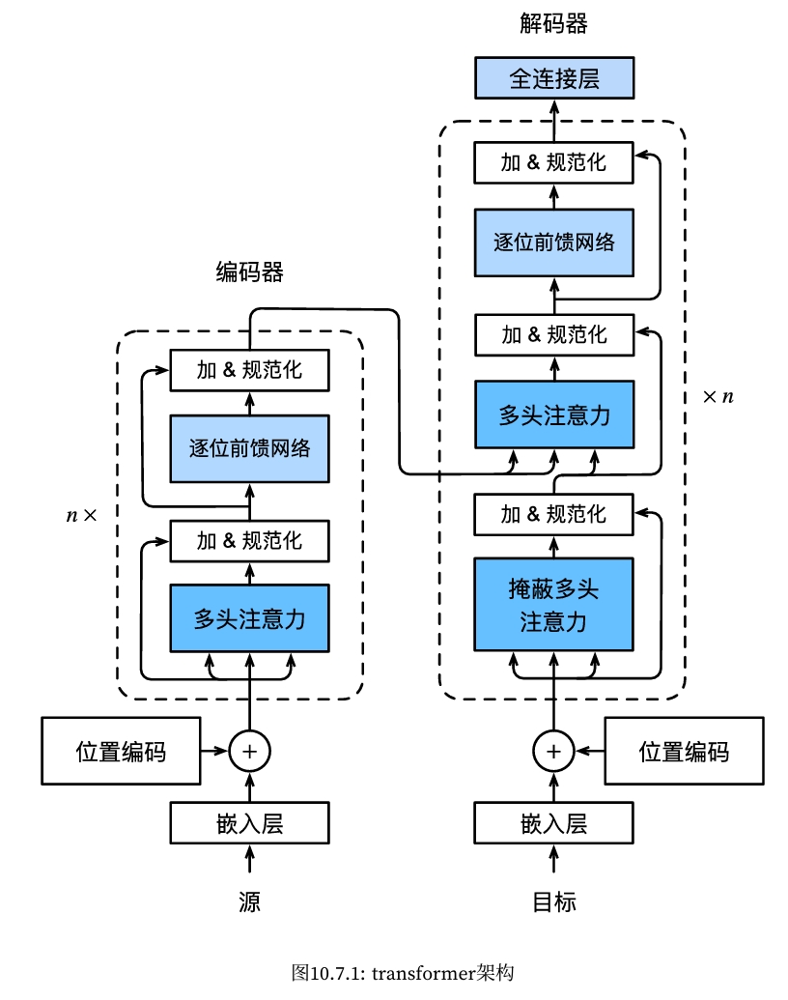
import torch
from torch import nn
trans = nn.Transformer(
d_model=512,
nhead=8,
num_encoder_layers=6,
num_decoder_layers=6,
dim_feedforward=2048,
dropout=0.1,
batch_first=True
)
# 创建输入张量
src = torch.rand(2, 32, 512) # (序列长度, 批次大小, 嵌入维度)
tgt = torch.rand(2, 32, 512) # (序列长度, 批次大小, 嵌入维度)
# 前向传播
output = trans(src, tgt)
print("输出形状:", output.shape) # 输出形状: (目标序列长度, 批次大小, 嵌入维度)
输出形状: torch.Size([2, 32, 512])
import torch
import torch.nn as nn
import torch.optim as optim
from torchvision import datasets, transforms
from torch.utils.data import DataLoader, random_split
# 检查是否有可用的 GPU
device = torch.device("cuda" if torch.cuda.is_available() else "cpu")
# 定义超参数
d_model = 128 # 嵌入维度
nhead = 2 # 注意力头的数量
num_encoder_layers = 4 # 编码器层数
dim_feedforward = 128 # 前馈网络的维度
dropout = 0.1 # Dropout 概率
batch_size = 64
learning_rate = 0.001
num_epochs = 10
# 定义位置编码
class PositionalEncoding(nn.Module):
def __init__(self, d_model, dropout=0.1, max_len=5000):
super(PositionalEncoding, self).__init__()
self.dropout = nn.Dropout(p=dropout)
pe = torch.zeros(max_len, d_model)
position = torch.arange(0, max_len, dtype=torch.float).unsqueeze(1)
div_term = torch.exp(torch.arange(0, d_model, 2).float() * (-torch.log(torch.tensor(10000.0)) / d_model))
pe[:, 0::2] = torch.sin(position * div_term)
pe[:, 1::2] = torch.cos(position * div_term)
pe = pe.unsqueeze(0).transpose(0, 1)
self.register_buffer('pe', pe)
def forward(self, x):
x = x + self.pe[:x.size(0), :]
return self.dropout(x)
# 定义 Transformer 模型
class TransformerModel(nn.Module):
def __init__(self, d_model, nhead, num_encoder_layers, dim_feedforward, dropout, num_classes=10):
super(TransformerModel, self).__init__()
self.model_type = 'Transformer'
self.embedding = nn.Linear(28, d_model) # 将每行像素映射到 d_model 维度
self.pos_encoder = PositionalEncoding(d_model, dropout)
self.transformer_encoder = nn.TransformerEncoder(
nn.TransformerEncoderLayer(d_model, nhead, dim_feedforward, dropout, batch_first=True),
num_encoder_layers
)
self.fc_out = nn.Linear(d_model, num_classes)
def forward(self, x):
# x: (batch_size, 1, 28, 28)
x = x.squeeze(1) # 去掉 channels 维度，变为 (batch_size, 28, 28)
x = x.permute(1, 0, 2) # 变为 (28, batch_size, 28)
x = self.embedding(x) * torch.sqrt(torch.tensor(d_model, dtype=torch.float32))
x = self.pos_encoder(x)
x = self.transformer_encoder(x)
x = x.mean(dim=0) # 平均池化
x = self.fc_out(x)
return x
# 加载 MNIST 数据集
transform = transforms.Compose([transforms.ToTensor()])
dataset = datasets.MNIST(root='./data', train=True, download=True, transform=transform)
# 划分训练集和验证集
train_size = int(0.8 * len(dataset))
val_size = len(dataset) - train_size
train_dataset, val_dataset = random_split(dataset, [train_size, val_size])
train_loader = DataLoader(train_dataset, batch_size=batch_size, shuffle=True)
val_loader = DataLoader(val_dataset, batch_size=batch_size, shuffle=False)
# 创建模型实例并移动到 GPU
model = TransformerModel(d_model, nhead, num_encoder_layers, dim_feedforward, dropout).to(device)
criterion = nn.CrossEntropyLoss()
optimizer = optim.Adam(model.parameters(), lr=learning_rate)
# 训练和验证模型
for epoch in range(num_epochs):
model.train()
for images, labels in train_loader:
images, labels = images.to(device), labels.to(device) # 将数据移动到 GPU
optimizer.zero_grad()
outputs = model(images)
loss = criterion(outputs, labels)
loss.backward()
optimizer.step()
# 验证模型
model.eval()
correct = 0
total = 0
with torch.no_grad():
for images, labels in val_loader:
images, labels = images.to(device), labels.to(device) # 将数据移动到 GPU
outputs = model(images)
_, predicted = torch.max(outputs, 1)
total += labels.size(0)
correct += (predicted == labels).sum().item()
accuracy = 100 * correct / total
print(f"Epoch {epoch+1}, Loss: {loss.item()}, Validation Accuracy: {accuracy:.2f}%")
Epoch 1, Loss: 0.30776989459991455, Validation Accuracy: 90.23% Epoch 2, Loss: 0.23195476830005646, Validation Accuracy: 93.50% Epoch 3, Loss: 0.2852802872657776, Validation Accuracy: 94.38% Epoch 4, Loss: 0.15702208876609802, Validation Accuracy: 95.27% Epoch 5, Loss: 0.3195101320743561, Validation Accuracy: 95.14% Epoch 6, Loss: 0.11443279683589935, Validation Accuracy: 95.71% Epoch 7, Loss: 0.10062020272016525, Validation Accuracy: 95.70% Epoch 8, Loss: 0.09283831715583801, Validation Accuracy: 95.38% Epoch 9, Loss: 0.20097430050373077, Validation Accuracy: 95.95% Epoch 10, Loss: 0.13262364268302917, Validation Accuracy: 95.33%
11.6.2. 位置编码¶
为什么需要位置编码？
- 在Transformer中，所有输入数据是并行处理的，因此模型并不直接知道每个单词或元素在序列中的顺序。例如，输入序列 [A, B, C] 和 [C, B, A] 对于Transformer的自注意力机制来说，如果没有位置编码，将会完全一样。
位置编码的原理：
- 位置编码将位置信息通过某种方式编码为向量，添加到每个输入元素的表示中，使得每个元素不仅包含其自身的特征，还包括它在序列中的位置。
常见的两种位置编码方式
- 绝对位置编码（Absolute Positional Encoding）：每个位置都有唯一的编码，通常采用正弦和余弦函数生成。Google一帮人发明了利用sin和cos函数编码位置信息并添加到输入X中。
- 相对位置编码（Relative Positional Encoding）：编码的是元素间的相对位置关系，而非具体的绝对位置。
11.6.2.1. 绝对位置编码¶
$\begin{aligned}&\text{假设输入序列的长度为 }L,\text{ 每个输入的词问量维度为 }d,\text{ 那么对于位置 }pos\text{ 和维度 }i\text{ 的位置编码}\\&PE(pos,i)\text{,定义如下:}\\&PE(pos,2i)=\sin\left(\frac{pos}{10000\frac{2i}{d}}\right)\\&PE(pos,2i+1)=\cos\left(\frac{pos}{10000^{\frac{2i}{d}}}\right)\\&\bullet\quad pos:\text{ 表示序列中每个元素的位置。}\\&\bullet\quad i:\text{ 向量的维度索引。}\\&\bullet\quad d:\quad\text{嵌入向量的维度，偶数维度使用正弦，奇数维度使用余弦。}\end{aligned}$
假设我们有一个序列长度 𝐿=4，embedding维度𝑑=4。用简单的正弦和余弦函数计算得出位置编码的矩阵：
| Position | PE(pos, 0) (sin) | PE(pos, 1) (cos) | PE(pos, 2) (sin) | PE(pos, 3) (cos) |
|---|---|---|---|---|
| 0 | 0 | 1 | 0 | 1 |
| 1 | 0.8415 | 0.5403 | 0.00999 | 0.99995 |
| 2 | 0.9093 | -0.4161 | 0.01998 | 0.9998 |
| 3 | 0.1411 | -0.98999 | 0.02997 | 0.99955 |
最终，Transformer会将这些位置编码与输入embedding相加，得到位置敏感的嵌入表示。
from torch import nn
from matplotlib import pyplot as plt
#@save
class PositionalEncoding(nn.Module):
"""位置编码"""
def __init__(self, num_hiddens, dropout, max_len=1000):
super(PositionalEncoding, self).__init__()
self.dropout = nn.Dropout(dropout)
# 创建一个足够长的P
self.P = torch.zeros((1, max_len, num_hiddens)) # (1, max_len, num_hiddens)
X = torch.arange(max_len, dtype=torch.float32).reshape(
-1, 1) / torch.pow(10000, torch.arange(
0, num_hiddens, 2, dtype=torch.float32) / num_hiddens)
self.P[:, :, 0::2] = torch.sin(X)
self.P[:, :, 1::2] = torch.cos(X)
def forward(self, X):
X = X + self.P[:, :X.shape[1], :].to(X.device) # On the same device
return self.dropout(X)
# 测试
encoding_dim, num_steps = 32, 60
pos_encoding = PositionalEncoding(encoding_dim, 0)
pos_encoding.eval()
X = pos_encoding(torch.zeros((1, num_steps, encoding_dim)))
P = pos_encoding.P[:, :X.shape[1], :]
# Draw a plot picture
plt.figure(figsize=(6, 2.5))
plt.plot(torch.arange(num_steps), P[0, :, 6:10].T[0], label='col 6')
plt.plot(torch.arange(num_steps), P[0, :, 6:10].T[1], label='col 7')
plt.plot(torch.arange(num_steps), P[0, :, 6:10].T[2], label='col 8')
plt.plot(torch.arange(num_steps), P[0, :, 6:10].T[3], label='col 9')
plt.xlabel('Row (position)')
plt.legend()
<matplotlib.legend.Legend at 0x7fad56e2b0e0>
![No description has been provided for this image]()
import torch
from torch import nn
class RelativePositionalEncoding(nn.Module):
def __init__(self, num_hiddens, max_len=1000):
super(RelativePositionalEncoding, self).__init__()
self.num_hiddens = num_hiddens
self.max_len = max_len
# 创建一个足够长的相对位置编码矩阵
self.relative_positions = torch.zeros((max_len, max_len, num_hiddens))
for i in range(max_len):
for j in range(max_len):
relative_position = i - j
self.relative_positions[i, j, :] = self._get_relative_position_encoding(relative_position)
def _get_relative_position_encoding(self, relative_position):
# 使用正弦和余弦函数计算相对位置编码
encoding = torch.zeros(self.num_hiddens)
for i in range(0, self.num_hiddens, 2):
encoding[i] = torch.sin(torch.tensor(relative_position / (10000 ** (i / self.num_hiddens))))
if i + 1 < self.num_hiddens:
encoding[i + 1] = torch.cos(torch.tensor(relative_position / (10000 ** ((i + 1) / self.num_hiddens))))
return encoding
def forward(self, X):
batch_size, seq_len, _ = X.size()
relative_positions = self.relative_positions[:seq_len, :seq_len, :].to(X.device)
return X + relative_positions
# 测试相对位置编码
encoding_dim, num_steps = 32, 60
relative_pos_encoding = RelativePositionalEncoding(encoding_dim, num_steps)
relative_pos_encoding.eval()
X = torch.zeros((1, num_steps, encoding_dim))
X_encoded = relative_pos_encoding(X)
print(X_encoded.shape) # 应输出: torch.Size([1, 60, 32])
torch.Size([60, 60, 32])
from torch import nn
#@save
class PositionWiseFFN(nn.Module):
"""基于位置的前馈网络"""
def __init__(self, ffn_num_input, ffn_num_hiddens, ffn_num_outputs,**kwargs):
super(PositionWiseFFN, self).__init__(**kwargs)
self.dense1 = nn.Linear(ffn_num_input, ffn_num_hiddens)
self.relu = nn.ReLU()
self.dense2 = nn.Linear(ffn_num_hiddens, ffn_num_outputs)
def forward(self, X):
return self.dense2(self.relu(self.dense1(X)))
# 测试
ffn = PositionWiseFFN(ffn_num_input=4, ffn_num_hiddens=4, ffn_num_outputs=8)
ffn.eval()
ffn(torch.ones((2, 3, 4)))[0].shape
torch.Size([3, 8])
ln = nn.LayerNorm(2)
bn = nn.BatchNorm1d(2)
# 测试
X = torch.tensor([[1, 2], [2, 3]], dtype=torch.float32)
# 在训练模式下计算X的均值和方差
print('layer norm:', ln(X), '\nbatch norm:', bn(X))
layer norm: tensor([[-1.0000, 1.0000],
[-1.0000, 1.0000]], grad_fn=<NativeLayerNormBackward0>)
batch norm: tensor([[-1.0000, -1.0000],
[ 1.0000, 1.0000]], grad_fn=<NativeBatchNormBackward0>)
#@save
class AddNorm(nn.Module):
"""残差连接后进行层规范化"""
def __init__(self, normalized_shape, dropout, **kwargs):
super(AddNorm, self).__init__(**kwargs)
self.dropout = nn.Dropout(dropout)
self.ln = nn.LayerNorm(normalized_shape)
def forward(self, X, Y):
return self.ln(self.dropout(Y) + X)
# 测试
add_norm = AddNorm([3, 4], 0.5)
add_norm.eval()
add_norm(torch.ones((2, 3, 4)), torch.ones((2, 3, 4))).shape
torch.Size([2, 3, 4])
from torch import nn
from d2l import torch as d2l
#@save
class EncoderBlock(nn.Module):
"""Transformer编码器块"""
def __init__(self, key_size, query_size, value_size, num_hiddens, norm_shape, ffn_num_input, ffn_num_hiddens, num_heads, dropout, use_bias=False, **kwargs):
super(EncoderBlock, self).__init__(**kwargs)
# From d2l
# self.attention = d2l.MultiHeadAttention(
# key_size, query_size, value_size, num_hiddens, num_heads, dropout,
# use_bias)
# From 自己
self.attention = MultiHeadAttention(
num_heads = num_heads,
query_size = query_size,
key_size = key_size,
num_hiddens = num_hiddens,
value_size = value_size,
attention_type='dot',
dropout = dropout
)
self.addnorm1 = AddNorm(norm_shape, dropout)
self.ffn = PositionWiseFFN(ffn_num_input, ffn_num_hiddens, num_hiddens)
self.addnorm2 = AddNorm(norm_shape, dropout)
def forward(self, X, valid_lens=None):
Y = self.addnorm1(X, self.attention(X, X, X, valid_lens))
return self.addnorm2(Y, self.ffn(Y))
# 测试
X = torch.ones((2, 100, 24))
encoder_blk = EncoderBlock(key_size=24, query_size=24, value_size=24, num_hiddens=24, norm_shape=[100, 24], ffn_num_input=24, ffn_num_hiddens=48, num_heads=8, dropout=0.5)
encoder_blk.eval()
encoder_blk(X).shape
torch.Size([2, 100, 24])
#@save
class TransformerEncoder(nn.Module):
"""Transformer编码器"""
def __init__(self, vocab_size, key_size, query_size, value_size, num_hiddens, norm_shape, ffn_num_input, ffn_num_hiddens, num_heads, num_layers, dropout, use_bias=False, **kwargs):
super(TransformerEncoder, self).__init__(**kwargs)
self.num_hiddens = num_hiddens
self.embedding = nn.Embedding(vocab_size, num_hiddens)
self.pos_encoding = PositionalEncoding(num_hiddens, dropout)
self.blks = nn.Sequential()
for i in range(num_layers):
self.blks.add_module("block"+str(i), EncoderBlock(key_size, query_size, value_size, num_hiddens, norm_shape, ffn_num_input, ffn_num_hiddens, num_heads, dropout, use_bias))
def forward(self, X, *args):
# 因为位置编码值在-1和1之间，
# 因此嵌入值乘以嵌入维度的平方根进行缩放，
# 然后再与位置编码相加。
# X = self.pos_encoding(self.embedding(X) * math.sqrt(self.num_hiddens))
X = self.pos_encoding(self.embedding(X) * torch.sqrt(torch.tensor(self.num_hiddens)))
self.attention_weights = [None] * len(self.blks)
for i, blk in enumerate(self.blks):
X = blk(X)
# self.attention_weights[i] = blk.attention.attention.attention_weights_numpy
return X
# 测试
encoder = TransformerEncoder(
vocab_size=200,
key_size=24,
query_size=24,
value_size=24,
num_hiddens=24,
norm_shape=[100, 24],
ffn_num_input=24,
ffn_num_hiddens=48,
num_heads=8,
num_layers=2,
dropout=0.5
)
encoder.eval()
encoder(torch.ones((2, 100), dtype=torch.long)).shape
torch.Size([2, 100, 24])
#@tab pytorch
class DecoderBlock(nn.Module):
# The `i`-th block in the decoder
def __init__(self, key_size, query_size, value_size, num_hiddens, norm_shape, ffn_num_input, ffn_num_hiddens, num_heads, dropout, i, **kwargs):
super(DecoderBlock, self).__init__(**kwargs)
self.i = i
# self.attention1 = d2l.MultiHeadAttention(key_size, query_size, value_size, num_hiddens, num_heads, dropout)
self.attention1 = MultiHeadAttention(
num_heads = num_heads,
query_size = query_size,
key_size = key_size,
num_hiddens = num_hiddens,
value_size = value_size,
attention_type='dot',
dropout = dropout
)
self.addnorm1 = AddNorm(norm_shape, dropout)
# self.attention2 = d2l.MultiHeadAttention(key_size, query_size, value_size, num_hiddens, num_heads, dropout)
self.attention2 = MultiHeadAttention(
num_heads = num_heads,
query_size = query_size,
key_size = key_size,
num_hiddens = num_hiddens,
value_size = value_size,
attention_type='dot'
)
self.addnorm2 = AddNorm(norm_shape, dropout)
self.ffn = PositionWiseFFN(ffn_num_input, ffn_num_hiddens, num_hiddens)
self.addnorm3 = AddNorm(norm_shape, dropout)
def forward(self, X, state):
enc_outputs, enc_valid_lens = state[0], state[1]
# During training, all the tokens of any output sequence are processed
# at the same time, so `state[2][self.i]` is `None` as initialized.
# When decoding any output sequence token by token during prediction,
# `state[2][self.i]` contains representations of the decoded output at
# the `i`-th block up to the current time step
if state[2][self.i] is None:
key_values = X
else:
key_values = torch.cat((state[2][self.i], X), axis=1)
state[2][self.i] = key_values
if self.training:
batch_size, num_steps, _ = X.shape
# Shape of `dec_valid_lens`: (`batch_size`, `num_steps`), where
# every row is [1, 2, ..., `num_steps`]
dec_valid_lens = torch.arange(1, num_steps + 1, device=X.device).repeat(batch_size, 1)
else:
dec_valid_lens = None
# Self-attention
X2 = self.attention1(X, key_values, key_values, dec_valid_lens)
Y = self.addnorm1(X, X2)
# Encoder-decoder attention. Shape of `enc_outputs`:
# (`batch_size`, `num_steps`, `num_hiddens`)
Y2 = self.attention2(Y, enc_outputs, enc_outputs, enc_valid_lens)
Z = self.addnorm2(Y, Y2)
return self.addnorm3(Z, self.ffn(Z)), state
# 测试
decoder_blk = DecoderBlock(key_size=24, query_size=24, value_size=24, num_hiddens=24, norm_shape=[100, 24], ffn_num_input=24, ffn_num_hiddens=48, num_heads=8, dropout=0.5, i=0)
decoder_blk.eval()
X = d2l.ones((2, 100, 24))
state = [encoder_blk(X, valid_lens), valid_lens, [None]]
decoder_blk(X, state)[0].shape
torch.Size([2, 100, 24])
#@tab pytorch
class TransformerDecoder(nn.Module):
def __init__(self, vocab_size, key_size, query_size, value_size, num_hiddens, norm_shape, ffn_num_input, ffn_num_hiddens, num_heads, num_layers, dropout, **kwargs):
super(TransformerDecoder, self).__init__(**kwargs)
self.num_hiddens = num_hiddens
self.num_layers = num_layers
self.embedding = nn.Embedding(vocab_size, num_hiddens)
self.pos_encoding = PositionalEncoding(num_hiddens, dropout)
self.blks = nn.Sequential()
for i in range(num_layers):
self.blks.add_module("block"+str(i), DecoderBlock(key_size, query_size, value_size, num_hiddens, norm_shape, ffn_num_input, ffn_num_hiddens, num_heads, dropout, i))
self.dense = nn.Linear(num_hiddens, vocab_size)
def init_state(self, enc_outputs, enc_valid_lens, *args):
return [enc_outputs, enc_valid_lens, [None] * self.num_layers]
def forward(self, X, state):
X = self.pos_encoding(self.embedding(X) * math.sqrt(self.num_hiddens))
self._attention_weights = [[None] * len(self.blks) for _ in range (2)]
for i, blk in enumerate(self.blks):
X, state = blk(X, state)
# Decoder self-attention weights
self._attention_weights[0][i] = blk.attention1.attention.attention_weights
# Encoder-decoder attention weights
self._attention_weights[1][i] = blk.attention2.attention.attention_weights
return self.dense(X), state
@property
def attention_weights(self):
return self._attention_weights
# 测试
decoder = TransformerDecoder(
vocab_size=200,
key_size=24,
query_size=24,
value_size=24,
num_hiddens=24,
norm_shape=[100, 24],
ffn_num_input=24,
ffn_num_hiddens=48,
num_heads=8,
num_layers=2,
dropout=0.5
)
decoder.eval()
TransformerDecoder(
(embedding): Embedding(200, 24)
(pos_encoding): PositionalEncoding(
(dropout): Dropout(p=0.5, inplace=False)
)
(blks): Sequential(
(block0): DecoderBlock(
(attention1): MultiHeadAttention(
(W_q): Linear(in_features=24, out_features=24, bias=True)
(W_k): Linear(in_features=24, out_features=24, bias=True)
(W_v): Linear(in_features=24, out_features=24, bias=True)
(attention): DotProductAttentionForMultiHeadAttention(
(dropout): Dropout(p=0.5, inplace=False)
)
(W_o): Linear(in_features=24, out_features=24, bias=True)
)
(addnorm1): AddNorm(
(dropout): Dropout(p=0.5, inplace=False)
(ln): LayerNorm((100, 24), eps=1e-05, elementwise_affine=True)
)
(attention2): MultiHeadAttention(
(W_q): Linear(in_features=24, out_features=24, bias=True)
(W_k): Linear(in_features=24, out_features=24, bias=True)
(W_v): Linear(in_features=24, out_features=24, bias=True)
(attention): DotProductAttentionForMultiHeadAttention(
(dropout): Dropout(p=False, inplace=False)
)
(W_o): Linear(in_features=24, out_features=24, bias=True)
)
(addnorm2): AddNorm(
(dropout): Dropout(p=0.5, inplace=False)
(ln): LayerNorm((100, 24), eps=1e-05, elementwise_affine=True)
)
(ffn): PositionWiseFFN(
(dense1): Linear(in_features=24, out_features=48, bias=True)
(relu): ReLU()
(dense2): Linear(in_features=48, out_features=24, bias=True)
)
(addnorm3): AddNorm(
(dropout): Dropout(p=0.5, inplace=False)
(ln): LayerNorm((100, 24), eps=1e-05, elementwise_affine=True)
)
)
(block1): DecoderBlock(
(attention1): MultiHeadAttention(
(W_q): Linear(in_features=24, out_features=24, bias=True)
(W_k): Linear(in_features=24, out_features=24, bias=True)
(W_v): Linear(in_features=24, out_features=24, bias=True)
(attention): DotProductAttentionForMultiHeadAttention(
(dropout): Dropout(p=0.5, inplace=False)
)
(W_o): Linear(in_features=24, out_features=24, bias=True)
)
(addnorm1): AddNorm(
(dropout): Dropout(p=0.5, inplace=False)
(ln): LayerNorm((100, 24), eps=1e-05, elementwise_affine=True)
)
(attention2): MultiHeadAttention(
(W_q): Linear(in_features=24, out_features=24, bias=True)
(W_k): Linear(in_features=24, out_features=24, bias=True)
(W_v): Linear(in_features=24, out_features=24, bias=True)
(attention): DotProductAttentionForMultiHeadAttention(
(dropout): Dropout(p=False, inplace=False)
)
(W_o): Linear(in_features=24, out_features=24, bias=True)
)
(addnorm2): AddNorm(
(dropout): Dropout(p=0.5, inplace=False)
(ln): LayerNorm((100, 24), eps=1e-05, elementwise_affine=True)
)
(ffn): PositionWiseFFN(
(dense1): Linear(in_features=24, out_features=48, bias=True)
(relu): ReLU()
(dense2): Linear(in_features=48, out_features=24, bias=True)
)
(addnorm3): AddNorm(
(dropout): Dropout(p=0.5, inplace=False)
(ln): LayerNorm((100, 24), eps=1e-05, elementwise_affine=True)
)
)
)
(dense): Linear(in_features=24, out_features=200, bias=True)
)
11.6.7. 基于Transformer的Seq2Seq网络¶
基于Transformer的Seq2Seq神经网络框架。
#@tab pytorch
num_hiddens, num_layers, dropout, batch_size, num_steps = 32, 2, 0.1, 64, 10
lr, num_epochs, device = 0.005, 200, d2l.try_gpu()
ffn_num_input, ffn_num_hiddens, num_heads = 32, 64, 4
key_size, query_size, value_size = 32, 32, 32
norm_shape = [32]
train_iter, src_vocab, tgt_vocab = d2l.load_data_nmt(batch_size, num_steps)
encoder = TransformerEncoder(
vocab_size=len(src_vocab),
key_size=key_size,
query_size=query_size,
value_size=value_size,
num_hiddens=num_hiddens,
norm_shape=norm_shape,
ffn_num_input=ffn_num_input,
ffn_num_hiddens=ffn_num_hiddens,
num_heads=num_heads,
num_layers=num_layers,
dropout=dropout
)
decoder = TransformerDecoder(
vocab_size=len(tgt_vocab),
key_size=key_size,
query_size=query_size,
value_size=value_size,
num_hiddens=num_hiddens,
norm_shape=norm_shape,
ffn_num_input=ffn_num_input,
ffn_num_hiddens=ffn_num_hiddens,
num_heads=num_heads,
num_layers=num_layers,
dropout=dropout
)
net = EncoderDecoder(encoder, decoder)
d2l.train_seq2seq(net, train_iter, lr, num_epochs, tgt_vocab, device)
loss 0.028, 4143.0 tokens/sec on cuda:0
![No description has been provided for this image]()
#@tab all
engs = ['go .', "i lost .", 'he\'s calm .', 'i\'m home .']
fras = ['va !', 'j\'ai perdu .', 'il est calme .', 'je suis chez moi .']
for eng, fra in zip(engs, fras):
translation, dec_attention_weight_seq = d2l.predict_seq2seq(net, eng, src_vocab, tgt_vocab, num_steps, device, True)
print(f'{eng} => {translation}, ',
f'bleu {d2l.bleu(translation, fra, k=2):.3f}')
go . => va !, bleu 1.000 i lost . => j'ai perdu ., bleu 1.000 he's calm . => il est calme ., bleu 1.000 i'm home . => je suis chez moi ., bleu 1.000
11.7. BERT¶
BERT（Bidirectional Encoder Representations from Transformers）是基于Transformer架构的一种预训练语言模型，由Google在2018年提出。BERT使用了Transformer的编码器部分，并通过双向训练来捕捉上下文信息。BERT的主要创新在于它的预训练任务（如Masked Language Model和Next Sentence Prediction），使其在各种自然语言处理任务中表现出色。
就是Encoder部分
Base：12层，768维，12个注意力头，110M参数
Large：24层，1024维，16个注意力头，340M参数
11.7.1. BERT encode block¶
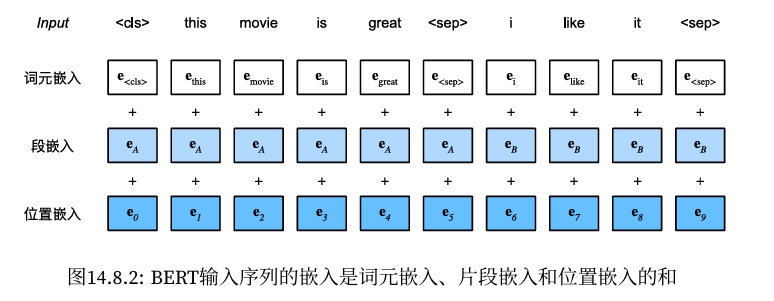
- 词元化：将原始文本转化为词元列表（tokenization）。
- 添加特殊标记：在词元列表前后添加 '
' 和 ' '。 - 生成段标识：为每个词元分配相应的段标识。
- 转换为ID：使用词汇表（vocab）将词元转换为对应的ID。
- 位置编码：为每个词元添加位置编码。
- 输入模型：将处理后的序列输入到 BERT 模型中进行训练或推理。
#@tab all
#@save
def get_tokens_and_segments(tokens_a, tokens_b=None):
"""
Get tokens of the BERT input sequence and their segment IDs.
Args:
tokens_a: List[str] 第一段文本的词元列表（即第一句话的分词结果）。
tokens_b: List[str] （可选）第二段文本的词元列表（即第二句话的分词结果）。在单句任务中，此参数可以省略。
Returns:
tokens: List[str] 词元列表，其中第一个词元是'<cls>'，表示序列的开始，最后一个词元是'<sep>'，表示序列的结束。
segments: List[int] 段标识列表，其中0表示第一段，1表示第二段。
"""
# classification (cls) and separator (sep) tokens are added
tokens = ['<cls>'] + tokens_a + ['<sep>']
# 0 and 1 are marking segment A and B, respectively
segments = [0] * (len(tokens_a) + 2)
if tokens_b is not None:
tokens += tokens_b + ['<sep>']
segments += [1] * (len(tokens_b) + 1)
return tokens, segments
# 测试
tokens_a = ['You', 'are', 'the', 'best']
tokens_b = ['You', 'are', 'the', 'worst']
tokens, segments = get_tokens_and_segments(tokens_a, tokens_b)
print(f'tokens: {tokens}')
print(f'segments: {segments}')
tokens: ['<cls>', 'You', 'are', 'the', 'best', '<sep>', 'You', 'are', 'the', 'worst', '<sep>'] segments: [0, 0, 0, 0, 0, 0, 1, 1, 1, 1, 1]
from torch import nn
import torch
from d2l import torch as d2l
#@tab pytorch
#@save
class BERTEncoder(nn.Module):
"""BERT encoder."""
def __init__(self, vocab_size, num_hiddens, norm_shape, ffn_num_input, ffn_num_hiddens, num_heads, num_layers, dropout, max_len=1000, key_size=768, query_size=768, value_size=768, **kwargs):
super(BERTEncoder, self).__init__(**kwargs)
self.token_embedding = nn.Embedding(vocab_size, num_hiddens)
self.segment_embedding = nn.Embedding(2, num_hiddens)
self.blks = nn.Sequential()
for i in range(num_layers):
# 此处调用TransformerEncoder中的EncoderBlock
self.blks.add_module(f"{i}", d2l.EncoderBlock(key_size, query_size, value_size, num_hiddens, norm_shape, ffn_num_input, ffn_num_hiddens, num_heads, dropout, True))
# In BERT, positional embeddings are learnable, thus we create a
# parameter of positional embeddings that are long enough
# 此处用nn.Parameter来创建一个可学习的参数，用于存储位置编码, 形状为(1, max_len, num_hiddens)
self.pos_embedding = nn.Parameter(torch.randn(1, max_len, num_hiddens))
def forward(self, tokens, segments, valid_lens):
# Shape of `X` remains unchanged in the following code snippet:
# (batch size, max sequence length, `num_hiddens`)
# 词元嵌入和段嵌入相加
# (batch_size, seq_len, num_hiddens) + (batch_size, seq_len, num_hiddens) = (batch_size, seq_len, num_hiddens)
X = self.token_embedding(tokens) + self.segment_embedding(segments)
# 位置编码
# (batch_size, seq_len, num_hiddens) + (1, seq_len, num_hiddens) = (batch_size, seq_len, num_hiddens)
X = X + self.pos_embedding.data[:, :X.shape[1], :]
for blk in self.blks:
X = blk(X, valid_lens)
# X: (batch_size, seq_len, num_hiddens)
return X
# 测试
#@tab pytorch
vocab_size, num_hiddens, ffn_num_hiddens, num_heads = 10000, 768, 1024, 4
norm_shape, ffn_num_input, num_layers, dropout = [768], 768, 2, 0.2
encoder = BERTEncoder(vocab_size, num_hiddens, norm_shape, ffn_num_input, ffn_num_hiddens, num_heads, num_layers, dropout)
#@tab pytorch
batch_size = 2
seq_len = 8
tokens = torch.randint(low=0, high=vocab_size, size=(batch_size, seq_len))
segments = torch.tensor([[0, 0, 0, 0, 1, 1, 1, 1], [0, 0, 0, 1, 1, 1, 1, 1]])
encoded_X = encoder(tokens, segments, None)
# encoded_X: (batch_size, seq_len, num_hiddens)
# tokens.shape, segments.shape, encoded_X.shape
print(f'tokens.shape: {tokens.shape}')
print(f'segments.shape: {segments.shape}')
print(f'encoded_X.shape: {encoded_X.shape}')
tokens.shape: torch.Size([2, 8]) segments.shape: torch.Size([2, 8]) encoded_X.shape: torch.Size([2, 8, 768])
11.7.2. Masked Language Modeling¶
MaskLM 类通过多层感知机（MLP）对被遮蔽的位置进行预测，输出每个被遮蔽位置的词汇表概率分布。这是 BERT 模型在预训练阶段的核心任务之一，旨在让模型学习上下文关系和词汇之间的语义联系。通过这样的设计，模型能够在处理自然语言理解任务时表现出色，因为它已经通过大量的无监督数据学习到了丰富的语言表示。
- 选择一些位置进行预测，这些位置被称为被遮蔽的位置。
- 被遮蔽的位置上的词元被替换为特殊的“
”词元。 - 模型需要预测这些被遮蔽位置上的原始词元。
从经过BERTEncoder编码后的序列中，提取出被遮蔽位置（<mask>, mlm_positions）上的子序列，然后通过多层感知机（MLP）进行预测。
from torch import nn
import torch
#@tab pytorch
#@save
class MaskLM(nn.Module):
"""The masked language model task of BERT."""
def __init__(self, vocab_size, num_hiddens, num_inputs=768, **kwargs):
super(MaskLM, self).__init__(**kwargs)
self.mlp = nn.Sequential(nn.Linear(num_inputs, num_hiddens),
nn.ReLU(),
nn.LayerNorm(num_hiddens),
nn.Linear(num_hiddens, vocab_size)) # 输出： (batch_size, num_pred_positions, vocab_size)
def forward(self, X, pred_positions):
# pred_positions: (batch_size, num_pred_positions)
num_pred_positions = pred_positions.shape[1]
# 将预测位置展平成一维，用于后续的索引操作, 形状为 (batch_size * num_pred_positions), e.g., torch.tensor([1, 5, 2, 6, 1, 5])
pred_positions = pred_positions.reshape(-1)
# 生成批次索引
## X: (batch_size, seq_len, num_hiddens)
batch_size = X.shape[0]
## 创建一个包含batch_size个元素的索引
batch_idx = torch.arange(0, batch_size)
## Suppose that `batch_size` = 2, `num_pred_positions` = 3, then `batch_idx` is `torch.tensor([0, 0, 0, 1, 1, 1])`
batch_idx = torch.repeat_interleave(batch_idx, num_pred_positions)
# 根据batch_idx和pred_positions从X中提取出对应的子序列
## masked_X: (batch_size * num_pred_positions, num_hiddens), 索引：encoded_X[[0, 0, 0, 1, 1, 1], [1, 5, 2, 6, 1, 5]]
masked_X = X[batch_idx, pred_positions]
## masked_X: (batch_size, num_pred_positions, num_hiddens)
masked_X = masked_X.reshape((batch_size, num_pred_positions, -1))
## (batch_size, num_pred_positions, vocab_size)
mlm_Y_hat = self.mlp(masked_X)
return mlm_Y_hat
# 测试
#@tab pytorch
mlm = MaskLM(vocab_size, num_hiddens)
mlm_positions = torch.tensor([[1, 5, 2], [6, 1, 5]]) # (batch_size, num_pred_positions)
# encoded_X: (batch_size, seq_len, num_hiddens)
# mlm_positions: (batch_size, num_pred_positions)
# mlm_Y_hat: (batch_size, num_pred_positions, vocab_size)
mlm_Y_hat = mlm(encoded_X, mlm_positions)
print(f'encoded_X.shape: {encoded_X.shape}')
print(f'mlm_positions.shape: {mlm_positions.shape}')
print(f'mlm_Y_hat.shape: {mlm_Y_hat.shape}')
encoded_X.shape: torch.Size([2, 8, 768]) mlm_positions.shape: torch.Size([2, 3]) mlm_Y_hat.shape: torch.Size([2, 3, 10000])
#@tab pytorch
mlm_Y = torch.tensor([[7, 8, 9], [10, 20, 30]])
loss = nn.CrossEntropyLoss(reduction='none')
mlm_l = loss(mlm_Y_hat.reshape((-1, vocab_size)), mlm_Y.reshape(-1))
mlm_l.shape
torch.Size([6])
11.7.3. Next Sentence Prediction¶
NextSentencePred 类通常与 BERT 模型的编码器部分结合使用。在预训练 BERT 模型时，除了进行 Masked Language Modeling（MLM）任务，还会同时进行 NSP 任务。通过 NSP 任务，模型能够学习句子之间的关系，这对于诸如问答系统、自然语言推理等下游任务具有重要意义。
#@tab pytorch
#@save
class NextSentencePred(nn.Module):
"""The next sentence prediction task of BERT."""
def __init__(self, num_inputs, **kwargs):
super(NextSentencePred, self).__init__(**kwargs)
self.output = nn.Linear(num_inputs, 2)
def forward(self, X):
# `X` shape: (batch size, `num_hiddens`)
return self.output(X)
# 测试
# PyTorch by default won't flatten the tensor as seen in mxnet where, if flatten=True, all but the first axis of input data are collapsed together
## encoded_X: (batch_size, seq_len, num_hiddens)
## flattened_encoded_X: (batch_size, seq_len * num_hiddens)
encoded_X = torch.flatten(encoded_X, start_dim=1)
# input_shape for NSP: (batch size, `num_hiddens`)
nsp = NextSentencePred(encoded_X.shape[-1])
# encoded_X: (batch_size, seq_len * num_hiddens)
# nsp_Y_hat: (batch_size, 2)
nsp_Y_hat = nsp(encoded_X)
print(f'encoded_X.shape: {encoded_X.shape}')
print(f'nsp_Y_hat.shape: {nsp_Y_hat.shape}')
encoded_X.shape: torch.Size([2, 6144]) nsp_Y_hat.shape: torch.Size([2, 2])
#@tab pytorch
nsp_y = torch.tensor([0, 1])
nsp_l = loss(nsp_Y_hat, nsp_y)
nsp_l.shape
torch.Size([2])
#@tab pytorch
#@save
class BERTModel(nn.Module):
"""The BERT model."""
def __init__(self, vocab_size, num_hiddens, norm_shape, ffn_num_input, ffn_num_hiddens, num_heads, num_layers, dropout, max_len=1000, key_size=768, query_size=768, value_size=768, hid_in_features=768, mlm_in_features=768, nsp_in_features=768):
super(BERTModel, self).__init__()
self.encoder = BERTEncoder(vocab_size, num_hiddens, norm_shape, ffn_num_input, ffn_num_hiddens, num_heads, num_layers, dropout, max_len=max_len, key_size=key_size, query_size=query_size, value_size=value_size)
self.hidden = nn.Sequential(nn.Linear(hid_in_features, num_hiddens), nn.Tanh())
self.mlm = MaskLM(vocab_size, num_hiddens, mlm_in_features)
self.nsp = NextSentencePred(nsp_in_features)
def forward(self, tokens, segments, valid_lens=None, pred_positions=None):
# tokens: (batch_size, seq_len)
# segments: (batch_size, seq_len)
# valid_lens: (batch_size,)
# pred_positions: (batch_size, num_pred_positions)
# encoded_X: (batch_size, seq_len, num_hiddens)
encoded_X = self.encoder(tokens, segments, valid_lens)
if pred_positions is not None:
# mlm_Y_hat: (batch_size, num_pred_positions, vocab_size)
mlm_Y_hat = self.mlm(encoded_X, pred_positions)
else:
mlm_Y_hat = None
# The hidden layer of the MLP classifier for next sentence prediction. 0 is the index of the '<cls>' token
nsp_Y_hat = self.nsp(self.hidden(encoded_X[:, 0, :]))
# encoded_X: (batch_size, seq_len, num_hiddens)
# mlm_Y_hat: (batch_size, num_pred_positions, vocab_size)
# nsp_Y_hat: (batch_size, 2)
return encoded_X, mlm_Y_hat, nsp_Y_hat
# 测试
11.7.5. Datasets for Pre-training¶
import pandas as pd
import os
import random
#@tab all
#@save
d2l.DATA_HUB['wikitext-2'] = (
'https://s3.amazonaws.com/research.metamind.io/wikitext/'
'wikitext-2-v1.zip', '3c914d17d80b1459be871a5039ac23e752a53cbe')
#@save
def _read_wiki(data_dir):
# file_name = os.path.join(data_dir, 'wiki.train.tokens')
# with open(file_name, 'r') as f:
# lines = f.readlines()
file_name = os.path.join(data_dir, 'train-00000-of-00001.parquet')
df = pd.read_parquet(data_dir)
lines = df['text'].tolist()
# 大写字母转换为小写字母
paragraphs = [line.strip().lower().split(' . ') for line in lines if len(line.split(' . ')) >= 2]
random.shuffle(paragraphs)
return paragraphs
11.7.5.1. 生成下一句预测任务的数据¶
下一句预测任务 是BERT预训练的两个主要任务之一（另一个是遮蔽语言模型）。NSP任务的目的是让模型理解句子之间的关系，判断一个句子是否是另一个句子的真实下一句。这对于下游任务如问答系统、自然语言推理等具有重要意义。
函数 _get_next_sentence 的具体作用：
- 正样本生成：以50%的概率，函数返回的 next_sentence 是 sentence 的真实下一句，对应标签 is_next=True。
- 负样本生成：以另外50%的概率，函数返回的 next_sentence 是随机选择的其他段落中的句子，对应标签 is_next=False。 通过这种方式，模型在训练过程中能够接触到正负两类样本，从而学习句子之间的逻辑关系和上下文关联。
函数 _get_nsp_data_from_paragraph 的主要作用是从给定的段落中生成用于下一句预测任务的训练数据。具体步骤包括遍历段落中的句子对、生成句子对及其标签、过滤超长的句子对、格式化词元和段落标记，并将符合条件的句子对数据收集起来。通过这种方式，模型在训练过程中能够学习到句子之间的逻辑关系和上下文关联，从而提高其在诸如问答系统、自然语言推理等下游任务中的表现。
#@tab all
#@save
def _get_next_sentence(sentence, next_sentence, paragraphs):
'''
生成下一句预测任务的数据
Args:
sentence: 当前句子
next_sentence: 下一句句子
paragraphs: 段落列表
Returns:
sentence: 当前句子
next_sentence: 下一句句子
is_next: 是否是下一句
'''
# 1. 随机决定是否使用真实的下一句：使用 random.random() 生成一个 [0,1) 之间的随机数，如果随机数小于 0.5，则 is_next 设置为 True，表示使用真实的下一句
if random.random() < 0.5:
is_next = True
else:
# 生成负样本（不真实的下一句）：从 paragraphs 中随机选择一个段落，再从中随机选择一句作为 next_sentence。
## 设置 is_next 为 False，表示 next_sentence 不是 sentence 的真实下一句。
# paragraphs是三重列表的嵌套
next_sentence = random.choice(random.choice(paragraphs))
is_next = False
return sentence, next_sentence, is_next
# 测试
paragraphs = [
[["句子1A"], ["句子1B"], ["句子1C"]],
[["句子2A"], ["句子2B"], ["句子2C"]],
[["句子3A"], ["句子3B"], ["句子3C"]]
]
sentence = ["句子1A"]
next_sentence = ["句子1B"]
result = _get_next_sentence(sentence, next_sentence, paragraphs)
print(result)
(['句子1A'], ['句子1A'], False)
#@tab all
#@save
def _get_nsp_data_from_paragraph(paragraph, paragraphs, vocab, max_len):
'''
生成下一句预测任务的数据
Args:
paragraph: 段落, 当前处理的段落，通常是由多个句子组成的列表。
paragraphs: 段落列表, 所有段落的集合，用于在生成负样本时随机选择其他句子。
vocab: 词汇表, 用于将词元转换为对应的索引或其他形式。
max_len: 最大长度, 模型接受的最大句子对长度，包含了特殊词元 <cls> 和 <sep>。
Returns:
nsp_data_from_paragraph: 下一句预测任务的数据
'''
nsp_data_from_paragraph = []
# 遍历当前段落中的每一个句子，除了最后一个句子，因为需要成对处理句子与下一句的关系。
for i in range(len(paragraph) - 1):
tokens_a, tokens_b, is_next = _get_next_sentence(sentence=paragraph[i], next_sentence=paragraph[i + 1], paragraphs=paragraphs)
# 考虑1个'<cls>'词元和2个'<sep>'词元
if len(tokens_a) + len(tokens_b) + 3 > max_len:
continue
tokens, segments = get_tokens_and_segments(tokens_a, tokens_b)
nsp_data_from_paragraph.append((tokens, segments, is_next))
return nsp_data_from_paragraph
# 测试
paragraphs = [
[["句子1A"], ["句子1B"], ["句子1C"]],
[["句子2A"], ["句子2B"], ["句子2C"]],
[["句子3A"], ["句子3B"], ["句子3C"]]
]
result = _get_nsp_data_from_paragraph(paragraph=paragraphs[0], paragraphs=paragraphs, vocab=None, max_len=100)
print(f'nsp_data_from_paragraph: {result}')
nsp_data_from_paragraph: [(['<cls>', '句子1A', '<sep>', '句子1B', '<sep>'], [0, 0, 0, 1, 1], True), (['<cls>', '句子1B', '<sep>', '句子1C', '<sep>'], [0, 0, 0, 1, 1], True)]
11.7.5.2. 生成遮蔽语言模型任务的数据¶
函数 _replace_mlm_tokens 的主要功能是为遮蔽语言模型（Masked Language Model, MLM）任务生成新的输入词元序列，其中部分词元被替换为特殊的
函数 _replace_mlm_tokens 实现了MLM任务中词元的随机替换，按照BERT的策略进行：
- 80% 的词元被替换为
。 - 10% 的词元保持不变。
- 10% 的词元被替换为随机词元。
通过这种方式，模型在训练过程中能够学习到预测被遮蔽词元的能力，从而理解上下文关系和词汇之间的语义联系。
#@tab all
#@save
def _replace_mlm_tokens(tokens, candidate_pred_positions, num_mlm_preds, vocab):
'''
为遮蔽语言模型的输入创建新的词元副本，其中输入可能包含替换的“<mask>”或随机词元
Args:
tokens :list: 输入词元序列列表，通常是一个句子的词元化结果。
candidate_pred_positions :list: 候选预测位置列表，表示哪些词元有可能被遮蔽和预测。
num_mlm_preds :int: 需要遮蔽和预测的词元数量。
vocab :Vocab: 词汇表对象，包含词元到索引的映射（idx_to_token）。
Returns:
mlm_input_tokens: 返回修改后的词元序列，包含被替换的词元。
pred_positions_and_labels: 返回被替换词元的位置及其对应的原始词元，用于模型训练时的预测目标。
'''
# 创建一个输入词元的副本，准备在其中进行替换操作。
mlm_input_tokens = [token for token in tokens]
# 初始化一个空列表，用于存储被遮蔽词元的位置及其原始标签。
pred_positions_and_labels = []
# 打乱后用于在遮蔽语言模型任务中获取15%的随机词元进行预测
random.shuffle(candidate_pred_positions)
for mlm_pred_position in candidate_pred_positions:
# 如果已经替换了所需数量的词元（num_mlm_preds），则退出循环。
if len(pred_positions_and_labels) >= num_mlm_preds:
break
masked_token = None
# 80%的时间：将词替换为“<mask>”词元
if random.random() < 0.8:
masked_token = '<mask>'
else:
# 10%的时间：保持词不变
if random.random() < 0.5:
masked_token = tokens[mlm_pred_position]
# 10%的时间：用随机词替换该词
else:
masked_token = random.choice(vocab.idx_to_token)
# 替换操作: 根据上述概率策略，对指定位置的词元进行替换。
mlm_input_tokens[mlm_pred_position] = masked_token
# 将预测位置 及其 原始标签添 加到列表中，用于后续的损失计算和模型训练。
pred_positions_and_labels.append((mlm_pred_position, tokens[mlm_pred_position]))
return mlm_input_tokens, pred_positions_and_labels
# 测试
tokens = ['<cls>', '我', '爱', '中', '国', '的', '美', '食', '<sep>', '我', '爱', '中', '国', '<sep>']
# 候选预测位置，需要遮蔽和预测的词元位置，1，2，3，4表示列表索引位置
candidate_pred_positions = [1, 2, 3, 4]
# 需要遮蔽和预测的词元数量
num_mlm_preds = 3
vocab = d2l.Vocab()
result = _replace_mlm_tokens(tokens=tokens, candidate_pred_positions=candidate_pred_positions, num_mlm_preds=num_mlm_preds, vocab=vocab)
print(f'tokens: \t {tokens}')
print(f'mlm_input_tokens: \t {result[0]}')
print(f'pred_positions_and_labels: \t {result[1]}')
tokens: ['<cls>', '我', '爱', '中', '国', '的', '美', '食', '<sep>', '我', '爱', '中', '国', '<sep>'] mlm_input_tokens: ['<cls>', '<mask>', '爱', '<mask>', '<unk>', '的', '美', '食', '<sep>', '我', '爱', '中', '国', '<sep>'] pred_positions_and_labels: [(1, '我'), (3, '中'), (4, '国')]
- 只是替换15%的词元：
- 在这被替换的15%词元中，有80%被替换为
<mask>， - 有10%被替换为
其他词元， - 有10%
保持不变。
- 在这被替换的15%词元中，有80%被替换为
#@tab all
#@save
def _get_mlm_data_from_tokens(tokens, vocab):
'''
生成遮蔽语言模型任务的数据
Args:
tokens :list: 输入词元序列列表，通常是一个句子的词元化结果。
vocab :Vocab: 词汇表对象，包含词元到索引的映射（idx_to_token）。
Returns:
vocab[mlm_input_tokens]：经过遮蔽处理后的词元序列，通常会被转换为词汇表中的索引。
pred_positions：被遮蔽词元的位置索引列表。
vocab[mlm_pred_labels]：被遮蔽词元的原始标签，通常也是词汇表中的索引。
'''
# 初始化候选预测位置列表
candidate_pred_positions = []
# 过滤特殊词元
## tokens是一个字符串列表
for i, token in enumerate(tokens):
# 在遮蔽语言模型任务中不会预测特殊词元
if token in ['<cls>', '<sep>']:
continue
candidate_pred_positions.append(i)
# 遮蔽语言模型任务中预测15%的随机词元
num_mlm_preds = max(1, round(len(tokens) * 0.15))
# 生成遮蔽后的词元和标签
mlm_input_tokens, pred_positions_and_labels = _replace_mlm_tokens(tokens, candidate_pred_positions, num_mlm_preds, vocab)
# 对被遮蔽的位置和标签进行排序,按照位置索引进行排序，确保顺序的一致性。这对于后续处理和训练时的批量操作非常重要。
pred_positions_and_labels = sorted(pred_positions_and_labels, key=lambda x: x[0])
# 分离位置索引和标签
## pred_positions：仅包含被遮蔽词元的位置索引。
pred_positions = [v[0] for v in pred_positions_and_labels]
## mlm_pred_labels：包含这些位置上被遮蔽词元的原始标签。
mlm_pred_labels = [v[1] for v in pred_positions_and_labels]
return vocab[mlm_input_tokens], pred_positions, vocab[mlm_pred_labels]
# 测试
tokens = ['<cls>', '我', '爱', '中', '国', '的', '美', '食', '<sep>', '我', '爱', '中', '国', '<sep>']
result = _get_mlm_data_from_tokens(tokens=tokens, vocab=vocab)
print(f'mlm_input_tokens: \t {result[0]}')
print(f'pred_positions: \t {result[1]}')
print(f'mlm_pred_labels: \t {result[2]}')
mlm_input_tokens: [0, 0, 0, 0, 0, 0, 0, 0, 0, 0, 0, 0, 0, 0] pred_positions: [4, 9] mlm_pred_labels: [0, 0]
11.7.5.3. 将文本转换为预训练数据集¶
函数 _pad_bert_inputs 的主要作用是为BERT模型的预训练任务（包括遮蔽语言模型任务 MLM 和下一句预测任务 NSP）准备和填充输入数据。
#@tab pytorch
#@save
def _pad_bert_inputs(examples, max_len, vocab):
'''
为BERT模型的预训练任务（包括遮蔽语言模型任务 MLM 和下一句预测任务 NSP）准备和填充输入数据
Args:
examples :list: 包含多个样本的数据集。每个样本是一个元组，通常包含以下内容：
- token_ids：词元ID列表，表示一个句子的词元序列。
- pred_positions：被遮蔽词元的位置索引列表。
- mlm_pred_label_ids：被遮蔽词元的原始标签列表。
- segments：段落ID列表，表示句子在段落中的位置。
- is_next：布尔值，表示是否为下一句预测任务的标签。
max_len :int: 模型接受的最大句子对长度，包含了特殊词元 <cls> 和 <sep>,所有样本将被填充或截断到这个长度。
vocab :Vocab: 词汇表对象，包含词元到索引的映射（idx_to_token）。
Returns:
all_token_ids, all_segments, valid_lens, all_pred_positions, all_mlm_weights, all_mlm_labels, nsp_labels
'''
# 根据最大长度 max_len 计算出最多可以进行遮蔽预测的词元数量，通常占总长度的15%。
max_num_mlm_preds = round(max_len * 0.15)
# 初始化列表，用于存储填充后的数据
## all_token_ids: 存储填充后的词元索引。
## all_segments: 存储填充后的段落ID。
## valid_lens: 存储每个样本的有效长度，不包括'<pad>'的计数。
all_token_ids, all_segments, valid_lens = [], [], []
## all_pred_positions: 存储填充后的被遮蔽词元的位置索引。
## all_mlm_weights: 存储填充后的被遮蔽词元的权重。
## all_mlm_labels: 存储填充后的被遮蔽词元的原始标签。
all_pred_positions, all_mlm_weights, all_mlm_labels = [], [], []
## nsp_labels: 存储填充后的下一句预测任务的标签。
nsp_labels = []
for (token_ids, pred_positions, mlm_pred_label_ids, segments, is_next) in examples:
# 词元索引填充: 若 token_ids 的长度小于 max_len，则使用 <pad> 词元的索引进行填充，确保每个序列长度一致。
all_token_ids.append(torch.tensor(token_ids + [vocab['<pad>']] * (max_len - len(token_ids)), dtype=torch.long))
# 段落ID填充: 若 segments 的长度小于 max_len，则使用0进行填充，确保每个序列长度一致。
all_segments.append(torch.tensor(segments + [0] * (max_len - len(segments)), dtype=torch.long))
# valid_lens: 记录每个样本中实际有效的词元数量，即不包括填充的 <pad> 词元的数量。
valid_lens.append(torch.tensor(len(token_ids), dtype=torch.float32))
# 被遮蔽词元的位置索引填充: 若 pred_positions 的长度小于 max_num_mlm_preds，则使用0进行填充，确保每个序列长度一致。
all_pred_positions.append(torch.tensor(pred_positions + [0] * (max_num_mlm_preds - len(pred_positions)), dtype=torch.long))
# MLM 权重填充: 对于实际的遮蔽词元位置，赋予权重 1.0；对于填充的位置，赋予权重 0.0。这样在计算损失时，填充部分不会影响结果。
all_mlm_weights.append(torch.tensor([1.0] * len(mlm_pred_label_ids) + [0.0] * (max_num_mlm_preds - len(pred_positions)), dtype=torch.float32))
# MLM 标签填充: 对于实际的遮蔽词元，使用其真实的词元索引作为标签；对于填充的位置，使用 0 作为占位符。
all_mlm_labels.append(torch.tensor(mlm_pred_label_ids + [0] * (max_num_mlm_preds - len(mlm_pred_label_ids)), dtype=torch.long))
# NSP 标签: 记录每个样本的下一句预测标签，通常为 0 或 1，表示是否为真实的下一句。
nsp_labels.append(torch.tensor(is_next, dtype=torch.long))
return (all_token_ids, all_segments, valid_lens, all_pred_positions, all_mlm_weights, all_mlm_labels, nsp_labels)
# 测试
examples = [
([1, 2, 3, 4, 5, 6, 7, 8, 9, 10], [1, 2, 3, 4, 5, 6, 7, 8, 9, 10], [1, 2, 3, 4, 5, 6, 7, 8, 9, 10], [1, 2, 3, 4, 5, 6, 7, 8, 9, 10], True)
]
result = _pad_bert_inputs(examples=examples, max_len=10, vocab=vocab)
print(f'all_token_ids: {result[0]}')
print(f'all_segments: {result[1]}')
print(f'valid_lens: {result[2]}')
print(f'all_pred_positions: {result[3]}')
print(f'all_mlm_weights: {result[4]}')
print(f'all_mlm_labels: {result[5]}')
print(f'nsp_labels: {result[6]}')
all_token_ids: [tensor([ 1, 2, 3, 4, 5, 6, 7, 8, 9, 10])] all_segments: [tensor([ 1, 2, 3, 4, 5, 6, 7, 8, 9, 10])] valid_lens: [tensor(10.)] all_pred_positions: [tensor([ 1, 2, 3, 4, 5, 6, 7, 8, 9, 10])] all_mlm_weights: [tensor([1., 1., 1., 1., 1., 1., 1., 1., 1., 1.])] all_mlm_labels: [tensor([ 1, 2, 3, 4, 5, 6, 7, 8, 9, 10])] nsp_labels: [tensor(1)]
#@tab pytorch
#@save
class _WikiTextDataset(torch.utils.data.Dataset):
def __init__(self, paragraphs, max_len):
# 输入paragraphs[i]是代表段落的句子字符串列表；
# 而输出paragraphs[i]是代表段落的句子列表，其中每个句子都是词元列表
paragraphs = [d2l.tokenize(paragraph, token='word') for paragraph in paragraphs]
sentences = [sentence for paragraph in paragraphs for sentence in paragraph]
self.vocab = d2l.Vocab(sentences, min_freq=5, reserved_tokens=['<pad>', '<mask>', '<cls>', '<sep>'])
# 获取下一句子预测任务的数据
examples = []
for paragraph in paragraphs:
examples.extend(_get_nsp_data_from_paragraph(paragraph, paragraphs, self.vocab, max_len))
# 获取遮蔽语言模型任务的数据
examples = [(_get_mlm_data_from_tokens(tokens, self.vocab) + (segments, is_next))
for tokens, segments, is_next in examples]
# 填充输入
(self.all_token_ids,
self.all_segments,
self.valid_lens,
self.all_pred_positions,
self.all_mlm_weights,
self.all_mlm_labels,
self.nsp_labels) = _pad_bert_inputs(examples, max_len, self.vocab)
def __getitem__(self, idx):
return (self.all_token_ids[idx],
self.all_segments[idx],
self.valid_lens[idx],
self.all_pred_positions[idx],
self.all_mlm_weights[idx],
self.all_mlm_labels[idx],
self.nsp_labels[idx])
def __len__(self):
return len(self.all_token_ids)
#@tab pytorch
#@save
def load_data_wiki(batch_size, max_len):
"""加载WikiText-2数据集"""
num_workers = d2l.get_dataloader_workers()
# data_dir = d2l.download_extract('wikitext-2', 'wikitext-2')
data_dir = './data/wikipedia_text'
paragraphs = _read_wiki(data_dir)
train_set = _WikiTextDataset(paragraphs, max_len)
train_iter = torch.utils.data.DataLoader(train_set, batch_size, shuffle=True, num_workers=num_workers)
return train_iter, train_set.vocab
#@tab all
batch_size, max_len = 512, 64
train_iter, vocab = load_data_wiki(batch_size, max_len)
for (tokens_X, segments_X, valid_lens_x, pred_positions_X, mlm_weights_X, mlm_Y, nsp_y) in train_iter:
print(tokens_X.shape,
segments_X.shape,
valid_lens_x.shape,
pred_positions_X.shape,
mlm_weights_X.shape,
mlm_Y.shape,
nsp_y.shape)
break
torch.Size([512, 64]) torch.Size([512, 64]) torch.Size([512]) torch.Size([512, 10]) torch.Size([512, 10]) torch.Size([512, 10]) torch.Size([512])
len(vocab)
20256
batch_size, max_len = 512, 64
train_iter, vocab = load_data_wiki(batch_size, max_len)
#@tab pytorch, paddle
net = BERTModel(vocab_size=len(vocab),
num_hiddens=128,
norm_shape=[128],
ffn_num_input=128,
ffn_num_hiddens=256,
num_heads=2,
num_layers=2,
dropout=0.2,
key_size=128,
query_size=128,
value_size=128,
hid_in_features=128,
mlm_in_features=128,
nsp_in_features=128)
devices = d2l.try_all_gpus()
loss = nn.CrossEntropyLoss()
#@tab pytorch
#@save
def _get_batch_loss_bert(net, loss, vocab_size, tokens_X, segments_X, valid_lens_x, pred_positions_X, mlm_weights_X, mlm_Y, nsp_y):
'''
计算BERT模型的遮蔽语言模型损失和下一句预测任务损失。
Args:
net :BERTModel: BERT模型实例。
loss :nn.CrossEntropyLoss: 损失函数实例。
vocab_size :int: 词汇表大小。
tokens_X :torch.Tensor: 输入词元索引。
segments_X :torch.Tensor: 输入段落ID。
valid_lens_x :torch.Tensor: 有效长度。
Returns:
mlm_l :torch.Tensor: 遮蔽语言模型损失。
nsp_l :torch.Tensor: 下一句预测任务损失。
l :torch.Tensor: 总损失。
'''
# 前向传播
_, mlm_Y_hat, nsp_Y_hat = net(tokens_X, segments_X, valid_lens_x.reshape(-1), pred_positions_X)
# 计算遮蔽语言模型损失
mlm_l = loss(mlm_Y_hat.reshape(-1, vocab_size), mlm_Y.reshape(-1)) * mlm_weights_X.reshape(-1, 1)
mlm_l = mlm_l.sum() / (mlm_weights_X.sum() + 1e-8)
# 计算下一句子预测任务的损失
nsp_l = loss(nsp_Y_hat, nsp_y)
l = mlm_l + nsp_l
return mlm_l, nsp_l, l
#@tab pytorch
def train_bert(train_iter, net, loss, vocab_size, devices, num_steps):
net = nn.DataParallel(net, device_ids=devices).to(devices[0])
trainer = torch.optim.Adam(net.parameters(), lr=0.01)
step, timer = 0, d2l.Timer()
animator = d2l.Animator(xlabel='step', ylabel='loss', xlim=[1, num_steps], legend=['mlm', 'nsp'])
# 遮蔽语言模型损失的和，下一句预测任务损失的和，句子对的数量，计数
metric = d2l.Accumulator(4)
num_steps_reached = False
while step < num_steps and not num_steps_reached:
for tokens_X, segments_X, valid_lens_x, pred_positions_X, mlm_weights_X, mlm_Y, nsp_y in train_iter:
tokens_X = tokens_X.to(devices[0])
segments_X = segments_X.to(devices[0])
valid_lens_x = valid_lens_x.to(devices[0])
pred_positions_X = pred_positions_X.to(devices[0])
mlm_weights_X = mlm_weights_X.to(devices[0])
mlm_Y, nsp_y = mlm_Y.to(devices[0]), nsp_y.to(devices[0])
trainer.zero_grad()
timer.start()
mlm_l, nsp_l, l = _get_batch_loss_bert(net, loss, vocab_size, tokens_X, segments_X, valid_lens_x, pred_positions_X, mlm_weights_X, mlm_Y, nsp_y)
l.backward()
trainer.step()
metric.add(mlm_l, nsp_l, tokens_X.shape[0], 1)
timer.stop()
animator.add(step + 1, (metric[0] / metric[3], metric[1] / metric[3]))
step += 1
if step == num_steps:
num_steps_reached = True
break
print(f'MLM loss {metric[0] / metric[3]:.3f}, '
f'NSP loss {metric[1] / metric[3]:.3f}')
print(f'{metric[2] / timer.sum():.1f} sentence pairs/sec on '
f'{str(devices)}')
#@tab mxnet, pytorch
# train_bert(train_iter, net, loss, len(vocab), devices, 100000)
train_bert(train_iter, net, loss, len(vocab), devices, 100)
MLM loss 5.186, NSP loss 0.710 7029.2 sentence pairs/sec on [device(type='cuda', index=0), device(type='cuda', index=1)]
![No description has been provided for this image]()
# torch.save(net.state_dict(), 'Pytorch_params/BERT/bert_5000.pt')
# torch.save(net.state_dict(), 'Pytorch_params/BERT/bert_50000.pt')
#@tab pytorch
def get_bert_encoding(net, tokens_a, tokens_b=None):
'''
获取BERT模型的文本表示。
Args:
net :BERTModel: BERT模型实例。
tokens_a :list: 第一个文本的词元列表。
tokens_b :list: 第二个文本的词元列表（可选）。
Returns:
encoded_X :torch.Tensor: 文本的BERT表示。
'''
tokens, segments = d2l.get_tokens_and_segments(tokens_a, tokens_b)
token_ids = torch.tensor(vocab[tokens], device=devices[0]).unsqueeze(0)
segments = torch.tensor(segments, device=devices[0]).unsqueeze(0)
valid_len = torch.tensor(len(tokens), device=devices[0]).unsqueeze(0)
encoded_X, _, _ = net(token_ids, segments, valid_len)
return encoded_X
#@tab all
tokens_a = ['a', 'crane', 'is', 'flying']
encoded_text = get_bert_encoding(net, tokens_a)
# 词元：'<cls>','a','crane','is','flying','<sep>'
encoded_text_cls = encoded_text[:, 0, :]
encoded_text_crane = encoded_text[:, 2, :]
# encoded_text.shape, encoded_text_cls.shape, encoded_text_crane[0][:3]
print(f'encoded_text.shape: {encoded_text.shape}')
print(f'encoded_text_cls.shape: {encoded_text_cls.shape}')
print(f'encoded_text_crane.shape: {encoded_text_crane.shape}')
print(f'encoded_text_crane[0][:3]: {encoded_text_crane[0][:3]}')
encoded_text.shape: torch.Size([1, 6, 128]) encoded_text_cls.shape: torch.Size([1, 128]) encoded_text_crane.shape: torch.Size([1, 128]) encoded_text_crane[0][:3]: tensor([ 0.8293, 0.6733, -0.6594], device='cuda:0', grad_fn=<SliceBackward0>)
#@tab all
tokens_a, tokens_b = ['a', 'crane', 'driver', 'came'], ['he', 'just', 'left']
encoded_pair = get_bert_encoding(net, tokens_a, tokens_b)
# 词元：'<cls>','a','crane','driver','came','<sep>','he','just','left','<sep>'
encoded_pair_cls = encoded_pair[:, 0, :]
encoded_pair_crane = encoded_pair[:, 2, :]
# encoded_pair.shape, encoded_pair_cls.shape, encoded_pair_crane[0][:3]
print(f'encoded_pair.shape: {encoded_pair.shape}')
print(f'encoded_pair_cls.shape: {encoded_pair_cls.shape}')
print(f'encoded_pair_crane.shape: {encoded_pair_crane.shape}')
print(f'encoded_pair_crane[0][:3]: {encoded_pair_crane[0][:3]}')
encoded_pair.shape: torch.Size([1, 10, 128]) encoded_pair_cls.shape: torch.Size([1, 128]) encoded_pair_crane.shape: torch.Size([1, 128]) encoded_pair_crane[0][:3]: tensor([ 0.9727, 0.6800, -0.6174], device='cuda:0', grad_fn=<SliceBackward0>)
#@tab all
#@save
d2l.DATA_HUB['aclImdb'] = (
'http://ai.stanford.edu/~amaas/data/sentiment/aclImdb_v1.tar.gz',
'01ada507287d82875905620988597833ad4e0903')
data_dir = d2l.download_extract('aclImdb', 'aclImdb')
#@tab all
#@save
def read_imdb(data_dir, is_train):
"""Read the IMDb review dataset text sequences and labels."""
data, labels = [], []
for label in ('pos', 'neg'):
folder_name = os.path.join(data_dir, 'train' if is_train else 'test', label)
for file in os.listdir(folder_name):
with open(os.path.join(folder_name, file), 'rb') as f:
review = f.read().decode('utf-8').replace('\n', '')
data.append(review)
labels.append(1 if label == 'pos' else 0)
return data, labels
train_data = read_imdb(data_dir, is_train=True)
print('# trainings:', len(train_data[0]))
for x, y in zip(train_data[0][:3], train_data[1][:3]):
print('label:', y, 'review:', x[0:100])
# trainings: 25000 label: 1 review: Zentropa has much in common with The Third Man, another noir-like film set among the rubble of postw label: 1 review: Zentropa is the most original movie I've seen in years. If you like unique thrillers that are influe label: 1 review: Lars Von Trier is never backward in trying out new techniques. Some of them are very original while
#@tab all
train_tokens = d2l.tokenize(train_data[0], token='word')
vocab = d2l.Vocab(train_tokens, min_freq=5, reserved_tokens=['<pad>'])
#@tab all
d2l.set_figsize()
d2l.plt.xlabel('# tokens per review')
d2l.plt.ylabel('count')
d2l.plt.hist([len(line) for line in train_tokens], bins=range(0, 1000, 50));
![No description has been provided for this image]()
#@tab all
num_steps = 500 # sequence length
train_features = d2l.tensor([d2l.truncate_pad(vocab[line], num_steps, vocab['<pad>']) for line in train_tokens])
print(train_features.shape)
torch.Size([25000, 500])
#@tab pytorch
train_iter = d2l.load_array((train_features, torch.tensor(train_data[1])), 64)
for X, y in train_iter:
print('X:', X.shape, ', y:', y.shape)
break
print('# batches:', len(train_iter))
X: torch.Size([64, 500]) , y: torch.Size([64]) # batches: 391
#@tab pytorch
#@save
def load_data_imdb(batch_size, num_steps=500):
"""Return data iterators and the vocabulary of the IMDb review dataset."""
data_dir = d2l.download_extract('aclImdb', 'aclImdb')
train_data = read_imdb(data_dir, True)
test_data = read_imdb(data_dir, False)
train_tokens = d2l.tokenize(train_data[0], token='word')
test_tokens = d2l.tokenize(test_data[0], token='word')
vocab = d2l.Vocab(train_tokens, min_freq=5)
train_features = torch.tensor([d2l.truncate_pad(vocab[line], num_steps, vocab['<pad>']) for line in train_tokens])
test_features = torch.tensor([d2l.truncate_pad(vocab[line], num_steps, vocab['<pad>']) for line in test_tokens])
train_iter = d2l.load_array((train_features, torch.tensor(train_data[1])), batch_size)
test_iter = d2l.load_array((test_features, torch.tensor(test_data[1])), batch_size, is_train=False)
return train_iter, test_iter, vocab
import torch
from torch import nn
from d2l import torch as d2l
batch_size = 64
train_iter, test_iter, vocab = d2l.load_data_imdb(batch_size)
11.8.2.1. 使用Attention¶
#@tab pytorch
from d2l import torch as d2l
import json
import multiprocessing
import torch
from torch import nn
import os
#@tab pytorch
d2l.DATA_HUB['bert.base'] = (d2l.DATA_URL + 'bert.base.torch.zip',
'225d66f04cae318b841a13d32af3acc165f253ac')
d2l.DATA_HUB['bert.small'] = (d2l.DATA_URL + 'bert.small.torch.zip',
'c72329e68a732bef0452e4b96a1c341c8910f81f')
#@tab pytorch
def load_pretrained_model(pretrained_model, num_hiddens, ffn_num_hiddens,
num_heads, num_layers, dropout, max_len, devices, bert_type='small'):
data_dir = d2l.download_extract(pretrained_model)
# Define an empty vocabulary to load the predefined vocabulary
vocab = d2l.Vocab()
vocab.idx_to_token = json.load(open(os.path.join(data_dir, 'vocab.json')))
vocab.token_to_idx = {token: idx for idx, token in enumerate(
vocab.idx_to_token)}
if bert_type == 'small':
# parameters of BERT-small
bert = d2l.BERTModel(len(vocab), num_hiddens, norm_shape=[256],
ffn_num_input=256, ffn_num_hiddens=ffn_num_hiddens,
num_heads=num_heads, num_layers=num_layers, dropout=dropout,
max_len=max_len, key_size=256, query_size=256,
value_size=256, hid_in_features=256,
mlm_in_features=256, nsp_in_features=256)
else:
# parameters of BERT-base
bert = d2l.BERTModel(len(vocab), num_hiddens, norm_shape=[768],
ffn_num_input=768, ffn_num_hiddens=ffn_num_hiddens,
num_heads=num_heads, num_layers=num_layers, dropout=dropout,
max_len=max_len, key_size=768, query_size=768,
value_size=768, hid_in_features=768,
mlm_in_features=768, nsp_in_features=768)
# Load pretrained BERT parameters
bert.load_state_dict(torch.load(os.path.join(data_dir, 'pretrained.params')))
return bert, vocab
#@tab all
# BERT-small
devices = d2l.try_all_gpus()
bert, vocab = load_pretrained_model(
pretrained_model='bert.small',
num_hiddens=256,
ffn_num_hiddens=512,
num_heads=4,
num_layers=2,
dropout=0.1,
max_len=512,
devices=devices,
bert_type='small')
/tmp/ipykernel_3760909/853994745.py:27: FutureWarning: You are using `torch.load` with `weights_only=False` (the current default value), which uses the default pickle module implicitly. It is possible to construct malicious pickle data which will execute arbitrary code during unpickling (See https://github.com/pytorch/pytorch/blob/main/SECURITY.md#untrusted-models for more details). In a future release, the default value for `weights_only` will be flipped to `True`. This limits the functions that could be executed during unpickling. Arbitrary objects will no longer be allowed to be loaded via this mode unless they are explicitly allowlisted by the user via `torch.serialization.add_safe_globals`. We recommend you start setting `weights_only=True` for any use case where you don't have full control of the loaded file. Please open an issue on GitHub for any issues related to this experimental feature. bert.load_state_dict(torch.load(os.path.join(data_dir, 'pretrained.params')))
# BERT-base
bert, vocab = load_pretrained_model(
pretrained_model='bert.base',
num_hiddens=768,
ffn_num_hiddens=3072,
num_heads=12,
num_layers=12,
dropout=0.1,
max_len=512,
devices=devices,
bert_type='base')
/tmp/ipykernel_3760909/853994745.py:27: FutureWarning: You are using `torch.load` with `weights_only=False` (the current default value), which uses the default pickle module implicitly. It is possible to construct malicious pickle data which will execute arbitrary code during unpickling (See https://github.com/pytorch/pytorch/blob/main/SECURITY.md#untrusted-models for more details). In a future release, the default value for `weights_only` will be flipped to `True`. This limits the functions that could be executed during unpickling. Arbitrary objects will no longer be allowed to be loaded via this mode unless they are explicitly allowlisted by the user via `torch.serialization.add_safe_globals`. We recommend you start setting `weights_only=True` for any use case where you don't have full control of the loaded file. Please open an issue on GitHub for any issues related to this experimental feature. bert.load_state_dict(torch.load(os.path.join(data_dir, 'pretrained.params')))
#@tab pytorch
class SNLIBERTDataset(torch.utils.data.Dataset):
def __init__(self, dataset, max_len, vocab=None):
all_premise_hypothesis_tokens = [[
p_tokens, h_tokens] for p_tokens, h_tokens in zip(
*[d2l.tokenize([s.lower() for s in sentences])
for sentences in dataset[:2]])]
self.labels = torch.tensor(dataset[2])
self.vocab = vocab
self.max_len = max_len
(self.all_token_ids, self.all_segments,
self.valid_lens) = self._preprocess(all_premise_hypothesis_tokens)
print('read ' + str(len(self.all_token_ids)) + ' examples')
def _preprocess(self, all_premise_hypothesis_tokens):
pool = multiprocessing.Pool(4) # Use 4 worker processes
out = pool.map(self._mp_worker, all_premise_hypothesis_tokens)
all_token_ids = [
token_ids for token_ids, segments, valid_len in out]
all_segments = [segments for token_ids, segments, valid_len in out]
valid_lens = [valid_len for token_ids, segments, valid_len in out]
return (torch.tensor(all_token_ids, dtype=torch.long),
torch.tensor(all_segments, dtype=torch.long),
torch.tensor(valid_lens))
def _mp_worker(self, premise_hypothesis_tokens):
p_tokens, h_tokens = premise_hypothesis_tokens
self._truncate_pair_of_tokens(p_tokens, h_tokens)
tokens, segments = d2l.get_tokens_and_segments(p_tokens, h_tokens)
token_ids = self.vocab[tokens] + [self.vocab['<pad>']] * (self.max_len - len(tokens))
segments = segments + [0] * (self.max_len - len(segments))
valid_len = len(tokens)
return token_ids, segments, valid_len
def _truncate_pair_of_tokens(self, p_tokens, h_tokens):
# Reserve slots for '<CLS>', '<SEP>', and '<SEP>' tokens for the BERT
# input
while len(p_tokens) + len(h_tokens) > self.max_len - 3:
if len(p_tokens) > len(h_tokens):
p_tokens.pop()
else:
h_tokens.pop()
def __getitem__(self, idx):
return (self.all_token_ids[idx], self.all_segments[idx], self.valid_lens[idx]), self.labels[idx]
def __len__(self):
return len(self.all_token_ids)
#@tab pytorch
# Reduce `batch_size` if there is an out of memory error. In the original BERT
# model, `max_len` = 512
batch_size, max_len, num_workers = 64, 128, d2l.get_dataloader_workers()
data_dir = d2l.download_extract('SNLI')
train_set = SNLIBERTDataset(d2l.read_snli(data_dir, True), max_len, vocab)
test_set = SNLIBERTDataset(d2l.read_snli(data_dir, False), max_len, vocab)
train_iter = torch.utils.data.DataLoader(train_set, batch_size, shuffle=True, num_workers=num_workers)
test_iter = torch.utils.data.DataLoader(test_set, batch_size, num_workers=num_workers)
read 549367 examples read 9824 examples
#@tab pytorch
class BERTClassifier(nn.Module):
def __init__(self, bert, bert_type='small'):
super(BERTClassifier, self).__init__()
self.encoder = bert.encoder
self.hidden = bert.hidden
if bert_type == 'small':
self.output = nn.Linear(256, 3)
else:
self.output = nn.Linear(768, 3)
def forward(self, inputs):
tokens_X, segments_X, valid_lens_x = inputs
encoded_X = self.encoder(tokens_X, segments_X, valid_lens_x)
return self.output(self.hidden(encoded_X[:, 0, :]))
#@tab pytorch
net = BERTClassifier(bert, bert_type='base')
#@tab pytorch
lr, num_epochs = 1e-4, 5
trainer = torch.optim.Adam(net.parameters(), lr=lr)
loss = nn.CrossEntropyLoss(reduction='none')
d2l.train_ch13(net, train_iter, test_iter, loss, trainer, num_epochs, devices)
--------------------------------------------------------------------------- KeyboardInterrupt Traceback (most recent call last) Cell In[258], line 5 3 trainer = torch.optim.Adam(net.parameters(), lr=lr) 4 loss = nn.CrossEntropyLoss(reduction='none') ----> 5 d2l.train_ch13(net, train_iter, test_iter, loss, trainer, num_epochs, devices) File ~/miniconda3/envs/pytorch/lib/python3.12/site-packages/d2l/torch.py:1586, in train_ch13(net, train_iter, test_iter, loss, trainer, num_epochs, devices) 1584 for i, (features, labels) in enumerate(train_iter): 1585 timer.start() -> 1586 l, acc = train_batch_ch13(net, features, labels, loss, trainer, 1587 devices) 1588 metric.add(l, acc, labels.shape[0], labels.numel()) 1589 timer.stop() File ~/miniconda3/envs/pytorch/lib/python3.12/site-packages/d2l/torch.py:1568, in train_batch_ch13(net, X, y, loss, trainer, devices) 1566 trainer.step() 1567 train_loss_sum = l.sum() -> 1568 train_acc_sum = d2l.accuracy(pred, y) 1569 return train_loss_sum, train_acc_sum File ~/miniconda3/envs/pytorch/lib/python3.12/site-packages/d2l/torch.py:226, in accuracy(y_hat, y) 224 y_hat = d2l.argmax(y_hat, axis=1) 225 cmp = d2l.astype(y_hat, y.dtype) == y --> 226 return float(d2l.reduce_sum(d2l.astype(cmp, y.dtype))) KeyboardInterrupt:
![No description has been provided for this image]()
import torch
from torch import nn
import torch.nn.functional as F
# 定义状态空间模型（SSM）模块
class SSM(nn.Module):
def __init__(self, input_size, state_size):
super(SSM, self).__init__()
# 状态空间模型的参数矩阵 A, B, C, D
self.A = nn.Parameter(torch.randn(state_size, state_size))
self.B = nn.Parameter(torch.randn(state_size, input_size))
self.C = nn.Parameter(torch.randn(input_size, state_size))
self.D = nn.Parameter(torch.randn(input_size, input_size))
def forward(self, x, h_prev):
# 状态更新: h_t = A * h_{t-1} + B * x_t
h_next = torch.tanh(self.A @ h_prev + self.B @ x)
# 输出: y_t = C * h_t + D * x_t
y = self.C @ h_next + self.D @ x
return y, h_next
# 定义自注意力机制模块
class AttentionModule(nn.Module):
def __init__(self, embed_size, num_heads):
super(AttentionModule, self).__init__()
self.attention = nn.MultiheadAttention(embed_size, num_heads)
def forward(self, x):
# x 的形状: [seq_len, batch_size, embed_size]
attn_output, _ = self.attention(x, x, x)
return attn_output
# 定义 Mamba 模型
class MambaModel(nn.Module):
def __init__(self, input_size, state_size, embed_size, num_heads, num_layers, output_size, select_threshold=0.5):
super(MambaModel, self).__init__()
self.ssm = SSM(input_size, state_size)
self.attention_module = AttentionModule(embed_size, num_heads)
self.num_layers = num_layers
self.fc = nn.Linear(embed_size, output_size)
self.select_threshold = select_threshold
self.embed_size = embed_size
def forward(self, x):
# x 的形状: [seq_len, batch_size, input_size]
seq_len, batch_size, input_size = x.size()
h = torch.zeros(batch_size, input_size).to(x.device) # 初始化状态
# 用于选择是否应用状态空间模型的掩码
select_mask = (torch.rand(seq_len) > self.select_threshold).to(x.device)
outputs = []
for t in range(seq_len):
if select_mask[t]:
# 使用状态空间模型
y, h = self.ssm(x[t], h)
else:
# 使用自注意力机制
y = self.attention_module(x[t].unsqueeze(0)).squeeze(0)
outputs.append(y)
outputs = torch.stack(outputs, dim=0)
# 将输出送入全连接层
outputs = self.fc(outputs.mean(dim=0))
return outputs
# 模型参数配置
input_size = 512 # 输入特征维度
state_size = 256 # 状态空间模型的状态维度
embed_size = 512 # 自注意力机制的嵌入维度
num_heads = 8 # 注意力头的数量
num_layers = 6 # 模型的层数
output_size = 10 # 输出类别的数量
select_threshold = 0.5 # 选择机制的阈值
# 创建模型实例
model = MambaModel(input_size, state_size, embed_size, num_heads, num_layers, output_size, select_threshold)
# 输入示例 (假设序列长度为 30，batch size 为 16)
input_data = torch.rand(30, 16, input_size)
output = model(input_data)
print(output.shape) # 输出形状: [batch_size, output_size]
--------------------------------------------------------------------------- RuntimeError Traceback (most recent call last) Cell In[1], line 84 82 # 输入示例 (假设序列长度为 30，batch size 为 16) 83 input_data = torch.rand(30, 16, input_size) ---> 84 output = model(input_data) 86 print(output.shape) # 输出形状: [batch_size, output_size] File ~/miniconda3/envs/pytorch/lib/python3.12/site-packages/torch/nn/modules/module.py:1553, in Module._wrapped_call_impl(self, *args, **kwargs) 1551 return self._compiled_call_impl(*args, **kwargs) # type: ignore[misc] 1552 else: -> 1553 return self._call_impl(*args, **kwargs) File ~/miniconda3/envs/pytorch/lib/python3.12/site-packages/torch/nn/modules/module.py:1562, in Module._call_impl(self, *args, **kwargs) 1557 # If we don't have any hooks, we want to skip the rest of the logic in 1558 # this function, and just call forward. 1559 if not (self._backward_hooks or self._backward_pre_hooks or self._forward_hooks or self._forward_pre_hooks 1560 or _global_backward_pre_hooks or _global_backward_hooks 1561 or _global_forward_hooks or _global_forward_pre_hooks): -> 1562 return forward_call(*args, **kwargs) 1564 try: 1565 result = None Cell In[1], line 57, in MambaModel.forward(self, x) 54 for t in range(seq_len): 55 if select_mask[t]: 56 # 使用状态空间模型 ---> 57 y, h = self.ssm(x[t], h) 58 else: 59 # 使用自注意力机制 60 y = self.attention_module(x[t].unsqueeze(0)).squeeze(0) File ~/miniconda3/envs/pytorch/lib/python3.12/site-packages/torch/nn/modules/module.py:1553, in Module._wrapped_call_impl(self, *args, **kwargs) 1551 return self._compiled_call_impl(*args, **kwargs) # type: ignore[misc] 1552 else: -> 1553 return self._call_impl(*args, **kwargs) File ~/miniconda3/envs/pytorch/lib/python3.12/site-packages/torch/nn/modules/module.py:1562, in Module._call_impl(self, *args, **kwargs) 1557 # If we don't have any hooks, we want to skip the rest of the logic in 1558 # this function, and just call forward. 1559 if not (self._backward_hooks or self._backward_pre_hooks or self._forward_hooks or self._forward_pre_hooks 1560 or _global_backward_pre_hooks or _global_backward_hooks 1561 or _global_forward_hooks or _global_forward_pre_hooks): -> 1562 return forward_call(*args, **kwargs) 1564 try: 1565 result = None Cell In[1], line 18, in SSM.forward(self, x, h_prev) 16 def forward(self, x, h_prev): 17 # 状态更新: h_t = A * h_{t-1} + B * x_t ---> 18 h_next = torch.tanh(self.A @ h_prev + self.B @ x) 19 # 输出: y_t = C * h_t + D * x_t 20 y = self.C @ h_next + self.D @ x RuntimeError: mat1 and mat2 shapes cannot be multiplied (256x256 and 16x512)
from transformers import AutoModel, AutoModelForMaskedLM, AutoTokenizer
import torch
model_path = 'kuleshov-group/PlantCaduceus_l24'
device = "cuda:0" if torch.cuda.is_available() else "cpu"
model = AutoModelForMaskedLM.from_pretrained(model_path, trust_remote_code=True, device_map=device)
model.eval()
tokenizer = AutoTokenizer.from_pretrained(model_path, trust_remote_code=True)
sequence = "ATGCGTACGATCGTAG"
encoding = tokenizer.encode_plus(
sequence,
return_tensors="pt",
return_attention_mask=False,
return_token_type_ids=False
)
input_ids = encoding["input_ids"].to(device)
with torch.inference_mode():
outputs = model(input_ids=input_ids, output_hidden_states=True)
--------------------------------------------------------------------------- OSError Traceback (most recent call last) File ~/miniconda3/envs/pytorch/lib/python3.12/site-packages/urllib3/connection.py:196, in HTTPConnection._new_conn(self) 195 try: --> 196 sock = connection.create_connection( 197 (self._dns_host, self.port), 198 self.timeout, 199 source_address=self.source_address, 200 socket_options=self.socket_options, 201 ) 202 except socket.gaierror as e: File ~/miniconda3/envs/pytorch/lib/python3.12/site-packages/urllib3/util/connection.py:85, in create_connection(address, timeout, source_address, socket_options) 84 try: ---> 85 raise err 86 finally: 87 # Break explicitly a reference cycle File ~/miniconda3/envs/pytorch/lib/python3.12/site-packages/urllib3/util/connection.py:73, in create_connection(address, timeout, source_address, socket_options) 72 sock.bind(source_address) ---> 73 sock.connect(sa) 74 # Break explicitly a reference cycle OSError: [Errno 101] Network is unreachable The above exception was the direct cause of the following exception: NewConnectionError Traceback (most recent call last) File ~/miniconda3/envs/pytorch/lib/python3.12/site-packages/urllib3/connectionpool.py:789, in HTTPConnectionPool.urlopen(self, method, url, body, headers, retries, redirect, assert_same_host, timeout, pool_timeout, release_conn, chunked, body_pos, preload_content, decode_content, **response_kw) 788 # Make the request on the HTTPConnection object --> 789 response = self._make_request( 790 conn, 791 method, 792 url, 793 timeout=timeout_obj, 794 body=body, 795 headers=headers, 796 chunked=chunked, 797 retries=retries, 798 response_conn=response_conn, 799 preload_content=preload_content, 800 decode_content=decode_content, 801 **response_kw, 802 ) 804 # Everything went great! File ~/miniconda3/envs/pytorch/lib/python3.12/site-packages/urllib3/connectionpool.py:490, in HTTPConnectionPool._make_request(self, conn, method, url, body, headers, retries, timeout, chunked, response_conn, preload_content, decode_content, enforce_content_length) 489 new_e = _wrap_proxy_error(new_e, conn.proxy.scheme) --> 490 raise new_e 492 # conn.request() calls http.client.*.request, not the method in 493 # urllib3.request. It also calls makefile (recv) on the socket. File ~/miniconda3/envs/pytorch/lib/python3.12/site-packages/urllib3/connectionpool.py:466, in HTTPConnectionPool._make_request(self, conn, method, url, body, headers, retries, timeout, chunked, response_conn, preload_content, decode_content, enforce_content_length) 465 try: --> 466 self._validate_conn(conn) 467 except (SocketTimeout, BaseSSLError) as e: File ~/miniconda3/envs/pytorch/lib/python3.12/site-packages/urllib3/connectionpool.py:1095, in HTTPSConnectionPool._validate_conn(self, conn) 1094 if conn.is_closed: -> 1095 conn.connect() 1097 # TODO revise this, see https://github.com/urllib3/urllib3/issues/2791 File ~/miniconda3/envs/pytorch/lib/python3.12/site-packages/urllib3/connection.py:615, in HTTPSConnection.connect(self) 614 sock: socket.socket | ssl.SSLSocket --> 615 self.sock = sock = self._new_conn() 616 server_hostname: str = self.host File ~/miniconda3/envs/pytorch/lib/python3.12/site-packages/urllib3/connection.py:211, in HTTPConnection._new_conn(self) 210 except OSError as e: --> 211 raise NewConnectionError( 212 self, f"Failed to establish a new connection: {e}" 213 ) from e 215 # Audit hooks are only available in Python 3.8+ NewConnectionError: <urllib3.connection.HTTPSConnection object at 0x7fd52090eb10>: Failed to establish a new connection: [Errno 101] Network is unreachable The above exception was the direct cause of the following exception: MaxRetryError Traceback (most recent call last) File ~/miniconda3/envs/pytorch/lib/python3.12/site-packages/requests/adapters.py:667, in HTTPAdapter.send(self, request, stream, timeout, verify, cert, proxies) 666 try: --> 667 resp = conn.urlopen( 668 method=request.method, 669 url=url, 670 body=request.body, 671 headers=request.headers, 672 redirect=False, 673 assert_same_host=False, 674 preload_content=False, 675 decode_content=False, 676 retries=self.max_retries, 677 timeout=timeout, 678 chunked=chunked, 679 ) 681 except (ProtocolError, OSError) as err: File ~/miniconda3/envs/pytorch/lib/python3.12/site-packages/urllib3/connectionpool.py:843, in HTTPConnectionPool.urlopen(self, method, url, body, headers, retries, redirect, assert_same_host, timeout, pool_timeout, release_conn, chunked, body_pos, preload_content, decode_content, **response_kw) 841 new_e = ProtocolError("Connection aborted.", new_e) --> 843 retries = retries.increment( 844 method, url, error=new_e, _pool=self, _stacktrace=sys.exc_info()[2] 845 ) 846 retries.sleep() File ~/miniconda3/envs/pytorch/lib/python3.12/site-packages/urllib3/util/retry.py:519, in Retry.increment(self, method, url, response, error, _pool, _stacktrace) 518 reason = error or ResponseError(cause) --> 519 raise MaxRetryError(_pool, url, reason) from reason # type: ignore[arg-type] 521 log.debug("Incremented Retry for (url='%s'): %r", url, new_retry) MaxRetryError: HTTPSConnectionPool(host='huggingface.co', port=443): Max retries exceeded with url: /kuleshov-group/PlantCaduceus_l24/resolve/main/config.json (Caused by NewConnectionError('<urllib3.connection.HTTPSConnection object at 0x7fd52090eb10>: Failed to establish a new connection: [Errno 101] Network is unreachable')) During handling of the above exception, another exception occurred: ConnectionError Traceback (most recent call last) File ~/miniconda3/envs/pytorch/lib/python3.12/site-packages/huggingface_hub/file_download.py:1746, in _get_metadata_or_catch_error(repo_id, filename, repo_type, revision, endpoint, proxies, etag_timeout, headers, token, local_files_only, relative_filename, storage_folder) 1745 try: -> 1746 metadata = get_hf_file_metadata( 1747 url=url, proxies=proxies, timeout=etag_timeout, headers=headers, token=token 1748 ) 1749 except EntryNotFoundError as http_error: File ~/miniconda3/envs/pytorch/lib/python3.12/site-packages/huggingface_hub/utils/_validators.py:114, in validate_hf_hub_args.<locals>._inner_fn(*args, **kwargs) 112 kwargs = smoothly_deprecate_use_auth_token(fn_name=fn.__name__, has_token=has_token, kwargs=kwargs) --> 114 return fn(*args, **kwargs) File ~/miniconda3/envs/pytorch/lib/python3.12/site-packages/huggingface_hub/file_download.py:1666, in get_hf_file_metadata(url, token, proxies, timeout, library_name, library_version, user_agent, headers) 1665 # Retrieve metadata -> 1666 r = _request_wrapper( 1667 method="HEAD", 1668 url=url, 1669 headers=headers, 1670 allow_redirects=False, 1671 follow_relative_redirects=True, 1672 proxies=proxies, 1673 timeout=timeout, 1674 ) 1675 hf_raise_for_status(r) File ~/miniconda3/envs/pytorch/lib/python3.12/site-packages/huggingface_hub/file_download.py:364, in _request_wrapper(method, url, follow_relative_redirects, **params) 363 if follow_relative_redirects: --> 364 response = _request_wrapper( 365 method=method, 366 url=url, 367 follow_relative_redirects=False, 368 **params, 369 ) 371 # If redirection, we redirect only relative paths. 372 # This is useful in case of a renamed repository. File ~/miniconda3/envs/pytorch/lib/python3.12/site-packages/huggingface_hub/file_download.py:387, in _request_wrapper(method, url, follow_relative_redirects, **params) 386 # Perform request and return if status_code is not in the retry list. --> 387 response = get_session().request(method=method, url=url, **params) 388 hf_raise_for_status(response) File ~/miniconda3/envs/pytorch/lib/python3.12/site-packages/requests/sessions.py:589, in Session.request(self, method, url, params, data, headers, cookies, files, auth, timeout, allow_redirects, proxies, hooks, stream, verify, cert, json) 588 send_kwargs.update(settings) --> 589 resp = self.send(prep, **send_kwargs) 591 return resp File ~/miniconda3/envs/pytorch/lib/python3.12/site-packages/requests/sessions.py:703, in Session.send(self, request, **kwargs) 702 # Send the request --> 703 r = adapter.send(request, **kwargs) 705 # Total elapsed time of the request (approximately) File ~/miniconda3/envs/pytorch/lib/python3.12/site-packages/huggingface_hub/utils/_http.py:93, in UniqueRequestIdAdapter.send(self, request, *args, **kwargs) 92 try: ---> 93 return super().send(request, *args, **kwargs) 94 except requests.RequestException as e: File ~/miniconda3/envs/pytorch/lib/python3.12/site-packages/requests/adapters.py:700, in HTTPAdapter.send(self, request, stream, timeout, verify, cert, proxies) 698 raise SSLError(e, request=request) --> 700 raise ConnectionError(e, request=request) 702 except ClosedPoolError as e: ConnectionError: (MaxRetryError("HTTPSConnectionPool(host='huggingface.co', port=443): Max retries exceeded with url: /kuleshov-group/PlantCaduceus_l24/resolve/main/config.json (Caused by NewConnectionError('<urllib3.connection.HTTPSConnection object at 0x7fd52090eb10>: Failed to establish a new connection: [Errno 101] Network is unreachable'))"), '(Request ID: 5f13dc32-2cb8-4601-8826-7a37e560cb83)') The above exception was the direct cause of the following exception: LocalEntryNotFoundError Traceback (most recent call last) File ~/miniconda3/envs/pytorch/lib/python3.12/site-packages/transformers/utils/hub.py:403, in cached_file(path_or_repo_id, filename, cache_dir, force_download, resume_download, proxies, token, revision, local_files_only, subfolder, repo_type, user_agent, _raise_exceptions_for_gated_repo, _raise_exceptions_for_missing_entries, _raise_exceptions_for_connection_errors, _commit_hash, **deprecated_kwargs) 401 try: 402 # Load from URL or cache if already cached --> 403 resolved_file = hf_hub_download( 404 path_or_repo_id, 405 filename, 406 subfolder=None if len(subfolder) == 0 else subfolder, 407 repo_type=repo_type, 408 revision=revision, 409 cache_dir=cache_dir, 410 user_agent=user_agent, 411 force_download=force_download, 412 proxies=proxies, 413 resume_download=resume_download, 414 token=token, 415 local_files_only=local_files_only, 416 ) 417 except GatedRepoError as e: File ~/miniconda3/envs/pytorch/lib/python3.12/site-packages/huggingface_hub/utils/_deprecation.py:101, in _deprecate_arguments.<locals>._inner_deprecate_positional_args.<locals>.inner_f(*args, **kwargs) 100 warnings.warn(message, FutureWarning) --> 101 return f(*args, **kwargs) File ~/miniconda3/envs/pytorch/lib/python3.12/site-packages/huggingface_hub/utils/_validators.py:114, in validate_hf_hub_args.<locals>._inner_fn(*args, **kwargs) 112 kwargs = smoothly_deprecate_use_auth_token(fn_name=fn.__name__, has_token=has_token, kwargs=kwargs) --> 114 return fn(*args, **kwargs) File ~/miniconda3/envs/pytorch/lib/python3.12/site-packages/huggingface_hub/file_download.py:1232, in hf_hub_download(repo_id, filename, subfolder, repo_type, revision, library_name, library_version, cache_dir, local_dir, user_agent, force_download, proxies, etag_timeout, token, local_files_only, headers, endpoint, legacy_cache_layout, resume_download, force_filename, local_dir_use_symlinks) 1231 else: -> 1232 return _hf_hub_download_to_cache_dir( 1233 # Destination 1234 cache_dir=cache_dir, 1235 # File info 1236 repo_id=repo_id, 1237 filename=filename, 1238 repo_type=repo_type, 1239 revision=revision, 1240 # HTTP info 1241 endpoint=endpoint, 1242 etag_timeout=etag_timeout, 1243 headers=headers, 1244 proxies=proxies, 1245 token=token, 1246 # Additional options 1247 local_files_only=local_files_only, 1248 force_download=force_download, 1249 ) File ~/miniconda3/envs/pytorch/lib/python3.12/site-packages/huggingface_hub/file_download.py:1339, in _hf_hub_download_to_cache_dir(cache_dir, repo_id, filename, repo_type, revision, endpoint, etag_timeout, headers, proxies, token, local_files_only, force_download) 1338 # Otherwise, raise appropriate error -> 1339 _raise_on_head_call_error(head_call_error, force_download, local_files_only) 1341 # From now on, etag, commit_hash, url and size are not None. File ~/miniconda3/envs/pytorch/lib/python3.12/site-packages/huggingface_hub/file_download.py:1857, in _raise_on_head_call_error(head_call_error, force_download, local_files_only) 1855 else: 1856 # Otherwise: most likely a connection issue or Hub downtime => let's warn the user -> 1857 raise LocalEntryNotFoundError( 1858 "An error happened while trying to locate the file on the Hub and we cannot find the requested files" 1859 " in the local cache. Please check your connection and try again or make sure your Internet connection" 1860 " is on." 1861 ) from head_call_error LocalEntryNotFoundError: An error happened while trying to locate the file on the Hub and we cannot find the requested files in the local cache. Please check your connection and try again or make sure your Internet connection is on. The above exception was the direct cause of the following exception: OSError Traceback (most recent call last) Cell In[14], line 5 3 model_path = 'kuleshov-group/PlantCaduceus_l24' 4 device = "cuda:0" if torch.cuda.is_available() else "cpu" ----> 5 model = AutoModelForMaskedLM.from_pretrained(model_path, trust_remote_code=True, device_map=device) 6 model.eval() 7 tokenizer = AutoTokenizer.from_pretrained(model_path, trust_remote_code=True) File ~/miniconda3/envs/pytorch/lib/python3.12/site-packages/transformers/models/auto/auto_factory.py:526, in _BaseAutoModelClass.from_pretrained(cls, pretrained_model_name_or_path, *model_args, **kwargs) 523 if kwargs.get("quantization_config", None) is not None: 524 _ = kwargs.pop("quantization_config") --> 526 config, kwargs = AutoConfig.from_pretrained( 527 pretrained_model_name_or_path, 528 return_unused_kwargs=True, 529 trust_remote_code=trust_remote_code, 530 code_revision=code_revision, 531 _commit_hash=commit_hash, 532 **hub_kwargs, 533 **kwargs, 534 ) 536 # if torch_dtype=auto was passed here, ensure to pass it on 537 if kwargs_orig.get("torch_dtype", None) == "auto": File ~/miniconda3/envs/pytorch/lib/python3.12/site-packages/transformers/models/auto/configuration_auto.py:1006, in AutoConfig.from_pretrained(cls, pretrained_model_name_or_path, **kwargs) 1003 trust_remote_code = kwargs.pop("trust_remote_code", None) 1004 code_revision = kwargs.pop("code_revision", None) -> 1006 config_dict, unused_kwargs = PretrainedConfig.get_config_dict(pretrained_model_name_or_path, **kwargs) 1007 has_remote_code = "auto_map" in config_dict and "AutoConfig" in config_dict["auto_map"] 1008 has_local_code = "model_type" in config_dict and config_dict["model_type"] in CONFIG_MAPPING File ~/miniconda3/envs/pytorch/lib/python3.12/site-packages/transformers/configuration_utils.py:570, in PretrainedConfig.get_config_dict(cls, pretrained_model_name_or_path, **kwargs) 568 original_kwargs = copy.deepcopy(kwargs) 569 # Get config dict associated with the base config file --> 570 config_dict, kwargs = cls._get_config_dict(pretrained_model_name_or_path, **kwargs) 571 if config_dict is None: 572 return {}, kwargs File ~/miniconda3/envs/pytorch/lib/python3.12/site-packages/transformers/configuration_utils.py:629, in PretrainedConfig._get_config_dict(cls, pretrained_model_name_or_path, **kwargs) 625 configuration_file = kwargs.pop("_configuration_file", CONFIG_NAME) if gguf_file is None else gguf_file 627 try: 628 # Load from local folder or from cache or download from model Hub and cache --> 629 resolved_config_file = cached_file( 630 pretrained_model_name_or_path, 631 configuration_file, 632 cache_dir=cache_dir, 633 force_download=force_download, 634 proxies=proxies, 635 resume_download=resume_download, 636 local_files_only=local_files_only, 637 token=token, 638 user_agent=user_agent, 639 revision=revision, 640 subfolder=subfolder, 641 _commit_hash=commit_hash, 642 ) 643 if resolved_config_file is None: 644 return None, kwargs File ~/miniconda3/envs/pytorch/lib/python3.12/site-packages/transformers/utils/hub.py:446, in cached_file(path_or_repo_id, filename, cache_dir, force_download, resume_download, proxies, token, revision, local_files_only, subfolder, repo_type, user_agent, _raise_exceptions_for_gated_repo, _raise_exceptions_for_missing_entries, _raise_exceptions_for_connection_errors, _commit_hash, **deprecated_kwargs) 440 if ( 441 resolved_file is not None 442 or not _raise_exceptions_for_missing_entries 443 or not _raise_exceptions_for_connection_errors 444 ): 445 return resolved_file --> 446 raise EnvironmentError( 447 f"We couldn't connect to '{HUGGINGFACE_CO_RESOLVE_ENDPOINT}' to load this file, couldn't find it in the" 448 f" cached files and it looks like {path_or_repo_id} is not the path to a directory containing a file named" 449 f" {full_filename}.\nCheckout your internet connection or see how to run the library in offline mode at" 450 " 'https://huggingface.co/docs/transformers/installation#offline-mode'." 451 ) from e 452 except EntryNotFoundError as e: 453 if not _raise_exceptions_for_missing_entries: OSError: We couldn't connect to 'https://huggingface.co' to load this file, couldn't find it in the cached files and it looks like kuleshov-group/PlantCaduceus_l24 is not the path to a directory containing a file named config.json. Checkout your internet connection or see how to run the library in offline mode at 'https://huggingface.co/docs/transformers/installation#offline-mode'.
12. ==============¶
import torch
from torch import nn
import torch.nn.functional as F
class MyLayer(nn.Module):
'''带参数的，自定义层'''
def __init__(self):
super().__init__()
self.weight = nn.Parameter(torch.randn(2, requires_grad=True)) # 变量，立即初始化，相当于常量
self.bias = nn.Parameter(torch.zeros(1, requires_grad=True)) # 同上
def forward(self, X):
y_hat = self.weight.data@X + self.bias.data
# y_hat = torch.matmul(self.weight.data, X) + self.bias.data # 同上
return F.relu(y_hat)
myLayer = MyLayer()
X = torch.ones(2)
myLayer(X)
tensor([0.3751])
myLayer.state_dict() # 访问神经网络参数
OrderedDict([('weight', tensor([-1.2126, 0.9969])), ('bias', tensor([0.]))])
import torch
# 先做广播，后比较即可
raw = [0, 1, 2, 3, 4]
raw = torch.tensor(raw); raw
col_raw = raw.reshape(5, 1); col_raw
col_raw == raw # （5， 1） 和 （1， 5）先广播后比较
torch.tensor(col_raw == raw) # 只是bool
one_hot = torch.tensor(col_raw == raw, dtype=torch.float32) # bool -> torch.float32
col_raw, one_hot
/tmp/ipykernel_32820/3359500813.py:8: UserWarning: To copy construct from a tensor, it is recommended to use sourceTensor.clone().detach() or sourceTensor.clone().detach().requires_grad_(True), rather than torch.tensor(sourceTensor). torch.tensor(col_raw == raw) # 只是bool /tmp/ipykernel_32820/3359500813.py:9: UserWarning: To copy construct from a tensor, it is recommended to use sourceTensor.clone().detach() or sourceTensor.clone().detach().requires_grad_(True), rather than torch.tensor(sourceTensor). one_hot = torch.tensor(col_raw == raw, dtype=torch.float32) # bool -> torch.float32
(tensor([[0],
[1],
[2],
[3],
[4]]),
tensor([[1., 0., 0., 0., 0.],
[0., 1., 0., 0., 0.],
[0., 0., 1., 0., 0.],
[0., 0., 0., 1., 0.],
[0., 0., 0., 0., 1.]]))
import torch
import torch.nn.functional as F
# 先做广播，后比较即可
raw = [0, 1, 2, 3, 4]
raw = torch.tensor(raw); raw
# help(F.one_hot)
F.one_hot(raw).float()
tensor([[1., 0., 0., 0., 0.],
[0., 1., 0., 0., 0.],
[0., 0., 1., 0., 0.],
[0., 0., 0., 1., 0.],
[0., 0., 0., 0., 1.]])
import torch
from torch import nn
import torch.nn.functional as F
# 先做广播，后比较即可
raw = [0, 1, 2, 3, 4]
raw = torch.tensor(raw); raw
# 第一种
# help(F.embedding)
# F.embedding(raw)
# 第二种
# help(nn.Embedding)
tensor([0, 1, 2, 3, 4])
import torch
torch.nn.BatchNorm1d()
torch.nn.LayerNorm()
from torch import nn
x = torch.arange(10, dtype=torch.float32).reshape(2, 5)
ln = nn.LayerNorm(normalized_shape=x.shape)
x, ln(x)
(tensor([[0., 1., 2., 3., 4.],
[5., 6., 7., 8., 9.]]),
tensor([[-1.5667, -1.2185, -0.8704, -0.5222, -0.1741],
[ 0.1741, 0.5222, 0.8704, 1.2185, 1.5667]],
grad_fn=<NativeLayerNormBackward0>))
13.6. 掩码 (masked)¶
import torch
from torch.nn import functional as F
# 假设有一个批次的序列，长度为5
sequences = torch.tensor([
[1, 2, 3, 0, 0], # 0 表示填充
[4, 5, 0, 0, 0],
[6, 7, 8, 9, 0]
])
sequences
tensor([[1, 2, 3, 0, 0],
[4, 5, 0, 0, 0],
[6, 7, 8, 9, 0]])
# 创建一个mask，1表示有效部分，0表示填充部分
mask = (sequences != 0)
mask, mask.shape
(tensor([[ True, True, True, False, False],
[ True, True, False, False, False],
[ True, True, True, True, False]]),
torch.Size([3, 5]))
# 假设有一个注意力得分矩阵
attention_scores = torch.rand(3, 5, 5) # (batch_size, seq_length, seq_length)
attention_scores
tensor([[[0.7284, 0.8325, 0.7335, 0.1139, 0.1076],
[0.4551, 0.3431, 0.4233, 0.4487, 0.4088],
[0.6648, 0.7469, 0.0081, 0.3561, 0.6371],
[0.1827, 0.9752, 0.4536, 0.1833, 0.0134],
[0.2960, 0.3019, 0.9114, 0.7341, 0.1060]],
[[0.7884, 0.0216, 0.1738, 0.4676, 0.9999],
[0.7880, 0.1560, 0.8824, 0.6159, 0.1431],
[0.8611, 0.5480, 0.3371, 0.6470, 0.0264],
[0.0806, 0.9418, 0.8446, 0.7451, 0.1869],
[0.2446, 0.0949, 0.8124, 0.3302, 0.1335]],
[[0.0106, 0.8559, 0.8870, 0.3322, 0.6260],
[0.2074, 0.1152, 0.6055, 0.7251, 0.2114],
[0.3443, 0.9339, 0.3960, 0.9770, 0.5540],
[0.1821, 0.4533, 0.3604, 0.4188, 0.2743],
[0.3007, 0.6403, 0.9883, 0.0820, 0.4548]]])
# 使用masked_fill来忽略填充部分
# mask需要扩展到与attention_scores相同的形状
mask = mask.unsqueeze(1).expand(-1, sequences.size(1), -1)
mask
tensor([[[ True, True, True, False, False],
[ True, True, True, False, False],
[ True, True, True, False, False],
[ True, True, True, False, False],
[ True, True, True, False, False]],
[[ True, True, False, False, False],
[ True, True, False, False, False],
[ True, True, False, False, False],
[ True, True, False, False, False],
[ True, True, False, False, False]],
[[ True, True, True, True, False],
[ True, True, True, True, False],
[ True, True, True, True, False],
[ True, True, True, True, False],
[ True, True, True, True, False]]])
~mask
tensor([[[False, False, False, True, True],
[False, False, False, True, True],
[False, False, False, True, True],
[False, False, False, True, True],
[False, False, False, True, True]],
[[False, False, True, True, True],
[False, False, True, True, True],
[False, False, True, True, True],
[False, False, True, True, True],
[False, False, True, True, True]],
[[False, False, False, False, True],
[False, False, False, False, True],
[False, False, False, False, True],
[False, False, False, False, True],
[False, False, False, False, True]]])
# 将填充部分的注意力得分设置为一个非常小的值
attention_scores = attention_scores.masked_fill(~mask, float('-inf'))
attention_scores
tensor([[[0.7284, 0.8325, 0.7335, -inf, -inf],
[0.4551, 0.3431, 0.4233, -inf, -inf],
[0.6648, 0.7469, 0.0081, -inf, -inf],
[0.1827, 0.9752, 0.4536, -inf, -inf],
[0.2960, 0.3019, 0.9114, -inf, -inf]],
[[0.7884, 0.0216, -inf, -inf, -inf],
[0.7880, 0.1560, -inf, -inf, -inf],
[0.8611, 0.5480, -inf, -inf, -inf],
[0.0806, 0.9418, -inf, -inf, -inf],
[0.2446, 0.0949, -inf, -inf, -inf]],
[[0.0106, 0.8559, 0.8870, 0.3322, -inf],
[0.2074, 0.1152, 0.6055, 0.7251, -inf],
[0.3443, 0.9339, 0.3960, 0.9770, -inf],
[0.1821, 0.4533, 0.3604, 0.4188, -inf],
[0.3007, 0.6403, 0.9883, 0.0820, -inf]]])
# 计算注意力权重
attention_weights = F.softmax(attention_scores, dim=-1)
print("注意力权重:\n", attention_weights)
注意力权重:
tensor([[[0.3210, 0.3563, 0.3227, 0.0000, 0.0000],
[0.3493, 0.3123, 0.3384, 0.0000, 0.0000],
[0.3840, 0.4169, 0.1991, 0.0000, 0.0000],
[0.2212, 0.4887, 0.2901, 0.0000, 0.0000],
[0.2593, 0.2608, 0.4798, 0.0000, 0.0000]],
[[0.6828, 0.3172, 0.0000, 0.0000, 0.0000],
[0.6529, 0.3471, 0.0000, 0.0000, 0.0000],
[0.5776, 0.4224, 0.0000, 0.0000, 0.0000],
[0.2971, 0.7029, 0.0000, 0.0000, 0.0000],
[0.5373, 0.4627, 0.0000, 0.0000, 0.0000]],
[[0.1406, 0.3275, 0.3378, 0.1940, 0.0000],
[0.1969, 0.1795, 0.2932, 0.3304, 0.0000],
[0.1743, 0.3142, 0.1835, 0.3281, 0.0000],
[0.2095, 0.2747, 0.2504, 0.2654, 0.0000],
[0.1924, 0.2702, 0.3827, 0.1546, 0.0000]]])
13.7. MLP、FC、FNN、CNN、RNN¶
Linear()：线性网络，即没有非线性激活函数
MLP()：多层感知机，有非线性激活函数
FNN()：前馈神经网络，同MLP（）
CNN()：卷积神经网络
RNN()：循环神经网络
13.8.1. 删除中间暂时不用的变量¶
import torch
x = torch.randn(1000, 1000)
# 删除变量
del x
# 释放显存
torch.cuda.empty_cache()
13.8.2. 混合精度训练(Mixed Precision Training)¶
使用半精度（FP16）或混合精度（AMP）可以减少显存占用，提高训练速度。
import torch
from torch import nn
from torch import optim
from torch.cuda.amp import autocast, GradScaler
# 定义一个简单的模型
class SimpleModel(nn.Module):
def __init__(self):
super(SimpleModel, self).__init__()
self.layer1 = nn.Linear(1000, 1000)
self.layer2 = nn.Linear(1000, 1000)
def forward(self, x):
x = self.layer1(x)
x = self.layer2(x)
return x
# 创建模型、损失函数和优化器
model = SimpleModel().cuda()
criterion = nn.MSELoss()
optimizer = optim.SGD(model.parameters(), lr=0.001)
# 创建输入数据和目标
input_data = torch.randn(10, 1000).cuda()
target = torch.randn(10, 1000).cuda()
# 创建GradScaler用于缩放梯度
scaler = GradScaler()
# 混合精度训练循环
for epoch in range(10):
optimizer.zero_grad()
# 使用autocast进行前向传播
with autocast():
output = model(input_data)
loss = criterion(output, target)
# 使用GradScaler进行反向传播和优化
scaler.scale(loss).backward()
scaler.step(optimizer)
scaler.update()
print(f"Epoch {epoch}, Loss: {loss.item()}")
Epoch 0, Loss: 1.0867466926574707 Epoch 1, Loss: 1.086431860923767 Epoch 2, Loss: 1.0861190557479858 Epoch 3, Loss: 1.085815191268921 Epoch 4, Loss: 1.0855047702789307 Epoch 5, Loss: 1.0851939916610718 Epoch 6, Loss: 1.0848859548568726 Epoch 7, Loss: 1.0845799446105957 Epoch 8, Loss: 1.0842695236206055 Epoch 9, Loss: 1.0839548110961914
/tmp/ipykernel_138882/2738718393.py:28: FutureWarning: `torch.cuda.amp.GradScaler(args...)` is deprecated. Please use `torch.amp.GradScaler('cuda', args...)` instead.
scaler = GradScaler()
/tmp/ipykernel_138882/2738718393.py:35: FutureWarning: `torch.cuda.amp.autocast(args...)` is deprecated. Please use `torch.amp.autocast('cuda', args...)` instead.
with autocast():
13.8.3. 梯度检查点（Gradient Checkpointing）¶
时间换空间：通过在前向传播过程中保存较少的中间激活值，AlphaFold2可以在反向传播时重新计算这些值，从而减少显存占用。
具体地来说，在前向传递中，传入的function将以torch.no_grad的方式运行，即不保存中间激活值。取而代之的是，前向传递保存了输入元组以及function参数。在反向传递中，保存下来的输入元组与function参数将会被重新取回，并且前向传递将会在function上重新计算，此时会追踪中间激活值，然后梯度将会根据这些中间激活值计算得到。
# torch.utils.checkpoint
import torch
from torch import nn
# import torch.utils.checkpoint as checkpoint
from torch.utils import checkpoint
class SimpleModel(nn.Module):
def __init__(self):
super(SimpleModel, self).__init__()
self.layer1 = nn.Linear(1000, 1000)
self.layer2 = nn.Linear(1000, 1000)
def forward(self, x):
# 使用梯度检查点来减少内存使用
x = checkpoint.checkpoint(self.layer1, x)
x = checkpoint.checkpoint(self.layer2, x)
return x
# 创建模型和输入数据
model = SimpleModel().cuda()
input_data = torch.randn(10, 1000).cuda()
# 前向传播
output = model(input_data)
13.8.4. 分块计算 (Chunking)¶
AlphaFold2将计算过程分成多个较小的块来处理。这种方法可以减少一次性需要加载到显存中的数据量，从而降低显存的使用。
import torch
batch_size = 2
channels = 3
height = 3
width = 6
tensor = torch.randn(
batch_size,
channels,
height,
width
)
tensor.shape, tensor
(torch.Size([2, 3, 3, 6]),
tensor([[[[-7.9069e-01, -1.3978e-01, -1.3105e+00, 3.2958e-01, -9.6672e-01,
1.5669e-01],
[-4.3966e-01, -3.6362e-01, -6.8742e-01, 8.5228e-01, -2.2042e-01,
1.0232e+00],
[ 2.0972e+00, 1.9113e+00, -1.2787e+00, -7.1223e-01, -7.4183e-01,
-1.3678e+00]],
[[-5.3987e-01, 6.1068e-01, 2.2028e-01, 3.5663e-01, 1.5288e-01,
9.7362e-01],
[-1.1045e-01, 2.0648e-03, 2.4895e+00, 9.2371e-01, -2.5878e-02,
1.2908e+00],
[ 4.6787e-01, -8.8361e-01, -2.2292e-01, 7.2482e-01, 1.2045e+00,
-5.9140e-01]],
[[ 5.4964e-01, 1.3850e+00, -1.3860e-01, 1.5700e+00, 9.1813e-01,
-1.0955e+00],
[-3.5939e-01, 1.2476e+00, 7.5518e-01, 1.4270e-01, -6.3863e-01,
5.0880e-01],
[ 1.4854e+00, 5.9792e-01, 1.6734e-01, -2.5159e-01, -3.4093e-02,
-5.8474e-01]]],
[[[-1.9991e-01, 4.0300e-02, -3.9834e-02, 2.4741e-01, -6.8095e-01,
2.8142e+00],
[ 6.8924e-02, -5.2322e-02, -4.5837e-01, -2.5605e-02, -2.1560e-01,
-3.6294e-01],
[-5.5251e-01, -1.2981e-01, 1.6472e+00, 3.8976e-01, -6.1036e-01,
4.4009e-01]],
[[-1.9163e-01, 2.4639e-01, -1.2487e+00, -2.5951e+00, -1.0280e+00,
1.2397e+00],
[ 1.5435e+00, 3.4421e-01, -8.4561e-02, 1.1062e+00, -1.3477e+00,
-1.1824e+00],
[ 4.2062e-02, 3.4695e-02, 3.1417e-01, 1.7299e+00, 9.6170e-02,
7.3319e-01]],
[[ 2.0886e-01, 2.2282e+00, -5.1467e-01, 1.4173e-01, 1.0504e+00,
3.1643e-02],
[-6.7497e-02, 1.4354e-01, -6.4417e-01, -5.7900e-01, -1.0892e+00,
6.9761e-01],
[-7.6837e-01, 1.5663e+00, -8.8883e-01, -2.4440e+00, -1.5353e+00,
-1.0908e+00]]]]))
chunks = torch.chunk(input=tensor, chunks=2, dim=0)
# chunks.shape, chunks
chunks
(tensor([[[[-7.9069e-01, -1.3978e-01, -1.3105e+00, 3.2958e-01, -9.6672e-01,
1.5669e-01],
[-4.3966e-01, -3.6362e-01, -6.8742e-01, 8.5228e-01, -2.2042e-01,
1.0232e+00],
[ 2.0972e+00, 1.9113e+00, -1.2787e+00, -7.1223e-01, -7.4183e-01,
-1.3678e+00]],
[[-5.3987e-01, 6.1068e-01, 2.2028e-01, 3.5663e-01, 1.5288e-01,
9.7362e-01],
[-1.1045e-01, 2.0648e-03, 2.4895e+00, 9.2371e-01, -2.5878e-02,
1.2908e+00],
[ 4.6787e-01, -8.8361e-01, -2.2292e-01, 7.2482e-01, 1.2045e+00,
-5.9140e-01]],
[[ 5.4964e-01, 1.3850e+00, -1.3860e-01, 1.5700e+00, 9.1813e-01,
-1.0955e+00],
[-3.5939e-01, 1.2476e+00, 7.5518e-01, 1.4270e-01, -6.3863e-01,
5.0880e-01],
[ 1.4854e+00, 5.9792e-01, 1.6734e-01, -2.5159e-01, -3.4093e-02,
-5.8474e-01]]]]),
tensor([[[[-0.1999, 0.0403, -0.0398, 0.2474, -0.6809, 2.8142],
[ 0.0689, -0.0523, -0.4584, -0.0256, -0.2156, -0.3629],
[-0.5525, -0.1298, 1.6472, 0.3898, -0.6104, 0.4401]],
[[-0.1916, 0.2464, -1.2487, -2.5951, -1.0280, 1.2397],
[ 1.5435, 0.3442, -0.0846, 1.1062, -1.3477, -1.1824],
[ 0.0421, 0.0347, 0.3142, 1.7299, 0.0962, 0.7332]],
[[ 0.2089, 2.2282, -0.5147, 0.1417, 1.0504, 0.0316],
[-0.0675, 0.1435, -0.6442, -0.5790, -1.0892, 0.6976],
[-0.7684, 1.5663, -0.8888, -2.4440, -1.5353, -1.0908]]]]))
for i, chunk in enumerate(chunks):
print(f'chunk {i}:', chunk.shape, chunk)
chunk 0: torch.Size([1, 3, 3, 6]) tensor([[[[-7.9069e-01, -1.3978e-01, -1.3105e+00, 3.2958e-01, -9.6672e-01,
1.5669e-01],
[-4.3966e-01, -3.6362e-01, -6.8742e-01, 8.5228e-01, -2.2042e-01,
1.0232e+00],
[ 2.0972e+00, 1.9113e+00, -1.2787e+00, -7.1223e-01, -7.4183e-01,
-1.3678e+00]],
[[-5.3987e-01, 6.1068e-01, 2.2028e-01, 3.5663e-01, 1.5288e-01,
9.7362e-01],
[-1.1045e-01, 2.0648e-03, 2.4895e+00, 9.2371e-01, -2.5878e-02,
1.2908e+00],
[ 4.6787e-01, -8.8361e-01, -2.2292e-01, 7.2482e-01, 1.2045e+00,
-5.9140e-01]],
[[ 5.4964e-01, 1.3850e+00, -1.3860e-01, 1.5700e+00, 9.1813e-01,
-1.0955e+00],
[-3.5939e-01, 1.2476e+00, 7.5518e-01, 1.4270e-01, -6.3863e-01,
5.0880e-01],
[ 1.4854e+00, 5.9792e-01, 1.6734e-01, -2.5159e-01, -3.4093e-02,
-5.8474e-01]]]])
chunk 1: torch.Size([1, 3, 3, 6]) tensor([[[[-0.1999, 0.0403, -0.0398, 0.2474, -0.6809, 2.8142],
[ 0.0689, -0.0523, -0.4584, -0.0256, -0.2156, -0.3629],
[-0.5525, -0.1298, 1.6472, 0.3898, -0.6104, 0.4401]],
[[-0.1916, 0.2464, -1.2487, -2.5951, -1.0280, 1.2397],
[ 1.5435, 0.3442, -0.0846, 1.1062, -1.3477, -1.1824],
[ 0.0421, 0.0347, 0.3142, 1.7299, 0.0962, 0.7332]],
[[ 0.2089, 2.2282, -0.5147, 0.1417, 1.0504, 0.0316],
[-0.0675, 0.1435, -0.6442, -0.5790, -1.0892, 0.6976],
[-0.7684, 1.5663, -0.8888, -2.4440, -1.5353, -1.0908]]]])
import torch
import torch.nn.functional as F
def chunked_attention(query, key, value, chunk_size):
"""
计算分块的自注意力。
"""
num_chunks = query.size(0) // chunk_size
outputs = []
for i in range(num_chunks):
# 获取当前块的query, key, value
q_chunk = query[i * chunk_size:(i + 1) * chunk_size]
k_chunk = key[i * chunk_size:(i + 1) * chunk_size]
v_chunk = value[i * chunk_size:(i + 1) * chunk_size]
# 计算注意力得分
scores = torch.matmul(q_chunk, k_chunk.transpose(-2, -1)) / (query.size(-1) ** 0.5)
attn_weights = F.softmax(scores, dim=-1)
# 计算注意力输出
output = torch.matmul(attn_weights, v_chunk)
outputs.append(output)
# 将所有块的输出拼接在一起
return torch.cat(outputs, dim=0)
# 示例输入
seq_length = 1024
d_model = 64
chunk_size = 256
query = torch.randn(seq_length, d_model)
key = torch.randn(seq_length, d_model)
value = torch.randn(seq_length, d_model)
# 使用分块注意力计算
output = chunked_attention(query, key, value, chunk_size)
print(output.shape)
torch.Size([1024, 64])
14. PyTorch做迁移学习¶
在今后的很长时间，深度学习的模型创新上会有很大的难度，基于已有的模型的微调（Fine-tuning）应用于新的可解决的问题是趋势。
Fine-tuning in CV：
1.用Pre-trained的参数初始化特征提取器如Encoder的参数，而不是随机初始化；
2.用小的lerning-rate和小的epochs；
3.固定模型层的（其实就是learning-rate为0）。
如何找到Pre-trained model？
TIMM（pytorch）-一个叫Ross的小哥自己维护的；
HugginFace - 一个早期只是东抄抄西抄抄的公司，逐渐发展为比较好的社区公司。
Fine-tuning in NLP：
- 1.Self-supervised pre-training;
14.1. Fine-tuning¶
- 目前已知两种方式进行Fine-tuning:
- 设置非常小的lr
- param.requires_grad = False
from torch import optim
from torch import nn
class Net(nn.Module):
def __init__(self):
super().__init__()
self.input = nn.Linear(2, 1)
self.hidden = nn.Linear(1, 128)
self.output = nn.Linear(128, 10)
self.fc = nn.Linear(10, 2)
def forward(self, X):
y = self.input(X)
y = self.hidden(y)
y = self.output(y)
y = self.fc(y)
return y
net = Net()
param_1x = [param for name, param in net.named_parameters() if name not in ['fc.weight', 'fc.bias']] # 提取出fc以外的所有参数
learning_rate = 0.01
opt = optim.SGD(
params=[
{'params': param_1x}, # lr不变
{'params': net.fc.parameters(), 'lr': learning_rate * 0.001} # lr缩小
],
lr=learning_rate,
weight_decay=0.001
)
from torch import optim
from torch import nn
class Net(nn.Module):
def __init__(self):
super().__init__()
self.input = nn.Linear(2, 1)
self.hidden = nn.Linear(1, 128)
self.output = nn.Linear(128, 10)
self.fc = nn.Linear(10, 2)
def forward(self, X):
y = self.input(X)
y = self.hidden(y)
y = self.output(y)
y = self.fc(y)
return y
net = Net()
print('默认参数信息：')
for name, param in net.named_parameters():
print(name, '>>>', param.requires_grad)
print('='*10, '\n', '修改后参数信息：')
for name, param in net.named_parameters():
if name not in ['fc.weight', 'fc.bias']:
param.requires_grad = False
print(name, '>>>', param.requires_grad)
默认参数信息： input.weight >>> True input.bias >>> True hidden.weight >>> True hidden.bias >>> True output.weight >>> True output.bias >>> True fc.weight >>> True fc.bias >>> True ========== 修改后参数信息： input.weight >>> False input.bias >>> False hidden.weight >>> False hidden.bias >>> False output.weight >>> False output.bias >>> False fc.weight >>> True fc.bias >>> True
14.2. torchvision的应用案例¶
- 加载数据
import torch
from torchvision import models, transforms
from torch.utils.data import Dataset, DataLoader
import numpy as np
import matplotlib.pyplot as plt
from PIL import Image
import os
class MyDataset(Dataset):
'''重载torch.utils.data.Dataset类'''
def __init__(self, dirname, transform=None):
super(MyDataset, self).__init__() # 要不要都行
self.classes = os.listdir(dirname)
self.images = []
self.transform = transform
for i, classes in enumerate(self.classes):
classes_path = os.path.join(dirname, classes)
for image_name in os.listdir(classes_path):
self.images.append((os.path.join(classes_path, image_name), i))
def __len__(self):
'''改写__len__()方法'''
return len(self.images)
def __getitem__(self, idx):
'''改写__getitem__()方法'''
image_name, classes = self.images[idx]
image = Image.open(image_name)
if self.transform:
image = self.transform(image)
return image, classes
def get_claesses(self):
return self.classes
# 分布实现训练和预测的transform
train_transform = transforms.Compose(
[
transforms.Grayscale(3),
transforms.RandomResizedCrop(224), #随机裁剪一个area然后再resize
transforms.RandomHorizontalFlip(), #随机水平翻转
transforms.Resize(size=(256, 256)),
transforms.ToTensor(),
transforms.Normalize([0.485, 0.456, 0.406], [0.229, 0.224, 0.225])
]
)
val_transform = transforms.Compose(
[
transforms.Grayscale(3),
transforms.Resize(size=(256, 256)),
transforms.CenterCrop(224),
transforms.ToTensor(),
transforms.Normalize([0.485, 0.456, 0.406], [0.229, 0.224, 0.225])
]
)
# 分别实现loader
# ws = 'Pytorch_datasets/hymenoptera_data/'
train_dataset = MyDataset('Pytorch_datasets/hymenoptera_data/train/', train_transform)
train_loader = DataLoader(train_dataset, shuffle=True, batch_size=128)
val_dataset = MyDataset('Pytorch_datasets/hymenoptera_data/val/', val_transform)
val_loader = DataLoader(val_dataset, shuffle=True, batch_size=128)
- 选择预训练的模型
# 加载预训练的模型
model = models.resnet18(pretrained=True)
/bmp/backup/zhaosy/miniconda3/envs/pytorch/lib/python3.12/site-packages/torchvision/models/_utils.py:208: UserWarning: The parameter 'pretrained' is deprecated since 0.13 and may be removed in the future, please use 'weights' instead. warnings.warn(
model
ResNet(
(conv1): Conv2d(3, 64, kernel_size=(7, 7), stride=(2, 2), padding=(3, 3), bias=False)
(bn1): BatchNorm2d(64, eps=1e-05, momentum=0.1, affine=True, track_running_stats=True)
(relu): ReLU(inplace=True)
(maxpool): MaxPool2d(kernel_size=3, stride=2, padding=1, dilation=1, ceil_mode=False)
(layer1): Sequential(
(0): BasicBlock(
(conv1): Conv2d(64, 64, kernel_size=(3, 3), stride=(1, 1), padding=(1, 1), bias=False)
(bn1): BatchNorm2d(64, eps=1e-05, momentum=0.1, affine=True, track_running_stats=True)
(relu): ReLU(inplace=True)
(conv2): Conv2d(64, 64, kernel_size=(3, 3), stride=(1, 1), padding=(1, 1), bias=False)
(bn2): BatchNorm2d(64, eps=1e-05, momentum=0.1, affine=True, track_running_stats=True)
)
(1): BasicBlock(
(conv1): Conv2d(64, 64, kernel_size=(3, 3), stride=(1, 1), padding=(1, 1), bias=False)
(bn1): BatchNorm2d(64, eps=1e-05, momentum=0.1, affine=True, track_running_stats=True)
(relu): ReLU(inplace=True)
(conv2): Conv2d(64, 64, kernel_size=(3, 3), stride=(1, 1), padding=(1, 1), bias=False)
(bn2): BatchNorm2d(64, eps=1e-05, momentum=0.1, affine=True, track_running_stats=True)
)
)
(layer2): Sequential(
(0): BasicBlock(
(conv1): Conv2d(64, 128, kernel_size=(3, 3), stride=(2, 2), padding=(1, 1), bias=False)
(bn1): BatchNorm2d(128, eps=1e-05, momentum=0.1, affine=True, track_running_stats=True)
(relu): ReLU(inplace=True)
(conv2): Conv2d(128, 128, kernel_size=(3, 3), stride=(1, 1), padding=(1, 1), bias=False)
(bn2): BatchNorm2d(128, eps=1e-05, momentum=0.1, affine=True, track_running_stats=True)
(downsample): Sequential(
(0): Conv2d(64, 128, kernel_size=(1, 1), stride=(2, 2), bias=False)
(1): BatchNorm2d(128, eps=1e-05, momentum=0.1, affine=True, track_running_stats=True)
)
)
(1): BasicBlock(
(conv1): Conv2d(128, 128, kernel_size=(3, 3), stride=(1, 1), padding=(1, 1), bias=False)
(bn1): BatchNorm2d(128, eps=1e-05, momentum=0.1, affine=True, track_running_stats=True)
(relu): ReLU(inplace=True)
(conv2): Conv2d(128, 128, kernel_size=(3, 3), stride=(1, 1), padding=(1, 1), bias=False)
(bn2): BatchNorm2d(128, eps=1e-05, momentum=0.1, affine=True, track_running_stats=True)
)
)
(layer3): Sequential(
(0): BasicBlock(
(conv1): Conv2d(128, 256, kernel_size=(3, 3), stride=(2, 2), padding=(1, 1), bias=False)
(bn1): BatchNorm2d(256, eps=1e-05, momentum=0.1, affine=True, track_running_stats=True)
(relu): ReLU(inplace=True)
(conv2): Conv2d(256, 256, kernel_size=(3, 3), stride=(1, 1), padding=(1, 1), bias=False)
(bn2): BatchNorm2d(256, eps=1e-05, momentum=0.1, affine=True, track_running_stats=True)
(downsample): Sequential(
(0): Conv2d(128, 256, kernel_size=(1, 1), stride=(2, 2), bias=False)
(1): BatchNorm2d(256, eps=1e-05, momentum=0.1, affine=True, track_running_stats=True)
)
)
(1): BasicBlock(
(conv1): Conv2d(256, 256, kernel_size=(3, 3), stride=(1, 1), padding=(1, 1), bias=False)
(bn1): BatchNorm2d(256, eps=1e-05, momentum=0.1, affine=True, track_running_stats=True)
(relu): ReLU(inplace=True)
(conv2): Conv2d(256, 256, kernel_size=(3, 3), stride=(1, 1), padding=(1, 1), bias=False)
(bn2): BatchNorm2d(256, eps=1e-05, momentum=0.1, affine=True, track_running_stats=True)
)
)
(layer4): Sequential(
(0): BasicBlock(
(conv1): Conv2d(256, 512, kernel_size=(3, 3), stride=(2, 2), padding=(1, 1), bias=False)
(bn1): BatchNorm2d(512, eps=1e-05, momentum=0.1, affine=True, track_running_stats=True)
(relu): ReLU(inplace=True)
(conv2): Conv2d(512, 512, kernel_size=(3, 3), stride=(1, 1), padding=(1, 1), bias=False)
(bn2): BatchNorm2d(512, eps=1e-05, momentum=0.1, affine=True, track_running_stats=True)
(downsample): Sequential(
(0): Conv2d(256, 512, kernel_size=(1, 1), stride=(2, 2), bias=False)
(1): BatchNorm2d(512, eps=1e-05, momentum=0.1, affine=True, track_running_stats=True)
)
)
(1): BasicBlock(
(conv1): Conv2d(512, 512, kernel_size=(3, 3), stride=(1, 1), padding=(1, 1), bias=False)
(bn1): BatchNorm2d(512, eps=1e-05, momentum=0.1, affine=True, track_running_stats=True)
(relu): ReLU(inplace=True)
(conv2): Conv2d(512, 512, kernel_size=(3, 3), stride=(1, 1), padding=(1, 1), bias=False)
(bn2): BatchNorm2d(512, eps=1e-05, momentum=0.1, affine=True, track_running_stats=True)
)
)
(avgpool): AdaptiveAvgPool2d(output_size=(1, 1))
(fc): Linear(in_features=512, out_features=1000, bias=True)
)
# 停止权重更新，并将model最后一层替换掉
only_train_fc = True
if only_train_fc:
for param in model.parameters():
param.requires_grad_(False)
fc_in_features = model.fc.in_features
model.fc = torch.nn.Linear(fc_in_features, 2, bias=True)
# 查看
for i in model.parameters():
if i.requires_grad:
print(i)
Parameter containing:
tensor([[ 0.0026, -0.0350, -0.0355, ..., 0.0068, 0.0349, 0.0407],
[-0.0257, 0.0340, -0.0237, ..., -0.0052, -0.0351, 0.0249]],
requires_grad=True)
Parameter containing:
tensor([-0.0364, 0.0310], requires_grad=True)
- 训练主体
device = torch.device('cuda:0' if torch.cuda.is_available() else 'cpu')
device = 'cpu'
device = 'cuda:0'
epochs = 2
model.to(device)
loss_fn = torch.nn.CrossEntropyLoss()
opt = torch.optim.SGD(lr=0.01, params=model.parameters())
opt_step = torch.optim.lr_scheduler.StepLR(opt, step_size=20, gamma=0.1)
max_acc = 0
epoch_acc = []
epoch_loss = []
for epoch in range(epochs):
for type_id, loader in enumerate([train_loader, val_loader]):
# print('type_id:',type_id)
mean_loss = []
mean_acc = []
for images, labels in loader:
if type_id == 0:
# opt_step.step()
model.train()
else:
model.eval()
images = images.to(device)
labels = labels.to(device).long()
opt.zero_grad()
with torch.set_grad_enabled(type_id==0):
outputs = model(images)
_, pre_labels = torch.max(outputs, 1)
loss = loss_fn(outputs, labels)
if type_id == 0:
loss.backward()
opt.step()
acc = torch.sum(pre_labels==labels) / torch.tensor(labels.shape[0], dtype=torch.float32)
mean_loss.append(loss.detach().cpu().numpy())
mean_acc.append(acc.detach().cpu().numpy())
if type_id == 1:
epoch_acc.append(np.mean(mean_acc))
epoch_loss.append(np.mean(mean_loss))
if max_acc < np.mean(mean_acc):
max_acc = np.mean(mean_acc)
print(type_id, np.mean(mean_loss),np.mean(mean_acc))
print(max_acc)
0 0.31711972 0.88244045 1 0.30389076 0.85200006 0 0.33484977 0.858817 1 0.4615616 0.80550003 0.85200006
15. TorchMetrics¶
图像分类任务中，需要计算各种评估指标，如准确率、精确率、召回率等。
文本分类任务中，需要计算评估指标，如 F1 分数。
生成对抗网络（GAN）的训练中，需要计算生成图片的质量指标，如 Frechet Inception Distance（FID）。
15.1. 准确率、精确率、召回率和F1分数¶
import torch
import torchmetrics
preds = torch.tensor([0, 2, 1, 3])
target = torch.tensor([0, 1, 2, 3])
# 准确率： Accuracy
accuracy = torchmetrics.Accuracy(task="multiclass", num_classes=4)
acc = accuracy(preds, target)
print('acc:', acc)
# 精确率： precision
precision = torchmetrics.Precision(task='multiclass', num_classes=4)
prec = precision(preds, target)
print('prec:', prec)
# 召回率： recall
recall = torchmetrics.Recall(task='multiclass', num_classes=4)
rec = recall(preds, target)
print('rec:', rec)
# F1分数
f1_score = torchmetrics.F1Score(task='multiclass', num_classes=4)
f1 = f1_score(preds, target)
print('F1 score:', f1)
acc: tensor(0.5000) prec: tensor(0.5000) rec: tensor(0.5000) F1 score: tensor(0.5000)
import torch
import torchmetrics
class CustomMetrics(torchmetrics.Metric):
def __init__(self):
super().__init__()
def update(self):
pass
def compute(self):
return
15.3. 于PyTorch Lightning联合使用¶
import torch
import pytorch_lightning as L
import torchmetrics
import torch
# import our library
import torchmetrics
# simulate a classification problem
preds = torch.randn(10, 5).softmax(dim=-1)
target = torch.randint(5, (10,))
# target = torch.randn(5, (10,))
acc = torchmetrics.functional.accuracy(preds, target, task="multiclass", num_classes=5)
preds, target, acc
# preds.dtype, target.dtype, acc.dtype
(tensor([[0.2903, 0.3722, 0.0199, 0.3067, 0.0109],
[0.4634, 0.0822, 0.1153, 0.1082, 0.2309],
[0.2371, 0.4400, 0.0101, 0.0359, 0.2770],
[0.1717, 0.0242, 0.0344, 0.6931, 0.0766],
[0.1555, 0.2979, 0.2756, 0.0383, 0.2328],
[0.2484, 0.1408, 0.1883, 0.0630, 0.3596],
[0.3829, 0.0814, 0.1469, 0.3578, 0.0310],
[0.0218, 0.2064, 0.3804, 0.2019, 0.1896],
[0.1798, 0.3152, 0.1579, 0.1464, 0.2007],
[0.0955, 0.0309, 0.1288, 0.2167, 0.5280]]),
tensor([0, 2, 1, 1, 1, 3, 1, 0, 2, 2]),
tensor(0.2000))
16.1. 训练逻辑¶
PyTorch lightning官方给的
PyTorch lightning教程：https://lightning.ai/docs/pytorch/stable/expertise_levels.htmlPyTorch lightning给的
PyTorch教程：https://lightning.ai/docs/pytorch/stable/tutorials.htmlPuTorch lightning给的
PyTorch code to PyTorchLightning：https://lightning.ai/docs/pytorch/stable/starter/converting.html
 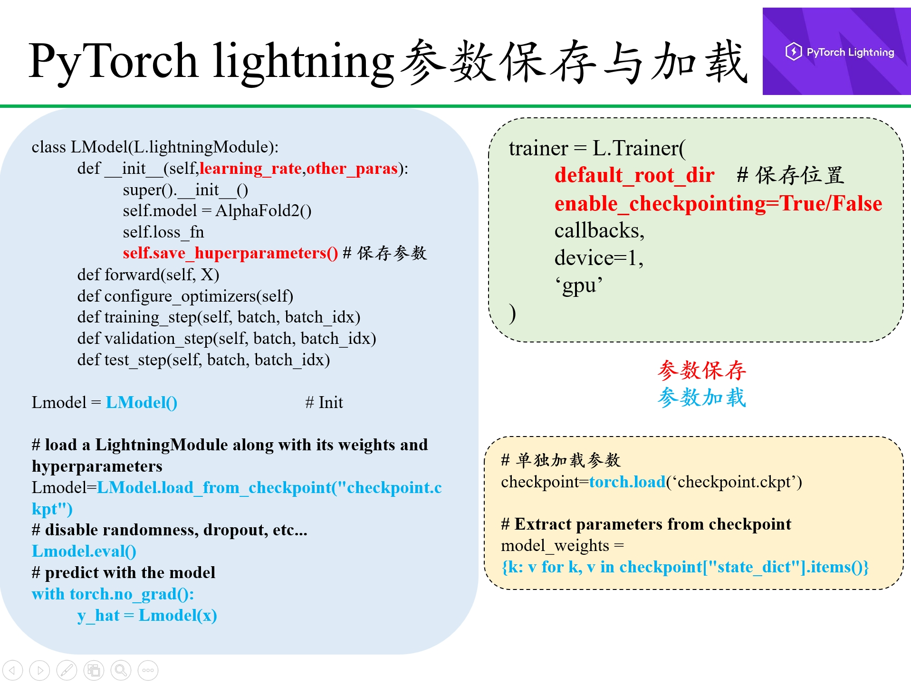
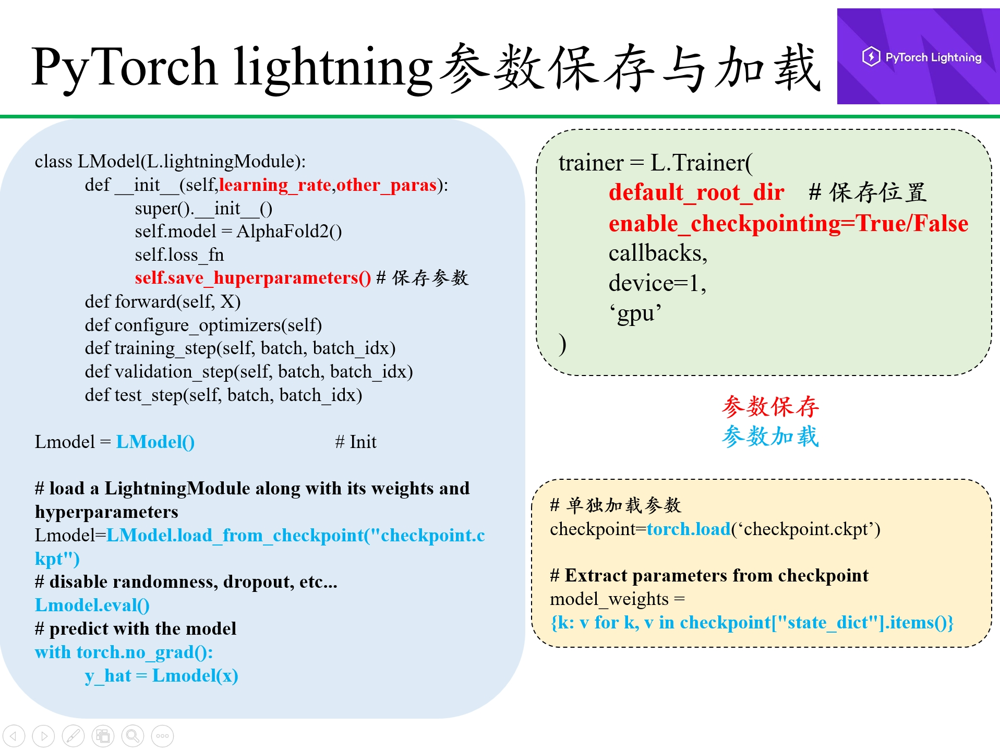
 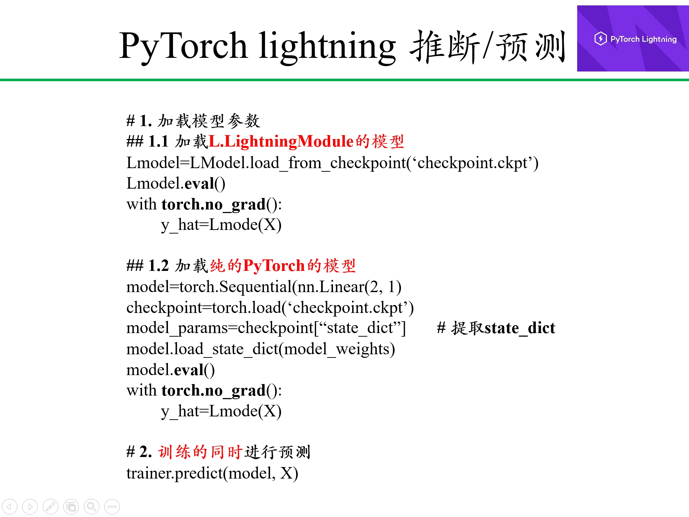
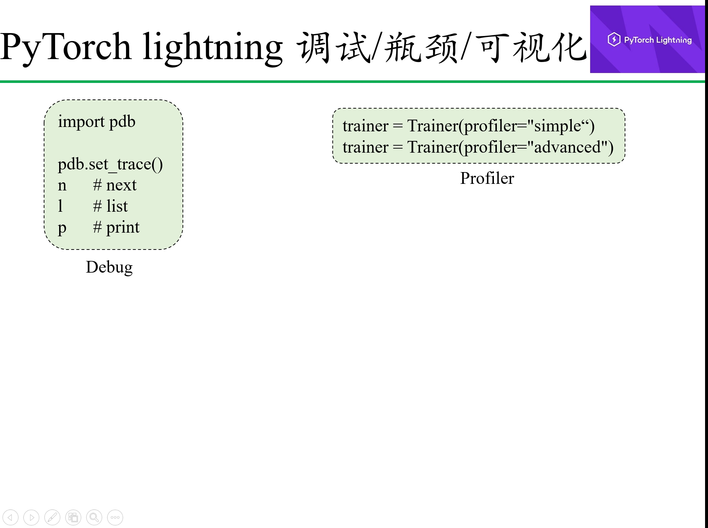
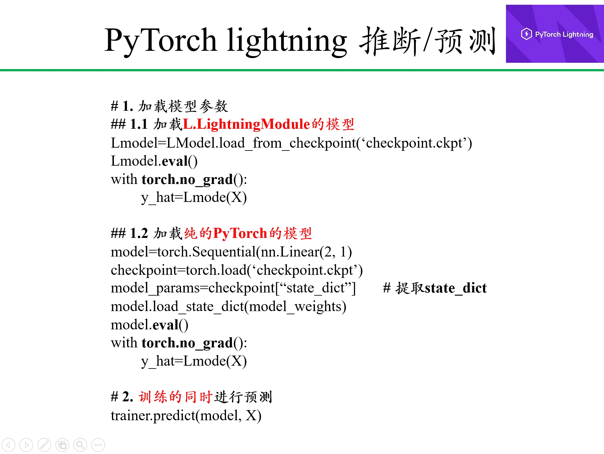
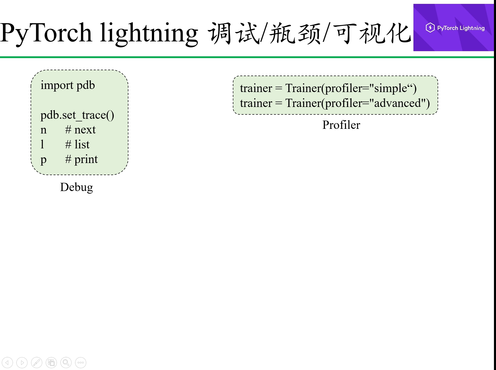
import lightning as L
print(f'Pytorch lightning version: {L.__version__}')
/bmp/backup/zhaosy/miniconda3/envs/pytorch/lib/python3.12/site-packages/tqdm/auto.py:21: TqdmWarning: IProgress not found. Please update jupyter and ipywidgets. See https://ipywidgets.readthedocs.io/en/stable/user_install.html from .autonotebook import tqdm as notebook_tqdm
Pytorch lightning version: 2.4.0
# 虚拟出一些数据
# 仅供参考
import torch
def syn_datas(
w = torch.tensor([2.0, -3.0]),
b = torch.tensor([3.4]),
nums = 10000):
X = torch.normal(mean=0, std=0.1, size=(nums, w.shape[0]), dtype=torch.float32)
y = X @ w + b
y += torch.normal(mean=0, std=0.1, size=y.shape, dtype=torch.float)
return X, y
# 预设参数，注意 形状/维度
preset_weight = torch.tensor([2.0, -3.0], dtype=torch.float32).reshape(2, 1)
preset_bias = torch.tensor([3.4], dtype=torch.float32)
# 虚拟数据
features, labels = syn_datas(w=preset_weight, b=preset_bias, nums=10000)
# 初步查看
features.shape, labels.shape, features[0], labels[0]
(torch.Size([10000, 2]), torch.Size([10000, 1]), tensor([ 0.1441, -0.0539]), tensor([3.7984]))
from torch.utils import data
datasets = data.TensorDataset(features, labels)
train_iter = data.DataLoader(dataset=datasets, shuffle=True, batch_size=128, num_workers=10)
# 用纯PyTorch构建模型的网络结构
from torch import nn
class AlphaFold2(nn.Module):
def __init__(self, in_features=2, out_features=1):
super().__init__()
self.hidden = nn.Sequential(nn.Linear(in_features, out_features))
def forward(self, X):
return self.hidden(X)
16.4. ModelWrapper.py¶
利用PyTorch lightning训练框架进行训练只是方便调用，最后进行模型魔改后最好还是用纯PyTorch进行学习。
都是固定框架（API信息如下）
- L.LightningModule API
- Trainer API
- Automatically enabling/disabling grads
- Running the training, validation and test dataloaders
- Calling the Callbacks at the appropriate times
- Putting batches and computations on the correct devices
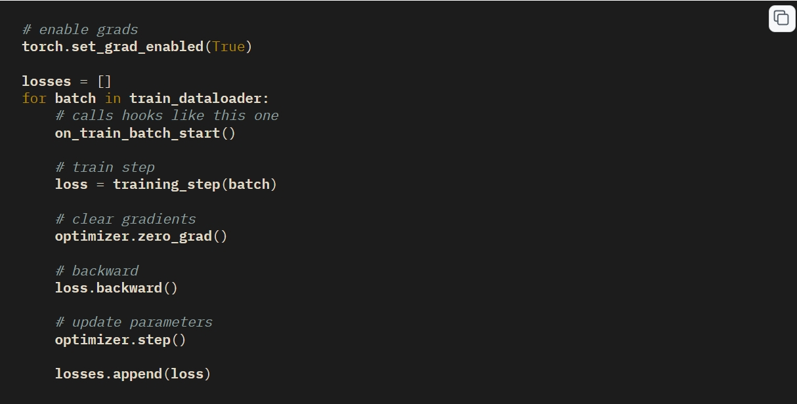
# 用PyTorch lightning构建训练步骤
from torch import nn
from torch import optim
import lightning as L
class AlphaFold2Wrapper(L.LightningModule):
def __init__(self, learning_rate=0.001):
super().__init__()
## save hyperparameters
self.save_hyperparameters() # 超参数保存
self.learning_rate = learning_rate # 超参数
## model initiate from model constructed by pure PyTorch
self.demo_model = AlphaFold2(in_features=2, out_features=1) ## 模型
## loss_fn
self.loss_fn = torch.nn.MSELoss() ## 损失函数
def forward(self, X):
return self.demo_model(X)
def configure_optimizers(self): ## 优化函数
opt = optim.SGD(self.parameters(), lr=self.learning_rate)
return opt
def training_step(self, batch, batch_idx):
'''训练步骤'''
X, y = batch
y_hat = self.forward(X)
loss = self.loss_fn(y_hat, y)
self.log('train_loss', loss, prog_bar=True) # 在进度条上显示出来
self.training_step_outputs.append(loss) # 保存结果，以备后续使用 (on_train_epoch_end(self))
return loss
# def on_train_batch_start(self, batch, batch_idx):
# '''
# Called in the training loop before anything happens for that batch.
# If you return -1 here, you will skip training for the rest of the current epoch.
# '''
# pass
# def on_train_batch_end(self, outputs, batch, batch_idx):
# '''
# Called in the training loop after the batch.
# Parameters:
# outputs (Union[Tensor, Mapping[str, Any], None]) – The outputs of training_step(x)
# batch (Any) – The batched data as it is returned by the training DataLoader.
# batch_idx (int) – the index of the batch
# '''
# pass
# def on_train_epoch_start(self):
# '''Called in the training loop at the very beginning of the epoch.'''
# pass
def on_train_epoch_end(self):
'''
Called in the training loop at the very end of the epoch.
To access all batch outputs at the end of the epoch,
you can cache step outputs as an attribute of the LightningModule and access them in this hook:
'''
# do something with all training_step outputs, for example:
epoch_mean = torch.stack(self.training_step_outputs).mean() # 来自于training_step()计算结果
self.log("training_epoch_mean", epoch_mean)
# free up the memory
self.training_step_outputs.clear()
def validation_step(self, batch, batch_idx):
'''验证步骤'''
X, y = batch
y_hat = self.forward(X)
loss = self.loss_fn(y_hat, y)
self.log('val_loss', loss, prog_bar=True)
return loss
# def on_validation_batch_start(self, batch, batch_idx, dataloader_idx=0):
# '''Called in the validation loop before anything happens for that batch.'''
# pass
# def on_validation_batch_end(self, outputs, batch, batch_idx, dataloader_idx=0):
# '''Called in the validation loop after the batch.
# Parameters:
# outputs (Union[Tensor, Mapping[str, Any], None]) – The outputs of validation_step(x)
# batch (Any) – The batched data as it is returned by the validation DataLoader.
# batch_idx (int) – the index of the batch
# dataloader_idx (int) – the index of the dataloader
# '''
# pass
# def on_validation_epoch_start(self):
# '''Called in the validation loop at the very beginning of the epoch.'''
# pass
def on_validation_epoch_end(self):
'''Called in the validation loop at the very end of the epoch.'''
pass
def test_step(self, batch, batch_idx):
'''测试步骤'''
X, y = batch
y_hat = self.forward(X)
loss = self.loss_fn(y_hat, y)
self.log('test_loss', loss)
return loss
def prediction_step(self, batch, batch_idx):
'''预测步骤'''
X, y = batch
y_hat = self.forward(X)
self.log('y_hat', y_hat)
return y_hat
## 实例化一个对象
alphafold2 = AlphaFold2Wrapper(learning_rate=0.01)
trainer = L.Trainer(
accelerator="gpu", # cpu, gpu, tpu, auto
devices=1,
# strategy="ddp", # ddp, ddp_spawn, ddp_notebook
# num_nodes=1, # Number of GPU nodes for distributed training.
# precision="32-true", # There are two different techniques to set the mixed precision. “True” precision and “Mixed” precision.
# callbacks = ,
# min_epochs=1,
max_epochs=10,
# min_steps=None, # Force training for at least this number of global steps. Trainer will train model for at least min_steps or min_epochs (latest).
max_steps=-1, # Stop training after this number of global steps. Training will stop if max_steps or max_epochs have reached (earliest).
log_every_n_steps=1, ## How often to add logging rows (does not write to disk)
check_val_every_n_epoch=1, # default used by the Trainer
# default_root_dir=os.getcwd(), # os.getcwd()
# enable_progress_bar=True, # Whether to enable or disable the progress bar. Defaults to True.
# enable_model_summary=True, # Whether to enable or disable the model summarization. Defaults to True.
profiler=None, # simple, advanced, None: To profile individual steps during training and assist in identifying bottlenecks.
)
GPU available: True (cuda), used: True TPU available: False, using: 0 TPU cores HPU available: False, using: 0 HPUs
16.4.1. Training and vlidation¶
Training的同时进行Validation。
trainer.fit(
model=alphafold2,
train_dataloaders=train_iter,
val_dataloaders=train_iter
)
LOCAL_RANK: 0 - CUDA_VISIBLE_DEVICES: [0,1] | Name | Type | Params | Mode -------------------------------------------------- 0 | demo_model | AlphaFold2 | 3 | train 1 | loss_fn | MSELoss | 0 | train -------------------------------------------------- 3 Trainable params 0 Non-trainable params 3 Total params 0.000 Total estimated model params size (MB) 4 Modules in train mode 0 Modules in eval mode
Sanity Checking: | | 0/? [00:00<?, ?it/s]
/bmp/backup/zhaosy/miniconda3/envs/pytorch/lib/python3.12/site-packages/lightning/pytorch/trainer/connectors/data_connector.py:475: Your `val_dataloader`'s sampler has shuffling enabled, it is strongly recommended that you turn shuffling off for val/test dataloaders.
Epoch 9: 100%|██████████| 79/79 [00:01<00:00, 75.30it/s, v_num=0, train_loss=0.217, val_loss=0.133]
`Trainer.fit` stopped: `max_epochs=10` reached.
Epoch 9: 100%|██████████| 79/79 [00:01<00:00, 74.95it/s, v_num=0, train_loss=0.217, val_loss=0.133]
16.4.2. Validation¶
只进行validation。
trainer.validate(model=alphafold2, dataloaders=train_iter)
LOCAL_RANK: 0 - CUDA_VISIBLE_DEVICES: [0,1]
Validation DataLoader 0: 100%|██████████| 79/79 [00:00<00:00, 359.93it/s]
────────────────────────────────────────────────────────────────────────────────────────────────────────────────────────
Validate metric DataLoader 0
────────────────────────────────────────────────────────────────────────────────────────────────────────────────────────
val_loss 0.13269878923892975
────────────────────────────────────────────────────────────────────────────────────────────────────────────────────────
[{'val_loss': 0.13269878923892975}]
trainer.test(model=alphafold2, dataloaders=train_iter)
LOCAL_RANK: 0 - CUDA_VISIBLE_DEVICES: [0,1] /bmp/backup/zhaosy/miniconda3/envs/pytorch/lib/python3.12/site-packages/lightning/pytorch/trainer/connectors/data_connector.py:475: Your `test_dataloader`'s sampler has shuffling enabled, it is strongly recommended that you turn shuffling off for val/test dataloaders.
Testing DataLoader 0: 100%|██████████| 79/79 [00:00<00:00, 404.56it/s]
────────────────────────────────────────────────────────────────────────────────────────────────────────────────────────
Test metric DataLoader 0
────────────────────────────────────────────────────────────────────────────────────────────────────────────────────────
test_loss 0.13269877433776855
────────────────────────────────────────────────────────────────────────────────────────────────────────────────────────
[{'test_loss': 0.13269877433776855}]
16.4.4. Prediction¶
进行预测。
16.4.4.1. PyTorch lightning自身Trainer直接predict¶
调用PyTorch lightning自身Trainer的predict，程序会自动使用：
- model.eval()
- with torch.no_grad():
- 或 torch.set_grad_enable(True/False)
trainer.predict(model=alphafold2, dataloaders=features)
LOCAL_RANK: 0 - CUDA_VISIBLE_DEVICES: [0,1]
Predicting DataLoader 0: 100%|██████████| 10000/10000 [00:08<00:00, 1224.36it/s]
[tensor([3.4124]), tensor([3.3868]), tensor([3.3909]), tensor([3.3817]), tensor([3.4208]), tensor([3.3964]), tensor([3.3973]), tensor([3.3862]), tensor([3.3966]), tensor([3.4032]), tensor([3.4066]), tensor([3.3905]), tensor([3.3932]), tensor([3.3774]), tensor([3.3949]), tensor([3.3956]), tensor([3.3845]), tensor([3.3931]), tensor([3.3935]), tensor([3.3898]), tensor([3.4090]), tensor([3.4059]), tensor([3.3987]), tensor([3.3881]), tensor([3.3913]), tensor([3.4166]), tensor([3.3755]), tensor([3.4028]), tensor([3.4021]), tensor([3.4224]), tensor([3.3956]), tensor([3.3914]), tensor([3.3979]), tensor([3.3889]), tensor([3.3950]), tensor([3.3908]), tensor([3.4049]), tensor([3.4014]), tensor([3.3925]), tensor([3.3970]), tensor([3.4043]), tensor([3.4050]), tensor([3.4055]), tensor([3.4033]), tensor([3.3873]), tensor([3.3934]), tensor([3.4031]), tensor([3.4101]), tensor([3.3942]), tensor([3.3713]), tensor([3.3908]), tensor([3.3955]), tensor([3.3886]), tensor([3.4044]), tensor([3.3781]), tensor([3.4005]), tensor([3.4258]), tensor([3.3873]), tensor([3.3782]), tensor([3.3928]), tensor([3.4193]), tensor([3.3874]), tensor([3.3984]), tensor([3.3887]), tensor([3.4131]), tensor([3.4129]), tensor([3.4034]), tensor([3.3979]), tensor([3.3874]), tensor([3.3870]), tensor([3.4152]), tensor([3.3893]), tensor([3.3938]), tensor([3.3955]), tensor([3.3921]), tensor([3.3895]), tensor([3.3981]), tensor([3.3871]), tensor([3.4101]), tensor([3.4051]), tensor([3.3864]), tensor([3.4033]), tensor([3.3987]), tensor([3.3935]), tensor([3.4010]), tensor([3.3961]), tensor([3.3918]), tensor([3.3886]), tensor([3.4129]), tensor([3.3801]), tensor([3.3956]), tensor([3.3981]), tensor([3.3972]), tensor([3.3699]), tensor([3.3770]), tensor([3.4040]), tensor([3.3986]), tensor([3.3855]), tensor([3.3998]), tensor([3.4040]), tensor([3.3861]), tensor([3.3966]), tensor([3.4106]), tensor([3.4038]), tensor([3.4075]), tensor([3.3972]), tensor([3.3843]), tensor([3.3849]), tensor([3.3885]), tensor([3.3999]), tensor([3.3865]), tensor([3.3973]), tensor([3.3804]), tensor([3.3916]), tensor([3.3607]), tensor([3.3936]), tensor([3.3948]), tensor([3.3984]), tensor([3.3910]), tensor([3.4078]), tensor([3.4075]), tensor([3.3888]), tensor([3.3929]), tensor([3.3968]), tensor([3.3875]), tensor([3.3859]), tensor([3.3864]), tensor([3.4090]), tensor([3.3977]), tensor([3.4027]), tensor([3.4120]), tensor([3.4087]), tensor([3.3966]), tensor([3.3961]), tensor([3.3787]), tensor([3.3978]), tensor([3.3952]), tensor([3.3897]), tensor([3.4006]), tensor([3.4003]), tensor([3.4146]), tensor([3.4132]), tensor([3.3967]), tensor([3.3859]), tensor([3.3974]), tensor([3.3895]), tensor([3.4091]), tensor([3.3953]), tensor([3.3847]), tensor([3.3809]), tensor([3.4056]), tensor([3.3944]), tensor([3.4027]), tensor([3.3968]), tensor([3.3890]), tensor([3.4088]), tensor([3.4081]), tensor([3.4046]), tensor([3.4032]), tensor([3.3874]), tensor([3.3803]), tensor([3.3998]), tensor([3.4051]), tensor([3.4086]), tensor([3.3976]), tensor([3.3843]), tensor([3.4084]), tensor([3.3904]), tensor([3.3955]), tensor([3.3869]), tensor([3.3834]), tensor([3.4043]), tensor([3.4136]), tensor([3.4164]), tensor([3.3850]), tensor([3.3986]), tensor([3.3877]), tensor([3.3948]), tensor([3.4094]), tensor([3.3838]), tensor([3.3951]), tensor([3.3938]), tensor([3.4015]), tensor([3.3974]), tensor([3.3974]), tensor([3.3943]), tensor([3.4021]), tensor([3.3885]), tensor([3.3933]), tensor([3.4221]), tensor([3.3944]), tensor([3.3702]), tensor([3.3849]), tensor([3.3721]), tensor([3.4130]), tensor([3.4109]), tensor([3.3931]), tensor([3.4006]), tensor([3.3931]), tensor([3.3830]), tensor([3.4076]), tensor([3.4150]), tensor([3.3928]), tensor([3.3854]), tensor([3.3955]), tensor([3.3874]), tensor([3.3804]), tensor([3.3996]), tensor([3.3997]), tensor([3.3945]), tensor([3.3966]), tensor([3.3844]), tensor([3.4151]), tensor([3.3878]), tensor([3.4081]), tensor([3.3861]), tensor([3.3918]), tensor([3.3909]), tensor([3.3790]), tensor([3.3976]), tensor([3.3993]), tensor([3.3754]), tensor([3.3959]), tensor([3.4031]), tensor([3.3949]), tensor([3.3995]), tensor([3.4028]), tensor([3.3978]), tensor([3.3845]), tensor([3.3905]), tensor([3.4012]), tensor([3.4248]), tensor([3.4041]), tensor([3.3908]), tensor([3.3819]), tensor([3.3824]), tensor([3.4074]), tensor([3.4040]), tensor([3.3797]), tensor([3.3876]), tensor([3.3864]), tensor([3.3888]), tensor([3.3748]), tensor([3.3762]), tensor([3.3839]), tensor([3.4036]), tensor([3.4012]), tensor([3.4112]), tensor([3.3962]), tensor([3.3846]), tensor([3.3814]), tensor([3.4060]), tensor([3.3960]), tensor([3.3785]), tensor([3.4101]), tensor([3.3812]), tensor([3.4179]), tensor([3.3958]), tensor([3.4003]), tensor([3.3811]), tensor([3.3881]), tensor([3.3697]), tensor([3.3896]), tensor([3.4057]), tensor([3.4168]), tensor([3.4068]), tensor([3.3944]), tensor([3.3939]), tensor([3.3898]), tensor([3.4055]), tensor([3.4003]), tensor([3.3825]), tensor([3.3823]), tensor([3.3900]), tensor([3.4036]), tensor([3.3910]), tensor([3.3669]), tensor([3.4105]), tensor([3.3908]), tensor([3.3930]), tensor([3.3747]), tensor([3.4005]), tensor([3.4129]), tensor([3.3842]), tensor([3.4011]), tensor([3.3984]), tensor([3.3772]), tensor([3.4038]), tensor([3.3999]), tensor([3.3987]), tensor([3.3911]), tensor([3.4013]), tensor([3.4021]), tensor([3.3991]), tensor([3.3840]), tensor([3.4171]), tensor([3.4068]), tensor([3.4061]), tensor([3.3943]), tensor([3.4080]), tensor([3.3757]), tensor([3.3950]), tensor([3.3848]), tensor([3.3827]), tensor([3.4070]), tensor([3.4035]), tensor([3.3793]), tensor([3.3813]), tensor([3.4006]), tensor([3.3937]), tensor([3.3855]), tensor([3.3849]), tensor([3.3879]), tensor([3.4032]), tensor([3.3842]), tensor([3.4141]), tensor([3.3924]), tensor([3.3830]), tensor([3.4130]), tensor([3.3903]), tensor([3.3871]), tensor([3.4162]), tensor([3.4080]), tensor([3.3905]), tensor([3.3957]), tensor([3.3950]), tensor([3.3955]), tensor([3.4070]), tensor([3.4014]), tensor([3.3858]), tensor([3.3889]), tensor([3.3913]), tensor([3.4134]), tensor([3.3972]), tensor([3.4066]), tensor([3.4012]), tensor([3.3954]), tensor([3.3905]), tensor([3.3966]), tensor([3.3846]), tensor([3.4101]), tensor([3.4278]), tensor([3.4167]), tensor([3.3849]), tensor([3.4030]), tensor([3.3895]), tensor([3.3883]), tensor([3.3797]), tensor([3.3906]), tensor([3.3962]), tensor([3.3998]), tensor([3.3837]), tensor([3.3906]), tensor([3.3814]), tensor([3.3948]), tensor([3.4101]), tensor([3.3900]), tensor([3.3951]), tensor([3.3977]), tensor([3.3841]), tensor([3.4076]), tensor([3.4021]), tensor([3.3867]), tensor([3.3944]), tensor([3.3987]), tensor([3.3875]), tensor([3.3883]), tensor([3.3954]), tensor([3.4117]), tensor([3.3833]), tensor([3.4028]), tensor([3.3847]), tensor([3.3911]), tensor([3.4061]), tensor([3.3887]), tensor([3.4028]), tensor([3.3935]), tensor([3.4019]), tensor([3.3861]), tensor([3.3714]), tensor([3.3898]), tensor([3.4068]), tensor([3.3961]), tensor([3.4316]), tensor([3.3874]), tensor([3.3967]), tensor([3.4210]), tensor([3.4201]), tensor([3.4086]), tensor([3.3852]), tensor([3.3954]), tensor([3.4149]), tensor([3.4019]), tensor([3.4001]), tensor([3.3926]), tensor([3.4000]), tensor([3.4079]), tensor([3.3977]), tensor([3.3997]), tensor([3.3957]), tensor([3.4179]), tensor([3.4061]), tensor([3.3923]), tensor([3.4027]), tensor([3.3974]), tensor([3.3904]), tensor([3.4022]), tensor([3.3988]), tensor([3.3825]), tensor([3.3840]), tensor([3.4073]), tensor([3.3974]), tensor([3.3830]), tensor([3.3974]), tensor([3.3870]), tensor([3.4090]), tensor([3.3719]), tensor([3.4009]), tensor([3.3729]), tensor([3.4007]), tensor([3.3830]), tensor([3.4080]), tensor([3.3862]), tensor([3.3794]), tensor([3.3971]), tensor([3.3994]), tensor([3.3896]), tensor([3.3780]), tensor([3.4054]), tensor([3.3893]), tensor([3.3879]), tensor([3.3838]), tensor([3.3832]), tensor([3.4018]), tensor([3.3888]), tensor([3.3988]), tensor([3.3934]), tensor([3.3899]), tensor([3.4056]), tensor([3.3880]), tensor([3.3884]), tensor([3.4088]), tensor([3.3989]), tensor([3.3885]), tensor([3.4058]), tensor([3.4244]), tensor([3.4051]), tensor([3.4101]), tensor([3.3924]), tensor([3.4058]), tensor([3.4032]), tensor([3.4103]), tensor([3.4106]), tensor([3.4228]), tensor([3.4213]), tensor([3.3915]), tensor([3.4078]), tensor([3.3992]), tensor([3.3945]), tensor([3.3877]), tensor([3.3812]), tensor([3.3730]), tensor([3.4031]), tensor([3.3698]), tensor([3.4008]), tensor([3.3902]), tensor([3.3899]), tensor([3.3998]), tensor([3.4109]), tensor([3.4035]), tensor([3.3786]), tensor([3.3959]), tensor([3.3848]), tensor([3.4000]), tensor([3.3748]), tensor([3.4036]), tensor([3.4022]), tensor([3.3908]), tensor([3.3926]), tensor([3.3972]), tensor([3.4044]), tensor([3.4077]), tensor([3.3990]), tensor([3.3943]), tensor([3.3992]), tensor([3.3849]), tensor([3.4102]), tensor([3.3814]), tensor([3.4102]), tensor([3.3866]), tensor([3.4003]), tensor([3.4128]), tensor([3.3874]), tensor([3.4031]), tensor([3.3985]), tensor([3.3962]), tensor([3.3875]), tensor([3.4017]), tensor([3.3998]), tensor([3.3957]), tensor([3.3932]), tensor([3.3958]), tensor([3.3973]), tensor([3.3950]), tensor([3.3947]), tensor([3.3999]), tensor([3.4081]), tensor([3.3979]), tensor([3.4067]), tensor([3.3806]), tensor([3.4036]), tensor([3.4196]), tensor([3.3900]), tensor([3.3872]), tensor([3.3964]), tensor([3.3935]), tensor([3.4003]), tensor([3.3981]), tensor([3.4003]), tensor([3.3864]), tensor([3.3797]), tensor([3.3957]), tensor([3.4134]), tensor([3.4020]), tensor([3.3841]), tensor([3.3775]), tensor([3.3854]), tensor([3.3974]), tensor([3.3947]), tensor([3.4116]), tensor([3.4051]), tensor([3.3892]), tensor([3.4026]), tensor([3.3893]), tensor([3.4023]), tensor([3.3904]), tensor([3.3944]), tensor([3.4056]), tensor([3.4035]), tensor([3.3766]), tensor([3.3897]), tensor([3.3936]), tensor([3.4063]), tensor([3.3832]), tensor([3.4096]), tensor([3.3850]), tensor([3.4216]), tensor([3.4043]), tensor([3.3882]), tensor([3.3908]), tensor([3.3987]), tensor([3.3989]), tensor([3.4090]), tensor([3.3868]), tensor([3.3926]), tensor([3.3796]), tensor([3.3829]), tensor([3.4089]), tensor([3.3850]), tensor([3.3933]), tensor([3.3950]), tensor([3.3988]), tensor([3.4028]), tensor([3.3891]), tensor([3.4035]), tensor([3.3948]), tensor([3.3858]), tensor([3.3911]), tensor([3.3868]), tensor([3.3836]), tensor([3.3964]), tensor([3.4149]), tensor([3.3960]), tensor([3.3946]), tensor([3.4032]), tensor([3.3866]), tensor([3.4022]), tensor([3.3883]), tensor([3.3948]), tensor([3.3981]), tensor([3.4169]), tensor([3.3975]), tensor([3.4144]), tensor([3.3744]), tensor([3.4058]), tensor([3.3935]), tensor([3.3881]), tensor([3.3699]), tensor([3.4189]), tensor([3.3954]), tensor([3.3870]), tensor([3.3865]), tensor([3.3838]), tensor([3.3925]), tensor([3.3861]), tensor([3.3957]), tensor([3.4019]), tensor([3.4072]), tensor([3.3948]), tensor([3.4002]), tensor([3.3793]), tensor([3.4097]), tensor([3.3896]), tensor([3.4005]), tensor([3.3942]), tensor([3.3988]), tensor([3.3954]), tensor([3.3904]), tensor([3.4143]), tensor([3.3803]), tensor([3.4204]), tensor([3.3789]), tensor([3.3836]), tensor([3.4065]), tensor([3.3721]), tensor([3.3925]), tensor([3.3979]), tensor([3.4049]), tensor([3.3764]), tensor([3.3928]), tensor([3.3979]), tensor([3.3951]), tensor([3.4004]), tensor([3.3832]), tensor([3.4129]), tensor([3.4088]), tensor([3.3887]), tensor([3.3962]), tensor([3.3855]), tensor([3.3939]), tensor([3.3819]), tensor([3.3905]), tensor([3.4249]), tensor([3.4143]), tensor([3.4135]), tensor([3.3960]), tensor([3.4036]), tensor([3.3716]), tensor([3.3956]), tensor([3.4005]), tensor([3.3983]), tensor([3.4125]), tensor([3.3915]), tensor([3.4220]), tensor([3.3756]), tensor([3.3922]), tensor([3.3857]), tensor([3.4030]), tensor([3.3887]), tensor([3.3770]), tensor([3.3992]), tensor([3.4071]), tensor([3.4107]), tensor([3.4151]), tensor([3.4113]), tensor([3.4054]), tensor([3.4038]), tensor([3.3863]), tensor([3.4015]), tensor([3.4036]), tensor([3.3857]), tensor([3.3983]), tensor([3.3962]), tensor([3.3979]), tensor([3.3808]), tensor([3.4076]), tensor([3.4043]), tensor([3.3870]), tensor([3.3957]), tensor([3.3880]), tensor([3.3957]), tensor([3.3983]), tensor([3.3919]), tensor([3.4050]), tensor([3.3837]), tensor([3.4005]), tensor([3.3585]), tensor([3.4139]), tensor([3.3854]), tensor([3.4070]), tensor([3.3916]), tensor([3.3823]), tensor([3.3984]), tensor([3.4058]), tensor([3.3818]), tensor([3.4084]), tensor([3.3786]), tensor([3.3798]), tensor([3.3991]), tensor([3.3876]), tensor([3.3987]), tensor([3.4036]), tensor([3.4024]), tensor([3.3893]), tensor([3.3973]), tensor([3.3846]), tensor([3.4137]), tensor([3.3864]), tensor([3.3943]), tensor([3.3881]), tensor([3.3978]), tensor([3.4078]), tensor([3.3929]), tensor([3.3951]), tensor([3.3995]), tensor([3.4120]), tensor([3.4318]), tensor([3.3795]), tensor([3.3785]), tensor([3.3924]), tensor([3.3759]), tensor([3.3997]), tensor([3.3840]), tensor([3.4264]), tensor([3.4175]), tensor([3.3834]), tensor([3.3861]), tensor([3.3997]), tensor([3.4206]), tensor([3.3871]), tensor([3.3845]), tensor([3.4004]), tensor([3.3881]), tensor([3.3914]), tensor([3.4153]), tensor([3.3979]), tensor([3.4035]), tensor([3.3940]), tensor([3.3738]), tensor([3.3919]), tensor([3.3889]), tensor([3.3880]), tensor([3.3940]), tensor([3.4042]), tensor([3.4017]), tensor([3.4033]), tensor([3.4213]), tensor([3.3893]), tensor([3.3788]), tensor([3.3851]), tensor([3.3969]), tensor([3.3791]), tensor([3.3855]), tensor([3.3906]), tensor([3.3865]), tensor([3.3909]), tensor([3.3916]), tensor([3.3898]), tensor([3.3884]), tensor([3.3852]), tensor([3.3982]), tensor([3.4141]), tensor([3.3893]), tensor([3.4094]), tensor([3.3684]), tensor([3.4163]), tensor([3.3763]), tensor([3.3887]), tensor([3.3932]), tensor([3.3873]), tensor([3.3944]), tensor([3.3999]), tensor([3.4012]), tensor([3.3957]), tensor([3.4031]), tensor([3.3958]), tensor([3.3873]), tensor([3.3865]), tensor([3.4221]), tensor([3.4161]), tensor([3.3898]), tensor([3.3983]), tensor([3.3923]), tensor([3.4119]), tensor([3.3873]), tensor([3.3876]), tensor([3.3926]), tensor([3.3767]), tensor([3.4065]), tensor([3.3951]), tensor([3.4100]), tensor([3.3970]), tensor([3.3796]), tensor([3.4057]), tensor([3.3976]), tensor([3.3955]), tensor([3.3911]), tensor([3.3922]), tensor([3.3937]), tensor([3.3938]), tensor([3.3969]), tensor([3.3936]), tensor([3.3967]), tensor([3.3899]), tensor([3.3775]), tensor([3.4075]), tensor([3.3957]), tensor([3.3970]), tensor([3.3836]), tensor([3.4081]), tensor([3.3845]), tensor([3.3839]), tensor([3.3944]), tensor([3.3899]), tensor([3.3913]), tensor([3.4027]), tensor([3.3920]), tensor([3.3838]), tensor([3.4055]), tensor([3.4126]), tensor([3.4025]), tensor([3.3967]), tensor([3.4007]), tensor([3.3952]), tensor([3.3953]), tensor([3.4139]), tensor([3.4124]), tensor([3.3936]), tensor([3.4005]), tensor([3.4197]), tensor([3.3932]), tensor([3.3995]), tensor([3.3759]), tensor([3.3923]), tensor([3.3989]), tensor([3.3915]), tensor([3.3882]), tensor([3.4209]), tensor([3.3956]), tensor([3.3979]), tensor([3.3857]), tensor([3.4188]), tensor([3.3918]), tensor([3.4094]), tensor([3.3897]), tensor([3.3953]), tensor([3.3892]), tensor([3.3970]), tensor([3.3870]), tensor([3.3946]), tensor([3.3978]), tensor([3.3755]), tensor([3.4047]), tensor([3.4014]), tensor([3.4015]), tensor([3.3726]), tensor([3.3975]), tensor([3.4013]), tensor([3.4140]), tensor([3.3905]), tensor([3.3780]), tensor([3.3963]), tensor([3.4032]), tensor([3.3950]), tensor([3.3960]), tensor([3.3978]), tensor([3.3896]), tensor([3.4156]), tensor([3.4089]), tensor([3.3999]), tensor([3.3753]), tensor([3.3867]), tensor([3.4000]), tensor([3.4068]), tensor([3.4117]), tensor([3.4168]), tensor([3.3935]), tensor([3.4048]), tensor([3.4027]), tensor([3.3758]), tensor([3.4010]), tensor([3.4005]), tensor([3.3967]), tensor([3.4026]), tensor([3.3929]), tensor([3.3893]), tensor([3.3895]), tensor([3.4025]), tensor([3.3774]), tensor([3.3910]), tensor([3.3889]), tensor([3.4063]), tensor([3.3899]), tensor([3.3971]), tensor([3.3923]), tensor([3.4122]), tensor([3.3859]), tensor([3.3962]), tensor([3.3989]), tensor([3.3804]), tensor([3.4029]), tensor([3.3983]), tensor([3.3745]), tensor([3.4155]), tensor([3.3889]), tensor([3.3940]), tensor([3.3936]), tensor([3.3784]), tensor([3.4200]), tensor([3.3796]), tensor([3.3854]), tensor([3.3860]), tensor([3.4193]), tensor([3.4039]), tensor([3.4040]), tensor([3.4007]), tensor([3.3829]), tensor([3.3982]), tensor([3.3808]), tensor([3.4081]), tensor([3.3952]), tensor([3.4156]), tensor([3.4112]), tensor([3.4128]), tensor([3.4121]), tensor([3.3957]), tensor([3.3943]), tensor([3.3799]), tensor([3.3915]), tensor([3.4176]), tensor([3.3785]), tensor([3.3834]), tensor([3.4043]), tensor([3.3938]), tensor([3.3826]), tensor([3.4024]), tensor([3.3841]), tensor([3.3795]), tensor([3.3810]), tensor([3.3850]), tensor([3.3951]), tensor([3.3959]), tensor([3.3843]), tensor([3.3688]), tensor([3.3970]), tensor([3.4021]), tensor([3.3768]), tensor([3.4121]), tensor([3.3758]), tensor([3.3795]), tensor([3.3867]), tensor([3.3911]), tensor([3.4070]), tensor([3.3904]), tensor([3.4122]), tensor([3.4100]), tensor([3.3890]), tensor([3.4108]), tensor([3.3873]), tensor([3.3842]), tensor([3.3999]), tensor([3.4127]), tensor([3.3960]), tensor([3.4027]), tensor([3.3887]), tensor([3.4074]), tensor([3.3842]), tensor([3.3875]), tensor([3.3933]), tensor([3.3945]), tensor([3.3959]), tensor([3.3963]), tensor([3.3896]), tensor([3.4010]), tensor([3.3924]), tensor([3.4082]), tensor([3.3833]), tensor([3.3936]), tensor([3.3899]), tensor([3.3990]), tensor([3.3942]), tensor([3.3891]), tensor([3.3880]), tensor([3.4155]), tensor([3.3919]), tensor([3.3955]), tensor([3.3861]), tensor([3.4238]), tensor([3.3786]), tensor([3.4097]), tensor([3.4214]), tensor([3.3743]), tensor([3.3897]), tensor([3.4080]), tensor([3.4082]), tensor([3.3964]), tensor([3.3845]), tensor([3.4070]), tensor([3.3896]), tensor([3.4056]), tensor([3.3756]), tensor([3.3853]), tensor([3.4129]), tensor([3.4044]), tensor([3.3836]), tensor([3.3902]), tensor([3.3959]), tensor([3.3827]), tensor([3.4051]), tensor([3.3900]), ...]
pretrained_alphafold2 = AlphaFold2Wrapper.load_from_checkpoint('./lightning_logs/version_0/checkpoints/epoch=9-step=790.ckpt')
# 进行预测/推理
pretrained_alphafold2.eval()
with torch.no_grad():
y_hat = pretrained_alphafold2(features.to('cuda:0'))
y_hat
tensor([[3.4124],
[3.3868],
[3.3909],
...,
[3.4022],
[3.3898],
[3.3934]], device='cuda:0')
16.4.4.3. 提取权重后加载至纯PyTorch模型¶
从checkpoint中提取模型的权重参数，修改相关格式后再加载到纯PyTorch的模型中，就是普通又熟悉的PyTorch的预测方式了。
checkpoint_path = './lightning_logs/version_0/checkpoints/epoch=9-step=790.ckpt'
checkpoint = torch.load(checkpoint_path)
checkpoint # checkpoint的贮存格式，其中 'state_dict'就是模型权重信息
/tmp/ipykernel_268120/3329860571.py:2: FutureWarning: You are using `torch.load` with `weights_only=False` (the current default value), which uses the default pickle module implicitly. It is possible to construct malicious pickle data which will execute arbitrary code during unpickling (See https://github.com/pytorch/pytorch/blob/main/SECURITY.md#untrusted-models for more details). In a future release, the default value for `weights_only` will be flipped to `True`. This limits the functions that could be executed during unpickling. Arbitrary objects will no longer be allowed to be loaded via this mode unless they are explicitly allowlisted by the user via `torch.serialization.add_safe_globals`. We recommend you start setting `weights_only=True` for any use case where you don't have full control of the loaded file. Please open an issue on GitHub for any issues related to this experimental feature. checkpoint = torch.load(checkpoint_path)
{'epoch': 9,
'global_step': 790,
'pytorch-lightning_version': '2.4.0',
'state_dict': OrderedDict([('demo_model.hidden.0.weight',
tensor([[ 0.0967, -0.0567]], device='cuda:0')),
('demo_model.hidden.0.bias',
tensor([3.3954], device='cuda:0'))]),
'loops': {'fit_loop': {'state_dict': {},
'epoch_loop.state_dict': {'_batches_that_stepped': 790},
'epoch_loop.batch_progress': {'total': {'ready': 790,
'completed': 790,
'started': 790,
'processed': 790},
'current': {'ready': 79, 'completed': 79, 'started': 79, 'processed': 79},
'is_last_batch': True},
'epoch_loop.scheduler_progress': {'total': {'ready': 0, 'completed': 0},
'current': {'ready': 0, 'completed': 0}},
'epoch_loop.automatic_optimization.state_dict': {},
'epoch_loop.automatic_optimization.optim_progress': {'optimizer': {'step': {'total': {'ready': 790,
'completed': 790},
'current': {'ready': 79, 'completed': 79}},
'zero_grad': {'total': {'ready': 790, 'completed': 790, 'started': 790},
'current': {'ready': 79, 'completed': 79, 'started': 79}}}},
'epoch_loop.manual_optimization.state_dict': {},
'epoch_loop.manual_optimization.optim_step_progress': {'total': {'ready': 0,
'completed': 0},
'current': {'ready': 0, 'completed': 0}},
'epoch_loop.val_loop.state_dict': {},
'epoch_loop.val_loop.batch_progress': {'total': {'ready': 79,
'completed': 79,
'started': 79,
'processed': 79},
'current': {'ready': 79, 'completed': 79, 'started': 79, 'processed': 79},
'is_last_batch': True},
'epoch_progress': {'total': {'ready': 10,
'completed': 9,
'started': 10,
'processed': 10},
'current': {'ready': 10, 'completed': 9, 'started': 10, 'processed': 10}}},
'validate_loop': {'state_dict': {},
'batch_progress': {'total': {'ready': 0,
'completed': 0,
'started': 0,
'processed': 0},
'current': {'ready': 0, 'completed': 0, 'started': 0, 'processed': 0},
'is_last_batch': False}},
'test_loop': {'state_dict': {},
'batch_progress': {'total': {'ready': 0,
'completed': 0,
'started': 0,
'processed': 0},
'current': {'ready': 0, 'completed': 0, 'started': 0, 'processed': 0},
'is_last_batch': False}},
'predict_loop': {'state_dict': {},
'batch_progress': {'total': {'ready': 0,
'completed': 0,
'started': 0,
'processed': 0},
'current': {'ready': 0, 'completed': 0, 'started': 0, 'processed': 0}}}},
'callbacks': {"ModelCheckpoint{'monitor': None, 'mode': 'min', 'every_n_train_steps': 0, 'every_n_epochs': 1, 'train_time_interval': None}": {'monitor': None,
'best_model_score': None,
'best_model_path': '/bmp/backup/zhaosy/ws/PyTorch_learning/lightning_logs/version_0/checkpoints/epoch=9-step=790.ckpt',
'current_score': None,
'dirpath': '/bmp/backup/zhaosy/ws/PyTorch_learning/lightning_logs/version_0/checkpoints',
'best_k_models': {},
'kth_best_model_path': '',
'kth_value': tensor(inf),
'last_model_path': ''}},
'optimizer_states': [{'state': {},
'param_groups': [{'lr': 0.01,
'momentum': 0,
'dampening': 0,
'weight_decay': 0,
'nesterov': False,
'maximize': False,
'foreach': None,
'differentiable': False,
'fused': None,
'params': [0, 1]}]}],
'lr_schedulers': [],
'hparams_name': 'kwargs',
'hyper_parameters': {'learning_rate': 0.01}}
alphafold2, checkpoint['state_dict'] # with AlphaFold2Wrapper, 多了demo_model.
(AlphaFold2Wrapper(
(demo_model): AlphaFold2(
(hidden): Sequential(
(0): Linear(in_features=2, out_features=1, bias=True)
)
)
(loss_fn): MSELoss()
),
OrderedDict([('demo_model.hidden.0.weight',
tensor([[ 0.0967, -0.0567]], device='cuda:0')),
('demo_model.hidden.0.bias',
tensor([3.3954], device='cuda:0'))]))
for param in checkpoint['state_dict']:
print(param)
demo_model.hidden.0.weight demo_model.hidden.0.bias
纯PyTorch的state_dict如下，如上的checkpoint中的state_dict不符合相应格式，需要进行更改：
alphafold_with_pure_pytorch = AlphaFold2()
alphafold_with_pure_pytorch, alphafold_with_pure_pytorch.state_dict()
(AlphaFold2(
(hidden): Sequential(
(0): Linear(in_features=2, out_features=1, bias=True)
)
),
OrderedDict([('hidden.0.weight', tensor([[-0.5207, 0.0861]])),
('hidden.0.bias', tensor([0.0467]))]))
- 更改操作如下：
model_weights = checkpoint['state_dict']
# 把demo_model.删除即可
for key in model_weights:
model_weights[key.replace("demo_model.", "")] = model_weights.pop(key)
checkpoint['state_dict'], model_weights # 都更改了，什么鬼
(OrderedDict([('hidden.0.weight',
tensor([[ 0.0967, -0.0567]], device='cuda:0')),
('hidden.0.bias', tensor([3.3954], device='cuda:0'))]),
OrderedDict([('hidden.0.weight',
tensor([[ 0.0967, -0.0567]], device='cuda:0')),
('hidden.0.bias', tensor([3.3954], device='cuda:0'))]))
# 重新实例化一个新的对象
alphafold_with_pure_pytorch = AlphaFold2()
# 加载修改后的权重
alphafold_with_pure_pytorch.load_state_dict(model_weights) # 加载修改后的model_weights
# 进行预测/推理
alphafold_with_pure_pytorch.eval()
with torch.no_grad():
y_hat = alphafold_with_pure_pytorch(features)
y_hat
tensor([[3.4124],
[3.3868],
[3.3909],
...,
[3.4022],
[3.3898],
[3.3934]])
17. Torchvision¶
Torchvision Docs: https://pytorch.org/vision/stable/models.html
import torchvision
print('torchvision version:', torchvision.__version__)
torchvision version: 0.19.0
from torchvision import models
models.list_models() # List all models
['alexnet', 'convnext_base', 'convnext_large', 'convnext_small', 'convnext_tiny', 'deeplabv3_mobilenet_v3_large', 'deeplabv3_resnet101', 'deeplabv3_resnet50', 'densenet121', 'densenet161', 'densenet169', 'densenet201', 'efficientnet_b0', 'efficientnet_b1', 'efficientnet_b2', 'efficientnet_b3', 'efficientnet_b4', 'efficientnet_b5', 'efficientnet_b6', 'efficientnet_b7', 'efficientnet_v2_l', 'efficientnet_v2_m', 'efficientnet_v2_s', 'fasterrcnn_mobilenet_v3_large_320_fpn', 'fasterrcnn_mobilenet_v3_large_fpn', 'fasterrcnn_resnet50_fpn', 'fasterrcnn_resnet50_fpn_v2', 'fcn_resnet101', 'fcn_resnet50', 'fcos_resnet50_fpn', 'googlenet', 'inception_v3', 'keypointrcnn_resnet50_fpn', 'lraspp_mobilenet_v3_large', 'maskrcnn_resnet50_fpn', 'maskrcnn_resnet50_fpn_v2', 'maxvit_t', 'mc3_18', 'mnasnet0_5', 'mnasnet0_75', 'mnasnet1_0', 'mnasnet1_3', 'mobilenet_v2', 'mobilenet_v3_large', 'mobilenet_v3_small', 'mvit_v1_b', 'mvit_v2_s', 'quantized_googlenet', 'quantized_inception_v3', 'quantized_mobilenet_v2', 'quantized_mobilenet_v3_large', 'quantized_resnet18', 'quantized_resnet50', 'quantized_resnext101_32x8d', 'quantized_resnext101_64x4d', 'quantized_shufflenet_v2_x0_5', 'quantized_shufflenet_v2_x1_0', 'quantized_shufflenet_v2_x1_5', 'quantized_shufflenet_v2_x2_0', 'r2plus1d_18', 'r3d_18', 'raft_large', 'raft_small', 'regnet_x_16gf', 'regnet_x_1_6gf', 'regnet_x_32gf', 'regnet_x_3_2gf', 'regnet_x_400mf', 'regnet_x_800mf', 'regnet_x_8gf', 'regnet_y_128gf', 'regnet_y_16gf', 'regnet_y_1_6gf', 'regnet_y_32gf', 'regnet_y_3_2gf', 'regnet_y_400mf', 'regnet_y_800mf', 'regnet_y_8gf', 'resnet101', 'resnet152', 'resnet18', 'resnet34', 'resnet50', 'resnext101_32x8d', 'resnext101_64x4d', 'resnext50_32x4d', 'retinanet_resnet50_fpn', 'retinanet_resnet50_fpn_v2', 's3d', 'shufflenet_v2_x0_5', 'shufflenet_v2_x1_0', 'shufflenet_v2_x1_5', 'shufflenet_v2_x2_0', 'squeezenet1_0', 'squeezenet1_1', 'ssd300_vgg16', 'ssdlite320_mobilenet_v3_large', 'swin3d_b', 'swin3d_s', 'swin3d_t', 'swin_b', 'swin_s', 'swin_t', 'swin_v2_b', 'swin_v2_s', 'swin_v2_t', 'vgg11', 'vgg11_bn', 'vgg13', 'vgg13_bn', 'vgg16', 'vgg16_bn', 'vgg19', 'vgg19_bn', 'vit_b_16', 'vit_b_32', 'vit_h_14', 'vit_l_16', 'vit_l_32', 'wide_resnet101_2', 'wide_resnet50_2']
# Get model
alexnet = models.get_model(name='alexnet')
# 1. Get weight
weights = models.get_weight('AlexNet_Weights.IMAGENET1K_V1')
# weights = models.get_weight('ResNet50_Weights.IMAGENET1K_V1')
# weights = models.get_weight('ResNet50_Weights.IMAGENET1K_V2')
# 2. (Recommendation) Get weight with model name
weights = models.get_model_weights(name='alexnet')
# Get the state_dict parameters from loaded weights wrapper
state_dict = weights.IMAGENET1K_V1.get_state_dict()
import torch
alexnet.load_state_dict(state_dict=state_dict)
alexnet.eval()
with torch.no_grad():
pass
# wrapper to the following:
def get_pretrained_model(model_name:str)-> torch.nn.Module:
'''Default to get: IMAGENET1K_V1'''
model = models.get_model(name=model_name)
weight_wrapper = models.get_model_weights(name=model_name)
state_dict = weight_wrapper.IMAGENET1K_V1.get_state_dict()
model.load_state_dict(state_dict=state_dict)
return model
# pretrained_model = get_pretrained_model(model_name='resnet50')
pretrained_model = get_pretrained_model(model_name='alexnet')
pretrained_model.eval()
AlexNet(
(features): Sequential(
(0): Conv2d(3, 64, kernel_size=(11, 11), stride=(4, 4), padding=(2, 2))
(1): ReLU(inplace=True)
(2): MaxPool2d(kernel_size=3, stride=2, padding=0, dilation=1, ceil_mode=False)
(3): Conv2d(64, 192, kernel_size=(5, 5), stride=(1, 1), padding=(2, 2))
(4): ReLU(inplace=True)
(5): MaxPool2d(kernel_size=3, stride=2, padding=0, dilation=1, ceil_mode=False)
(6): Conv2d(192, 384, kernel_size=(3, 3), stride=(1, 1), padding=(1, 1))
(7): ReLU(inplace=True)
(8): Conv2d(384, 256, kernel_size=(3, 3), stride=(1, 1), padding=(1, 1))
(9): ReLU(inplace=True)
(10): Conv2d(256, 256, kernel_size=(3, 3), stride=(1, 1), padding=(1, 1))
(11): ReLU(inplace=True)
(12): MaxPool2d(kernel_size=3, stride=2, padding=0, dilation=1, ceil_mode=False)
)
(avgpool): AdaptiveAvgPool2d(output_size=(6, 6))
(classifier): Sequential(
(0): Dropout(p=0.5, inplace=False)
(1): Linear(in_features=9216, out_features=4096, bias=True)
(2): ReLU(inplace=True)
(3): Dropout(p=0.5, inplace=False)
(4): Linear(in_features=4096, out_features=4096, bias=True)
(5): ReLU(inplace=True)
(6): Linear(in_features=4096, out_features=1000, bias=True)
)
)
17.2. Dataset¶
torchvision Docs: https://pytorch.org/vision/stable/datasets.html
torchvision的datasets有很多，如：
- Image classification
- FashionMNIST(root[, train, transform, ...])
- MNIST(root[, train, transform, ...])
- Image detection or segmentation
- CocoDetection(root, annFile[, transform, ...])
- Video classification
- HMDB51(root, annotation_path, frames_per_clip)
- Video prediction
- MovingMNIST(root[, split, split_ratio, ...])
- Image classification
另外，还可以自定义数据集，函数如下：
- Base classes for custom datasets
DatasetFolder(root, loader[, extensions, ...]) # A generic data loader.ImageFolder(root, transform, ...) # A generic data loader where the images are arranged in this way by default: .VisionDataset([root, transforms, transform, ...]) # Base Class For making datasets which are compatible with torchvision.
- Base classes for custom datasets
import torchvision
dbs = './Pytorch_datasets/'
trans = torchvision.transforms.Compose(
[
torchvision.transforms.ToTensor(), # PIL转换为tensor格式
torchvision.transforms.Normalize((0.5,), (1.0,)) # 标准化
]
)
train_dataset = torchvision.datasets.FashionMNIST(
root=dbs,
train=True,
download=True,
transform=trans,
# target_transform=False
)
test_dataset = torchvision.datasets.FashionMNIST(
root=dbs,
train=False,
download=True,
transform=trans,
# target_transform=False
)
type(train_dataset), type(test_dataset)
(torchvision.datasets.mnist.FashionMNIST, torchvision.datasets.mnist.FashionMNIST)
18. Hugging face¶
from transformers import pipeline
classifier = pipeline("sentiment-analysis")
res = classifier("Today is a nice day.")
print(res)
from transformers import AutoTokenizer, AutoModelForSequenceClassification
import torch
# 加载预训练的 BERT 模型和分词器
model_name = "bert-base-uncased" # 你也可以选择其他模型
tokenizer = AutoTokenizer.from_pretrained(model_name)
model = AutoModelForSequenceClassification.from_pretrained(model_name, num_labels=2) # 二分类任务
# 输入文本示例
inputs = tokenizer("I love Hugging Face!", return_tensors="pt")
# 前向推理 (inference)
with torch.no_grad():
outputs = model(**inputs)
logits = outputs.logits
# 输出分类结果
predicted_class = torch.argmax(logits, dim=1)
print(f"Predicted class: {predicted_class}")
import torch
from torch import nn
from torch.utils.data import TensorDataset, dataloader
22. 深度强化学习 (DRL, Deep Reforcement Learning)¶
深度强化学习（Deep Reinforcement Learning, DRL） 是将强化学习（Reinforcement Learning, RL）与深度学习（Deep Learning）结合的一类方法，旨在通过智能体与环境的交互，学习如何采取最优行动策略，以最大化累积奖励。它在解决复杂、高维的决策问题方面表现出色，例如机器人控制、游戏 AI 和自动驾驶等。
22.1. 强化学习基础概念¶
强化学习的核心思想是通过试错（Trial and Error）机制让智能体学习如何在环境中行动，逐步找到最优策略。它由以下几个主要元素构成：
- 环境（Environment）：智能体所处的外部系统，负责接收智能体的动作并提供相应的奖励和状态。
- 智能体（Agent）：在环境中行动的实体，目标是通过与环境交互获得奖励并学习如何行动。
- 状态（State, 𝑆）：环境在某一时刻的描述，智能体根据当前状态决定行动。
- 动作（Action, 𝐴）：智能体在当前状态下选择的行为，影响下一个状态。
- 奖励（Reward, 𝑅）：环境根据智能体的动作给予反馈，用来衡量智能体行为的好坏。
- 策略（Policy, 𝜋）：智能体根据当前状态选择动作的规则，可以是确定性策略或随机策略。
- 值函数（Value Function）：用于评估某个状态或动作的好坏，通常包括状态值函数 𝑉(𝑠) 和 动作值函数𝑄(𝑠,𝑎)。
强化学习的目标是找到一个最优策略 𝜋∗π∗ ，使得智能体在与环境交互时获得的累计奖励最大化。
22.4. 深度强化学习的主要方法¶
22.4.1. 深度 Q 网络（Deep Q-Network, DQN）¶
22.4.2. 策略梯度方法（Policy Gradient Methods）¶
22.4.3. 演员-评论家方法（Actor-Critic Methods）¶
23. 生成对抗网络 (GAN, Generative Adversarial Networks)¶
生成对抗网络（Generative Adversarial Networks） 是由 Ian Goodfellow 等人在 2014 年提出的一种深度学习生成模型。GAN 通过两个神经网络——生成器（Generator）和判别器（Discriminator）——相互对抗来生成与真实数据分布相似的合成数据。GAN 在生成图像、视频、文本和音频等领域具有广泛的应用。
24. 扩散模型 (DM, Diffusion Models)¶
扩散模型（Diffusion Models） 是近年来在生成模型领域非常流行的一类方法，尤其是在生成图像等数据方面取得了重要进展。它们已经成为了生成对抗网络（GAN）和变分自编码器（VAE）之外的一个有力替代方案。
26.1.1. concatenate融合¶
import torch
from torch import nn
class ConcatenationFusion(nn.Module):
def __init__(self, text_dim, hidden_dim, image_dim, num_classes):
super().__init__()
self.text_fc = nn.Linear(text_dim, hidden_dim)
self.image_fc = nn.Linear(image_dim, hidden_dim)
self.classifier = nn.Linear(hidden_dim, num_classes)
def forward(self, text, image):
text_embed = self.text_fc(text)
image_embed = self.image_fc(image)
embed = torch.cat((text_embed, image_embed), dim=0)
return self.classifier(embed)
# 测试
batch_size = 10
text_dim = 100
hidden_dim = 128
image_dim = 100
num_classes = 2
text = torch.randn(batch_size, text_dim)
image = torch.randn(batch_size, image_dim)
model = ConcatenationFusion(text_dim, hidden_dim, image_dim, num_classes)
model(text, image)
tensor([[-0.6195, -0.3160],
[ 0.2971, -0.1323],
[ 0.0390, -0.1370],
[-0.5115, -0.0740],
[-0.2206, 0.1055],
[ 0.2138, 0.4587],
[ 0.0137, 0.4941],
[-0.7639, 0.2320],
[ 0.1132, -0.0281],
[ 0.3580, -0.5043],
[-0.2224, -0.0530],
[ 0.2169, -0.5772],
[-0.4945, 0.1773],
[ 0.4219, -0.6502],
[ 0.7815, 0.1727],
[ 0.1638, -0.5882],
[-0.4790, 0.4223],
[ 0.8619, -0.0411],
[-0.0017, 0.1959],
[-0.0870, -0.5702]], grad_fn=<AddmmBackward0>)
import torch
import torch.nn as nn
class WeightedFusionModel(nn.Module):
def __init__(self, text_dim, image_dim, hidden_dim, output_dim):
super(WeightedFusionModel, self).__init__()
self.text_fc = nn.Linear(text_dim, hidden_dim)
self.image_fc = nn.Linear(image_dim, hidden_dim)
self.text_weight = nn.Parameter(torch.randn(1))
self.image_weight = nn.Parameter(torch.randn(1))
self.classifier = nn.Linear(hidden_dim, output_dim)
def forward(self, text, image):
text_feat = torch.relu(self.text_fc(text))
image_feat = torch.relu(self.image_fc(image))
# 加权融合
combined = self.text_weight * text_feat + self.image_weight * image_feat
output = self.classifier(combined)
return output
# 测试
batch_size = 10
text_dim = 100
hidden_dim = 128
image_dim = 100
num_classes = 2
model = WeightedFusionModel(text_dim, image_dim, hidden_dim, num_classes)
model(text, image)
tensor([[ 0.4882, 0.2628],
[-0.2350, 0.1624],
[-0.1564, -0.3804],
[ 0.9307, 0.3243],
[-0.4938, -0.1195],
[ 0.4288, 0.0948],
[-0.0257, -0.4239],
[ 0.4966, 0.1993],
[ 0.1152, -0.0426],
[-0.2395, 0.0357]], grad_fn=<AddmmBackward0>)
import torch
import torch.nn as nn
class ElementWiseFusionModel(nn.Module):
def __init__(self, text_dim, image_dim, hidden_dim, output_dim):
super(ElementWiseFusionModel, self).__init__()
self.text_fc = nn.Linear(text_dim, hidden_dim)
self.image_fc = nn.Linear(image_dim, hidden_dim)
self.classifier = nn.Linear(hidden_dim, output_dim)
def forward(self, text, image):
text_feat = torch.relu(self.text_fc(text))
image_feat = torch.relu(self.image_fc(image))
# 元素级加法融合
combined = text_feat + image_feat
output = self.classifier(combined)
return output
# 测试
batch_size = 10
text_dim = 100
hidden_dim = 128
image_dim = 100
num_classes = 2
model = ElementWiseFusionModel(text_dim, image_dim, hidden_dim, num_classes)
model(text, image)
tensor([[ 0.6244, 0.2016],
[ 0.8621, 0.2443],
[ 0.9425, 0.1201],
[ 0.9802, 0.4019],
[ 0.3661, 0.6483],
[ 0.7553, 0.1573],
[-0.1221, 0.4012],
[ 0.7014, 0.3860],
[ 0.4824, -0.0051],
[ 0.0542, 0.5417]], grad_fn=<AddmmBackward0>)
import torch
from torch import nn
class TensorFusionModel(nn.Module):
def __init__(self, text_dim, image_dim, hidden_dim, output_dim):
super(TensorFusionModel, self).__init__()
self.text_fc = nn.Linear(text_dim, hidden_dim)
self.image_fc = nn.Linear(image_dim, hidden_dim)
# 双线性层进行张量融合
self.bilinear = nn.Bilinear(hidden_dim, hidden_dim, hidden_dim)
self.classifier = nn.Linear(hidden_dim, output_dim)
def forward(self, text, image):
text_feat = torch.relu(self.text_fc(text)) # (batch, hidden_dim)
image_feat = torch.relu(self.image_fc(image)) # (batch, hidden_dim)
# 张量融合
fused_feat = self.bilinear(text_feat, image_feat)
output = self.classifier(fused_feat)
return output
# 测试
batch_size = 10
text_dim = 100
hidden_dim = 128
image_dim = 100
num_classes = 2
model = TensorFusionModel(text_dim, image_dim, hidden_dim, num_classes)
model(text, image)
tensor([[ 1.1044, 1.9264],
[ 1.4953, 0.3077],
[ 0.0490, -0.7681],
[-0.2574, 0.9185],
[-0.1704, 1.5164],
[ 0.0709, 0.1978],
[ 0.5048, 0.2998],
[-0.0954, 0.7170],
[ 0.4186, 0.0913],
[-0.0310, 0.3840]], grad_fn=<AddmmBackward0>)
# models/attention_fusion.py
import torch
import torch.nn as nn
import torch.nn.functional as F
class AttentionFusionModel(nn.Module):
def __init__(self, text_dim, image_dim, hidden_dim, output_dim):
super(AttentionFusionModel, self).__init__()
self.text_fc = nn.Linear(text_dim, hidden_dim)
self.image_fc = nn.Linear(image_dim, hidden_dim)
self.attention = nn.Linear(hidden_dim * 2, 1)
self.classifier = nn.Linear(hidden_dim, output_dim)
def forward(self, text, image):
text_feat = torch.relu(self.text_fc(text)) # (batch, hidden_dim)
image_feat = torch.relu(self.image_fc(image)) # (batch, hidden_dim)
# 拼接特征用于计算注意力
combined = torch.cat((text_feat, image_feat), dim=1)
attention_weights = torch.sigmoid(self.attention(combined)) # (batch, 1)
# 加权融合
fused_feat = attention_weights * text_feat + (1 - attention_weights) * image_feat
output = self.classifier(fused_feat)
return output
# 测试
batch_size = 10
text_dim = 100
hidden_dim = 128
image_dim = 100
num_classes = 2
model = AttentionFusionModel(text_dim, image_dim, hidden_dim, num_classes)
model(text, image)
tensor([[-0.0205, 0.1797],
[ 0.2680, 0.2053],
[-0.2812, -0.2311],
[-0.1339, 0.1499],
[-0.0546, 0.1342],
[ 0.1965, 0.1365],
[-0.0536, 0.0970],
[ 0.0025, -0.0526],
[ 0.0618, 0.1367],
[-0.0903, 0.2358]], grad_fn=<AddmmBackward0>)
# models/high_order_fusion.py
import torch
import torch.nn as nn
class HighOrderFusionModel(nn.Module):
def __init__(self, text_dim, image_dim, hidden_dim, output_dim, order=2):
super(HighOrderFusionModel, self).__init__()
self.text_fc = nn.Linear(text_dim, hidden_dim)
self.image_fc = nn.Linear(image_dim, hidden_dim)
self.order = order
# 高阶特征交互
self.high_order_fc = nn.Linear(hidden_dim ** order, hidden_dim)
self.classifier = nn.Linear(hidden_dim, output_dim)
def forward(self, text, image):
text_feat = torch.relu(self.text_fc(text)) # (batch, hidden_dim)
image_feat = torch.relu(self.image_fc(image)) # (batch, hidden_dim)
# 高阶交互，通过外积实现
if self.order == 2:
fused_feat = torch.bmm(text_feat.unsqueeze(2), image_feat.unsqueeze(1)) # (batch, hidden_dim, hidden_dim)
fused_feat = fused_feat.view(fused_feat.size(0), -1) # (batch, hidden_dim^2)
else:
raise NotImplementedError("当前仅支持二阶融合")
fused_feat = torch.relu(self.high_order_fc(fused_feat))
output = self.classifier(fused_feat)
return output
# 测试
batch_size = 10
text_dim = 100
hidden_dim = 128
image_dim = 100
num_classes = 2
model = HighOrderFusionModel(text_dim, image_dim, hidden_dim, num_classes)
model(text, image)
import numpy as np
from sklearn.preprocessing import StandardScaler
from sklearn.model_selection import train_test_split
import torch
from torch.utils.data import Dataset, DataLoader
# 模拟的多模态数据，假设基因组、转录组、代谢组的数据分别有不同维度
np.random.seed(42)
genomics_data = np.random.rand(1000, 500) # 基因组数据 (1000 samples, 500 features)
transcriptomics_data = np.random.rand(1000, 300) # 转录组数据 (1000 samples, 300 features)
metabolomics_data = np.random.rand(1000, 100) # 代谢组数据 (1000 samples, 100 features)
# 标签 (假设为二分类问题：健康或疾病)
labels = np.random.randint(0, 2, 1000)
# 归一化数据
scaler = StandardScaler()
genomics_data = scaler.fit_transform(genomics_data)
transcriptomics_data = scaler.fit_transform(transcriptomics_data)
metabolomics_data = scaler.fit_transform(metabolomics_data)
# 划分训练集和测试集
X_train_genomics, X_test_genomics, X_train_transcript, X_test_transcript, X_train_metabol, X_test_metabol, y_train, y_test = train_test_split(
genomics_data,
transcriptomics_data,
metabolomics_data,
labels,
test_size = 0.2,
random_state = 42
)
# 转换为Tensor
X_train_genomics = torch.tensor(X_train_genomics, dtype=torch.float32)
X_test_genomics = torch.tensor(X_test_genomics, dtype=torch.float32)
X_train_transcript = torch.tensor(X_train_transcript, dtype=torch.float32)
X_test_transcript = torch.tensor(X_test_transcript, dtype=torch.float32)
X_train_metabol = torch.tensor(X_train_metabol, dtype=torch.float32)
X_test_metabol = torch.tensor(X_test_metabol, dtype=torch.float32)
y_train = torch.tensor(y_train, dtype=torch.long)
y_test = torch.tensor(y_test, dtype=torch.long)
class MultiModalDataset(Dataset):
def __init__(self, genomics, transcriptomics, metabolomics, labels):
self.genomics = genomics
self.transcriptomics = transcriptomics
self.metabolomics = metabolomics
self.labels = labels
def __len__(self):
return len(self.labels)
def __getitem__(self, idx):
return (self.genomics[idx], self.transcriptomics[idx], self.metabolomics[idx], self.labels[idx])
# 创建训练集和测试集的DataLoader
train_dataset = MultiModalDataset(X_train_genomics, X_train_transcript, X_train_metabol, y_train)
test_dataset = MultiModalDataset(X_test_genomics, X_test_transcript, X_test_metabol, y_test)
train_loader = DataLoader(train_dataset, batch_size=32, shuffle=True)
test_loader = DataLoader(test_dataset, batch_size=32, shuffle=False)
import torch.nn as nn
import torch.nn.functional as F
class MultiModalNet(nn.Module):
def __init__(self):
super(MultiModalNet, self).__init__()
# 基因组数据的网络分支
self.genomics_fc1 = nn.Linear(500, 256)
self.genomics_fc2 = nn.Linear(256, 128)
# 转录组数据的网络分支
self.transcript_fc1 = nn.Linear(300, 256)
self.transcript_fc2 = nn.Linear(256, 128)
# 代谢组数据的网络分支
self.metabol_fc1 = nn.Linear(100, 128)
self.metabol_fc2 = nn.Linear(128, 64)
# 融合层
self.fc1 = nn.Linear(128 + 128 + 64, 256)
self.fc2 = nn.Linear(256, 64)
self.fc3 = nn.Linear(64, 2) # 假设二分类问题
def forward(self, genomics, transcriptomics, metabolomics):
# 基因组网络
x1 = F.relu(self.genomics_fc1(genomics))
x1 = F.relu(self.genomics_fc2(x1))
# 转录组网络
x2 = F.relu(self.transcript_fc1(transcriptomics))
x2 = F.relu(self.transcript_fc2(x2))
# 代谢组网络
x3 = F.relu(self.metabol_fc1(metabolomics))
x3 = F.relu(self.metabol_fc2(x3))
# 融合三种模态数据
x = torch.cat((x1, x2, x3), dim=1)
# 融合后的全连接层
x = F.relu(self.fc1(x))
x = F.relu(self.fc2(x))
x = self.fc3(x) # 输出层 (softmax 在 loss 中计算)
return x
from torch import optim
# 初始化模型、损失函数和优化器
model = MultiModalNet()
criterion = nn.CrossEntropyLoss()
optimizer = optim.Adam(model.parameters(), lr=0.1)
# 训练函数
def train_model(model, train_loader, criterion, optimizer, epochs=100):
for epoch in range(epochs):
model.train()
running_loss = 0.0
for genomics, transcriptomics, metabolomics, labels in train_loader:
optimizer.zero_grad()
outputs = model(genomics, transcriptomics, metabolomics)
loss = criterion(outputs, labels)
loss.backward()
optimizer.step()
running_loss += loss.item()
print(f'Epoch {epoch+1}/{epochs}, Loss: {running_loss/len(train_loader)}')
# 测试函数
def test_model(model, test_loader):
model.eval()
correct = 0
total = 0
with torch.no_grad():
for genomics, transcriptomics, metabolomics, labels in test_loader:
outputs = model(genomics, transcriptomics, metabolomics)
_, predicted = torch.max(outputs, 1)
total += labels.size(0)
correct += (predicted == labels).sum().item()
print(f'Accuracy: {100 * correct / total}%')
# 训练模型
train_model(model, train_loader, criterion, optimizer)
# 测试模型
test_model(model, test_loader)
Epoch 1/100, Loss: 108.54958134889603 Epoch 2/100, Loss: 4.135224883556366 Epoch 3/100, Loss: 2.6385957312583925 Epoch 4/100, Loss: 0.6935833239555359 Epoch 5/100, Loss: 0.6948023843765259 Epoch 6/100, Loss: 0.698513593673706 Epoch 7/100, Loss: 0.6958599543571472 Epoch 8/100, Loss: 0.6969271898269653 Epoch 9/100, Loss: 0.6937605094909668 Epoch 10/100, Loss: 0.6936862874031067 Epoch 11/100, Loss: 0.6943797707557678 Epoch 12/100, Loss: 0.6971164178848267 Epoch 13/100, Loss: 0.6948093438148498 Epoch 14/100, Loss: 0.6967662334442138 Epoch 15/100, Loss: 0.6949256801605225 Epoch 16/100, Loss: 0.695241117477417 Epoch 17/100, Loss: 0.6972526645660401 Epoch 18/100, Loss: 0.6937112951278687 Epoch 19/100, Loss: 0.6992354965209961 Epoch 20/100, Loss: 0.6977572059631347 Epoch 21/100, Loss: 0.6933968138694763 Epoch 22/100, Loss: 0.6942662429809571 Epoch 23/100, Loss: 0.6990512418746948 Epoch 24/100, Loss: 0.7020175790786743 Epoch 25/100, Loss: 0.6971980500221252 Epoch 26/100, Loss: 0.6988357472419738 Epoch 27/100, Loss: 0.6993172907829285 Epoch 28/100, Loss: 0.695647988319397 Epoch 29/100, Loss: 0.6949885272979737 Epoch 30/100, Loss: 0.6965868735313415 Epoch 31/100, Loss: 0.6960195851325989 Epoch 32/100, Loss: 0.6967833948135376 Epoch 33/100, Loss: 0.6988573646545411 Epoch 34/100, Loss: 0.6958928561210632 Epoch 35/100, Loss: 0.6944725155830384 Epoch 36/100, Loss: 0.6985653638839722 Epoch 37/100, Loss: 0.6945236992835998 Epoch 38/100, Loss: 0.6958037447929383 Epoch 39/100, Loss: 0.6981622338294983 Epoch 40/100, Loss: 0.699951548576355 Epoch 41/100, Loss: 0.7010440397262573 Epoch 42/100, Loss: 0.6996695232391358 Epoch 43/100, Loss: 0.6947126746177673 Epoch 44/100, Loss: 0.6998348593711853 Epoch 45/100, Loss: 0.698057565689087 Epoch 46/100, Loss: 0.6945283937454224 Epoch 47/100, Loss: 0.697084653377533 Epoch 48/100, Loss: 0.6943980312347412 Epoch 49/100, Loss: 0.6961186456680298 Epoch 50/100, Loss: 0.6969403219223023 Epoch 51/100, Loss: 0.6967438077926635 Epoch 52/100, Loss: 0.6989381742477417 Epoch 53/100, Loss: 0.693901059627533 Epoch 54/100, Loss: 0.6946544551849365 Epoch 55/100, Loss: 0.6936815404891967 Epoch 56/100, Loss: 0.7013679599761963 Epoch 57/100, Loss: 0.6988341665267944 Epoch 58/100, Loss: 0.6957477474212647 Epoch 59/100, Loss: 0.6964562892913818 Epoch 60/100, Loss: 0.7005986928939819 Epoch 61/100, Loss: 0.6953284955024719 Epoch 62/100, Loss: 0.6999827551841736 Epoch 63/100, Loss: 0.7050584983825684 Epoch 64/100, Loss: 0.6944698143005371 Epoch 65/100, Loss: 0.6991106462478638 Epoch 66/100, Loss: 0.7011834383010864 Epoch 67/100, Loss: 0.69974041223526 Epoch 68/100, Loss: 0.6953120112419129 Epoch 69/100, Loss: 0.6984820246696473 Epoch 70/100, Loss: 0.702326295375824 Epoch 71/100, Loss: 0.7008291363716126 Epoch 72/100, Loss: 0.7018577075004577 Epoch 73/100, Loss: 0.7048114895820617 Epoch 74/100, Loss: 0.6940262198448182 Epoch 75/100, Loss: 0.6968365430831909 Epoch 76/100, Loss: 0.7065490674972534 Epoch 77/100, Loss: 0.6928381443023681 Epoch 78/100, Loss: 0.699993531703949 Epoch 79/100, Loss: 0.6943574452400207 Epoch 80/100, Loss: 0.6942070937156677 Epoch 81/100, Loss: 0.6962732601165772 Epoch 82/100, Loss: 0.6969137501716614 Epoch 83/100, Loss: 0.6947614693641663 Epoch 84/100, Loss: 0.6981009387969971 Epoch 85/100, Loss: 0.6961423540115357 Epoch 86/100, Loss: 0.6947582244873047 Epoch 87/100, Loss: 0.7031455755233764 Epoch 88/100, Loss: 0.696880784034729 Epoch 89/100, Loss: 0.6948024916648865 Epoch 90/100, Loss: 0.6938769030570984 Epoch 91/100, Loss: 0.6981698584556579 Epoch 92/100, Loss: 0.6983580541610718 Epoch 93/100, Loss: 0.6962730884552002 Epoch 94/100, Loss: 0.6981739687919617 Epoch 95/100, Loss: 0.6944485783576966 Epoch 96/100, Loss: 0.6950165700912475 Epoch 97/100, Loss: 0.6992542886734009 Epoch 98/100, Loss: 0.6966559171676636 Epoch 99/100, Loss: 0.6942050862312317 Epoch 100/100, Loss: 0.6940448403358459 Accuracy: 49.5%
import argparse
# 创建ArgumentParser对象
parser = argparse.ArgumentParser(
prog="argparse demo in PyTorch",
description="demo for argparse which is used to parse command-line arguments",
usage="python argparse_demo.py [options]",
epilog="End of ArgumentParser demo",
add_help=True # 是否显示帮助信息
)
# 添加参数
parser.add_argument(
'-b', # 短选项
'--batch_size', # 长选项
type=int, # 参数类型
default=32, # 默认值
required=True, # 是否必须
choices=[4, 8, 16, 32, 64, 128, 256, 512], # 可选值
help='batch size for training or inference', # 帮助信息
action='store' # 存储方式
)
# 解析参数
args = parser.parse_args()
args
28. ml_collections¶
https://github.com/google/ml_collections
https://ml-collections.readthedocs.io/en/latest/
# Install
pip install ml-collections
# Module structure
mlc.ConfigDict() # 可读写
mlc.FrozenConfigDict() # 只读，不可改
mlc.FieldReference() # 变量声明 (占位符)
mlc.config_dict()
import ml_collections as mlc
'''
演示ml_collections的使用
'''
# 1. ConfigDict: 以字典方式传参
config = mlc.ConfigDict(
{
'learning_rate': 0.01,
'epochs': 100,
'save_dir': {
'dir_base': './bs/train/checkpoints',
'prefix': 'demo',
'suffix': '.ckpt'
}
}
)
# 2. 直接添加
config.steps_counter = 0
# 以x.x的方式取值
config.learning_rate
config.epochs
config.save_dir
config.save_dir.dir_base
config.save_dir.prefix
config.save_dir.suffix
config.steps_counter
config
epochs: 100 learning_rate: 0.01 save_dir: dir_base: ./bs/train/checkpoints prefix: demo suffix: .ckpt steps_counter: 0
config.learning_rate = 0 # 可修改
'''
FrozenConfigDict不可改动
'''
fc = mlc.FrozenConfigDict({
'learning_rate': 0.001,
'optm': 'optm'
})
fc
learning_rate: 0.001 optm: optm
fc.learning_rate = 0 # 不可修改
'''
FieldReference的使用演示
'''
lr = mlc.FieldReference(default=0.001, field_type=float)
gama = mlc.FieldReference(default=0.01, field_type=float)
c = mlc.ConfigDict({
'learning_rate': lr * gama # 只保存逻辑
})
c.learning_rate
c
learning_rate: !!python/object:ml_collections.config_dict.config_dict.FieldReference _field_type: !!python/name:builtins.float '' _ops: [] _required: false _value: 1.0e-05
from functools import partial
def add_fn(a, b):
return a + b
a_add = partial(add_fn, a=1) # 固定了a的值
a_add(b=2), a_add(b=3), a_add(b=5)
(3, 4, 6)
import copy
'''浅拷贝'''
a = [1, 2, 3]
b = a.copy()
a, b
([1, 2, 3], [1, 2, 3])
a.append(100)
a, b
([1, 2, 3, 100], [1, 2, 3])
'''浅拷贝'''
a_dict = {"k1": [1, 2, 3]}
b_dict = a_dict.copy() # copy.copy(a_dict) 浅拷贝
c_dict = copy.deepcopy(a_dict) # copy.deepcopy(a_dict) 深拷贝
a_dict, b_dict, c_dict
({'k1': [1, 2, 3]}, {'k1': [1, 2, 3]}, {'k1': [1, 2, 3]})
a_dict['k1'].append(100) # 只改a_dict
a_dict, b_dict, c_dict
({'k1': [1, 2, 3, 100]}, {'k1': [1, 2, 3, 100]}, {'k1': [1, 2, 3]})
# ipynb to html
!jupyter nbconvert --to html Learn-Pytorch.ipynb
# browse translate html to pdf
[NbConvertApp] Converting notebook Learn-Pytorch.ipynb to html [NbConvertApp] WARNING | Alternative text is missing on 28 image(s). [NbConvertApp] Writing 3475171 bytes to Learn-Pytorch.html
# ipynb to markdown
!jupyter nbconvert --to markdown Learn-Pytorch.ipynb
[NbConvertApp] Converting notebook Learn-Pytorch.ipynb to markdown [NbConvertApp] Support files will be in Learn-Pytorch_files/ [NbConvertApp] Writing 563913 bytes to Learn-Pytorch.md